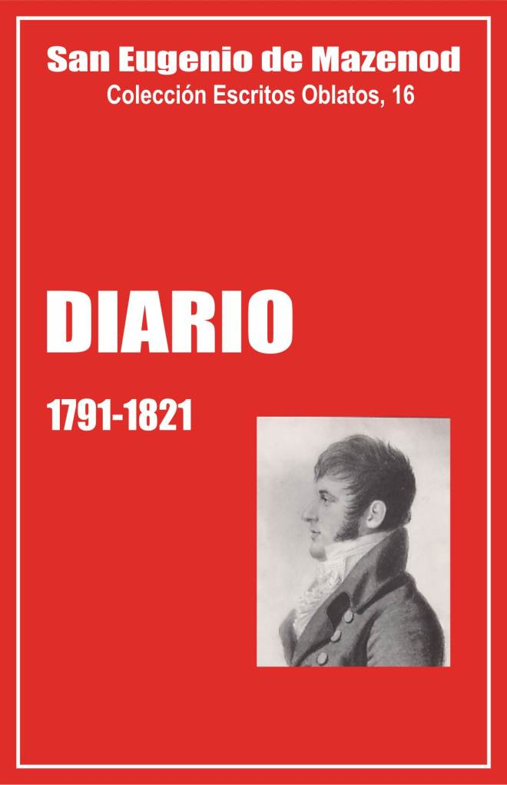

Palo Gordo
2019
Escritos Oblatos: - 01 - 02 - 03 - 04 - 05 - 06 - 07 - 08 - 09 - 10 - 11 - 12 - 13 - 14 - 15 - 16 - 17 - 18 - 19 - 20 - 21 - 22

San Eugenio de Mazenod
Colección Escritos Oblatos, 16
Traducción de O. Domínguez, o.m.i.
Postulación general O.M.I.
Roma, 1995
Asunción, Paraguay, 2003
Palo Gordo
2019
Infancia --
Emigración -
Venecia -
Nápoles -
Palermo -
En Paris
Cong. Juventud -
1813 -
1814 -
1815 -
1817 -
1818 -
1819 -
1820 -
1821
Misión Marignane -
Misión de Mouriès
Tras la publicación de las Cartas (Écrits Oblats, vol. 1-13) y de los principales Escritos Espirituales de san Eugenio de Mazenod (vol. 14 y 15), iniciamos la publicación de su Diario, a fin de tener en la misma colección todos sus escritos relativos a la Congregación y a su vida ascética y mística.
Qué entendemos por Diario del Fundador
Este título único no debe engañarnos; comprende documentos muy diversos, cuyos originales en su mayor parte han desaparecido, pero han sido publicados en parte en Missions OMI, o en las biografías del Fundador
Mons. de Mazenod relató, bastante regularmente de 1837 a 1860, los principales acontecimientos de su vida de Superior general de los oblatos y de obispo de Marsella. Ahí tenemos la parte principal de su Diario. Pero dejó también relaciones de viaje, como durante el exilio, de 1791 a 1802, y los viajes a París en 1805, a Roma en 1825-26 y 1854, y a Argelia en 1842. Además redactó el diario de algunas de las primeras misiones en 1816-17 y el de la congregación de la Juventud de Aix de 1813 a 1821.
Método de edición
Al publicar estos diversos trozos de Diario, tendremos en cuenta las páginas manuscritas y las ya publicadas con las eventuales modificaciones de los editores, que habrá que señalar cuando sea posible discernirlas, en la introducción o en las notas de cada parte del Diario.
El Fundador escribía siempre rápidamente, sin verificar la transcripción exacta de nombres de lugares y personas o las fechas precisas de los sucesos. Corregiremos el texto, señalando los errores.
Añadiremos también, cuando sea necesario, títulos y subtítulos. Las 75 páginas del Diario de la emigración, por ejemplo, se publicaron en Missions, 1866, sin ninguna división.
En este volumen 16 incluimos: el Diario de emigración (1791-1802) , el de la estancia en París en 1805, lo esencial del Diario de la Congregación de la juventud de Aix, de 1813 a 1821, y por último, el de las misiones de Marignane y Mouriès, en 816-1817.
Yvon Beaudoin, o.m.i.
INTRODUCCIÓN
El Diario de emigración de Eugenio de Mazenod se publicó con el título general de “Souvenirs de famille” (Recuerdos de familia) en Missions, 1866, pp. 109-144 y 265-304.
El P. Aquiles Rey, entonces redactor de Missions, presenta esos Recuerdos con esta breve introducción:
Con este título iniciamos la publicación de varios documentos que el examen de nuestros archivos puso en nuestras manos: conciernen todos a los primeros años de la vida de nuestro venerado Fundador. La reproducción es textual: nuestro trabajo consiste únicamente en fundir en la unidad del relato las diversas circunstancias contadas por separado. Daremos la palabra a Mons. de Mazenod mismo, citando los extractos de una relación escrita por él a la edad de 16 a 19 años, y completada más tarde, sobre sus viajes y su estancia en Italia.
Esta introducción del P. Rey indica una redacción en tres etapas: una relación escrita por Eugenio “a la edad de 16 a 19 años”; un complemento escrito “más tarde” por Mons. de Mazenod, y los añadidos del editor de Missions “para fundir en la unidad del relato las diversas circunstancias, contadas por separado”.
¿Qué se sabe exactamente de cada una de las etapas de la redacción del Diario de emigración?
La redacción de Eugenio antes de su regreso a Aix en 1802
Es cierto que Eugenio tomó notas sobre sus viajes a Nápoles y Sicilia, pero en 1805 afirma literalmente que lo perdió todo. A principios de 1805 anuncia a su padre que va a ir a París, y el padre le aconseja prudencia y le invita a escribir sus recuerdos. Eugenio le responde:
Si yo hubiese tenido la suerte de que el Diario de mis viajes, que ya no he vuelto a encontrar, hubiera caído en sus manos, no habría creído usted necesario advertirme que anotara en mis viajes lo que valía la pena retener. ¿Para qué servirían los viajes si se omitiera hacer observaciones razonadas sobre los diversos temas interesantes que se presentan con tanta frecuencia? Yo no entiendo qué placer se puede encontrar en recorrer el mundo a la manera de un paquete que se hace rodar de un vehículo a otro. Si así es como hoy se viaja, no es tal mi costumbre [24-5-05].
El Sr. de Mazenod responde el 11 de julio de 1805: Lástima que no me hayas indicado antes que habías olvidado aquí la relación de tus antiguos viajes. Tal vez habría podido recuperarla, pero ahora, al cabo de tres años, ya no es posible. Solo recuerdo que después de tu salida había esparcidas por el piso de tu cuarto hojas de papel, que se habrán tomado por papeles emborronados y que Nanon [la doméstica] habrá usado para alimentar el fuego de la cocina, como antaño una célebre biblioteca sirvió para calentar los baños de Alejandría. Los bárbaros ignorantes de todos los países se asemejan, pero también fue falta tuya, pues habrías podido recoger tus apuntes no en papeles sueltos sino en cuadernos menos expuestos a perderse.
¿Habrá hallado Eugenio después algún resto de ese Diario?
Eso da a suponer el P. Rey al presentar estos “Recuerdos de familia” y lo afirma el Fundador al hablar de su visita a Pompei en 1798: “Encuentro en mis notas que todavía no se conocía más que una calle, un teatro y una casa de campo…”. Pero hoy no queda nada de aquellas primeras notas.
¿Cuándo ‘completó después’ sus notas Mons. de Mazenod?
Por la crítica interna del texto, se pueden fijar algunas fechas bastante precisas.
Tras su vuelta a Francia en 1802, Eugenio hojea en los papeles de su padre y se interesa por el pasado de la familia. Entonces habría tenido tiempo para escribir sus recuerdos pues estaba a menudo desocupado. Pero no parece haber rehecho entonces el relato de su exilio en Italia, pues habría dicho algo sobre ello en las numerosas cartas que escribió a su padre.
Ciertos detalles nos permiten afirmar que una parte de ese Diario se escribió entre 1823 y 1839. Al relatar su viaje de Niza a Turín a fines de 1791, añade: “Lugares que he vuelto a ver después con otros ojos y en otras circunstancias”. Ahora bien, después hizo dos veces el mismo viaje: yendo a Roma, por Niza y Turín, en noviembre de 1825, y en sentido inverso, regresando de Suiza en noviembre de 1830. Nombra luego a los miembros de la familia que hacen el viaje de Turín a Venecia en 1794. Tras mencionar a su tío Carlos Fortunato, añade: ”después obispo de Marsella”, es decir, entre 1823 y 1837. Al final del viaje de Turín a Venecia, Eugenio menciona el nombre del marqués de Montgrand, y agrega: “Si alguien nos hubiera dicho que nos volveríamos a encontrar después de 40 y 45 años, uno alcalde y el otro primero vicario general y luego obispo de Marsella, lo habríamos tomado por un sueño. Con todo, es lo que ocurrió. 40 y 45 años después de 1794 nos sitúan en los años 1834 y 1839.
Mons. de Mazenod habría escrito entonces la primera parte de este Diario. Tuvo fácilmente tiempo para ello, pues, entre 1833 y 1835, como obispo de Icosia, no podía ejercer su cargo de vicario general de Marsella, y en 1835 pasó varios meses en las casas de N.D. de l’Osier y N.D. de Laus. Disminuyó también mucho sus actividades durante varios meses de 1837 a causa del deterioro de su salud. Tuvo incluso que ir a descansar fuera de Marsella desde el 29 de mayo hasta el 2 de agosto. De otras frases se desprende que otras partes del Diario se escribieron después de 1849-1851. Esto sorprende, ya que durante los últimos diez años de su vida Mons. de Mazenod estuvo siempre muy ocupado.
Durante su estadía en Nápoles, en 1798, Eugenio hizo una visita a Portici y otra a Pompei.. Hablando de Portici escribe: “ahí es donde fue acogido el Papa Pío IX durante su estancia en Nápoles”. Y Pío IX habitó en el castillo real de Portici del 4 de setiembre de 1849 al 4 de abril de 1850.
En la relación de la visita a Pompei, Mons. de Mazenod observa: “Reconocí más tarde la casa en la que nuestro cicerone hizo resaltar muy bellas pinturas echando agua sobre los muros”. Esta reflexión sorprende. En ninguna parte de sus escritos Mons. de Mazenod deja siquiera adivinar que haya hecho una segunda visita a Pompei. Pero el P. Rey dice que con ocasión de su viaje a Roma, de fines de enero a comienzos de abril de 1851, para la aprobación de las modificaciones de la Regla, el Fundador y el P. Tempier pasaron “cinco días” en Nápoles. Según esa página del Diario, fueron también a Pompei.
En Palermo, Eugenio habla de las tres hijas del Rey, “dos de las cuales han muerto”. Ahora bien, una murió en 1806 y otra en 1849. Estas diversas reflexiones del Fundador en el curso de su relato, nos permiten, pues, decir que escribió estas páginas en diversas ocasiones desde 1823 hasta los últimos años de su vida.
¿Cuál fue el trabajo del P. Rey?
El P. Rey (1828-1911), primer redactor de Missions de 1862 a 1867, se propone solo “fundir en la unidad del relato las diversas circunstancias contadas por separado". Sin embargo, hace más. Un tercio de la relación está escrita por él. Se reconoce fácilmente su texto porque escribe en tercera persona del singular, mientras el Fundador hace la narración en primera persona. Las páginas escritas por el P. Rey son muy interesantes. Nos brindan muchos detalles muy circunstanciados de la infancia y de la vida de Eugenio durante su exilio.
Pero ¿cuáles son las fuentes de sus conocimientos? Él conoció a la Sra. de Mazenod [1]. Pudo hacerla hablar y escuchar de ella anécdotas sobre el carácter de Eugenio niño. Pero la mayor parte de los otros detalles no podían ser conocidos y contados más que por el mismo Mons. de Mazenod, pues su madre y su hermana Eugenia solo estuvieron con él menos de un año en Venecia.
El P. Rey vivió durante unos quince años en el seminario mayor de Marsella, a pocos pasos del obispado. Como otros escolásticos y Padres del seminario, pudo ayudar a transcribir sus cartas en el registro de las cartas importantes y trabajar con él, tanto más cuanto que era ya conocido por sus talentos de escritor. Parece que fue él mismo y el P. C. Aubert quienes redactaron y publicaron, por inspiración del Fundador, la Notice historique et statistique sur la Congrégation…de los años 1853-54, 1854-55 y 1857-58. Entonces habrá tenido tiempo de preguntar al Superior general sobre su pasado, como lo hizo con el P. Tempier. Él lo confiesa por otra parte al hablar de la extracción del lobanillo de Eugenio en Turín. Escribe: “Le hemos oído contar que se dirigió al Espíritu Santo”. [cf. infra, p. 16].
Pero, si pudo oír de labios del Fundador ciertos detalles de su narración, el P. Rey se sirvió también de fuentes escritas. Tenía en su posesión cartas y documentos luego desaparecidos, en particular las cartas del Presidente a su hijo cuando éste se hallaba en el Colegio de Nobles de Turín en 1792-93. Además parece que solo publica algunas páginas del Fundador y otras las resume o narra con sus propias palabras. Un ejemplo nos permite hacer esta afirmación. Hablando de la estadía en Nápoles, Rey escribe: “Solo sabemos, en cuanto a la piedad, que durante todo el tiempo que pasó en Nápoles, Eugenio se avergonzaba tan poco de mostrarse cristiano que, aun siendo un muchacho grande y un apuesto joven, no temía ir diariamente a ayudar a misa a su tío, después obispo de Marsella”. El editor sigue aquí tan de cerca el texto del Fundador que copia ese detalle “después obispo de Marsella”. Esto caía bien en el escrito del Fundador que escribió una parte de su Diario cuando su tío era obispo de Marsella antes de 1837, pero se explica mal en la pluma del P. Rey que no pudo escribir eso antes de 1837, ya que entró en el noviciado en 1844.
Ya sea que escriba lo que “ha oído contar” al Fundador, ya sea que formule con sus propias palabras textos escritos por él, podemos estar seguros de que el P. Rey trata de decir la verdad. El P. R. Boudens, que hizo un estudio sobre el valor histórico de las primeras biografías del Fundador, las de J. Jeancard, A. Ricard, R. Cooke, T. Rambert y A. Rey, escribe: “De todos los biógrafos que hemos mencionado, el P. Rey es sin discusión el más concienzudo y el más exacto. Verificó todo lo que pudo. A menudo corrigió a los que habían escrito antes de él” [2].
Por qué escribió este Diario Eugenio de Mazenod
Los viajes, sobre todo para los jóvenes, sirven igual que las clases para enriquecer los conocimientos y desarrollar la inteligencia. En su juventud, Eugenio no concebía que se pudiera rodar por el mundo “a modo de paquete que se pasa de un coche a otro”. “¿Para qué servirían los viajes, escribe a su padre el 24 de mayo de 1805, si se omite hacer las observaciones razonadas sobre los diferentes objetos interesantes que se presentan?”.
Si reanudó estas notas mucho después, fue solo por complacer a sus amigos. El mismo escribe antes de contar su viaje al Vesubio: “Trazo sencillamente para diversión de mis amigos, que me han mostrado el deseo de conocer las aventuras de mi exilio, algunos rasgos que me son personales y que no ofrecen más interés que el que quiera atribuirles la amistad que me profesan” [3].
Conclusión
En este Diario de emigración, en efecto, se aprende a conocer a Eugenio por “ciertos rasgos” que le son personales, y también por la forma con que cuenta varios viajes y algunas fiestas principales a las que asistió en Venecia, Palermo y Monreale.
Estas páginas, por escasas que sean, son no solo “recuerdos de familia”, sino una herencia preciosa, sin la cual la infancia y la juventud del Fundador serían mucho menos conocidas.
Yvon Beaudoin, o.m.i.
1. Infancia
Familia, infancia y primeros estudios en Aix(1782-1791).
1 de agosto de 1782
Carlos José Eugenio de Mazenod nació en Aix el 1 de agosto de 1782. Sabéis que su familia ocupaba uno de los primeros rangos en la magistratura. Su abuelo [Carlos Alejandro de Mazenod, 1718-1795] hombre de espíritu amable y cultivado, había servido primero en una compañía de mosqueteros, pero, al no permitirle su salud continuar en ese servicio, pasó a ser presidente del Tribunal y Cámara de Cuentas etc. de Provenza; sus talentos lo colocaron muy pronto al frente de esa Compañía cuya confianza se ganó por entero. Fue diputado en París para representarla en los debates que sin cesar renacían entre ella y el Parlamento con el cual pretendía correr parejas y sobre el cual habría tenido derechos de preeminencia por haber sucedido al antiguo Tribunal de Cuentas, muy anterior al establecimiento del Parlamento. En sus viajes a París, fue admitido en la intimidad del Señor Delfín, padre de los reyes Luis XVI, Luis XVIII y Carlos X, con el presidente de Eguilles, su pariente y amigo. Cuando el Parlamento se reunió en Provenza con el Tribunal de Cuentas, como hubiera sido deseable que ocurriera en todas partes, no solo conservó la misma influencia en su Compañía, de la que era presidente segundo (el primero era el Sr. d’Albertas), sino que la ejerció en toda la provincia con esa superioridad que da el talento unido a la virtud: era un modelo. Su hijo [Carlos Antonio, 1745-1820] presidente al mismo tiempo con él, tanto en el Parlamento como en el Tribunal de Cuentas, se distinguió igualmente por su alta capacidad. La Revolución interrumpió su carrera. El último acto público que prueba la opinión que el país había concebido sobre él fue su nombramiento por los Estados de Provenza para la Asamblea nacional de Francia. De él nació Eugenio.
2. Infancia: carácter, bondad, rectitud, piedad
Infancia: carácter, bondad, rectitud, piedad.
[1 de abril 1891]
Es imposible dejar de reconocer los futuros designios de la Providencia sobre este niño, considerando las cualidades que se desarrollaron desde muy temprano en su alma. He oído contar que estando todavía en pañales, el medio seguro para acallarlo cuando lloraba era llevarlo a la iglesia; allí se callaba inmediatamente, y no se podía menos de sonreír, viéndolo escuchar al predicador como si comprendiera lo que decía, e imitar con sus manecitas los gestos que le veía hacer.
Cuando empezó a hablar, mostró una fuerza de carácter rara en los niños de su edad, lo cual encantaba a su abuelo materno [José Tomás Joannis, 1717-1795] que sentía por él una gran ternura. Nunca pedía nada llorando, y antes de haber aprendido cómo hay que hacer para obtener algo, en esos primeros años en que los niños manifiestan su voluntad con lloros, él decía con altivez: “lo quiero”.
El rango que ocupaba su familia le obligaba a tener gran número de criados: tenía doce en la casa de su padre, todos dispuestos a servirle y a volar adelantándose a todos sus deseos; pero preludiando la vida sencilla que adoptó más tarde, se zafaba hábilmente para dedicarse a ciertos actos de beneficencia, que su abuelo materno quería que se le dejara hacer sin dar la impresión de advertirlo, contento al ver desarrollarse tan temprano en el pequeño, que no tenía más que 5 o 6 años, cualidades que de ordinario no se adquieren más que con mucho trabajo en una edad más avanzada. Lo que se distinguió en él desde esa tierna edad, con una especie de admiración, fue una sensibilidad extraordinaria de corazón, que le llevaba a compadecer, hasta sufrir por ello, todas las penas de los otros. Entonces no hallaba paz hasta haber aliviado a su modo a los que veía afligidos o sufriendo. Su abuelo, hombre de eminente piedad, mantenía esas buenas disposiciones, confiándole, aun siendo tan niño, la distribución de ciertas limosnas. Se le vio una vez dar su chaqueta a un pequeño carbonero que andaba sin ella, y como se le hiciera algún reproche parangonando su condición con la del carbonero, respondió alegremente: “Pues ¿qué tiene que ver? Seré un presidente carbonero”.
Toda la familia del Sr. Revest, célebre procurador en el Parlamento, sentía por Eugenio la más viva afección. Este jurisconsulto que reunía en su estudio a los hombres más ilustres del foro de Aix, no dejaba que se le acercara nadie cuando estaba ocupado en su despacho o cuando dictaba a sus pasantes, pero el pequeño Eugenio quedaba exceptuado de esa consigna. Apenas entraba, el Sr. Revest le tomaba en brazos y seguía dictando paseándose con el niño que escuchaba atentamente sus oráculos.
Un día Eugenio entró en la casa del procurador y quedó sorprendido al no ver fuego. “¿Cómo, dijo a la familia, no os calentáis hoy? Hace mucho frío”. Las señoras le respondieron para probarlo, el niño no contaba todavía seis años: “Es que somos pobres y la leña es cara”. Eugenio las saluda y se retira: una hora después vuelve empujando con fatiga una pequeña carretilla con varios trozos de leña que arroja bruscamente a la puerta diciendo: “Aquí tenéis para calentaros”. Puede imaginarse la emoción de toda aquella familia ante ese rasgo de bondad. Varios de sus miembros lo contaban todavía treinta años después con lágrimas en los ojos.
Extrañará que Eugenio pudiera hacer libremente esas cosas, pero no hay que olvidar las órdenes que había dado su abuelo, de dejarle actuar cuando su corazoncito le inspiraba alguna obra buena. Se le vigilaba entonces de lejos, se le seguía sin que se diera cuenta, y Eugenio no contaba nada a nadie, encantado de haberse salido con la suya a espaldas de todos. Así en aquella circunstancia se le dejó hacer todo ese trabajo, verdaderamente excesivo para su edad, y lo realizó con una actividad increíble.
Esa sensibilidad para los males ajenos, junto a un afecto tierno para con todos los que le querían, fue una de las características de su alma durante toda su vida. A los 10 años, hallándose en el colegio de Turín, se enteró de la muerte de la doncella de su madre. Al pensar en el dolor que debía experimentar la madre de aquella joven y al probar la pena de la pérdida de una persona que estaba a su servicio, sintió una impresión tan fuerte que tuvieron que llevarlo a la cama, donde lloró a lágrima viva entre sollozos, aunque aquellas personas no estaban presentes a su vista.
Lo mismo ocurrió en Venecia cuando vio morir en la casa de los Zinelli, donde se le había acogido con mucha bondad como luego diremos, al hermano mayor de aquella respetable familia. Tenía entonces 14 años, pero fue tan conmovedor en el dolor que sintió y en las demostraciones de interés que dio a la madre y a los hermanos del difunto, que la familia le brindó una afección paternal que nunca se desmintió.
Otra cualidad notable que se desarrolló en Eugenio desde la más tierna edad fue una gran rectitud y un amor a la verdad que le hacía incapaz de la menor mentira. Así, cuando estaba en falta, nunca se excusaba ni aún menos disimulaba su error. Esta franqueza tenía su origen en el fondo del carácter fuerte y firme que trajo consigo al nacer.
Hemos dicho que no pedía nada con lágrimas, se mostraba más bien voluntarioso, pero se le calmaba siempre con la razón: se habría encabritado contra el castigo, sobre todo si lo hubiera creído poco merecido. Por lo demás, no daba ocasión a que se le infligiera. Su rectitud no le permitía dejar caer sobre otros la menor acusación cuando no eran culpables.
Una vez un niño le había dado algo a cambio de un lindo abanico de su madre que Eugenio había creído poderle ceder. Los padres de ese niño, al verle llegar con el precioso abanico, temieron que lo hubiera robado; el niño les informó cómo lo había obtenido, confesando que Eugenio se lo había entregado. Ellos se apresuraron a ir con el hijo a casa de la Sra. de Mazenod para devolverle el valioso abanico. Mientras ellos presentaban excusas por el aturdimiento del hijo, Eugenio temió que se acusara al niño de haber robado el abanico, y sin miedo a cargar él con la culpa, gritó con vivacidad: “No acuséis a este niño, él pagó el abanico”. La madre de Eugenio se contentó con decir a su hijo que había hecho mal disponiendo de lo que no le pertenecía, pero para reconocer la honradez de la conducta de los buenos padres del otro niño, rogó noblemente a la madre que aceptara el abanico como regalo.
No le gustaron nunca los juegos de la infancia, se le veía siempre preferir la compañía de las personas mayores. Cuando se hablaba de cosas serias, iba en seguida a tomar un taburete y se sentaba a los pies de los interlocutores, escuchando con atención todo lo que decían, sin permitirse nunca interrumpirlos, a no ser que ellos, sorprendidos del interés que el pequeño prestaba a una conversación que parecía superior a su edad, desearan preguntarle para escuchar las respuestas justas que nunca dejaba de darles.
Con todo, él se divertía con gusto imitando las ceremonias de la iglesia, pero intentaba representarlas de manera seria, y los que le ayudaban le habrían disgustado mucho si se hubieran permitido sonreír en sus sermones, o hubieran parecido distraerse en las funciones que les confiaba para el servicio de su capilla.
Se habría dicho que presumía de no ser niño, pero eso era en él el efecto de su natural y de las cualidades precoces que a diario se desarrollaban en él. Así, cuando tuvo que abandonar Francia al surgir la Revolución, tenía solo 9 años. Se le avisó por la tarde que saldría al día siguiente. Pidió como gracia ir a despedirse de sus buenos amigos de la familia Revest, prometiendo que no traicionaría el secreto que se le acababa de confiar. En efecto, se hizo acompañar a la casa de los Revest y, al sentirse enternecido pensando que iba a separarse de ellos, dejó bruscamente la reunión con el corazón oprimido, dándoles las buenas noches. Esa familia tan amable con el pequeño no se explicó la escena más que cuando se enteró al día siguiente de que Eugenio había salido para Niza.
3. Niza y Turín ( 1791-1794)
II- Niza y Turín ( 1791-1794). Motivos de la salida.
[20 de abril 1791]
He aquí las razones de aquella salida precipitada, tal como nos las presenta la relación que hemos anunciado.
Habiendo sido decretada por los revolucionarios la captura de mi padre, al regreso de su diputación en los Estados Generales, dejó Francia y fue a Niza, de donde envió a su hermano para que me llevara junto a él. Salí de Aix con mi tío el 20 de abril de 1791 y llegué a Niza el 23 de abril, que era sábado santo. Era preciso que cundiera el espanto ante la amenaza que se había hecho de deshacerse de los hijos de los nobles, para que mi madre consintiera dejarme emprender ese viaje sin estar aún del todo repuesto de una indisposición que me había molestado mucho. Mis dos abuelos, mi abuela, mi tío sacerdote [Fortunato] y toda mi familia reunida, no pusieron obstáculo a la pronta ejecución de las órdenes de mi padre. Yo no tenía aún nueve años. Todo lo que pude hacer fue guardar el secreto como hubiera podido hacer una persona mayor. Se me había recomendado y fue fielmente mantenido.
La salida interrumpió los estudios que Eugenio había iniciado en el colegio Borbón, donde hacía el sexto grado [primer curso de bachillerato] con el éxito que siempre ha tenido en sus clases. Hemos encontrado un premio que se le otorgó ese año, y algunas cartas que le escribía desde Niza su padre cuando Eugenio estaba en el colegio de Turín, prueban que él era siempre el primero de la clase en ese colegio, pues su padre le recomendaba en la ocasión no enorgullecerse de sus éxitos y tener siempre sentimientos de amistad y benevolencia con los competidores a los que dejaba atrás [4].
4. Breve estadía en Niza en 1791
Breve estadía en Niza.
[1 de mayo 1791]
Con todo, en las clases del colegio de Turín, había doble mérito en superar las dificultades, pues se enseñaba en italiano, que no era la lengua nativa de Eugenio. Todo el italiano que entonces sabía lo había aprendido en Niza durante los pocos meses que allí pasó antes de ir a Turín. Su padre le hacía seguir una escuela en la primera de esas ciudades. ¡Qué dificultad para componer su tema o su versión en una lengua extranjera! ¿Qué hacía Eugenio? Buscaba la ayuda de todos los transeúntes. Su familia habitaba la casa Sauvaigne, que da a la terraza, paseo público al borde del mar. Eugenio hacía su trabajo a la puerta, y cuando estaba en dificultad sobre el significado de una palabra italiana, se acercaba al primero que pasaba, quien con gusto se lo explicaba.
Permanecí en Niza cinco meses, prosigue la relación. En el intervalo, mi madre y mi tía vinieron a encontrarnos; su madre las acompañó con la intención de volver pronto junto a mi abuelo. Fue para mí una gran alegría. Juzgando que los asuntos de Francia no nos iban a permitir regresar tan pronto, mis padres se preocuparon de procurarme los medios de perfeccionar mi instrucción. Se decidió que ingresara en el colegio de los Nobles en Turín [5]. Mi madre y mi abuela se encargaron de llevarme. Mi madre entonces había rebasado apenas los treinta años y mi abuela tenía apenas cincuenta. Todo lo que me trae el recuerdo de aquella buena abuela me emociona sensiblemente. La he amado siempre tanto como a mi madre, es decir, tanto como es posible amar aquí abajo [6]
5. Turin
Formación en el colegio de los Nobles de Turín. Primera comunión.
[30 de septiembre 1891]
Llegamos a Turín pasando por Escarena, Sospel; atravesamos el collado de Tende y bajamos por Limone, Cuneo, Savigliano, Racconigi, lugares todos que he vuelto a ver después con otros ojos y en otras circunstancias. Creo que era en setiembre de 1791.
El colegio de los Nobles, donde se me colocó, acababa de ser confiado a los RR. PP. Barnabitas por el rey Víctor Amadeo. Estos religiosos se aplicaban a dar una educación esmerada a los hijos de familias distinguidas que se les confiaban. Yo fui de los primeros en entrar en ese colegio, y el P. Scati, que era el rector, me mostró desde entonces una gran amistad. Era un religioso muy estimado. Murió siendo general [provincial] de los Barnabitas, tras haber rehusado el episcopado que se le había ofrecido durante la Revolución. Si hubiera prolongado su carrera, se le habría hecho cardenal. Se le debe la edición completa de las obras del cardenal Gerdil, su hermano de religión y su amigo.
Quedé en el colegio poco más de tres años. Tuve como profesor al P. Massimini, y en aquella época el P. Cadolini, hoy día obispo en la Marca de Ancona, fue uno de mis maestros. El Sr. Tavenet, de San Sulpicio, era asistente de una de las alas donde yo habitaba, y debo a su severidad el haber estudiado como es debido y el haber sido siempre el primero en las clases.
6. Primera comunión
Primera comunión.
[5 de abril] de 1792
Hemos dicho antes cómo cumplía Eugenio sus deberes de clase. Parece que sus maestros, especialmente el P. Scati, quedaron también contentos de su sensatez, pues le permitieron hacer la primera comunión antes de cumplir los diez años. Tuvo esa dicha el jueves santo [5 de abril] de 1792. Antes de eso, hallándolo al parecer más razonable que sus compañeros, le dieron una especie de inspección sobre su junta de camaradas. Su padre, siempre atento a dirigir desde lejos las impresiones de Eugenio, le escribía también acerca de esto para recomendarle que usara bien esa autoridad y que se compadeciera de las flaquezas de sus colegas.
El P. rector y los otros Padres le tuvieron siempre mucho afecto y se complacían en proponerlo como modelo. Y es que el niño reunía cualidades raras en esa edad. Tuvo oportunidad de darlas a conocer en varias ocasiones en que supo aprovechar de su ascendiente para mantener entre sus camaradas el buen espíritu que los Superiores querían que reinara.
Fue por aquella época cuando el duque de Angulema y el duque de Berry [hijo del futuro Carlos X], refugiados en Turín junto al rey, su abuelo, fueron a visitar el colegio de los Nobles, acompañados por el Sr. duque de Sorrento, su gobernador. Eugenio les fue presentado, y los príncipes fueron invitados a entrar en su cuartito por ser el más limpio de todo el dormitorio. El duque de Berry quiso medir su talla acercándose a Eugenio que, aunque con cuatro años menos, era más alto que él, lo que el príncipe hizo notar con exclamación.
7. Operación de lobanillo. Confirmación
Operación de lobanillo. Confirmación.
[3 de junio de 1792]
En el intervalo entre su primera comunión y su confirmación, es decir, entre el Jueves Santo y la Trinidad [3 de junio] de 1792, Eugenio dio otra prueba de la delicadeza de sus sentimientos y de la firmeza de su carácter. Es digno de nota a causa de su edad. El niño tenía de nacimiento un lobanillo en el ángulo del ojo izquierdo. Sus padres, temiendo que si el lobanillo crecía quedara desfigurado, decidieron hacérselo extirpar por un hábil operador como era el doctor Pinchinati, primer cirujano del rey. No fue difícil obtener el consentimiento del niño, demasiado razonable para resistir al deseo de su familia. Se fijó el día y su madre debía llegar de Niza la víspera para asistir a esa dolorosa operación. Eugenio quiso ahorrarle la pena de verle sufrir. Pidió con insistencia al R.P. Rector que tuviera a bien permitirle se adelantase la operación para que su madre la encontrara ya realizada al llegar. El R. P. Rector, encantado por esa delicadeza de sentimiento, se lo concedió con mucho gusto.
Todos los preparativos se hicieron en las dependencias del P. Rector que deseaba asistir a la operación. Llega el primer cirujano del rey, acompañado de sus alumnos, se felicita al niño por su valor, el cual mostraba una decisión que a todos tenía encantados. Allí era donde Dios le aguardaba para darle una pequeña humillación que quizás él se había merecido por contar demasiado con sus fuerzas. Cuando se habían desplegado sobre la mesa todos los instrumentos encerrados en el estuche del doctor, cuando el niño vio lanceta, bisturí, tijeras ganchudas, pinzas, hilas, etc., creyó que se le iba a atravesar la cabeza y su valor le abandonó: hubo que recoger todo ese instrumental de suplicio y el operador se retiró con sus alumnos.
Eugenio entró muy confundido en su cuarto, y por un impulso de fervor se arrodilló para invocar a Nuestro Señor Jesucristo, a quien probablemente no había rezado antes. Le oímos contar que se dirigió al Espíritu Santo con gran confianza. Esa plegaria ferviente agradó al Señor, pues al punto el niño se levantó con nuevo coraje y entrando en la habitación del P. rector, le pidió que llamara al doctor pues estaba resuelto a sufrir la operación por dolorosa que pudiera ser. El P. rector, admirado de ese cambio, hizo llamar al Sr. Pinchinati, quien se dispuso en seguida a iniciar la operación. Esta fue muy larga y muy dolorosa y hasta espantosa por la cantidad de sangre que salió de la vena que hubo que cortar para extraer el lobanillo. Este no pudo ser extirpado más que apretando varias veces la materia grasienta que contenía y cortándola cada vez con tijeras curvas, lo que prolongó mucho la operación. La fuerza sobrenatural que Eugenio había obtenido del Espíritu Santo con la oración no se mostró solo en la resolución de sufrir la operación, sino en el valor que lo sostuvo todo el tiempo: no lanzó un grito ni dejó oír una queja. Su madre llegó la tarde misma y quedó conmovida, como se puede imaginar, por la atención de su hijo que había querido ahorrarle la pena de verle sufrir.
El tratamiento se prolongó mucho tiempo, tanto que, al llegar la época de la confirmación general, se temía que Eugenio no pudiera asistir. El Sr. cardenal Costa, arzobispo de Turín, tuvo la bondad de proponerle la confirmación en privado. Pero no fue preciso recurrir a ese favor y el muchacho se confirmó con todos los demás el día de la Trinidad de 1792 en la iglesita contigua al arzobispado.
El atractivo de Eugenio por la piedad se mantuvo todo el tiempo que pasó en el colegio. Se manifestaba en el gusto que siempre mostró por las ceremonias religiosas. Mientras estuvo en el pabellón llamado de San Antonio, el segundo por donde pasó durante su estadía en el colegio, se levantaba siempre casi una hora antes que los otros para decir muy gravemente la misa en una capillita que había preparado con sus camaradas, la cual estaba provista de todos los ornamentos convenientes.
Como los patriotas franceses, dice la relación, amenazaban invadir todo el Piamonte, mi padre no creyó que su familia estaba segura en Turín, y decidió dejar esa ciudad para ir a Venecia y ponerse al abrigo en las lagunas de una república que pensaba iba a ser respetada por los republicanos franceses.
8. Venecia (1794-1797)
III - Viaje de Turín a Venecia. Doce días de barca.
2 de mayo de 1794
El 2 de mayo de 1794 mi padre fletó una barca grande en la que se embarcó con toda su familia, compuesta entonces por mi padre, Carlos Antonio de Mazenod; mi madre, María Rosa Eugenia de Joannis; mi tío abuelo Augusto Andrés de Mazenod, arcediano, vicario general de Marsella; mi tío Carlos Fortunato de Mazenod, sacristán, vicario general de Aix, después obispo de Marsella; mi tío Carlos Luis Eugenio de Mazenod, caballero de San Luis, entonces capitán de los navíos del rey, después contraalmirante; mi tía Isabel de Joannis, marquesa de Dons-Pierrefeu; mi primo hermano el pequeño José Emilio de Dons, marqués de Pierrefeu; Nanon, doncella de mi madre; la nodriza de mi primo; mi hermana y yo. Gran número de emigrantes tomaron el mismo partido y pidieron a mi padre embarcarse con nosotros; entre ellos había buen número de sacerdotes. Entre los laicos contábamos la familia de Colonia, la de Durand-Dubraye y el marqués de Pontevès. Jamás hubo un viaje más barato. Gracias a la delicadeza de mi padre, que había tomado en alquiler la barca, solo costó 15 libras de Piamonte, y aun solo 12 libras a los sacerdotes, que eran juzgados más pobres que los laicos. Este viaje no estuvo exento de encanto; duró doce días porque cada tarde se paraba en algún lugar para pasar la noche.
En todas partes encontramos la más cordial hospitalidad. Los patriotas [los revolucionarios] no habían pasado todavía por allí. Se competía por brindarnos las mejores atenciones. Acudían a recogernos a bordo para alojarnos cómodamente en la ciudad. El primer día paramos en Casale Monferrato, capital del Monferrato. Fue un honrado procurador quien pidió el privilegio de hospedar a mi padre y a mi madre. No contentos con habernos acogido en casa para cenar y dormir, al día siguiente, él y su esposa nos acompañaron al barco y nos obligaron a aceptar algunas pequeñas provisiones para el viaje del día. Siento mucho no haber retenido el nombre de aquellas buenas personas.
La segunda estación fue en Piacenza. Esta ciudad no está a la vera del río. Hubo que hacer un trayecto bastante largo para llegar. Se nos alojó en un hotel y recuerdo que compramos hermosas fresas en el mercado. Toda esa comarca es magnífica.
Al día siguiente proseguimos nuestra ruta hasta un pueblo situado frente a Cremona. Varios de nuestros compañeros de viaje fueron a visitar esa ciudad, donde la marquesa de Colonia encontró una persona generosa que compadeciéndose de la suerte de tantos emigrados obligados a huir lejos de su patria, le deslizó hábilmente en la mano un cartucho de monedas de oro, que la dama rehusó.
El día siguiente nuestro barco se detuvo hacia mediodía en un sitio delicioso, del que todos los viajeros quisieron disfrutar. Descansamos a la sombra de un espeso follaje; y al ver el contento al que todos se entregaron, ya con conversaciones animadas, ya con cantos y alegría, nadie habría sospechado que se trataba de una colonia de emigrados que huían de los tiranos que amenazaban sus vidas y se habían incautado de todos sus bienes.
Recorriendo aquellas campiñas encantadoras, encontramos una hermosa casa habitada por un anciano venerable que nos invitó a entrar para descansar. Nos ofreció en seguida todo lo que tenía y, desolado por nuestra negativa, no logramos consolarle más que aceptando una taza de café que nos hizo servir muy cordialmente. No cesaba de colmarnos de bendiciones y nos hizo prometer que acudiríamos a él cuando juzgáramos que podría sernos útil. Poco faltó para que aquella misma noche hubiéramos tenido que recurrir a su cortés ofrecimiento.
Tras habernos despedido del buen anciano, volvimos a reunirnos con nuestra alegre comitiva, que había aumentado en forma considerable. Un barco, cargado como el nuestro de emigrantes y de sacerdotes, nos seguía de cerca al parecer y paró en el mismo lugar, y mis padres tuvieron el consuelo de abrazar a varios amigos, como a Mons. de Bausset, obispo de Fréjus, y al Sr. marqués de Grimaldi. Derramaron en común algunas lágrimas por su situación y se consolaron como pudieron, y se dio la señal de salida, para dirigirse juntos hacia Ostiglia, lugar de execrable memoria, donde todos nuestros pobres emigrados fueron tratados como gente sospechosa, de la que no había que fiarse. Las autoridades del pueblo pusieron guardias a bordo de los dos barcos y solo permitían bajar a tierra a las personas elegidas para comprar las provisiones; y hasta se tomó la precaución de hacerlos escoltar por militares armados. Este tratamiento bárbaro extrañó a todos y no se parecía nada a lo que habíamos encontrado antes, y por suerte no se repitió en ninguna parte.
Cuando se hizo de día, nos alejamos de aquella tierra inhospitalaria y por la noche se nos resarció ampliamente de los malos tratos de la víspera con la acogida presurosa, generosa y encantadora que se nos ofreció en Sermida, donde paramos para pasar la noche. Sermida no está precisamente al lado del Po, se llega a ella por una hermosa alameda que defiende al viajero de los ardores del sol.
Apenas habíamos llegado, el alcalde del lugar llegó a darnos la bienvenida. Se encargó de proveer al alojamiento de todas las personas laicas; el arcipreste que llegó con él a nuestro encuentro, se ocupó de colocar convenientemente a los sacerdotes.
Mi padre, mi madre y toda mi familia recibimos hospitalidad en casa del principal personaje de la comarca, quien nos trató magníficamente. El alcalde conservó para con mi padre tal respeto y tan gran confianza que por mucho tiempo siguió manteniendo con él una relación epistolar. El fue quien nos notificó la muerte de nuestro excelente anfitrión, unos meses después de que nos establecimos en Venecia. El marqués de Montgrand, joven entonces, era la tarde de nuestro paso por Sermida uno de los convidados. Eramos tan numerosos que no hubo más que una cama para nosotros dos. Recuerdo que yo estaba tan rendido por el sueño que dormí todo el tiempo de la cena; sin duda que no debí de incomodar a mi compañero. Si alguien nos hubiera dicho que nos volveríamos encontrar cuarenta y cuarenta y cinco años después, el uno como alcalde, y el otro primero como vicario general y luego como obispo de Marsella, lo habríamos tomado por un sueño. Y es lo que iba a suceder.
Al atardecer de ese memorable día, nos paramos en Borgoforte para pasar la noche. Allí fue donde se separaron de nosotros los compañeros de viaje que debían ir a Verona. Nuestra barca quedó sobre todo aliviada de un emigrado que se había ingeniado para hacerse detestar por todos. Un día vi llegado el momento en que se le iba a lanzar al agua. Alguien que no fue lanzado, pero se dejó caer fue nuestra pobre Nanon. Habría perecido infaliblemente sin la destreza y la valentía de uno de nuestros marineros. En cambio, un día nos salvamos gracias al buen ojo de experto de mi tío el caballero, que apartó nuestra barca en el momento en que iba a ser arrastrada por la corriente de un molino. Se habría quebrado allí.
Proseguimos nuestro viaje hasta Ponte Lagoscuro, donde todos los sacerdotes que iban con nosotros nos dejaron para entrar en los Estados del Papa. Mi familia y unas pocas personas entre las que se hallaba el caballero de Montgrand, que unió su suerte a la nuestra hasta su salida de Venecia donde se había alojado y donde comía con nosotros, sin dejarnos intimidar por el falso rumor que corría de que no recibían a los extranjeros en Venecia, cambiamos de barca a expensas de nuestro patrón y entramos por la Polesina en los Estados Vénetos.
Esta navegación es muy interesante. Como el lecho del Po es mucho más alto que las tierras del país que hay que atravesar, se han escalonado esclusas que sirven para bajar a los lugares donde uno quiere parar y para levantar las barcas hasta el nivel del río. Bajamos así a la Polesina sin salir de nuestro burciello; este nombre se da a los barcos muy cómodos que hacen el servicio de esa navegación. Por ese canal hay comunicación con los diferentes ríos que serpentean en la hermosa región. Se atraviesa el Tártaro, el Adigetto y el Adige y se llega a Chioggia, donde dormimos en espera de las barcas que debían remolcar nuestro burciello a las lagunas que separan la tierra firme de la bella ciudad de Venecia.
9. Venecia
[29 mayo 1794]
Unas horas nos bastaron para alcanzar a esta reina de los mares majestuosamente recostada en el centro de sus aguas, desde donde antaño era dueña del comercio de todas las naciones. La antigua república que contaba tantos siglos de existencia vivía todavía, pero estaba en su ocaso y pronto se extinguió a nuestra vista. Se puede decir que en cierto modo no existía ya más que en la opinión cuando nosotros fuimos a refugiarnos en su dominio. Los extranjeros afluían todavía en tropel para gozar de la libertad y las diversiones que Venecia ofrecía sobre todo en la época de la Ascensión, día fijado para el solemne matrimonio del Dux, representante de la república, con el mar. La fiesta se prolonga por más de ocho días y se renueva cada año. Nosotros no estábamos en grado de tomar en ella mucha parte ni mucho deleite. Al contrario, quedamos muy contrariados al llegar tan inoportunamente, sin poder encontrar albergue en ninguna parte.
Pasamos todavía una o dos noches en nuestra barca esperando que un petardista que habíamos pescado en el viaje, que se hacía pasar por oficial austríaco mientras que él y su mujer eran simples cantadores de la calle, nos encontrara una posada por mísera que fuera. No fue éste el único servicio que ese honesto industrial, que creo se llamaba Montecatini, nos brindó como agradecimiento por el favor que le habíamos hecho admitiéndole gratuitamente en nuestra barca, para que pudiera llegar con su mujer a Venecia adonde le atraía la concurrencia de extranjeros con ocasión de la feria de la Ascensión. Viendo a dos sacerdotes en nuestra familia, creyó que podría sernos grato presentarnos un curita de su amistad. Pienso que era simplemente un poeta de teatro, pero a Montecatini debía de bastarle saber que era sacerdote para proponerle entrar en contacto con mis tíos e invitarle a serles útil. Este sacerdote perfumado, que ya no estaba en su primera juventud, se llamaba Zerbini; se encargó de presentar a mis tíos al párroco de la parroquia donde él decía la misa, era la iglesia de Saint-Fantin frente al teatro adonde me parece que nos propuso ir. Mis tíos se limitaron a frecuentar la iglesia y a cultivar el trato con el respetable pievan o párroco, que los acogió con distinción. Zerbini nos llevó también a relacionarnos con los sacerdotes Coletti, hombres verdaderamente respetables; uno de ellos era un ex jesuita muy anciano, con el cual tuvimos pocas relaciones, el otro siguió frecuentándonos mientras quedamos en Venecia y siempre se complació en sernos útil.
10. Zinelli
Alojamiento junto al gran canal. Vida de estudio y oración con la familia Zinelli.
1 junio 1794
Montecatini nos había procurado, desde el segundo día de nuestra llegada, un pequeño apartamento de dos habitaciones donde había que colocar a los once individuos que componían nuestra familia, incluyendo a los mayores, los niños y los domésticos. Aguantamos con paciencia un mes en esa triste posada, donde estábamos amontonados. Finalmente al irse los extranjeros que habían llegado atraídos por las fiestas de la Ascensión, pudimos encontrar al lado del gran canal, frente al hermoso palacio Grimani, un lindo alojamiento que conservamos hasta nuestra salida. Fue la Divina Providencia la que nos lo escogió en sus designios de misericordia para conmigo, pues debo a nuestra estancia en aquella casa todo el bien que he podido hacer en mi vida, si es que he hecho algo con la gracia de Dios. Esa casa, situada en la parroquia de San Silvestre que tenía por pievan o párroco el Sr. Milesi, vicario general de Murano, más tarde obispo de Vigevano y por fin patriarca de Venecia, solo estaba separada por una estrecha calle de la de la familia Zinelli, familia patriarcal, compuesta por una respetable madre anciana, dona Camila Brighenti y sus seis hijos. Dos eran eclesiásticos, uno todavía diácono y otro sacerdote, llamado Don Bartolo; los otros eran ricos negociantes de Venecia. Fue ese sacerdote, don Bartolo, muerto después en olor de santidad, quien me instruyó en la religión e inspiró los sentimientos de piedad que preservaron mi juventud de los extravíos que tantos otros han tenido que lamentar, por no haber encontrado tales ayudas.
Esta fase de mi vida está demasiado marcada con el sello de la bondad divina para conmigo, para que deje de contar todas las circunstancias hasta el menor detalle, aunque solo sea para incitarme al reconocimiento que deberé a Dios mientras exista y para hacer que bendigan al Señor todos los que se interesan por mí o que de rebote han recibido a su vez alguna ventaja.
He dicho que al llegar a Venecia mis tíos fueron presentados por el abate Zerbini al párroco de Saint-Fantin. Celebraron la misa en la iglesia de Saint-Fantin mientras habitamos en el apartamento donde habíamos caído al llegar, pero cuando cambiamos de domicilio y nos hallamos a una distancia muy grande de esa iglesia, mi tío abuelo dio la preferencia a la iglesia parroquial de nuestra nueva habitación. Mi tío, llevando al exceso la delicadeza, no quiso abandonar Saint-Fantin, donde había sido tan bien acogido, igual que su tío. Nuestra nueva parroquia era la de san Silvestre, de la que antes he hablado.
Desde los primeros días mi tío abuelo fue objeto de la veneración del párroco y de todo su clero, y no cesaron de brindarle los más conmovedores testimonios hasta su muerte. Iba todos los días a decir misa a la hora que se le había dejado escoger, y yo iba asiduamente a ayudarle. Esto fue para mí la ocasión de ser conocido especialmente por el párroco Milesi. Era un hombre de reconocido mérito, buen pastor en toda la acepción del término. Acomodado en cuanto a la fortuna, hacía el mejor uso de sus rentas y dotado de una gran facilidad para instruir, repartía cada domingo el pan de la palabra a su pueblo, al que se juntaba, para escucharlo, gran número de personas de las parroquias vecinas que llenaban siempre su iglesia. Era asiduo en el confesionario y a nadie negaba su ministerio; en una palabra, era modelo de los buenos pastores.
El Sr. Milesi me tomó mucho afecto, y al reconocer en los frecuentes contactos que tuvo conmigo alguna buena disposición, formó sin yo saberlo el proyecto de serme útil. La posición de mi familia no le permitía procurarme los maestros que me eran necesarios para continuar mis estudios. El Sr. Milesi quiso suplir, y Dios bendijo su caritativa idea. Estaba en su parroquia, como ya dije, esa respetable familia de los Zinelli, y uno de sus miembros, santo sacerdote, acudía a diario a la iglesia para celebrar los santos Misterios. El pievan, Mons. Milesi, se entendió con él y le fue fácil determinarle a acudir en ayuda de mi juventud. He aquí cómo sus caritativos corazones les inspiraron tramar el golpe.
Un día yo me divertía en la ventana que daba a la casa de la familia Zinelli. Don Bartolo apareció enfrente y dirigiéndome la palabra dijo: “Señor Eugenio ¿no le da pena perder el tiempo divirtiéndose así en la ventana? –Ay, señor, repuse, es bien a pesar mío, pero ¿qué puedo hacer? Sabe usted que soy extranjero y no tengo un libro a mi disposición”. Ahí es donde él quería llegar. “Que por eso no quede, querido hijo, me está viendo aquí precisamente en mi biblioteca, donde hay muchos libros latinos, italianos e incluso franceses, si usted quiere.
- No deseo otra cosa”, le repliqué. Al instante Don Bartolo suelta la tabla que sostenía las hojas de la ventana, puso un libro encima y me lo pasó a través de la calleja que nos separaba. El libro pronto fue leído, pues yo leía siempre con avidez; al día siguiente mi padre me aconsejó que fuera a devolverlo y dar las gracias a D. Bartolo. Todo esto estaba previsto.
D. Bartolo me acogió con la mayor bondad; me hizo recorrer su biblioteca, y de ahí pasé a su gabinete donde estudiaba en torno a una mesa grande con su hermano, D. Pietro, que todavía no era más que diácono. “Todos nuestros libros están a su disposición”, me dijo D. Bartolo. Y luego añadió: “Aquí es donde estudiamos mi hermano y yo: ahí ve el lugar de otro de mis hermanos a quien el Señor llamó a sí; si le agrada a usted sucederle, no tiene más que decirlo; con mucho gusto le haremos continuar sus clases, que sin duda no ha acabado”. Puede imaginarse mi sorpresa y mi alegría. “Seré muy feliz, señor, y mi padre consentirá de buena gana. –Pues bien, venga desde mañana, vamos a comenzar”.
Mis padres dieron gracias a Dios por haberme procurado tan gran ventura.
A partir de entonces, todos los días durante casi cuatro años iba después de la misa junto a esos maestros benévolos que me hacían trabajar hasta mediodía. Después de la comida, D. Bartolo, cuya salud exigía muchos cuidados, venía a mi casa a tomarme para dar un paseo, que tenía como meta la visita de alguna iglesia donde nos parábamos para rezar. Al regreso, reanudaba el trabajo, que duraba hasta la tarde. Algunos sacerdotes se reunían a esa hora para rezar el oficio en común. Se bajaba luego al salón, donde algunos amigos de la familia se daban a un honesto recreo. Se tomaba el café y la gente se retiraba, excepto yo que en cierto modo formaba ya parte de la familia y que quedaba para cenar con ella y para rezar el rosario y hacer la oración según la santa costumbre de ese país, entonces tan bueno. En mi casa todos estaban acostados desde hacía rato, pues en Venecia, donde se hace día de la noche, era siempre casi media noche cuando terminaba la cena. El domingo y el jueves por reglamento me retenían también para el almuerzo.
Cuatro años pasaron así: el afecto de toda esa familia tan respetable que me había adoptado iba creciendo en proporción al apego que yo mismo sentía por ella. Mons. Milesi, por su lado, gozaba con el éxito de sus caritativas combinaciones. ¿Cómo no habría de progresar en tan buena escuela? La familia en medio de la que yo vivía era eminentemente cristiana, y D. Bartolo, que se había encargado más especialmente de mí, era un verdadero santo canonizable. Se encontrará entre mis papeles un resumen de su vida que Mons. de la Gaude, obispo de Vence y luego de Namur, me procuró a su regreso de Roma poco después de la dichosa muerte de mi santo maestro. ¿Podré alguna vez agradecer bastante a Dios infinitamente bueno el haberme procurado semejante ayuda justamente en la edad más escabrosa de la vida, época decisiva para mí, donde por obra de un hombre de Dios se echaron en mi alma, preparada por su mano hábil y la gracia del Espíritu Santo de quien él era instrumento, los cimientos de religión y de piedad sobre los cuales la misericordia de Dios ha construido el edificio de mi vida espiritual? En la escuela de ese santo sacerdote fue donde aprendí a despreciar las vanidades del mundo, a gustar las cosas de Dios: alejado de toda disipación, de todo contacto con los jóvenes de mi edad, no pensaba en absoluto en aquello que es el objeto de todas sus apetencias. Me confesaba todos los sábados y comulgaba todos los domingos. La lectura de buenos libros y la oración eran las solas distracciones que concedía a la asiduidad de mis estudios. Cada día oía misa y ayudaba en ella, y cada día también recitaba el oficio parvo de la Santísima Virgen. De mis lecturas piadosas había sacado cierto atractivo por la mortificación, y por más que fuera todavía niño, me había impuesto ayunar todos los viernes y en cuaresma tres veces a la semana; mis padres no prestaban atención. Colocaba a menudo palos bajo mi sábana, y los sábados, para estar más seguro de despertarme temprano a fin de pasar más tiempo en la iglesia, dormía simplemente por tierra sobre una sencilla manta. Mi salud no se resentía en absoluto, y continué esa práctica mientras estuve en Venecia.
Si relato estos hechos, es para destacar con qué gracias se me protegió desde la más tierna infancia y cuánto tengo que humillarme por no haber sacado de ellas mejor partido. De ahí data mi vocación al estado eclesiástico y tal vez a un estado más perfecto; y ciertamente si hubiéramos quedado un solo año más en Venecia, habría seguido a mi santo director y a su hermano ya sacerdote en la Congregación religiosa que escogieron [7] y en la que murieron ambos en el ejercicio de un celo heroico.
Esta disposición que notaban en mí para el estado eclesiástico dio lugar a una anécdota que quiero contar. Un día mi venerable tío abuelo, después de la lectura de un capítulo del Nuevo Testamento que yo le hacía en su pequeño elzevir que yo poseo todavía, me dijo seriamente, a mi parecer: “¿Es verdad, Eugenio, que quieres entrar en el estado eclesiástico? – Sí, tío, le respondí sin vacilar. – Hijo mío, ¿cómo puedes tomar esa resolución? ¿No sabes que tú eres el único vástago de nuestra familia que así se extinguirá?”. Extrañado al oír semejante reflexión de la boca de un hombre tan venerable, le repliqué con vivacidad: “¿Y qué, tío? ¿No sería un gran honor para nuestra familia terminar con un sacerdote?”. Mi tío bromeaba. Encantado de oír a un niño de trece años responderle así, me abrazó y me bendijo. Esta vocación precoz no ha podido llevarse a cabo hasta mucho más tarde. Me fue preciso pasar por otras pruebas. Estábamos en plena emigración, y mi exilio duró aún muchos años.
Esta vocación de Eugenio se manifestaba en efecto con señales inequívocas. D. Bartolo cumplía como santo los deberes que se había impuesto para con él: se empeñaba no solo en hacerle proseguir sus estudios de latinidad, sino en formar el joven corazón de su alumno en el amor de Dios, y su espíritu en el conocimiento de la religión. ¡Cuántas veces se ha oído decir a Eugenio, ya sacerdote, que debía a ese santo maestro en este campo todo lo que había adquirido de principios sólidos! La instrucción religiosa no se limitaba al catecismo. Así Eugenio hizo progresos que admiraron a cuantos lo conocían, y las disposiciones que había manifestado desde el colegio se desarrollaron hasta el punto que en su familia se dieron cuenta de su decidido atractivo por el estado eclesiástico. En efecto, se le veía revestirse gustoso, cuando estaba en casa, de una hopalanda que parecía una sotana; ajustaba sus pliegues con un ceñidor, ponía en su cabeza un bonete cuadrado y se paseaba en el gran salón que en Venecia se llama el Pórtico, diciendo con devoción el oficio de la Santísima Virgen que recitaba por entero cada día. A menudo hacía la lectura espiritual en voz alta en tono de sermón; entonces estaba sentado en un amplio taburete que le servía de púlpito.
Hemos visto la exactitud que ponía en la confesión y la comunión semanal. Desde entonces también se manifestó su gusto por las mortificaciones corporales, sobre todo por el ayuno. Lograba fácilmente ocultar a su familia y a sus amigos las prácticas
a las que se daba. Cuando no desayunaba en casa, sus padres creían que desayunaba en casa de los Zinelli y éstos pensaban que había tomado algo en su casa. Este atractivo por el ayuno se mantuvo en Eugenio hasta la época en que las cargas de los trabajos le obligaron a suspender todos los que se había impuesto fuera de lo ordinario, excepto el del viernes al que nunca quiso renunciar.
Sin embargo, un día el diácono Zinelli, que a menudo se divertía haciéndole bromas, le llevó a hacer sobre ese tema un descubrimiento que le contristó. Realmente Eugenio solo se rindió tras una larga disputa, cuando se le probó bien con razones que quien ayuna antes de la edad prescrita tiene menos mérito que quien ayuna para obedecer al precepto de la Iglesia [8]. No se desanimó por su derrota y siguió su santa práctica como antes.
11. 1795
1795: Salida de la Sra. de Mazenod. Fallecimiento del canónigo Carlos Augusto Andrés de Mazenod.
[1 enero 1975]
En 1795 Eugenio tuvo ocasión de hacer un breve viaje a Toscana para acompañar a su madre, a la que los intereses de la
familia requerían en Francia. Ya su hermana, la marquesa de Dons, había vuelto allá con su hijo; la madre de Eugenio habría perdido todos sus derechos a la herencia de su padre, si hubiera prolongado su permanencia en el extranjero. Era, pues, preciso que se efectuara esa dolorosa separación; llevaba consigo a su hija Carlota Cesárea Antonia Eugenia de Mazenod, más tarde marquesa de Boisgelin.
Durante ese viaje Eugenio mostró lo que la gracia había hecho en él. Ante todo, se proveyó de un gran crucifijo que colgó a su cuello como signo de su fe y de la profesión pública de ella que estaba dispuesto a hacer, si hiciera falta. La ocasión se presentó en la primera fonda donde pararon. Aunque el crucifijo estaba bajo el chaleco de Eugenio, era bastante grande para que se pudiera ver, y eso fue objeto de bromas de mal gusto de parte de los servidores de la fonda, pero Eugenio, lejos de ruborizarse, respondió a aquellos insolentes con una valentía verdaderamente cristiana que no se esperaban los impíos de parte de un niño de trece años.
Una vez llegada a Livorno la familia se quedó unos días en esta ciudad. Como Eugenio había notado que la empleada de la casa donde habitaban era muy ignorante en materia de religión, se ocupó principalmente de explicar el catecismo a aquella mujer, y lo hacía en forma tan interesante que la dueña de la casa asistía gustosa y con gran provecho personal, según decía ella misma. El celo fue uno de los caracteres distintivos de la piedad de Eugenio, que así preludiaba el ministerio que iba a realizar un día entre las almas más abandonadas.
Cuando se hubo separado de su madre y de su hermana, volvió a Venecia con su padre para reanudar sus estudios y ocupaciones en casa de los Zinelli, con los que se quedó hasta que la familia salió para Nápoles.
Ese año de 1795 no terminó sin proporcionar a Eugenio otro dolor. La relación nos dice: Mi tío abuelo, el venerable amigo de Mons. de Belloy y su vicario general, como había sido vicario general del célebre Belzunce, terminó su santa vida el 22 de noviembre de 1795. Fue sepultado en la misma iglesia de San Silvestre donde celebraba cada día el santo sacrificio. Al respecto, no puedo menos de referir la delicada atención del respetable párroco, Mons. Milesi, que, como dije, luego sería obispo de Vigevano y finalmente patriarca de Venecia, el mismo Mons. Milesi que me había mostrado un afecto tan vivo y paternal, y al que debo todo el bien que me hizo mi santo maestro y verdadero amigo D. Bartolo Zinelli. Al morir mi tío, mi padre me envió junto al párroco para rogarle se hiciera cargo de los funerales, recordando con todo que éramos emigrantes y que, por notable que fuera la dignidad de nuestro tío, debíamos atenernos a los límites de la más estricta sencillez. El párroco me respondió que lo comprendía y que le dejáramos actuar a él. Actuó, en efecto, y de qué modo. Un magnífico funeral: cofradías, numeroso clero, cirios del mayor calibre, el más hermoso catafalco en la iglesia rodeado de infinidad de antorchas y todo por el estilo. ¿Qué decir a esto? Todo estaba dispuesto por orden del párroco. Pero cuando hubo que ir a preguntar por el importe de todas esas magnificencias, el párroco me respondió que, compartiendo con razón el muy justo dolor de mi familia, se sentía feliz por haber prestado con esas pompas fúnebres a un personaje tan santo el homenaje que era debido a sus virtudes y a su dignidad, y que él creía con ello haber cumplido un deber, por lo cual no teníamos que pagar nada. ¡Este es el hombre que Dios había puesto en mi senda por esta tierra extranjera para ser el primer instrumento de sus misericordias para conmigo!
No volví a verlo hasta 1811 [9]: nos encontramos en París en la época del concilio nacional al que fue convocado como obispo de Vigevano. Tuvimos nuestra entrevista en el coro mismo de Notre Dame, en el momento en que los obispos se dirigían a sus puestos. Fue un espectáculo enternecedor. Yo desempeñaba las funciones de maestro de ceremonias bajo los Señores de Quélen y de Sambucy. Al ver llegar a Mons. Milesi, a quien no había encontrado en casa la víspera, le abordé dando mi nombre. El buen obispo no cabía en sí de gozo al volver a encontrar a su hijo adoptivo de 28 años, ya diácono, y sin preocuparse por el lugar y la circunstancia, me saltó al cuello y me estrechó tiernamente contra su corazón. Yo estaba tan emocionado como él, y la gente se preguntaba qué podía ser aquello. ¡Ah! si hubieran podido comprenderlo, más de uno habría mezclado sus lágrimas con las nuestras.
Como los franceses avanzaban hacia Venecia, hubo que pensar en largarse. Nosotros asistimos al final innoble y miserable de aquella república carcomida que se derrumbó en cierto modo sobre sí misma. Era sin duda difícil resistir a la estrella, o si se quiere, al genio de Bonaparte, pero al menos se habría debido mostrar cierta energía y no ir al encuentro de la vergüenza y del anonadamiento [10], como se hizo.
Entre el final de esa antigua república y la entrada de los franceses en la ciudad hubo un tiempo de anarquía que dio lugar a una colisión muy peligrosa entre las tropas esclavonas [tropas mercenarias eslavas al servicio de Venecia repelidas por Bonaparte] que volvían de la tierra firme, de donde habían sido expulsadas sobre Venecia, y los patriotas del país que tomaban en mano las riendas del gobierno. Nosotros solo fuimos espectadores de aquellas escenas de desorden, pero bien habríamos podido ser víctimas por poco que hubiese durado tal estado de cosas. Los vénetos confundían fácilmente a los emigrantes con los franceses cuyo acercamiento temían y que pronto iban a invadirlos por completo. Dios veló por nosotros y no nos sucedió nada.
No sé cómo poco tiempo antes el almirante Brueys [de la flota de Bonaparte] se encontraba en el Adriático. Yo era demasiado joven para haberlo sabido o recordado. El hecho es que el buen recuerdo que él había conservado de mi tío el caballero, su antiguo camarada, estuvo a punto de costarnos la vida. Le vimos llegar un día en su canoa de almirante y llamar a nuestra puerta que daba sobre el gran canal. Se había enterado que mi tío estaba en Venecia y quería abrazarlo. Esto era hacia el final de la antigua república. Se nos tomó entonces como una familia sospechosa y se necesitó nada menos que la buena opinión que se tenía de hombres tan recomendables como mi padre y mis tíos, a quienes se había podido conocer en los cuatro años que habitaban en el país, para neutralizar el efecto que había producido aquella visita puramente amistosa y ciertamente nada política del almirante, amigo de mi tío.
Fiestas en Venecia: las regatas, la Ascensión
Encuentro en mis notas el relato de ciertas fiestas y ceremonias peculiares en Venecia, que en aquella época no era un país como los otros. ¿Referiré algo? Estoy en dudas porque esas cosas se han debido de contar en varias obras que están al alcance de todos.
Las regatas son en Venecia el espectáculo más popular. Se realizan muy raras veces en grandes ocasiones, como cuando pasa un príncipe extranjero o con motivo de un notable acontecimiento. La regata es una carrera de barcos por el gran canal que atraviesa Venecia. Conocida la fecha, todo se prepara para hacerla más espléndida. Toda la ciudad participa, acuden viajeros de todas partes, sobre todo los llamados habitantes de tierra firme. Se llega al punto de que encarecen los víveres y las calles se atestan con el aflujo de población. Todas las casas que dan al gran canal adornan con colgaduras sus balcones y todos los propietarios se creen en la obligación de invitar a cuantos parientes pueden caber en sus casas; en todas partes se les ofrecen refrescos que se prodigan en Venecia. La afluencia de curiosos, las ventanas, no solo de las casas al lado del gran canal sino de todas las casas que de algún modo dan vista al canal, la multitud de barcos atestados de gente que obstruyen el gran canal en toda su longitud de forma que queda apenas el espacio necesario para el paso de los barcos que van a hacer la regata, la aglomeración de ese gentío y ese aire de fiesta y de júbilo general producen un efecto que no se podría describir.
Siempre las regatas se realizan después de mediodía. La primera se compone de varios barcos con un solo remo. Esos barcos son tan ligeros y diminutos que habría peligro si entrara una segunda persona; por lo demás, nunca está permitido admitirla. Los marinos que los conducen se presentan con mucha elegancia; vestidos de blanco con fajas de seda de diversos colores. Dada la señal, los barcos salen de la embocadura del gran canal. El primero que llega ante al palacio Fornari, donde se ha alzado un lindo templo antiguo, gana el primer premio de la carrera. Se le da una elegante bandera que fija con orgullo sobre su batel. El segundo recibe otra bandera de diferente color que fija igualmente en su barquito. El tercero recibe también una bandera pero en la tela va pintado un cerdo. Es el último premio; los barcos que llegan después no reciben nada.
A esa primera carrera sucede la segunda. Los barcos que entran en liza son llevados por dos remeros presentados con la misma elegancia que los primeros: reciben los mismos signos de su victoria y premios proporcionados a su número. Siguen luego las carreras de barcos con cuatro remeros, y las de ocho remeros, que obtienen la victoria en las mismas condiciones.
Acabadas las carreras con las aclamaciones de la multitud, las innumerables embarcaciones estacionadas a lo largo del gran canal o en los pequeños canales adyacentes se desamarran de todos los lados y cubren el canal surcándolo con destreza. Los premiados lo recorren en medio de esa inmensa multitud de barcas, y presentan humildemente sus sombreros para recibir el tributo que nadie niega a su valentía ¡tan entusiastas son en Venecia de esa clase de juego! Esa abundante colecta unida al monto de los premios que fielmente reciben al día siguiente, mejora la suerte de esos buenos marinos por los que todo el mundo se interesa, porque son en efecto excelentes personas.
Una de las grandes fiestas de Venecia era la Ascensión de Nuestro Señor. Duele decir que no voy a hablar de fiesta religiosa. Esta pasaba inadvertida en aquella inmensa concurrencia que llegaba a la capital de la república de todas las partes de lo que se llamaba tierra firme y de las regiones circunvecinas como Milán, Ferrara, Bolonia, etc. Quince días enteros de feria se consagran a la más alocada disipación. La ciudad rebosa de extranjeros de tal modo que solo con suma dificultad se puede circular por las calles que son en verdad muy estrechas.
La plaza de San Marcos queda transformada en una especie de bazar universal; se levanta en cierto modo otra plaza dentro de la plaza. Son pórticos bajo los cuales se circula; las tiendas y sobre todo los cafés están magníficamente adornados; varias filas de sillas son ocupadas por los paseantes que se sientan para gozar del espectáculo que ellos mismos acaban de ofrecer. La alegría se dibuja en todas las caras, pues uno no acude a ese lugar más que para divertirse; algunos instrumentos alegran a la multitud con sus sonidos melodiosos; en Italia sobresalen en esa clase de música. Los bautes – especie de dominós que sirven de máscara en ese país y bajo los cuales sin mascarilla (se lleva en el sombrero) uno está más libre – se mezclan en la turba con los atuendos elegantes de las damas y de las seguidoras de la moda [11], y tanto los unos como las otras prolongan hasta el final del día su loca disipación. Y eso se renueva durante los quince días que dura la feria. No necesito añadir que en esa época todos los teatros están abiertos, que los cafés están siempre llenos de hombres y mujeres que acuden a gastar el dinero, que la gente se divierte también en los casinos y por todas partes en la ciudad y en el agua; el canal de la Giudecca y el gran canal, la ribera de los Esclavones y el golfo de San Giorgio son surcados por barcos y góndolas, acompañados de otras barcas llenas de músicos que hacen resonar el aire con sus instrumentos.
¡Qué país de disipación era la Venecia de entonces! Nunca bendeciré bastante al Señor por haber preservado la inexperiencia de mi juventud de todos esos peligros colocándome bajo la custodia tutelar de la familia Zinelli y de mi santo maestro D. Bartolo.
Prosigo mi relato, con más razón porque lo que me queda por decir de esta fiesta ya no sucederá en adelante, pues esta ceremonia cesó con la república de entonces que solo vivía de tradiciones.
El día de la fiesta de la Ascensión estaba fijado para la solemne ceremonia del así llamado matrimonio de la Señoría con el mar. No sabría decir a qué época se remonta el establecimiento de esta singular función. Escribo de memoria y no tengo a mano ningún libro para verificarlo. Verosímilmente data de la época del gran poder de Venecia sobre el mar, cuando esa república con la de Génova efectuaba todo el comercio del mundo conocido. Pues ¿quién habría osado disputarle el imperio del mar cuando se probaba, por el matrimonio renovado cada año el día de la Ascensión, que el mar debía estar sometido a la república de Venecia como una esposa a su marido?
Desde la mañana de ese gran día toda la población estaba en sobresalto. Se luchaba por proveerse de barcas, góndolas u otras naves para acompañar al Bucentaure en su carrera nupcial. El Bucentaure ya no existe, fue quemado por los vándalos de la época que, siguiendo el camino de los nuestros, se dedicaron a destruir todo lo que podía traer el recuerdo de un tiempo mejor Era un navío magnífico, dorado por todas partes, tapizado en el puente con terciopelo carmesí ribeteado por soberbios galones de oro: también sus esculturas están doradas y representan diversos atributos de las horas y las estaciones, divinidades paganas y otros ornamentos. El gran estandarte de la república, el león alado de San Marcos flota en la popa del navío y domina la tienda que debe proteger a la Señoría de los ardores del sol. El personal del arsenal es el que rema y el almirante rige el timón: responde con su cabeza de la seguridad de la travesía. Por eso, si no hay buen tiempo el día de la fiesta, se espera otro día hasta que el tiempo esté seguro. A la hora indicada, el Dux, acompañado de la Señoría, de diez canónigos con capa y de todos los altos funcionarios del Estado, sale a pie del palacio para dirigirse a la Piazzetta donde el Bucentaure lo espera desde la víspera. Cuando todo el cortejo está a bordo, el navío se pone majestuosamente en marcha para ir al Lido, una de las aberturas por la que el mar comunica con las lagunas y las alimenta. Al instante todos los barcos empavesados saludan con salvas de artillería, tocan las campanas, la inmensa multitud hace retumbar el aire con sus aclamaciones, las peotas [góndolas mayores], las góndolas y todas las naves reman a porfía y cubren el mar con sus tiendas. Se compite por acercarse lo más posible al Bucentaure, que podría compararse a una inmensa gallina rodeada de sus innumerables pollitos. Las lagunas ofrecen entonces una vista encantadora, un espectáculo único que nunca se volverá a ver.
El Patriarca espera el paso del Dux en una isla llamada Santa Elena, ocupada por los Padres Olivetanos. Estos Padres deben servirle castañas y una garrafa de agua, desayuno frugal que el Patriarca rehúsa con el pretexto de que, por tener que decir la misa, no puede aceptar el amable ofrecimiento; llega el Bucentaure y el Patriarca sube a su peota para ir a su encuentro y acompañarlo. Durante el resto del trayecto, el Patriarca bendice el agua que ha de ser lanzada al mar.
Llegado al Lido, el navío sale de las lagunas y el Dux, pronunciando unas palabras que expresan su suprema autoridad y su dominio sobre el mar, lanza al agua un anillo de oro. Al instante una turba de marinos se precipitan y es raro que no recojan la joya. Es un momento de alegres aclamaciones éste en el que tantos hábiles buceadores se disputan la suerte de la honrosa captura. El Bucentaure en seguida vuelve a entrar en el Lido, y el Dux, seguido de su numeroso cortejo, desciende para oír la misa en la iglesia de San Nicolás. Es el Sr. Patriarca quien celebra esa misa, tras la cual se regresa a Venecia, en medio de la misma concurrencia, y el Dux invita a un gran festín público a todos los que tuvieron el honor de acompañarlo en esa ceremonia.
No hay que creer que con la Ascensa, así llaman a la Ascensión, terminen las diversiones de Venecia. En ese país tienen varios carnavales, veladas o mejor dicho bailes de noche, paseos nocturnos llamados I freschi, serenatas, etc., la estación de la Brensa, y con esto el buen humor natural de los vénetos que siempre sazona todos esos diferentes regocijos, y que hace de ese país, demasiado famoso, el lugar de cita de todos los hombres amantes de los placeres y de la disipación.
Afecto a los Zinelli. Hechos diversos: ternura de corazón, firmeza de carácter
En medio de esa locura, se encontraban, con todo, familias que se abstenían de participar en ella. Doy como prueba la familia Zinelli, pero éstas eran muy pocas. Ahí se hallaban las tradiciones de la verdadera piedad y de la antigua sencillez de costumbres, el amor del estudio y del trabajo, la caridad benévola y la dulce urbanidad, y en esa atmósfera viví cuatro años de mi vida, de los doce a los dieciséis.
Cuando hubo que partir, la separación fue bien cruel. D. Bartolo me escribió cuando llegué a Nápoles que no había podido consolarse más que en el altar, donde sin duda había ofrecido el santo sacrificio por mí, para que Dios velara sobre mi juventud que iba a estar expuesta a tantos peligros, lejos de él y en países tan corrompidos. Este santo sacerdote fue escuchado, pues, gracias a Dios, aunque desprovisto, puedo decirlo, de toda ayuda, no fui distinto en Nápoles de lo que había sido en Venecia.
Se comprende todo lo que pudo tener de penosa la separación del maestro y del discípulo: del discípulo que todo lo debía a D. Bartolomé y que estaba tan tiernamente encariñado con él; del maestro que veía partir a aquel a quien había cuidado tan generosamente por varios años, a quien había moldeado por decirlo así con sus manos, dirigido e instruido, el cual, hay que decirlo, había sabido aprovecharse de los esfuerzos que su digno maestro había hecho por él, pues la razón de Eugenio, que se había desarrollado desde la más tierna edad, había adquirido bajo la dirección del santo sacerdote una notable solidez.
Encontramos una nueva prueba en una carta que por ese tiempo le escribió el Sr. Lourdet, antiguo censor real, enviado por el Rey a los Padres Mekitaristas [religiosos armenos] en Venecia para trabajar en un diccionario armeno-francés. El Sr. Lourdet había conocido a Eugenio y le escribió una carta desde Toscana, adonde había pasado con la intención de volver a Francia, una carta encantadora que muestra la opinión que ese hombre célebre tenía del joven Eugenio que tenía entonces 14 años.
Las relaciones habituales que Eugenio tenía no solo con su maestro D. Bartolo, sino también con el hermano de éste que había sido ordenado sacerdote, y con varios otros sacerdotes respetables, italianos y franceses, que se reunían en la casa de los Zinelli, le habían puesto al corriente de todos los asuntos de la Iglesia. Su curiosidad natural y el atractivo que sentía por el conocimiento de la ciencia eclesiástica, le habían proporcionado nociones bastante extensas sobre la teología, hasta el punto que podía dar su opinión aun sobre el tema de la gracia y la famosa cuestión de los cuatro artículos [12]. Se puede decir de él que fue ultramontano de primera hora, pues en las disputas que surgían a veces en el seno de esas reuniones de sacerdotes franceses e italianos, tomaba siempre partido por los últimos, cuya doctrina satisfacía más a su buen sentido y a su espíritu.
Mons. de Montagnac, obispo de Tarbes, tuvo ocasión de rendir homenaje a los precoces conocimientos de aquel pequeño teólogo. Eugenio tenía entre sus libros L’ami de la jeunesse del abate Filassier, que había leído con mucho gusto, pero por haber notado en ese autor cierto barniz de doctrinas sospechosas, o acaso por haber sido advertido por su tío, que no había temido confiárselo, que el autor se inclinaba al jansenismo, Eugenio se creyó obligado a escribir al comienzo del libro una profesión de fe antijansenista, a fin de librar de todo escándalo a quienes vieran el libro en su pequeña biblioteca. El Sr. obispo de Tarbes, entrando un día en el cuarto de Eugenio, que estaba entonces en Nápoles según creemos, abrió por casualidad el libro en cuestión y leyó la profesión de fe que Eugenio había escrito. El prelado quedó tan sorprendido que no podía persuadirse de que aquello fuera obra de un niño.
No debemos silenciar la protección que la Providencia mostró a favor de Eugenio en un peligro que corrió de perder la vida estando aún en Venecia. Un día de verano, después de comer, Eugenio se recreaba a la puerta de casa; hemos dicho que ésta daba al gran canal; era el momento de la marea entrante. De repente, parece deslizársele el pie y Eugenio cae al agua.- el canal tiene de 10 a 12 pies de profundidad – sin que nadie esté a mano para prestarle la menor ayuda; pero su ángel custodio que velaba por él, lo salvó milagrosamente, pues sin saber cómo, emergió sobre el agua y pudo agarrarse a los escalones por los que entró en casa sano y salvo.
Todo lo que Eugenio pudo contar sobre el episodio es que él no sabía el modo en que había caído, ni siquiera si había caído, sino que se había encontrado ciertamente como en medio de una tempestad, sin saber dónde estaba y sintiendo un ruido horrible en la cabeza por el agua que le entraba por las narices y la boca, y que al abrir sus ojos a la luz se había dado cuenta de que estaba en medio del agua y que alcanzaba a agarrarse a la larga pértiga con la que jugaba y la había aferrado para llegar a los escalones de la casa.
Salvado de ese peligro, no sabía cómo presentarse a sus padres, mojado como estaba de arriba abajo; temía que su madre a quien amaba tiernamente sufriera una espantosa impresión. Antes de abrir la puerta de su apartamento, Eugenio le previno que tenía algo curioso que mostrarle y cuando ya la había asegurado con esa conversación, se presentó a sus ojos. Esa precaución, que prueba la delicadeza del afecto que ese muchacho de trece años sentía hacia sus padres, ahorró a su madre una dolorosa sorpresa que habría podido serle funesta en el estado de sufrimiento en que se hallaba habitualmente.
La ternura de corazón no quitaba nada a la fortaleza de carácter de Eugenio; tenemos una prueba en el hecho siguiente: para apreciarlo, no tenemos más que pensar en el poder que cada día ejerce el respeto humano en los hombres más sólidamente afincados en sus principios.
Habiendo sido invitado a una gran cena en casa del embajador de España, todo el mundo se acercó a la mesa sin haber dicho la oración llamada Benedicite, Eugenio, viendo que nadie cumplía ese deber, vaciló un instante. Ese momento de vacilación dio a todos el tiempo de sentarse, de modo que Eugenio quedó solo de pie: todas las miradas se volvieron a él. Entonces, con un esfuerzo que puede decirse heroico a su edad, indignándose interiormente por su vacilación, hace la señal de la cruz y la oración sin desconcertarse y sin preocuparse por el qué dirán.
Se oyó decir a Eugenio que cada vez que había vencido el respeto humano, había sido recompensado interiormente por el Señor, y eso le sucedió con frecuencia. Estaba profundamente adherido a la religión y se habría despreciado a sí mismo si por un solo instante hubiera tenido en menos sus santas prácticas, sobre todo en medio de quienes no hacían caso de ellas o se burlaban.
Testimonios de estima acerca de Eugenio adolescente
Por eso era muy apreciado por todas las personas de bien que tenían ocasión de conocerlo. Hemos visto las pruebas de afecto que le prodigó Mons. Milesi. Ese venerable sacerdote no dejó ni un día de mostrarle los mismos sentimientos. Eugenio tenía con él la mayor confianza, y cuando no podía acudir a su confesor ordinario, el anciano P. Zauli, ex jesuita que vivía en el otro extremo de la ciudad, se dirigía a Mons. Milesi para la confesión que hacía puntualmente cada semana, para comulgar todos los domingos.
Mons. Giovanelli, patriarca de Venecia en aquella época, le había dado también muestras de benevolencia en varios encuentros. Ciego como estaba, le gustaba pinchar a Eugenio, cuya forma de ser le complacía. Le llevaba con gusto al tema del orgullo nacional. Al respecto le decía, aludiendo a su nombre, que sabía bien a qué santo tenía más devoción, pues llevaba su nombre, era el príncipe Eugenio de Saboya. El niño protestaba entonces y surgía una pequeña lucha que divertía a todos y hacía reír mucho al buen patriarca.
Mons. De Bausset, obispo de Fréjus, Mons. Pisani de la Gaude, obispo de Vence, que murió siendo obispo de Namur, y varios otros santos personajes le testimoniaron igualmente una estima especial, cosa notable tratándose de un niño de esa edad; pero su piedad, su buena conducta, y su instrucción precoz descollaban de modo que le atraían la benevolencia de todos.
El carácter de Eugenio iba tomando un temple peculiar. El vivir habitualmente con personas inteligentes y distinguidas, sin tener ocasión de encontrar a ningún niño ni de aprender ninguna diversión por poco mundana que fuera, le había formado desde muy temprano a gustos serios y a pensamientos elevados. A esa educación debe el haberse preservado toda la vida de todas las debilidades tan comunes en los jóvenes. Su alma se había impregnado de tal modo del amor a ciertas virtudes que hasta había caído en una especie de alejamiento excesivo de las personas de otro sexo. Esta fuerte impresión de sus primeros años le protegió de las faltas de que se jactan los jóvenes en el mundo, y sin embargo, una mayor libertad y una infinidad de seducciones con que se topó en la vida habrían podido exponerle más a caer en algún extravío.
En la época en que estamos de la vida de Eugenio, es decir de los 12 a los 16 años, su alejamiento de las personas del otro sexo tenía algo de salvaje. Un día un gentilhombre francés, al verle salir contentándose con saludar a su tía, le hizo notar que no le había besado la mano. Eugenio, sorprendido por esa observación, le respondió solo que no era su costumbre. A esto, el oficial quiso insistir y probarle que había que ser galante con las damas y que un signo de galantería era besarles la mano. El orgullo de su sexo se rebeló en Eugenio ante esa proposición y sostuvo altivamente que no creería ensalzar la dignidad del hombre sometiéndose a ese uso afeminado y que jamás se rebajaría él a besar la mano a una mujer. El militar, al ver a nuestro joven tan decidido, renunció a formarle en las maneras galantes del mundo, y la tía de Eugenio, que conocía sus principios y su carácter, rio mucho de la salida.
Pero llegó el tiempo de abandonar Venecia. Los franceses se habían apoderado de la ciudad, y las vejaciones a las que estaban expuestos los emigrantes volvían muy desagradable la estadía antes tan apacible para los parientes de Eugenio, que se decidieron a salir para Nápoles. Esta resolución contristó profundamente a Eugenio, que iba a quedar privado de la dicha que desde hacía unos años estaba disfrutando junto a su maestro D. Bartolomé Zinelli y su respetable familia. No veía sin temor el cambio de posición que iba a ocasionarle ese desplazamiento. De toda su numerosa familia con la que había llegado a Venecia, ya no quedaban con él más que su padre y su tío el caballero; su madre, su hermana, su tía, su primo hermano y su tío el sacerdote, más tarde obispo de Marsella, se habían ido sucesivamente; su venerable tío abuelo había fallecido allí. El recuerdo de sus buenos padres junto al pensamiento de dejar para siempre a los Zinelli y a Mons. Milesi, a quienes amaba tan tiernamente, suscitó el más vivo dolor en su alma; esa salida, en una palabra, fue para Eugenio una verdadera desolación. Con todo, hubo que resignarse. Su dolor fue compartido por sus buenos amigos de Venecia que miraban a Eugenio como su hijo. La separación iba a ser definitiva [13].
12. Viaje por mar de Venecia a Manfredonia
IV. Nápoles (1 enero 1798 - 3 enero 1799).
Viaje por mar de Venecia a Manfredonia
[11 noviembre 1797]
El mismo año de la muerte de mi tío abuelo, 1795, habían dejado Venecia para volver a Francia, primero mi tía la marquesa de Dons y su hijo, y poco más tarde mi madre y mi hermana. Las llevaba allí el interés de nuestras familias. Era con la esperanza de salvar su dote del naufragio que iba a devorar la fortuna de todos los emigrantes. Lo lograron, pero al precio del penoso sacrificio de una separación que iba a durar siete años. Mi tío sacerdote partió por su lado para aprovechar de la facultad de volver a sus hogares que se dejaba a los sacerdotes deportados. Este respiro duró poco: la inicua ley del 18 de fructidor retractó pronto ese beneficio y hubo que retomar el camino del exilio para no exponerse a perder la vida [14]. En todo caso, cuando salimos de Venecia, no éramos más que mi padre, mi tío el caballero y yo. Queríamos ir a Nápoles, donde nos invitaba la familia del barón de Talleyrand, con la que nos habíamos tratado mucho en Venecia [15]. Pero nos quedaba poco dinero de los diamantes que mi buena madre nos había dejado; por eso hubo que pensar en el medio de transporte más económico; el viaje por tierra habría sido demasiado caro; así que solo quedaba hacer el trayecto por mar. Pero ¡qué barco escogimos! Una mala manzera, así llamada porque sirve para transportar los bueyes (manzi) de Istria y de Dalmacia a Venecia. En ese infame navío, aguardado varios días en Chioggia, costeamos el Adriático para dirigirnos a Manfredonia, de donde debíamos ir a Nápoles atravesando Italia desde el espolón hasta esa ciudad. Pero ¡por qué lances tuvimos que pasar antes de llegar al puerto! El viento propicio sopló todo el tiempo que quedamos en Chioggia esperando que quedara lista nuestra triste manzera; al momento de partir, el viento se volvió contrario y nos expulsó del golfo Carnaro, que debíamos atravesar, hacia Istria, donde no teníamos nada que hacer. Hicimos escala delante de Rovigno, pero no se nos permitió bajar. Nos confinaron en lo Scoglio, islita a dos tiros de fusil de la ciudad donde los barcos suelen hacer su cuarentena. Rovigno está a 60 millas del golfo llamado Carnaro que los vientos contrarios nos impidieron cruzar. Hubiera sido más simple hacer escala en un pequeño puerto inhabitado poco distante de Pola, donde habríamos podido esperar el viento favorable que no tardó en alzarse, pero nuestro capitán estaba enfermo y quiso buscar un médico: eso nos valió aguantar una buena tempestad por la noche. No estuvo exenta de peligro, a juzgar por las expresiones de los marineros, a quienes oí quejarse maldiciendo la hora en que se habían embarcado.
Habíamos salido de Venecia el 11 y de Chioggia el 15 de noviembre de 1797. Otros antes que nosotros habían descansado sobre aquella roca; recogimos su historia que me parece casi fabulosa. Ese Scoglio, esa isla solo está habitada por un buen zapatero, custodio de la capilla, a la que mi padre hizo venir a un sacerdote para celebrar la misa; el señor habita allí con su mujer y su hijita a la que encontramos encantadora a causa de su perfecto parecido con mi hermana, y a la que por eso podíamos llamar nuestra pequeña Eugenia, pues no tenía más que doce años. He aquí lo que nos contó aquella buena gente en las largas horas de aburrimiento que tuvimos que pasar en su isla. Poco antes habían acogido a un personaje que pasaba por obispo; habían tenido con él todas las deferencias, y les parecía que las merecía. “Pero, quién lo iba a creer, nos enteramos después que era una mujer, disfrazada de obispo que fue a dar a luz en Pola”.
Esta supuesta mujer no era otra que Mons. De Montagnac, obispo de Tarbes. Yo le hice reír mucho cuando, al encontrarlo en Nápoles, le conté esa historia.
Los buenos rovigneses tenían mala suerte en sus conjeturas. He aquí otro dato. Por el mismo Scoglio donde nosotros nos consumíamos se vio pasar a una comunidad de religiosas que se dirigían a Fiume. Eran, en efecto, las damas de la Visitación, que tuvieron que dejar Módena donde se habían establecido al salir de Francia, y habían elegido la ciudad de Fiume para ponerse a cubierto de nuevas vejaciones. Las autoridades de Rovigno les habían asignado el Scoglio para que descansasen unos días. Al principio, la gente estaba encantada al verlas, e incluso les llevaba limosnas, pero, de repente esas buenas disposiciones se cambiaron en sospechas; se las tomó por espías franceses disfrazados de religiosas y se les dio orden de largarse. Cosa apenas creíble. Así la hijita del zapatero guardián de la ermita nos decía: “Yo puedo asegurarles que eran mujeres, pues las besé a todas y tenían la piel de la cara tan fina, tan fina que nadie en este país la ha tenido igual”.
Finalmente, mi padre y mi tío, notando que nuestro capitán no aprovechaba los vientos favorables con los que podría zarpar, se impusieron a él y le forzaron a salir. Llegados a la altura de Carnaro, encontramos de nuevo el viento contrario, pero esta vez entramos en el puerto cercano de Pola, de donde se ve perfectamente el hermoso anfiteatro antiguo que está fuera de sus murallas. Tras dos días de espera, atravesamos el golfo, después del cual tuvimos que entrar el lo que se llama el Canal, es decir, el brazo de mar que está entre las costas de Dalmacia y una porción de islas que la bordean casi hasta Zara. El inconveniente de esa navegación es que solo se puede navegar de día y que hay que pararse cada noche para no romperse contra las islas. El canal es tan estrecho que en algunos puntos sería imposible que dos barcos pasaran de frente.
Nada podía mitigar el aburrimiento de aquel tedioso viaje. El domingo, nos paramos ante una capilla rural, especie de chabola, para oír misa. El sacerdote, a quien mi padre hizo venir de un pueblo vecino, daba la impresión de un mendigo: estaba casi descalzo y la sotana que le cubría muy imperfectamente no era más que un harapo. Yo le ayudé a misa y el sacerdote marchó muy satisfecho con el estipendio que le dio mi padre, algo más abundante sin duda que el que estaba acostumbrado a recibir. Cosa notable, no vimos hombres en toda aquella costa. Son las mujeres las que hacen el trabajo del campo en las rocas escarpadas; los hombres, o navegan o están en las tierras del interior. Hay que suponer, como se dice, que ese interior es hermoso; pero si fuera fértil ¿habríamos visto a aquellas pobres mujeres venir a pedirnos con insistencia el polvo que hay en el fondo de los sacos de galleta de los marineros para hacer con él la sopa a sus enfermos? No encontramos pan en ningún sitio.
Por fin, a los 43 días de nuestra travesía, llegamos a Zara, capital de Dalmacia. El comandante austríaco de la plaza, a la vista de nuestros pasaportes, nos ofreció sus servicios; mi padre no quería bajar a tierra para no exponernos a hacer cuarentena al llegar a Manfredonia. Estábamos todavía a medio camino, tras una travesía tan larga. Felizmente, el viento propicio cobró fuerza y pudimos entrar en alta mar. Avanzamos tan rápidamente que en dos días llegamos a la playa de Manfredonia, donde queríamos desembarcar. Contentos de haber escapado de los piratas argelinos que infestaban aquel mar, dábamos gracias a Dios por tocar tierra, cuando se nos advirtió que el Sr. gobernador no estaba de acuerdo en que bajáramos. Mi padre forzó el asunto y bajamos, podemos decir, a pesar del gobernador. Permanecimos ocho largos días en aquella triste ciudad. Recuerdo que después de la misa solemne de medianoche se da a besar a todos un pequeño niño Jesús; yo lo besé como todos los demás, no digo que con más devoción, pero sí con más respeto, pues aquello es un verdadero barullo. Los canónigos ofician con mitra, pero no por eso actúan con más dignidad, si juzgo por el que vi actuar en la catedral. No sé si la impresión que entonces sentí me dejó un prejuicio desfavorable, pero nunca he podido aprobar ese privilegio otorgado a tantos Cabildos en Italia y en otras partes. En general, todas esas usurpaciones de las insignias episcopales no realzan mucho a los canónigos, que después de todo se sabe que son simples sacerdotes, y tienden a familiarizar al pueblo con ornamentos que solo han sido establecidos para realzar a sus ojos la grande y alta dignidad de los pontífices.
Pasadas las fiestas, nos encaminamos hacia Nápoles, pasando por Foggia, Ariano y Avellino. Foggia es célebre por la muerte de Carlos I de Anjou. Se ven inmensos almacenes de trigo construidos bajo tierra. Ariano, situada en la altura, nos recordaba el título que antaño llevaba una de las más ilustres familias de Provenza, con la que estamos ligados, los Sabran, condes de Ariano bajo los príncipes de la casa de Anjou. Y Avellino, situada en una región cubierta de avellanos, de los que sin duda tomó nombre la ciudad, es conocida por ser la patria de san Andrés Avelino, de la orden de los teatinos. Por todas partes en el país que recorríamos admiramos la belleza de la vegetación; la tierra está cultivada hasta la cima de las montañas más altas. Llegamos a Nápoles el 1 de enero de 1798 por la tarde. Habíamos salido de Venecia el 11 de noviembre. Terminábamos, pues, un viaje de 51 días. Hoy se viaja de otra forma. Nuestro ingreso por la puerta Capuana fue cualquier cosa menos triunfal. Estábamos hacinados en un mísero vehículo que no debió de llamar la atención de los transeúntes y bajamos en un hotel por el estilo. Era el hotel del Sombrero Rojo, pero no era un capelo de cardenal.
Henos, pues, en Nápoles, para pasar allí un año justo. Así se verificó la predicción del general Baraguay d’Hilliers, que dijo a mi padre, al firmar su pasaporte: “¿qué van a hacer ustedes en Nápoles? Nosotros estaremos ahí dentro de un año”.
Ese mismo general fue el que, al llegar a Venecia para asumir de momento el mando de las tropas francesas, convocó en su casa a los emigrados para hacerles una dura reprimenda, sin duda con el fin de intimidarlos. Tras aquellas palabras oficiales bastante severas, se inclinó para decirle a mi padre al oído en voz baja: “Si puedo serles de alguna utilidad, recurran a mí”.
No escribo estos apuntes para hacer la descripción de los países que he recorrido, sino solo para delinear de algún modo el itinerario de mis viajes y el recuerdo de los sucesos que me interesan a mí y a los míos. Por eso, así como al hablar de Venecia no hice mención alguna de las magníficas iglesias, de los hermosos palacios y de los innumerables cuadros de los grandes maestros de la escuela veneciana que los extranjeros vienen a admirar, así tampoco diré nada, a mi paso por Nápoles, de cuanto refieren con justo entusiasmo todos los autores que han escrito sobre esta ciudad y sus alrededores.
13. Nápoles
Triste monotonía de la vida de Eugenio en Nápoles. Presencia de los ingleses.
[1 enero 1798]
Eugenio pasó tristemente todo ese año en Nápoles. Vemos por las cartas que se han conservado de don Bartolo Zinelli a su querido discípulo, que aguantaba con mucha pena el vivir alejado de tan buen maestro. Su vida era muy retirada en esa capital, donde no quiso entablar amistades. Parece, por las cartas que hemos citado, que se ocupaba en el estudio con bastante ardor y que había escogido un confesor entre los Padres de Santa María in Portico, casa religiosa situada cerca de aquella en que vivía en familia con el marqués de Sabran, amigo de su padre. La única distracción que se permitía era acompañar a su padre, a su tío y al marqués de Sabran a la casa del barón de Talleyrand, antiguo embajador de Francia, donde iban habitualmente a pasar la tarde. Esta compañía de personas graves podía no ser muy divertida para un joven de 16 años, pero por lo menos resguardaba su juventud de muchos peligros.
Respecto a la piedad, durante toda su estadía en Nápoles, solo sabemos que se avergonzaba tan poco de mostrarse cristiano que, aun siendo un muchacho crecido y apuesto, iba a ayudar a misa cada día a su tío que luego será obispo de Marsella.
Mi estadía en Nápoles, prosigue la relación, fue para mí un año abrumador de la más triste monotonía. Ya no tenía a mis buenos amigos los Zinelli, ya no tenía una ocupación fijada ni relaciones conformes a mis gustos e inclinaciones. Puedo decir que perdí allí el tiempo. ¿Fue por mi culpa? No lo creo. Estudié el alemán durante tres meses. En tan poco tiempo adelanté tanto en esa difícil lengua, que mi maestro me daba esperanzas de saberla pronto; pero cayó enfermo y murió y con él se fue mi ciencia. Era un suboficial al servicio del rey de Nápoles; se contentaba sin duda con poco. La miseria de la emigración impidió a mi padre procurarme otro maestro; hubo que tener paciencia. He deplorado toda la vida el no haber podido secundar la facilidad que yo entonces tenía para el aprendizaje y la buena pronunciación de las lenguas. Habría hecho algo más de bien en mi ministerio. ¡Qué triste existencia para un joven de dieciséis años no tener nada que hacer, no saber en qué ocuparse, no conocer a nadie, no poder ver nada más que la iglesia donde iba a ayudar a misa a mi tío! Esto se explica por la triste situación en que nos habían puesto tantos años de emigración. Había que economizar el dinero que los diamantes de mi madre nos habían procurado para vivir. Por tanto, sin maestro. Yo era muy joven para ser dejado solo en una ciudad como Nápoles, y mi padre y mis tíos tenían tan poca curiosidad que, tras un año de estancia, dejaron Nápoles sin haber visto nada ni visitado los alrededores. Íbamos a pasar la tarde a casa del barón de Talleyrand, donde se reunían varias amistades de este ex embajador y mi único recreo, ya que no jugaba la partida de whist ?especie de bridge?, consistía en conversar un poco o en oír conversar a los otros. A este propósito, voy a contar un rasgo que no dirá mucho a favor de mi humildad. Una tarde había departido largo rato con un marqués cuya familia pretende remontarse hasta san Jenaro. Este señor, sin duda por el interés que inspira la juventud cuando habla con sensatez, parecía encantado de mi conversación. Se expresó al menos en ese sentido a mi padre, quien le respondió: “No tiene usted idea de lo joven que es mi hijo que parece agradarle tanto: no tiene más que 16 años”. El marqués de Aoletta era demasiado cortés para no responder con un cumplimiento. Pero recuerdo, lo digo para mi confusión, que quedé muy contrariado por la confidencia que el pequeño orgullo paterno acababa de inspirar a mi padre y por la noche me atreví a quejarme a él, diciéndole que en adelante me iban a mirar como a un niño cuyas opiniones no se toman en cuenta.
No es sorprendente que la gente se equivocara sobre mi edad; aunque muy joven, yo tenía ya la talla y el aspecto de un hombre de veinte años, y la costumbre de no vivir más que con hombres maduros me había dado cierto aplomo y una rectitud de juicio algo precoz. Lo experimenté en esa misma casa una tarde en que me creí obligado a reaccionar ante expresiones poco convenientes y una estúpida broma de un canónigo de París, que se mofaba de que el Papa mandara hacer triduos de oraciones en Roma para defenderse de la invasión de los franceses, en vez de ocuparse en reclutar buenas tropas. Yo era el más joven de la reunión y, ateniéndonos a los usos del mundo, habría debido callarme y contentarme con desaprobar en silencio la necia reflexión del canónigo; pero al ver que, lejos de oponerse a aquellas palabras que yo juzgaba indignas, varios de los que las escuchaban sonreían y parecían consentir, no pude dominarme y, sin escuchar el respeto humano, alcé la voz para reprochar reflexiones tan descaminadas. Mi réplica tuvo que ser acertada, pues al día siguiente el Sr. conde de Chastellux, caballero de honor de la Señora Victoria de Francia que estaba presente, refirió el hecho a las princesas de Francia [ Victoria y Adelaida, hijas de Luis XV] en Caserta, elogiando al joven de Mazenod que había hablado mejor que el viejo canónigo y le había puesto finamente en razón. ¡Quién habría dicho en aquella época que una de las hijas de ese respetable señor iba a ser la suegra de mi propia sobrina! Yo veía también en aquella sociedad al conde Roger de Damas, general al servicio del rey de Nápoles. Fue su hijo quien se casó con mi sobrina. Recuerdo que le abracé cuando partió para ponerse al frente de la división; pero ni él ni yo pensábamos que un día nuestra sangre fuera a confluir en una alianza que haría de mi sobrina la esposa de su hijo único y de sus nietos mis sobrinos nietos. El conde se casó más tarde con la señorita Paulina de Chastellux, cuyo hijo Carlos de Damas se casó con mi sobrina Cesárea de Boisgelin. Habría sido muy divertido leer esto en los designios de Dios, si él tuviera a bien revelarnos el porvenir. Ese porvenir no era muy risueño en aquel tiempo. Si el conde Roger de Damas partía para el ejército, era que los franceses se acercaban, y en efecto no tardaron en invadirlo todo, tanto los Estados del Papa, a cuya ayuda se acudía, como el reino de Nápoles, que pronto hubo que abandonar ante el avance de sus armas triunfantes.
Antes de contar esa catástrofe, voy a decir una palabra de mi viaje al Vesubio y del gran acontecimiento que ocurrió aquel mismo año de 1798. Quiero referirme a la demasiado célebre batalla de Aboukir (3 de agosto de 1798) en que la marina francesa sufrió un revés del que no pudo ya recobrarse. Cuando llegó a Nápoles la noticia, mi tío el caballero, muerto con el grado de contraalmirante, que era un excelente oficial de marina, no quiso creerla. Sostenía, por el conocimiento que tenía de la profesión, que era imposible que un almirante se hubiera acoderado de modo que dejara un paso entre la tierra y sus navíos. No sé qué otra razón daba además para probar la falsedad del relato que llegaba, no obstante, de todas partes. La legación inglesa triunfaba; era entonces ministro el señor Hamilton, y su mujer, cuya historia es inútil que cuente, llevó el fanatismo hasta la extravagancia. Adornó su cabeza con una áncora de oro colocada sobre una cinta que llevaba los nombres de todos los capitanes de navío de la escuadra victoriosa; su vestido estaba bordeado por otra cinta en que estaban grabados los nombres de las naves, y todo su ropaje llevaba los colores de la nación. Ella exigió que todas las damas francesas pertenecientes a las familias emigradas de Tolón que recibían ayuda de Inglaterra, llevasen también en sus vestidos signos de la victoria obtenida. Se hicieron fiestas en la mansión del ministro. No sé si los napolitanos compartían sinceramente aquella gran alegría; nosotros, que no teníamos ninguna amistad con la legación inglesa, lo diré francamente, estábamos más humillados que contentos. Poco más tarde, la vista de aquel famoso almirante Nelson, que llegó a Nápoles para recibir las ovaciones de sus connacionales, no nos conmovió más. Lo vimos más de cerca en Palermo, en casa del embajador de Rusia, adonde acudía siguiendo a lady Hamilton a jugar al cuarenta y uno buenas guineas, que él perdía sin inmutarse, y pudimos juzgar que, por más que fuera un gran marino, cosa que nadie le podía discutir, no era ni hermoso ni muy amable. Su porte era de los más comunes.
Excursión al Vesubio
¿ Qué voy a decir de Nápoles, que no se encuentre en todos los libros de viajes? Inútil recordar la belleza de su posición, la magnitud de la ciudad, el número de los habitantes y las costumbres y el carácter de ese pueblo muy conocido. No pretendo escribir una historia ni componer un nuevo libro de viajes. Trazo simplemente, para diversión de mis amigos, que me han testimoniado el deseo de conocer las aventuras de mi exilio, algunos hechos que me son personales y que no presentan más interés que el que les puede prestar la amistad que me tienen. Habrán sentido compasión de ese año de mi juventud pasado tan tristemente en Nápoles. Gracias a la actitud sedentaria de mis familiares y a la excesiva solicitud que tenían por mi salud, yo habría salido de Nápoles como ellos, sin haber visto nada ni en la ciudad ni en los alrededores, de no haber sido porque un emigrado conocido nuestro, el señor caballero de Galembert, al que me ha ligado una amistad basada en la estima y la gratitud, obtuvo de mi padre el permiso para que le hiciera compañía en algunas excursiones que proyectaba hacer en los alrededores. Pero cuando me anunció que empezaríamos visitando el Vesubio, casi me fue retirado el permiso por lo peligroso que se imaginaba el viaje, que recordó sin duda a mis queridos parientes la suerte de Empédocles. Con todo, se me confió al caballero; pero mi tío sacerdote no pudo tranquilizarse más que diciendo la misa por mí; ese día no le pude ayudar, pues tenía que salir muy de mañana.
El día fijado vino a buscarme el Sr. de Galembert, y nos encaminamos hacia el Vesubio que no era en absoluto amenazante. Fuimos en ralesse, pequeño carruaje del país, hasta Resina, donde tomamos lo que se llama un cicerone, nombre aplicado muy impropiamente a esos guías parlanchines a quienes se pretende asimilar al gran orador de Roma, comparación injuriosa que tendería a sugerir que aquel príncipe de la elocuencia hablaba más de lo debido o es solo patrono de los charlatanes. Nos pusimos en seguida en marcha y, dirigidos por nuestro guía, trepamos con valor hasta la cima de la montaña; pero ¡cuánto cuesta llegar allí! Primero, hay que cruzar un largo espacio erizado de lavas desiguales y puntiagudas sobre las cuales solo se puede marchar con paso muy inseguro. Cuando se han rebasado esas ondas picudas, uno se halla al pie de un cono muy pino que hay que tomar por asalto en cierto modo, dando un paso adelante y dos atrás, por lo escurridiza que está la ceniza que lo cubre de arriba abajo. Aunque era grande nuestro ardor, tuvimos que ceder a la fatiga, y a la mitad del cono, chorreando de sudor y extenuados, nos tumbamos sobre la ceniza para descansar un poco. Nos devoraba la sed y nos cayó bien el habernos rendido a la atención de mi tío que, al salir de Nápoles, nos había forzado a meter unas naranjas en los bolsillos. Jamás un fruto nos pareció tan delicioso; refrescando nuestro paladar, nos devolvió la facultad de hablar y la fuerza para continuar nuestra penosa ascensión. En aquel momento, nada me pareció tan extraño como la lección moral que quiso extraer mi compañero de viaje. Mientras mordía su naranja, me decía con toda seriedad qué provechoso era saber aguantar el hambre y la sed. Yo asentí, aunque agradeciendo a Dios y a mi tío el haberme proveído el medio de escuchar y comprender la lección que de seguro no habría sido apreciada en el estado en que estábamos antes de haber recobrado nuestras facultades mediante el sabor de las frutas. Con todo, teníamos que continuar el viaje. Aquel alto nos dio fuerza para ello. Con qué esfuerzos llegamos por fin a la cima de la montaña, es decir al gran cráter que la corona por entero. Aquella enorme cavidad, que puede tener a vista de ojos una milla de circunferencia, es de una profundidad incalculable. No me explico cómo han hecho los que pretenden haber bajado allá. Presumo que, si dicen la verdad, no habrán penetrado demasiado adentro en aquella sima de donde sale constantemente humo, en pequeña cantidad por cierto, pero bastante para que desde la falda de la montaña, desde el mar y desde todos los alrededores, se lo vea alzarse sobre el cráter como indicio de los fuegos subterráneos que lo alimentan.
Fue en la erupción de junio de 1794 cuando la cima del cono de la montaña dejó lugar a ese enorme abismo. En nuestro ascenso hemos visitado la parte de la montaña de donde salió la lava de aquella erupción. Fue en el flanco donde salió a luz por un orificio mucho menor que el cráter principal que se halla en la cumbre del Vesubio. La lava que hollábamos en el borde de ese otro abismo estaba caliente, pero no vimos salir humo del agujero cuya hondura no podían medir nuestros ojos. Yo quise lanzar una piedra, pero al arrancarla del suelo quedé deslumbrado por la belleza de aquella especie de mineral que me semejaba una coliflor compuesta de lava, de azufre, de cristal y de cal. La guardé con aprecio, tanto más cuanto que el hermano ermitaño a quien visitamos poco después me confesó que nunca había visto nada tan hermoso, y me ofreció toda la colección de sus piedras si yo quería cedérsela. No quise hacerlo, pero la curiosa piedra se perdió en alguna de nuestras mudanzas.
La bajada del cono fue más rápida que la subida; en menos de un cuarto de hora hicimos el trayecto que nos había costado más de una hora de ruda fatiga. Pero no habría que hacer como yo hice para llegar primero. Habría bastado al bajar, según el consejo de nuestro guía, deslizarse sobre los talones tratando de guardar el equilibrio. Para evitar chocar con mi compañero de viaje que se deslizaba delante de mí, quise hacer un desvío caminando, pero impulsado por la pendiente, no pude retenerme; tuve bastante presencia de espíritu para comprender que iba precipitarme contra la lava que se encuentra al terminar la ceniza, y sin vacilar más me dejé caer sobre la ceniza, con gran susto de mi compañero, pero sin hacerme el menor daño. Para descansar, nuestro guía nos condujo por un vallejo entre la Somma y el Vesubio a la habitación del ermitaño, que aguarda la visita de los viajeros, a los que ofrece vino que encuentran bueno quienes lo toman; se agradece la hospitalidad recibida con una remuneración que el ermitaño no exigiría pero la acepta agradecido. Pronto estuvimos de regreso en Nápoles, donde mis parientes me vieron volver muy contentos.
Visita a Pozzuoli, Portici, Herculanum, Pompeya y Caserta
Como aquella jira resultó bien, pronto emprendimos otra. Esta vez dirigimos nuestros pasos hacia Pozzuoli. Salimos a pie muy de mañana, y llegamos a Pozzuoli a bastante buena hora sin mucho cansancio. El Sr. de Galembert era buen andador y yo era bastante joven para seguir su paso. Visitamos la catedral, que encierra notables antigüedades como algunos pedestales bien conservados. Visitamos también el subterráneo, donde san Jenaro fue expuesto a las fieras sin ser devorado. De ahí pasamos al famoso templo de Serapis, que describen los autores, y volvimos a Nápoles por la Solfatara. Es un volcán apagado que los viajeros no olvidan visitar. El lugar es desierto y deshabitado. Sobre el llano situado en la cima de una montaña poco elevada, se ven los restos de una fábrica de azufre, que sirve de faro al viajero deseoso de bajar al pozo practicado para extraer ese azufre; pero, por mucha curiosidad que sienta, no se aventura mucho en aquel subterráneo. Apenas ha bajado unos escalones, es obligado a salir rápidamente para no quedar asfixiado. Yo realicé la experiencia inevitable y como, a pesar de los gritos del cicerone, quise bajar unos peldaños más de los que él me había permitido, estuve a pique de quedarme allí. Un sudor excesivo me bañó al instante y, a punto de desvanecerme, subí con dificultad para tomar el aire y para oír la reprensión del inexorable guía. Se diría que la montaña está hueca. El cicerone no omite arrojar con sus dos manos una gran piedra contra el suelo, que resuena inmediatamente con un ruido sordo. Se nos muestra un agujero de donde sale como el ruido de la forja de un herrero; si se pone una piedra ante ese agujero, es rechazada por el viento que sale con violencia. Regresamos a Nápoles bordeando el lago de Agnano y se nos devolvió a casa mucho antes de anochecer.
Solo ocasionalmente, por decirlo así, podía yo visitar las cercanías de Nápoles, ya que mi padre y mis tíos estaban muy decididos a no moverse del lugar. Aproveché, pues, el amable ofrecimiento de unirme a un grupo de compatriotas que iban a visitar Portici, Herculanum y Pompeya. Portici es una continuación de Nápoles. Se llega por un hermoso camino bordeado de casas de campo. Parece una bonita calle. En Portici se halla un palacio real en el que a veces habita la corte. Allí fue donde se recibió a Pío IX cuando estuvo en Nápoles [16]. En la época a que me refiero había allí un museo que luego fue trasladado a Nápoles; encerraba entonces objetos muy curiosos: todo lo que se había encontrado en las excavaciones de Pompeya. Allí vi por vez primera desenrollar con una técnica admirable las hojas calcinadas de papiro en las que emergían muy legibles las letras, palabras y frases de las obras que habían sido escritas primitivamente en aquellas hojas.
Debajo de Portici está Herculanum [Ercolano], antes sepultada bajo la lava del Vesubio. No sé lo que ha ocurrido después, pero entonces se habían abstenido de hacer muchas excavaciones, ya por la dificultad de romper aquella lava tan dura como la piedra, ya para no exponerse a hacer caer todas las casas de Portici construidas sobre esa lava. Sin embargo, se muestra un teatro subterráneo adonde se conduce a los extranjeros con antorchas. Recuerdo que no hice con mucho gusto esa bajada subterránea. La oscuridad del lugar que solo estaba iluminado por la antorcha lúgubre y humeante del guía, y el ruido sordo de los vehículos que pasaban encima y que parecían amenazar con voz de trueno desprender trozos de aquellas masas suspendidas y aplastarnos, ahuyentaban nuestra curiosidad que pronto quedó satisfecha, y salimos de aquel antro para ir a Pompeya, donde debíamos tomar nuestra frugal comida que el hambre había condimentado.
Pompeya no era entonces, ni mucho menos, como la vemos hoy. Solo se había descubierto bajo la ceniza que la había engullido una parte muy pequeña de esa ciudad bastante grande. Encuentro en mis notas que no se conocía todavía más que una calle, un teatro y una casa de campo. La calle estaba bordeada de casas y de negocios; estaba pavimentada con anchas losas, en las que se ven marcadas bastante profundamente las huellas de las ruedas. Reconocí más tarde la casa en la que nuestro cicerone hizo resaltar muy hermosas pinturas echando agua sobre las paredes. Pero ¿qué es todo eso en comparación de lo que hoy se admira? [17]. No entra en el plan de estas notas hacer la descripción. Bastantes obras modernas pueden satisfacer la curiosidad al respecto; solo voy a narrar lo que hallo en mi viejo manuscrito. Sobre las ruinas del teatro tomamos nuestra refección bastante alegremente, según cuenta el escrito, pero no nos retiramos sin haber visitado la casa de campo; se ven todavía en las bodegas grandes ánforas donde se conservaba el vino. Se nos había mostrado ese vino petrificado en el museo de Portici.
Encuentro también en mis notas un viaje a Caserta, casa real construida por Carlos III [rey de España, que reinó sobre Nápoles y Sicilia], que los extranjeros visitan para admirar la magnífica escalera por la que se sube a los bellos apartamentos de ese palacio verdaderamente regio; la capilla hace juego con la magnificencia de todo ese hermoso edificio. Los jardines son inmensos y bien cuidados. Uno no va a Caserta sin prolongar el paseo hasta el gran acueducto que lleva abundante agua al castillo y a la ciudad. Tiene tres series de arcadas, pero ¿qué significa eso hoy que tenemos tan cerca de nosotros el acueducto de Roquefavour? [al lado de Aix].
Caserta me trae a la mente un pequeño rasgo que honra mi juventud, mi discusión con el canónigo de París. Atribuyo la gloria al santo maestro que había depositado en mi corazón los principios religiosos que han sido el consuelo de mi vida.
14. Salida de Nápoles.
Peligro corrido por Eugenio el 21 de diciembre de 1798.
21 de diciembre de 1798
El año de tregua prometido por el general Baraguay –d’Hilliers se terminaba; los ejércitos franceses avanzaban hacia Nápoles. Por grandes que fueran los esfuerzos del rey para defenderse de la invasión que lo amenazaba, sus tropas sucumbieron y el general Championnet avanzaba a grandes pasos en la conquista de aquel hermoso reino. El peligro era inminente; se decidió que el rey se retirara a Palermo con la reina y la familia real. El almirante Nelson debía recibirlos a bordo. Todo estaba listo para el embarque, cuando el pueblo, que había sido informado, se levantó en masa para impedirlo. El 21 de diciembre de 1798, día memorable, la inmensa población, saliendo de todos los barrios de la ciudad, se dirige tumultuosamente hacia el palacio real y ocupa la plaza y todos los alrededores. Todas aquellas bandas de hombres irritados llevaban al frente estandartes de santos y gritaban: Viva san Jenaro. El rey fue obligado a salir al balcón para calmar a aquella multitud que no quería ser abandonada por su rey. No sé si para apaciguarla se le prometió algo. Pero lo que no puedo olvidar es que yo me encontré en medio de aquella gresca. La cosa fue así:
Mi padre, avisado por la reina [18] de la salida precipitada de la corte para salvarse frente a la armada francesa, cuya entrada en Nápoles era inevitable, pensó por su parte en retirarse. La reina, siempre llena de bondad para con mi familia, había asegurado plazas para nosotros en uno de los navíos de transporte, pero mi padre juzgó que nos convenía más aprovechar del amable ofrecimiento del conde de Puysegur, camarada de mi tío, que venía al mando del buque insignia portugués llegado en compañía de Nelson a la rada de Nápoles. Este buen amigo nos había propuesto tomarnos consigo a bordo cuando nos viéramos obligados a huir ante el temible enemigo. Habiendo llegado el momento, envió a sus marineros con un carretón; era justamente la noche víspera del 21 de diciembre. Antes que se hicieran los paquetes y se colocaran nuestras maletas en el carretón, se hizo de día. Naturalmente yo fui encargado de acompañar nuestros efectos y entonces fue cuando, sin sospechar nada, debiendo pasar, para ir al puerto, junto a la plaza del palacio y bordear el teatro de San Carlos y el castillo, me encontré rodeado por todos lados por las bandas que afluían de todas las calles que llevaban al palacio. No había medio de volver atrás. Me fue preciso mostrar aplomo para no incurrir en la suerte de otros emigrantes franceses que, como yo, llevaban sus efectos hacia el puerto donde pretendían embarcarlos. Atrapados y oprimidos por el pueblo, habían tenido que dejar en la calle sus carretas y dejarse llevar a un cuerpo de guardia que les sirvió de prisión todo el día. Más afortunado que ellos, gracias a los marinos portugueses que me acompañaban y al ardid que adopté pronunciando solo en voz alta el nombre de almirante portugués, me salvé de ese peligro, pero, llegado al puerto, fue imposible lograr que se nos dejara acercarnos al mar. El bote del almirante en el que debían colocarse nuestros efectos no estaba allí. El tumulto crecía por instantes. De lejos vi sables desenvainados. Quizás fue entonces cuando el cónsul de Rusia recibió una puñalada y cuando fue asesinado un mensajero del gabinete real. El peligro se volvía más apremiante. Me mantuve firme sin responder a los insultos y al dicterio de “jacobino” [19] que salían de la boca de aquel pueblo enfurecido, más que mi palabra mágica: almirante portugués. Así me impuse a ellos, y me dejaron volver sobre mis pasos hasta la puerta del Arsenal. Vi mi salvación al divisar esa puerta, aunque estaba cerrada. Me acerqué audazmente al centinela y le ordené que me dejara entrar para salvar los efectos que yo estaba encargado de transportar al buque almirante portugués. Mi actitud intimidó a aquel buen soldado al que yo hacía responsable de la pérdida de dichos efectos, y me dejó pasar. Apenas entrado en el Arsenal, acudió el oficial de guardia para impedir aquella flagrante violación de la consigna, pero con calma le hice avenirse a razones. Por otra parte, él veía el bote del almirante que recibió mis efectos, con eso le quedó claro que yo no lo había engañado y se calmó por completo. Fui yo quien descubrí a bordo, cuando llegué, lo que estaba ocurriendo en la ciudad.
En el largo intervalo de aquel motín, un amigo de mi padre fue a su casa para darle a conocer lo que sucedía. En su relato, sin duda exagerado, contó que en lo más recio de la confusión se había asesinado a un joven que acompañaba a una carreta cargada con efectos. Fue un momento terrible para mi padre y mis tíos; no dudaron de que ese joven era yo mismo. Afortunadamente en aquel momento llegué yo, por el camino del Arsenal, de vuelta de mi peligrosa misión. Mi presencia calmó las inquietudes de mis buenos parientes, y mi tío sacerdote me indicó que estaba a tiempo para oír la Misa en la iglesia vecina, donde fui en seguida, tanto cumplir con el precepto del día, como para dar gracias a Dios por haberme preservado de todos los peligros que acababa de correr. Era la fiesta de santo Tomás apóstol, 21 de diciembre de 1798. En esa misma fecha trece años después tuve la insigne dicha de ser ordenado sacerdote en Amiens.
El motín se había calmado, y una especie de estupor había sucedido a aquella gran efervescencia de la mañana; el resto del día se pasó con gran preocupación. Por la tarde, a eso de las 8, nos enteramos que la corte se había embarcado. El Sr. de Puységur nos mandó aviso de que llegaría a recogernos de noche, cosa que cumplió como buen camarada de mi tío. Hallamos en el muelle la lancha donde montamos para llegar a bordo del buque insignia portugués que comandaba el Sr. de Puységur. Él nos cedió su cabina, y el marqués de Niza nos trató, junto con la numerosa compañía que se había refugiado a bordo, con la magnificencia de un gran señor.
El rey, la reina y la familia real se habían embarcado en el buque insignia inglés comandado por Nelson. Partieron antes que nosotros para dirigirse a Palermo; pero en la travesía fueron acosados por una terrible tormenta. Tan grande fue el peligro que se estuvo a punto de cortar los mástiles. El príncipe Alberto, hijo del rey, murió en esa corta travesía. Por supuesto, todos los barcos que acompañaban al buque insignia sufrieron enormemente.
Nuestro buque portugués tenía orden de no salir de Nápoles hasta más tarde. Aguantamos la tormenta en la rada; perdimos un ancla, otro barco portugués perdió tres y un bergantín fue lanzado a tierra. Así nos dimos idea de lo que debieron de sufrir los que se encontraban en alta mar.
Nuestra demora fue más larga de lo que habíamos pensado. En el intervalo de los 8 o 10 días que el buque portugués siguió en la rada, Eugenio bajó a tierra para terminar algunos asuntos con el propietario de la casa en que habitaba su familia y para vender los efectos que se habían dejado allí. Cuando hubo que volver a bordo a la indicación del barón de Talleyrand de que el barco zarpaba por la noche, Eugenio dio prueba de intrepidez y corrió los mayores peligros para dar alcance al navío frente al viento más impetuoso y en una noche oscura. Los marineros del barco se habían armado ya con su rosario; la camarera que llevaban a bordo se había cubierto la cabeza con su delantal para no ver el peligro. Eugenio animaba a los marineros con su voz y vaciaba el agua que iba llenando el bote. Finalmente, con los más grandes esfuerzos, se llegó al buque que con sus grandes movimientos amenazaba tragar la lancha a cada instante. Eugenio saltó sobre la banda que rodea al buque; fue ayudado por su ángel, pues no se concibe cómo pudo mantenerse en el reborde en medio de tan fuerte balanceo. Hubo que alzar a la mujer con poleas, y luego dar gracias a Dios de corazón por no haber perecido diez veces. Eugenio se libró con la pérdida de la voz en medio del estruendo, los movimientos y los gritos que hubo que dar para salir de aquel peligro. Vemos que, en la ocasión, sabía tomar iniciativas y exponerse, aunque habitualmente llevaba una vida muy tranquila y sedentaria.
Un día que Eugenio paseaba en la cubierta, un médico inglés, impresionado por su aspecto, preguntó a alguno de sus conocidos qué edad tenía aquel joven. Le dijeron que solo tenía 18 años. “Tanto peor, dijo el médico, no vivirá mucho; ese joven es demasiado precoz, demasiado maduro moral y físicamente, para tener una larga carrera”. Eugenio oyó la sentencia y se permitió apelarla, protestando al doctor que se encontraba muy bien.
No abandonamos Nápoles, prosigue la relación, hasta el 3 de enero de 1799, tras haber quemado todas las chalupas cañoneras que habíamos construido para la defensa de las costas. Vimos un momento a bordo al cardenal Braschi Onesti, sobrino del papa Pío VI y a Mons. Galeffi, muy conocido de los sacerdotes franceses que habían estado en Roma. No quedaron mucho tiempo; pero Mons. de Montagnac, obispo de Tarbes, fue con nosotros hasta Palermo, donde llegamos el 6 por la tarde, fiesta de la Epifanía, con tiempo sereno y sin el menor accidente.
15. Llegada a Palermo. Viaje al templo de Segesta
Palermo (6 enero 1799 – 11 octubre 1802).
6 enero 1799
Henos ya en Palermo, felices por haber escapado de tantos peligros; pero no sospechábamos que en esa grande y hermosa ciudad, una vez en tierra, no íbamos a saber dónde alojarnos. ¿Quién lo creería? No había siquiera un hotel en esa capital de Sicilia, y los extranjeros que llegaban al mismo tiempo se encontraban literalmente en la calle. Nosotros tuvimos la suerte de encontrar a un amigo que nos había precedido y se había procurado un albergue. Nos cedió su cuarto y colocamos por tierra nuestros colchones, muy satisfechos de tener un techo sobre nosotros.
La reina, apenas llegada, tuvo la bondad de preguntar por nosotros, preocupada por nuestra suerte, pues sabía que nuestras finanzas eran muy precarias. Envió 25 onzas a mi tío, rogándole que dijera una misa por ella. Era una forma delicada de proveer a las primeras necesidades en que suponía nos hallábamos. No tardamos en ir a buscar un albergue en el barrio de los honestos curtidores y hubimos de felicitarnos por las atenciones de aquella buena gente. La colonia se iba formando y pronto nos encontramos en ambiente conocido dada la afluencia de franceses en Palermo.
Entre esos franceses hubo uno que pertenecía a una familia altamente respetable, con el cual me relacioné especialmente: era el hijo mayor del conde de Chastellux. César de Chastellux me llevaba unos años; pero la conformidad de nuestros principios religiosos y la conducta regular que observaba como yo tejieron los lazos de una amistad que nunca se desmintió. Él entró más tarde al servicio del rey de Nápoles y no dejó de mostrarse buen cristiano aunque se había hecho militar. Con él hice el viaje al templo de Segesta en el interior del país de Sicilia. Salimos de camino a caballo muy de mañana y nos paramos en Partinico, pequeña ciudad muy mal construida, para hacer descansar a los caballos. Mientras ellos comían, recorrimos su territorio que nos pareció tan hermoso como fea era su ciudad. De allí pasamos a Valguarnera, horrible pueblucho del que solo hago mención para indicar la depravación de sus habitantes. Pudimos juzgar de ella a la vista de una sucia casa decorada con el pomposo nombre de Hospital de los niños expósitos. ¿Es concebible? ¿Un hospicio de niños expósitos en un miserable pueblo de unos centenares de almas? Sí, vimos, no el torno, sino el agujero donde se depositaba a esas pobres víctimas del libertinaje. Nos juzgamos felices de que no hubiera ninguna el día en que nosotros pasamos. De Valguarnera fuimos, por caminos impracticables a Alcamo, ciudad bastante importante. De allí debíamos dirigirnos a Segesta. Íbamos recomendados al sacerdote señor Pastori, uno de los hombres más considerables del país. Este eclesiástico nos acogió muy cortésmente y nos dio hospitalidad. Después de una cena muy ligera para jóvenes de nuestra edad, agotados por la fatiga de un pesado viaje, pedimos ir a acostarnos. Nos llevaron a una habitación bastante bonita con dos camas; por incómodas que fueran, dormimos de un tirón hasta el alba del día siguiente, cuando debíamos salir para Segesta a fin de estar de vuelta a la hora de comer. Oímos misa antes de montar a caballo, y ya nos tienen viajando a campo traviesa, a falta de caminos trazados. Así es, por lo demás, en casi toda Sicilia. Aparte de lo que tiene de pesado un trayecto prolongado por tierras aradas o sembradas, uno no puede cansarse de admirar la belleza de aquellas colinas. El perfume que exhalan los narcisos, el tomillo, el romero, el ajenjo y todas las plantas aromáticas que se pisan, la vista de las adelfas y de tantos otros arbustos que en otras partes se conservan cuidadosamente en invernaderos, encantan la vista y el olfato. Estábamos en este encanto mi compañero y yo, cuando éste, dando tregua a nuestra admiración, devorado por el hambre, me hizo notar que el hombre no se alimenta de perfumes y de aromas, y que era hora de pensar en meter algo entre los dientes. ¿Cómo hacer en aquel desierto? Pues no encontrábamos a nadie y nuestro guía no había pensado más que nosotros en llevar alguna provisión. “Amigo, le dije riendo, tu discurso es demasiado prosaico. ¿Qué necesidad hay de comer cuando, siguiendo las huellas de tantos héroes que nos han precedido, marchamos como Eneas, Alceste y el buen padre Anquises en busca del templo venerado de los segestanos? ¿Quién sabe? Tal vez al acercarnos al templo encontraremos a algún Alceste que apagará nuestra sed como lo hizo con Anquises y sus compañeros dándoles aquel buen vinillo de que se hace mención en la historia”. Mi amigo reventó de risa y tomó como valiente su decisión, o sea, tener paciencia como yo.
En tanto, el sol que lanzaba sus ardientes rayos sobre nuestras espaldas nos ponía verdaderamente en aprietos; agobiados por el calor, acabamos durmiéndonos sobre las cabalgaduras, especie de rocinantes que ya no querían ir más que al paso, cuando de pronto nuestro guía, dando un fuerte grito, nos despertó con sobresalto para mostrarnos el templo, que aparecía majestuoso ante nosotros: “Ahí está, ahí está, gritamos, este templo venerado desde hace tres mil años, objeto de admiración para tantas generaciones que se han sucedido. ¡Qué hermoso es alzándose majestuoso sobre tantas ruinas que lo rodean! ¡Qué bellas proporciones, qué elegante construcción! Dimos un salto para ir a contemplarlo más de cerca. Siento no haber podido medir su dimensión: no teníamos instrumento para ello. Será fácil saberlo consultando los libros de los arqueólogos que dan las medidas. Todo lo que puedo decir es que contamos 36 columnas de gran altura y colocadas a bastante distancia unas de otras, perfectamente conservadas sin que ninguna haya perdido su aplomo. La bóveda, si existió, se derrumbó; no quedan restos de ella; esto podría llevar a creer que el templo no se terminó, tanto más que no se distingue el lugar del altar y que nunca se supo a qué dios estaba dedicado. Los peldaños son bastante altos como para suponer que falta uno entre dos. El frontón está sostenido por cuatro columnas que se repiten por detrás del templo. El tiempo, que respetó estas bellas columnas, ha querido sin embargo dejar en ellas la huella de sus manos de hierro; todas están perforadas a dos pulgadas de profundidad, como si hubieran sido devoradas por innumerables insectos; esto forma una costra de asperezas que permiten a los profanos, como yo confieso haber sido, romper algunos trocitos para guardar el recuerdo de este fatigoso peregrinaje.
Un templo de tamaña dimensión supone que había no lejos de allí una población numerosa. No tardamos en descubrir el emplazamiento de la ciudad, bastante considerable en efecto, que se llamaba Segesta. Parece que abarcaba en su recinto dos colinas, poco distantes de aquella sobre la que se alzaba el templo. ¡Qué no se encontraría bajo sus ruinas si se tomara el trabajo de excavarlas! A cada paso se ven trozos de columnas, capiteles y fragmentos de mármol. Es sobre todo en el antiguo anfiteatro donde se encuentran rastros del antiguo esplendor de aquella ciudad desaparecida de la tierra. No podría decir la impresión que causó en nosotros el ver de cerca aquellas ruinas que atestiguaban la existencia de una gran ciudad y de sus numerosos habitantes, el silencio y la soledad de aquellos lugares que han quedado desiertos, donde no percibíamos más seres vivientes que unas vacas que pastaban alrededor y un pastor que la Providencia pareció enviarnos para impedirnos morir de hambre: las angustias de la sed se hacían sentir tal vez más todavía. A decir verdad, ya no podíamos más; mi amable compañero, que en aquella época, estaba dotado de enorme apetito, estaba literalmente extenuado. Llamamos a aquel buen pastor que, ante nuestras instancias, se apresuró a ordeñar una vaca en un enorme vaso que llenamos de pan, lo que nos procuró el almuerzo más delicioso que hayamos hecho en la vida, tan a propósito llegaba para satisfacer nuestra extrema necesidad.
A pesar de nuestro entusiasmo por la belleza del lugar, era preciso pensar en el regreso, si queríamos llegar a tiempo a Alcamo para almorzar con nuestro anfitrión. Confiábamos que el honesto abate habría tomado precauciones para darnos un almuerzo que nos compensara de la frugal cena de la víspera. ¡Ay! podemos decir que no contábamos con la huésped. Nuestra comida consistió en un plato de macarrones y un trozo de carne hervida que nos fue imposible masticar por lo dura y mala que era. Yo miraba a mi amigo César con ojos compasivos, comprendiendo el tormento que debía sentir, cuando llega a la mesa un enorme pollo. César lo agarra en seguida para cortarlo, esperando encontrar allí con qué saciar su hambre. Pero, ¡cruel decepción! con toda su habilidad y, hay que decirlo, con su buena voluntad, no podía desprender ni un solo miembro de aquella extraña ave. Lo consiguió por fin a duras penas, pero aquello que había resistido al corte de un cuchillo bien afilado ¿podía presumirse que cediera a la presión de nuestra recia dentadura de veinte años? ¡Ay, no! en vano pusimos a prueba nuestras mandíbulas. Habrían podido, creo, quebrar el hierro, pero les fue imposible triturar aquel gallo viejo que sin duda nos había saludado con su canto cuando entramos en la casa. “¡Pobre César, me decía yo, ¿qué será de ti? Moriremos juntos de inanición y así terminará nuestra historia”. Pero no, he aquí que nos presentan un requesón con miel para sazonarlo. Butyrum et mel comedet, nos dice nuestro anfitrión para excusarse de no tener azúcar que ofrecernos. No prestamos atención al detalle, y aquel fue nuestro plato consistente, el que nos libró de la muerte.
¿Diré una palabra del pueblo de Alcamo cuyo gobernador era nuestro hospedero, el sacerdote Pastori? Está muy bien situado, pero mal construido. Su población llega a las 13.000 almas. Se ven allí muchas iglesias y algunos conventos de monjes y de religiosas. Se admira en la iglesia de los Recoletos un soberbio cuadro de Rafael: es una Virgen sentada que tiene al Niño Jesús sobre las rodillas; san José está a su izquierda, y por un anacronismo muy común en los pintores, san Francisco fue puesto a la derecha de la Santísima Virgen. En el primer plano del cuadro están dibujados hombres y mujeres. ¡Lástima que una pintura tan bella esté colocada en una iglesia tan retirada!
Nuestro huésped nos quiere llevar a la casa de los Capuchinos, a quienes sin duda brinda su protección, pues nos pareció hallarse muy a gusto con ellos. Como nosotros no encontrábamos el mismo encanto al vernos apiñados con ocho o diez de esos buenos Padres en una estrecha celda, abreviamos la visita y tras un corto paseo volvimos a la casa, para prepararnos a la salida, que se realizó al día siguiente muy temprano. Volvimos a tomar el camino que habíamos seguido al venir por Partinico y Monreale, de donde bajamos a Palermo, para descansar, en casa de mi amigo, de las fatigas del viaje y recuperarnos con un buen almuerzo de los ayunos y las privaciones de los días anteriores.
Acogida de Eugenio en la familia del duque de Cannizzaro
He hablado de la colonia francesa que se había formado en Palermo a la llegada del rey de Nápoles y de la corte. Aparte de las dos familias de los Chastellux y de Talleyrand, con las que tenía relaciones muy frecuentes, cultivaba poco las otras. La Providencia que siempre veló por mí desde la más tierna infancia, me abrió las puertas de una familia siciliana, donde fui admitido desde el comienzo como hijo de la familia. Es la familia del duque de Cannizzaro. Su mujer, princesa de Larderia, era una santa. Me tomaron los dos gran afecto y parece que se sintieron contentos de dar a sus dos hijos que eran aproximadamente de mi edad, aunque un poco más jóvenes, un compañero que pudiera ser su amigo y les diera ejemplo de buena conducta, cosa muy rara, una especie de fenómeno en un país como el suyo. A partir de entonces hasta mi regreso a Francia, formé parte de la familia: mi cubierto estaba siempre puesto en su mesa; los acompañaba siempre al campo en verano, y todo en la casa estaba a mi servicio como al servicio de los propios hijos, que se consideraban mis hermanos. Realmente yo lo era por el afecto, y su madre, que decía le había llegado un tercer hijo, me había inspirado tal cariño con sus finezas, que sus hijos ciertamente no la amaban más que yo. Lo demostré bien en su muerte [29-4-1802], cuando todos pudieron ver que mi dolor fue incomparablemente más sensible y más profundo que el de sus hijos. La princesa a quien con tanta razón yo llamaba mi madre, nos fue arrebatada súbitamente: el golpe fue cruel y la herida profunda; me afectó por mucho tiempo, hasta caí enfermo. Me han dicho que a la vista del cadáver me postré al pie de su lecho lanzando repetidamente este grito de dolor: “He perdido a mi madre, he perdido a mi madre”. Los lazos de la más íntima amistad se estrecharon aún más con el padre y los hijos a raíz de ese evento doloroso. Nos volvimos de algún modo inseparables hasta el día en que tuve que abandonar Sicilia para volver a Francia.
Amistad con los Ventimiglia
Entre las personas que conocí, debería poner en primer lugar a la familia Ventimiglia, aunque ya desde algún tiempo nuestras familias habían estado muy unidas por la rama de Francia, que se alió con la de Sicilia por el matrimonio de la hija del conde de Ventimiglia, caballero de honor de la condesa de Artois, con el príncipe de Ventimiglia. En casa del príncipe me encontraba como en mi casa y no tendré que reprocharme haber olvidado las atenciones que no cesaron de tener conmigo, tanto el príncipe, como la princesa, como la condesa de Ventimiglia, madre de la princesa, como la condesa de Verac, su otra hija que había venido a reunirse con su familia en el hermoso castillo que el príncipe había construido en los alrededores de Palermo, sobre el cerro de la Arenella. El Padre Monti ha cantado ese cerro en bellísimos versos italianos, admirablemente traducidos por mi padre.
Familiaridad con el duque de Berry. Eugenio se disloca un hombro al nadar
A esta relación amistosa con los Ventimiglia debo el honor y el placer de haber pasado a una especie de familiaridad, respetuosa por mi parte, con el infortunado duque de Berry [20] casi todas las tardes de su estancia en Palermo. El príncipe, para liberarse de la etiqueta de la jornada, llegaba todas las tardes a tomar el té en casa de la princesa de Ventimiglia, acompañado por el caballero de Sourdis, su edecán. Yo era el único admitido en esa sociedad selecta con el príncipe de Ventimiglia y la condesa su suegra: la Señora de Vérac no había llegado todavía a Palermo. Íbamos a veces en grupo a dar un paseo por los alrededores de la ciudad. El sábado el duque me daba riendo invitación para su reunión del día siguiente. Era la recepción oficial que daba los domingos a toda la colonia francesa. Había ido a Palermo para pedir la mano de una de las princesas hijas del rey de Nápoles. Daba gusto escuchar al príncipe cuando hablaba de su entrevista con aquella que se le destinaba. La reina, encantada de esa alianza, los hizo arrodillarse ante ella dándose la mano, y los bendijo en esa actitud, deseándoles toda clase de bienes. El rey, por su parte, se apoderaba de todos los dibujos que contenía el álbum del príncipe. Se habría dicho que todo iba a ir en plena armonía entre esas dos ramas de la familia de Borbón. Pero un viejo diplomático, que sin duda no había sido consultado en todos esos preparativos de boda, el general Acton, logró fácilmente persuadir al rey que sería locura adoptar así a un príncipe infeliz, cuya familia no volvería a subir nunca al trono de Francia, el cual se volvería entonces una carga pesada para el Estado, que debería forzosamente brindarle un patrimonio; y que convenía no seguir adelante e incluso romper sin ruido y para eso se sugirió al príncipe la conveniencia de hacer un viaje a Roma. Fue lo que hizo y no se habló más. La princesa siciliana se casó más tarde con el rey de Cerdeña, y el duque de Berry, por su parte, se casó, tras la Restauración, con la nieta de ese mismo rey que, por las indicaciones de su ministro, no lo había querido por yerno, es decir, con la hija del rey Francisco, sucesor de su padre Fernando.
No lo digo para envanecerme, sino para edificación de los míos que lean este relato: cuando en 1817 fui a París para recordar a la Capellanía mayor [21] los derechos de mi tío, me abstuve adrede de presentarme en las Tullerías [residencia real], al duque de Berry, tan poderoso entonces, por el bien fundado temor de que el recuerdo de las atenciones que osaría llamar amigables de que me había colmado en Palermo le llevara a exigirme que me ligara a la corte. Me privé incluso del gusto de verlo. Es que yo quería ser y seguir siendo el sacerdote de los pobres y de la infancia, y no el capellán de un gran príncipe y un obispo de corte.
Temo que lo que podría decir aún, según las notas que me quedan sobre mi estadía en Sicilia, no ofrezca ya interés tras el relato que acabo de hacer de mis relaciones con el presunto heredero del trono de Francia, ese infortunado duque de Berry caído bajo el hierro parricida de los conjurados que esperaban al asesinarlo, al hundir el puñal en su corazón, extinguir con él toda su raza.
Por qué no contar, en efecto, que una hermosa mañana, el 7 de julio, yendo a la Arenella para pasar el día en el castillo del príncipe de Ventimiglia, encontré a ese príncipe dirigiéndose al mar, donde su barco lo esperaba. Me instó a que lo acompañara para realizar juntos una partida de natación. Llegado a alta mar, él se tiró al agua antes que yo. Yo me lancé después de él, pero, sea porque mi pie resbaló, sea por alguna otra torpeza, caí en plancha en vez de cortar el agua como se tiene que hacer. El hecho fue que me disloqué un hombro, sin darme cuenta. Sentía, sí, un dolor muy vivo que me impedía mover el brazo para nadar, pero lo atribuía a un calambre violento. Solo me desengañé cuando, al llegar a la gruta a la que nos dirigíamos y al salir del agua, fue el príncipe quien gritó: “Se ha dislocado el hombro”. Sonreí, recuerdo, de la aventura, al fijar los ojos en aquel miembro dislocado. El esfuerzo que había tenido que hacer, había agravado sin duda la luxación: mi brazo estaba del todo volteado. Hubo que tomar muchas precauciones para vestirme. Tuvieron que conformarse con cubrirme la parte lesionada, y el barco del príncipe me llevó hasta la puerta de la ciudad llamada de la Marina, donde monté en coche para ir, no a mi casa, pues mi padre y mis tíos se habrían asustado demasiado al verme en aquel estado, sino a mi casa de adopción, la casa de los Cannizzaro, donde se me prodigaron inmediatamente todos los auxilios. No mandé aviso a mis parientes hasta después de la dolorosa y larga operación que tuve que soportar para que los especialistas me pusieran en su lugar el miembro dislocado. Llamaron al primer cirujano de la ciudad. Tras un trabajo de casi media hora que le hizo sudar la gota gorda y que me causaba un malestar tan fuerte que habría gritado de dolor si hubiera sido más delicado, el hábil quirurgo había llevado el hueso dislocado hasta la abertura de la cavidad donde tenía que entrar, pero confesó que no tenía fuerzas para cumplir él solo la operación. Mandaron rápidamente a buscar a un joven aprendiz del hospital vecino. Lo habían elegido bien, era un coloso: con solo un golpe de su mano fuerte hizo encajar el hueso en su cavidad y ya no sentí más dolor. Me curaron, y llevé el brazo en cabestrillo bastante tiempo; esto no impidió que me resintiera por más de treinta años apenas mi brazo se cansaba un poco.
No debo omitir, al terminar el relato de mi desventura, lo que encuentro en mis notas expresado con un profundo sentimiento de gratitud y de la más viva sensibilidad. Es el efecto que produjo en aquella a quien yo tan justamente llamaba mi segunda madre, la vista del lastimoso estado en que me llevaron a su casa. Su noble corazón se consternó. Fue ella quien en seguida mandó buscar al famoso cirujano e hizo que me prestaran todos los cuidados que exigía mi estado. Toda la familia compartió su inquietud, y durante la convalecencia que siguió al accidente, en el apartamento que ocupaba nunca faltó la presencia de la selecta sociedad que mis relaciones con los Cannizzaro me habían hecho conocer. Solo nombraré al príncipe y la princesa de Granmonte, cuñado y hermana de la duquesa de Cannizzaro, al príncipe y la princesa de Butera, sus primos, a la duquesa de St-Michele, a su hermano el príncipe de Cimina y la princesa del mismo nombre, que en su viudez fue esposa del rey Fernando, al príncipe de Paterno, señor tan rico como el príncipe de Butera, pero mejor situado que él. Él reunía cada sábado en su casa a un grupo selecto para darles a medianoche una cena suculenta. A la princesa Malvagna, digna amiga de la duquesa de Cannizzaro por la conformidad de sus costumbres y por su conducta ejemplar, que tanto contrastaba con las costumbres tan poco regulares del resto de las mujeres del país.
Costumbres de la alta sociedad de Palermo. Fiesta de Santa Rosalía
Habría mucho que decir sobre las costumbres depravadas de la alta sociedad de Palermo; no hablaré de ello. Solamente quiero afirmar la infinita bondad de Dios que con su poderosa gracia me preservó constantemente en medio de muy grandes peligros, inspirándome no solo el alejamiento sino una especie de horror por toda clase de disipación que arrastra a ciertos desvíos que yo lamentaba con disgusto en los otros; gracias a Dios, en esta materia yo llevaba la discreción hasta el exceso.
¿Para qué insistir en las costumbres de aquel país? Prefiero hablar de las fiestas que se hacen una tras otra, en las que todos toman parte. Comienzo por las que cada año se realizan en honor de Santa Rosalía, patrona de Palermo. La solemnidad se celebra el 15 de julio, día en que se encontró el cuerpo de la santa en las cercanías de la ciudad. Esta solemnidad va precedida de diversiones que se abren el 11 de ese mes privilegiado. Para honrar a la santa, se le prepara una especie de arco de triunfo ambulante. Es una enorme carroza de la altura de las casas más elevadas, sobre la cual va la estatua de la santa. En el primer piso de esa enorme máquina, muy por debajo de la imagen, que planea sobre todo, se colocan los músicos que se afanan tocando sus ruidosos instrumentos durante todo el trayecto. Los vi pasar desde el balcón del primer piso bien alto del palacio del príncipe de Granmonte, y noté que ellos iban a la altura de aquel piso. La carroza era arrastrada por doce pares de bueyes, muy adornados y en cierto modo vestidos. Dos horas antes de la noche, la carroza se pone en marcha, saliendo de la puerta Felice que está en la extremidad de la larga calle del Cassero al lado del mar; recorre toda esa calle, magníficamente engalanada con bellos tapices colgados de las ventanas de las casas y de los palacios que adornan esa vía, y llega de noche a la puerta Nueva situada al otro extremo del Cassero. El gentío llena la calle y se aparta solo para dar paso a la carroza. Al anochecer la ciudad se ilumina y para que los paseantes que quieren disfrutar de esa hermosa iluminación, es decir toda la población, no se vean molestados, está prohibido a los vehículos circular por donde ha pasado la carroza. A las dos de la noche, o sea dos horas después de ponerse el sol, se lanzan grandes fuegos artificiales sobre la Marina, frente al palacio del príncipe de Butera. El rey estaba invitado a verlos desde allí y fue con toda la corte. Yo fui también. No es preciso decir que en esa clase de reuniones se ofrecen con profusión refrescos, helados y bizcochos. Después de ver los fuegos artificiales el rey se puso a jugar al faraón [juego de naipes] y se organizaron las danzas en los bellos salones de aquel palacio. Yo estaba lejos de tomar parte en esas diversiones. Al contrario, cosa singular, cuando me encuentro en medio de esa disipación, del ruido de los instrumentos y de esa alegría del todo mundana, mi corazón se encoge, la tristeza me invade y elijo un lugar apartado donde, separado de todo ese mundo que me parece loco, me entrego a pensamientos serios, incluso melancólicos, hasta el punto de tener ganas de llorar. Varias veces me han sorprendido en esa disposición personas conocidas, que querían sacarme de ella, sin podérselo explicar. Es que no estaba en mi elemento. Me encontraba como a la fuerza en el mundo. Éste no tenía ningún atractivo para mí. Yo condenaba aquella disipación de la que era testigo; ella repugnaba a todos los sentimientos de mi alma, que aspiraba a muy otra alegría. Cuanto mayor era la disipación de los otros, más violento era el contraste y más afectaba a todos mis sentimientos. Así es como me explico a mí mismo este extraño fenómeno.
Así se pasa la noche del 11. El día siguiente tiene lugar la carrera de caballos en esa misma calle del Cassero, muy bien alineada y por eso muy apropiada para esa clase de carreras. El príncipe de Ventimiglia tiene su palacio en esa calle. Goza del privilegio de hospedar al rey ese día y el siguiente. A Su Majestad le gusta mucho ver esas carreras de caballos. Éstas en Palermo tienen de especial que los caballos corren sin jinetes: son espoleados por bolas erizadas de puntas que se les adhieren al lomo y que los acucian todo el tiempo de la carrera. Al pasar, estos animales son estimulados por los gestos y las voces de la inmensa población que ha acudido al Cassero para verlos. Terminadas las carreras, el rey se puso a jugar como la víspera, esperando que la carroza, toda iluminada, tomara de nuevo el camino del día anterior para volver al punto de donde había salido. Como en la víspera, los músicos no cesaban de emitir sus sinfonías, con gran regocijo de todo el pueblo que continuaba recorriendo la calle del Cassero atestándola. En la casa del príncipe de Ventimiglia como en la del príncipe Butera había abundantes refrescos. El rey, según su costumbre, se retiró a medianoche; a esa hora la multitud cedía el sitio en el Cassero a una procesión de coches que duraba más de una hora. Entonces se va la gente a reposar, esperando las nuevas diversiones del día siguiente.
Es el 13. Hubo otra vez carreras de caballos en el Cassero. El rey volvió al palacio del príncipe de Ventimiglia; yo estuve también. Se permaneció en casa de este príncipe hasta la hora de los segundos fuegos artificiales lanzados de nuevo en la Marina; el rey fue a verlos desde la casa del príncipe de Butera, que en la ocasión le ofreció otra fiesta como la primera, con juegos, refrescos y baile hasta la mañana. Hay de nuevo iluminación espléndida tanto en el Cassero como en la Marina, etc. En una palabra, es la repetición de lo que hubo anteayer. El 14 nuevas carreras de caballos en la calle del Cassero; el público es insaciable. El rey fue invitado de nuevo en casa del príncipe de Ventimiglia; esta vez solo se queda hasta las diez y se dirige de allí a la catedral; le seguimos para asistir a las primeras vísperas de santa Rosalía. Nada es tan bello como la iluminación de esta iglesia. Esta tarde alumbran más de siete mil bujías que transforman el templo en una bóveda de fuego. Es verdaderamente hermoso. El rey quedó tan encantado que estrechó la mano e hizo grandes elogios al Sr. presidente Paternó que había presidido la reconstrucción de la iglesia y que sin duda había ordenado la fiesta. Estas Vísperas son con música y, por tanto, muy largas. El tumulto ocasionado por el gentío no permite apenas recogerse; creímos pues podernos retirar para ir a cenar y volver luego en coche para participar en el paseo que se efectúa esta noche como las anteriores después de media noche al brillante fulgor de la iluminación.
El 15, día de la fiesta, había que madrugar para conseguir un lugar conveniente en la catedral, donde iba a tener lugar la capilla real. Se da este nombre a la asistencia solemne del rey a la misa mayor de ciertas fiestas principales, como la de santa Rosalía. En un día asi el rey acude rodeado de toda su corte. Cuando es coronado, lleva puesta la corona y va revestido del manto regio. Sube a un trono más elevado que de costumbre, y hace la confesión al inicio de la misa ante el obispo oficiante. Lo van a incensar al trono, y se cubre para esa incensación; se cubre también durante el Evangelio, al parecer para mostrar que sabrá defenderlo contra viento y marea. Este espectáculo me edificó y puso un fin piadoso a una serie de regocijos y fiestas instituidos para honrar más o menos directamente a la santa patrona de los palermitanos.
¿Se creería que, después de tantas carreras de caballos, el rey estaría satisfecho? Faltaba mucho más para saciar su gusto por esa diversión. Empezó dando ejemplo, haciendo una por su cuenta en la Vía Nueva. Resultó a su gusto y no lo disimuló. En seguida sus cortesanos a porfía se pusieron a procurarle ese pasatiempo. El príncipe de Latrabia, su escudero mayor, le organizó cuatro durante cuatro domingos consecutivos en el camino de Monreale. El rey y toda la corte fueron invitados al almuerzo; los otros tomaron parte en los refrescos. Le tocó la vez al príncipe de la Católica el día de la Santa Cruz, fiesta principal de Misilmeri, feudo que pertenece a su familia. Había que invitar al rey a las carreras de caballos y a almorzar. El príncipe nos invitó a la fiesta y a los refrescos que siempre la acompañan. El rey, realmente insaciable de esa diversión, quiso también asistir a una carrera que se hacía a media legua de Palermo a la orilla del mar en un lugar llamado Romagnolo o Mustarolo. La princesa de Lardería posee una linda casita de recreo en ese lugar. No pudo dispensarse de invitar a Su Majestad a acudir para ver pasar la carrera desde su casa y a honrarla aceptando el almuerzo. El rey no se hizo rogar. Acudió contento y la princesa añadió a ese entretenimiento algunos pequeños juegos en el mar, que lo divirtieron mucho. La princesa lo costeó con 400 onzas, cerca de 5000 francos. Fue un honor pagado un poco caro. La santa dama habría preferido emplear esa suma en buenas obras.
He hablado bastante de carreras de caballos; así que solo mencionaré las carreras en Bagheria, Colli y Terre rosse; basta...
Fiesta del triunfo de la Redención en Monreale
Digamos una palabra de Monreale. Es una ciudad pequeña a una legua de Palermo, arzobispado, su catedral posee las entrañas de nuestro rey san Luis que fue embalsamado en este lugar según el uso antiguo. Están también las tumbas de Guillermo el Bueno y de Guillermo el Malo y una gran imagen de N. Señor en mosaico.
El 8 de setiembre se celebra la fiesta de la Virgen con gran solemnidad. La ciudad nunca deja de invitar al rey a asistir a los fuegos artificiales y a la velada que ofrece en tal ocasión; el rey acepta siempre y nosotros fuimos del número de los invitados. El rey se retiró temprano, y no tardamos en seguirle, dejando el campo libre a los amantes del baile para darse a esa diversión toda la noche si les parecía. No faltaron los refrescos en esa fiesta.
Terminaré el largo relato al que dieron lugar mis apuntes, que tuve el capricho de redactar a toda prisa, con el cuadro de la famosa procesión secular de Monreale. Esta fiesta singular tuvo lugar tal vez aquel año de 1800, tanto por fidelidad a la tradición como por un cálculo muy hábil de los administradores del país. Durante la carestía se había adquirido una gran provisión de trigo con la esperanza de ganar bastante. Como el precio de ese producto bajaba cada día, la ciudad se vio amenazada de una grave pérdida. Para obviar a esa desgracia, los habitantes del pueblo hallaron un expediente para despachar su mercancía: propusieron anunciar la gran fiesta secular que dura ocho días y atrae a Monreale un número prodigioso de consumidores. No respondo de la veracidad de la anécdota: es lo que se comentaba en Palermo en la ocasión. Lo cierto es que la fiesta se hizo y que toda la ciudad de Palermo y sus alrededores se trasladaron a Monreale para verla. Digo verla, porque lo principal de la fiesta consiste en una procesión, que voy a describir. El rey estaba invitado y estaba presente con sus tres hijas las princesas, entonces tan jóvenes como yo; de ellas dos han muerto: la menor, María Antonieta, reina de España [esposa de Fernando VIII], y María Cristina, que había sido destinada al duque de Berry y fue luego reina de Cerdeña; la que aún vive es María Amelia, esposa de Luis Felipe, rey de los franceses. Esta última era exactamente de mi edad, nacida el mismo año que yo. Nos hallábamos muy cerca cuando vimos desfilar la famosa procesión.
La fiesta se llama el Triunfo de la Redención. Se hace para la Cruz. La procesión sale de la iglesia, cada uno toma al salir la actitud que conserva todo el tiempo mientras la procesión desfila. Primero va la Divina Justicia, precedida de varios instrumentos de música militar. Va seguida por dos ángeles que preceden a Adán y Eva: Eva con una hoja de higuera en la mano, Adán cubriéndose la cara. Luego va la Divina Misericordia. Es seguida por dos Genios. Después se ve la Redención llevando una cruz de cartón; arrastra encadenados a la Muerte y el Pecado, que hace contorsiones espantosas. Vienen luego un Angel, la Peste, el Hambre, la Guerra y el Terremoto; Caín y Abel: Abel con un cordero y Caín con una maza ensangrentada; Abrahán e Isaac, Melquisedec, Moisés con las tablas de la ley, Aarón gran sacerdote. Una serpiente ligada a un leño; varios Israelitas que la miran temblando de arriba abajo; el gran líder Josué, Sansón, el rey Salomón y su séquito. Judit con una espada desnuda; los soldados de Betulia con la cabeza de Holofernes. Siguen los cuatro profetas mayores: Isaías, Jeremías llorando, Ezequiel y Daniel; luego la Virginidad, la Humildad, el arcángel Gabriel, la santísima Virgen y el Niño Jesús en una cuna del tamaño de la mano, acompañada por san José; la Alegría, la Paz, Arco iris, la aparición de la Estrella, los tres Magos, dos emblemas, la Luz evangélica con una antorcha en la mano, la Idolatría con un incensario roto y pequeñas marionetas, la Huida a Egipto, la Virgen sobre un borrico con san José y varios niños; la muerte de los Inocentes, mujeres y tiranos, con niños de cartón en los brazos; Herodes con su cetro; Jesucristo acompañado de la Virgen y de san José; Nuestro Señor disputando con los doctores; su bautismo; san Juan Bautista vestido de pieles; el Salvador recibiendo el bautismo; un Angel; los milagros de Jesucristo; una multitud de ciegos, sordos, cojos y leprosos; el Salvador con la Samaritana, Resurrección de Lázaro, Marta, María Magdalena, Jesucristo ante Lázaro resucitado; consejo de la sinagoga, dos guardias, los Pontífices, los ancianos del pueblo, los magistrados del templo, los miembros del Sanhedrín; la entrada en Jerusalén, Jesús sentado sobre un asno, rodeado, o mejor dicho seguido por sus discípulos y precedido de cantidad de niños. La Pasión; soldados y alguaciles con Judas al frente; Anás, Caifás, Herodes; aparición ante Pilatos con azotes, una corona, una jofaina y una jarra de agua para lavarse las manos; soldados con los instrumentos de la crucifixión; centurión a caballo, un soldado con una lanza, varios soldados convertidos; José de Arimatea, Nicodemo con vasos de perfumes, la santísima Virgen, san Juan, María Cleofás y María Magdalena, los cuatro evangelistas aparentando escribir en un misal; el Género humano llevando una Cruz; las cuatro partes del Mundo; Sicilia vestida de reina, con un estandarte, llevando al pecho el retrato del rey; el valle de Marrara, Palermo con el águila, la serpiente y el perro; el valle de Noto, coronado de espigas y llevando algunas en la mano; el valle de Demone coronado de flores y de roble, el Etna; el Coraje con yelmo, coraza, lanza y escudo; la Fuerza como amazona; la Constancia, la Magnanimidad llevando en mano un vaso de oro, la Justicia con la balanza y la espada, la Clemencia con un ramo de olivo, la Seguridad con un ancla, todo seguido por el Genio de Monreale, vestido de héroe, coronado con una estrella de oro y llevando el cuerno de la abundancia; lleva en la mano un papel en que está escrito con grandes letras: ¡Viva el rey! La procesión se cierra con una carroza triunfal donde va sentada la Religión sobre un globo hollando con sus pies varios libros impíos o heréticos. La Incredulidad, la Herejía, la Superstición y el Libertinaje con sus seguidores son arrastrados detrás de la carroza; la Incredulidad con las manos atadas a la espalda y una espada cruzada en la boca; la bruttissima, la feísima vieja Herejía coronada de serpientes, un freno en la boca y una pluma; la Superstición, vestida como Furia, el Libertinaje y varios símbolos; una tropa de seguidores: incrédulos, herejes, supersticiosos y libertinos. La marcha se cierra con la música y un escuadrón de caballería.
Aquí acaban mis notas; no encuentro en ellas cuál pudo ser el origen de esa singular procesión, en que uno ve desfilar ante sí tantas cosas extraordinarias. Debo decir que la ejecución de ese drama no presenta nada de extraordinario.
Tibieza de Eugenio en Palermo. Salida para Francia
Eugenio permaneció en Palermo hasta octubre de 1802. Conocemos pocos detalles sobre sus ocupaciones en esa ciudad. Sabemos solo que, según acabamos de ver, encontró allí, como en Venecia, una familia que lo acogió en su seno y lo trató como miembro de la casa: el duque y la duquesa de Cannizzaro, que lo adoptaron y lo trataron como hijo. La duquesa sobre todo, mujer de gran piedad, ciertamente la más piadosa de la alta sociedad, que comulgaba dos veces por semana y llevaba una vida ejemplar, la duquesa se congratulaba de haber encontrado en Eugenio un amigo para sus hijos, capaz de conducirlos al bien y de apartarlos de cualquier otra influencia.
Parece que tras la muerte de esa princesa la piedad de Eugenio se enfrió. Al no tener ya delante los ejemplos de esa mujer venerable que con frecuencia conversaba con él de temas de piedad y que con sus consejos le mantenía en la práctica de la virtud, descuidó, si no sus principales deberes, al menos esas prácticas asiduas que son como el baluarte del alma y la salvaguardia de las virtudes. Con todo, tenía como confesor a Mons. Bonnaro, oratoriano distinguido por sus virtudes y por su cuna, y frecuentaba la casa de la Olivella donde había conocido a varios otros oratorianos que lo amaban e incluso lo presentaban como modelo a los otros jóvenes; pero él mismo bien se daba cuenta de que le faltaba mucho del fervor que antes había sentido. Esa tibieza debe atribuirse a los contactos más frecuentes que tenía con la alta sociedad donde mil objetos de disipación se apoderan de uno, a su pesar, y lo apartan de la piedad. Con todo, evitó siempre los vicios de que los otros se jactaban; no es que dejaran de presentarse a menudo ocasiones y peligros en que otro cualquiera tal vez habría sucumbido, pero la fuerza de sus principios religiosos y la aversión que siempre tuvo a ciertos vicios, junto a su actitud distanciada en el trato con las mujeres, le preservaron de todo extravío de esa clase, cosa asombrosa a su edad dado su atractivo personal, la seducción que lo rodeaba y las costumbres generales del país donde vivía. Debió a la gracia del Señor el poder darse el testimonio que oímos de él más tarde, cuando era sacerdote, en la intimidad de la amistad, de que jamás había tenido que reprocharse la menor falta con personas de otro sexo, en medio de todas las trampas que le habían tendido, con más o menos malicia, pero siempre con mucha arte. Varias veces le ocurrió tener que rechazar, incluso con violencia, las propuestas que se le hacían, y dos veces tuvo que salvarse con la huida.
Conservó siempre en este campo un pudor tan grande que dio lugar a bromas de parte de personas que por otro lado lo estimaban mucho. Una tarde en casa de la anciana condesa de Ventimiglia estando a punto de retirarse, la condesa le pidió que acompañara a la Srta. de Puget joven cuyos padres vivían en la misma casa que los parientes de Eugenio. Esta propuesta, que mostraba la confianza que Eugenio inspiraba, lo dejó visiblemente turbado. Rieron un poco de su turbación e insistieron. Eugenio, que no podía rehusar, dio el brazo a la joven pero, por un sentimiento seguramente muy raro a su edad, sintió tal confusión al caminar de noche por las calles de Palermo acompañando a una señorita, que, a cada coche que pasaba con faroles o antorchas, la hacía entrar en algún pórtico o puerta cochera para no ser visto, tanto se ruborizaba de la mera apariencia de la menor galantería. La Sra. de Puget no pudo menos de contar el hecho; el padre de Eugenio criticó ese exceso de modestia, pero todos apreciaron los principios que inspiraban su conducta.
Los parientes de Eugenio que estaban en Francia no cesaban de instar a su padre para que se decidiera a dejarle volver a la patria. Reinaba la tranquilidad desde que Bonaparte se había adueñado del poder. Su madre y sobre todo su abuela tenían miedo de morir sin haber abrazado a ese hijo tan tiernamente amado. Temían que en caso de muerte, se le disputara la herencia. En una palabra, adujeron tantas razones, que el padre se decidió a dejarle partir.
16. De vuelta en Francia - 11-24 de octubre 1802
11 de octubre de 1802
El 11 de octubre de 1802 Eugenio se embarcó en el buque que iba a conducirlo a Francia. Inútil referir lo que la separación tuvo de desgarrador; el padre, los tíos de Eugenio, sus dos fieles amigos los hijos del duque de Cannizzaro, el preceptor de éstos, Sr. de Galembert y la sirviente Nanon, a la que no volvería a ver, mezclaron sus lágrimas a las suyas que brotaban amargas. El barco se hace a la mar para ir a completar su cargamento en Cefalú. Prosigue su ruta, pero el sábado 16 a las dos de la tarde, al navegar entre Sicilia y Cerdeña, una tempestad formidable lo puso en peligro durante cuatro horas seguidas. El mar estaba tan fuerte que entraba en el barco; toda maniobra era imposible ya que el timón estaba del todo sumergido. Por fin, se lo pudo liberar. Llovía a torrentes, los truenos retumbaban sin cesar de modo que hacían temblar el navío; en medio de esa tormenta que hacía perder el aliento a los marinos, había que pompear de continuo, porque la sentina aportaba una enorme cantidad de agua. El capitán Reynier temía mucho, pues no podía remediar nada. Escribió en sus notas que el viento había hecho todo el giro del compás durante dos horas seguidas que duró la lluvia y los truenos. Finalmente, el viento tomó una dirección fija y cesó el peligro. No se llegó a dar vista a la isla de Elba hasta el 20; ese mismo día se divisaron las costas de Bastia. Por fin, tras 14 días de travesía, se entró en el puerto de Marsella.
Así terminó la emigración de Eugenio [el 24-10-1802].
DIARIO DE LA ESTADÍA EN PARIS
(14 de junio – 23 setiembre 1805)
INTRODUCCIÓN
En 1804 y 1805, a sus 22-23 años, Eugenio piensa seriamente en su futuro. Había vuelto a Francia en 1802 porque su madre le había encontrado una novia “más rica de lo que él habría podido esperar” [22]. Pero esa señorita murió de tisis poco después del regreso de Eugenio. En enero de 1805 se esboza un segundo proyecto. Este se fue abajo porque la joven no era bastante rica. Por otra parte, Eugenio se ahoga en su ambiente familiar formado por mujeres más bien nerviosas y que hablan sobre todo de negocios. Además, no le gusta la sociedad de Aix: la encuentra grave, seria y empalagosa [23].
En 1804 Eugenio había concebido un plan para crearse una situación en Sicilia. Mediante sus relaciones con la nobleza siciliana, esperaba obtener el grado de teniente o de capitán en la guardia palatina del rey de Nápoles, entonces en Palermo. Compraría luego, no lejos de su padre y sus tíos, una hacienda que podría pagar con la venta de sus propiedades de San Lorenzo de Verdon que su madre ha prometido darle. El presidente de Mazenod, que desea mucho volver a ver a su hijo, cree que ese proyecto es realizable, pero aconseja discreción. La Sra. de Mazenod no deberá sospechar las intenciones reales de su hijo, de otro modo jamás le concedería el permiso de emprender ese viaje.
Animado con ese apoyo y esos consejos, Eugenio debe procurarse un pasaporte. La Providencia parece favorecer ese plan. Su tía, la Sra. Dedons de Pierrefeu, tiene que ir a París para buscar una casa de educación para su hijo Emilio; pide a su sobrino que la acompañe, y le ofrece pagarle los gastos del viaje.
Desde que llega a conocer ese proyecto de viaje a París, el Sr. de Mazenod invita a su hijo a llevar “un pequeño diario para anotar, escribe, todo lo que te parezca digno de observación o de curiosidad”. Eugenio sin prometer nada, responde que, por principio, en sus desplazamientos anota lo que cree digno de retenerse.
¿Por qué este Diario?
Durante su estancia en París, del 14 de junio al 23 de setiembre, Eugenio escribe seis largas cartas a su padre, que ya no menciona el diario. Pero tras el regreso de los viajeros, el Presidente recuerda su deseo de recibir el Diario pedido; indica incluso lo que desea encontrar en él. Escribe el 3 de octubre:
Espero que cuando hayas descansado bien de tus fatigas, me hagas un informe detallado de todo lo que has visto en París, cosas y personas, pues hasta el presente solo me has hablado de manera parcial y sucinta, aunque tus cartas no dejaban de estar bien llenas... De lo que ahora se trata es de darme los detalles de tu viaje, estadía y retorno, con cierto orden.
Eugenio responde el 1 de noviembre:
Pido tiempo para enviarle el "ragguaglio distinto" [informe distinguido] de mi viaje. Todavía no he juntado los materiales y mi Diario es todavía informe y por eso no le interesará.
El Presidente insiste de nuevo el 28 de noviembre:
Querría también de ti que, cuando hayas descansado bien de tus fatigas, me envíes una relación circunstanciada de tu viaje y tu regreso, de los que solo me has hablado sin orden ni concierto. Añadirás tus observaciones de las que sabes hago mucho caso. Ese trabajito nos va a servir por igual a los dos: a ti, para clasificar y ordenar tus ideas, a mí para rectificar las mías sobre muchas cosas que con el paso del tiempo han sufrido tantos cambios que me parecerán del todo nuevas. Pero no quiero que me envíes tu relación entera de una vez. Me bastará verte consagrar a este asunto una o dos páginas de cada una de tus cartas observando la forma de las gacetas. Luego tomaré por mi cuenta el reunir todos esos fragmentos en una sola obra, que hará mis delicias.
El Diario
Eugenio se decide por fin a responder al deseo de su padre. Al comienzo de la carta del 28 de noviembre, en la que va incluido el Diario, precisa que se trata solo del Diario de la estancia en París.
Para no caer en el inconveniente de las montañas que hacen gran estrépito para parir un ratón, escribe, le enviaré en seguida, mi querido papá, sin más preparación, no el Diario de mi viaje, que sería demasiado largo y molesto, sino el de mi estadía en París; si le aburre, recuerde que usted lo ha pedido y que no hago más que copiar a la buena lo que había garabateado de prisa en algunas hojas de papel.
Da la impresión de que Eugenio, decepcionado por no haber obtenido el pasaporte y por haber visto así fracasar sus proyectos de instalarse en Sicilia, quiso olvidar cuanto antes su viaje a París.
Su padre le pedía la relación circunstanciada de todo lo que viera en París, “obras y personas”. Eugenio no habla del viaje y no dice nada de las personas que encontró, excepto del arzobispo. Sin embargo, había relatado en sus cartas sus entrevistas con diversos personajes a fin de obtener alguna pensión o cargo para su padre y sus tíos. Se contenta con narrar algunas visitas a museos, jardines, bibliotecas e iglesias. Además parece escribir muy de prisa. En efecto, hay numerosas faltas de ortografía, sobre todo en la primera página.
El relato es breve pero lleno de vida. Se notará en él el dinamismo de Eugenio a los 23 años, sus juicios tajantes e incluso, al parecer, lo que revela de sus preocupaciones.
Es interesante subrayar, entre otras cosas, sus reflexiones tras la descripción del amor casto de un elefante y de su compañera: “Este solo ejemplo me serviría para probar la posibilidad de seguirlos” ¿Pensaba ya él en renunciar al matrimonio? El Sr. de Mazenod, por intuición sin duda, se daba cuenta de un cambio de mentalidad en su hijo. El 22 de setiembre Eugenio le había enviado el informe de sus gastos. También había juzgado muy severamente a las prostitutas encontradas en algunos barrios de París [24]. En su respuesta, el 31 de octubre, el Presidente alaba la prudencia y la continencia de su hijo, pero le da por seguro que se casará y que encontrará el partido que le ha de procurar “la dicha y el bienestar”. He aquí algunas líneas de esa carta:
No puedo menos de señalarte cuánto placer me causan tus cartas. No hablo de los sentimientos que contienen, ni que decir tiene, sino del giro, de la energía y del encanto de tus expresiones. Veo que adquieres cada día algo en el área del estilo y me siento muy orgulloso al pensar que he podido contribuir a formarlo con mi correspondencia. Así es como mi respetable padre había formado el mío, y tú prestarás el mismo servicio a tus hijos; pues por mucho que digas que no se presenta partido que te pueda convenir y que te ofrezca dicha y bienestar, se presentará. Jamás lo dudes...Tu prudencia y tu continencia me son también bien conocidas y me causan algo de vergüenza al pensar en mí mismo, pero a la vez qué alegría al verte en esto tan diferente de lo que yo he sido.
Reacción del Presidente a la lectura del Diario
El 23 de enero de 1823 el Sr. de Mazenod agradece a su hijo el envío de las páginas de su Diario. Aprovecha para hacerle ciertos reparos sobre el fondo y la forma:
He leído con tanto interés como satisfacción el comienzo de tu Diario. Te limitas al de tu estancia en París, y para no aburrirme suprimes el de tu viaje. Consiento de buen grado tu arreglo, pero sin aceptar el motivo, pues sabes muy bien que nunca me cansaría de escucharte o de leerte, pero lo que no podría aprobar es que hayas empleado para tu primer relato cinco páginas de tu carta. ¡Alto, mi capitán! eso no me trae cuenta, pues así no te queda bastante espacio ya para responder a los puntos de mis cartas, ya para añadir las demás cosas que tienes que decirme. Así que, tanto por estas razones como por darme gusto, conténtate en adelante con dedicar una página o a lo más una y media a proseguir tu Diario. Como dice un proverbio, nunca hay que despojar un altar para adornar otro, y tu buen padre, justamente ávido de todas tus producciones, pretende tener hoc et illud, o sea, quiere gozar con tu relación sin quedar privado de tus respuestas.
Al parecer, Eugenio tenía más apuntes sobre la estadía en París. Pero no enviará nada más después. El 26 de diciembre de 1805 confiesa que ha copiado un “trozo” de su Diario, para no “resistir” a la voluntad de su padre, y añade: “por hoy no puedo decidirme a darle la continuación por dos razones muy buenas: la primera, para ahorrarle a usted una y otra vez el aburrimiento de una relación informe, la segunda porque siento en este momento una repugnancia expresa a copiar malos jirones que no tienen orden ni concierto.
En 1805 Eugenio escribió a su padre 17 cartas de cuatro a ocho páginas y recibió 16 respuestas igualmente abundantes. En 1806 y 1807 solo escribieron, ocasionalmente, cada uno cuatro o cinco cartas de dos páginas. De 1808 a 1813 la correspondencia entre ellos se suspendió debido a los acontecimientos políticos [25]. Los ingleses dominaban los mares y dificultaban las relaciones entre Francia y Sicilia a consecuencia del bloqueo continental que Napoleón había impuesto contra Inglaterra. Se comprende, entonces, por qué Eugenio haya comunicado solo las noticias más importantes y no haya hablado en adelante del Diario de su estadía en París.
P. Yvon Beaudoin, o.m.i.
Aix, 28 de noviembre de 1805 [26]
Llegado a París el 14 de junio hacia las once, bajé al Hotel de France, calle Montmartre, para correr a Notre-Dame. Inicié así mi visita de París, rindiendo homenaje a Dios en la primera metrópoli de Francia. Esta iglesia no me impresiona; aunque amplia no es comparable a lo común en las iglesias de Italia; es de estilo gótico como la mayoría de las catedrales de Francia y a mi entender se le ha hecho perder una parte de su mérito blanqueándola; es un vestido moderno sobre un carcamal, y un templo gótico debe por necesidad estar bien ahumado, todos esos caracteres de vetustez inspiran respeto. ¿No es grato en este tiempo en que vivimos poder sentir la ilusión y, en presencia de Aquel que siempre existió, tratar de persuadirnos de que estamos todavía en aquellos siglos en que el respeto y el amor de la religión hacían levantar a Dios tan hermosos monumentos? Pues una capa de cal desfigura ese dulce ensueño al que yo a veces intentaba entregarme [27].
Esta iglesia fundada por Estienne de Sully obispo de París, que puso la primera piedra el año 522, fue reconstruida en 1172 bajo el reinado de Luis el Joven. Saqueada y despojada en 1790 y 1791, restablecida tras el Concordato, creo que en la época de la coronación de Bonaparte; éste aprovechó la ocasión para hacerle grandes presentes en objetos de plata y ornamentos. Lo que tiene de curioso su construcción es lo atrevido de su elevación: tiene 60 toesas de largo, 24 de ancho, 17 de alto, las torres miden 347 [28]; sostienen la masa 120 pilares; está construida sobre pilotes, y me han dicho que se pasaba en barco por debajo [29].
Entre las cosas raras de la capital, no olvidaré al cardenal arzobispo [Mons. J.B. de Belloy]. Es un fenómeno; con 97 años, no está sujeto a ninguna clase de enfermedad, ejerce con celo todas las funciones de su ministerio hasta el punto que cometería excesos en ese campo si no lo retuvieran las personas que le rodean. Es sobrio, no bebe más que vino blanco y nunca olvida hacer ejercicio que le sienta muy bien. Para sus paseos prefiere el Jardín Botánico, al que da la vuelta. Allí fue donde le vi por primera vez; cuando le di mi nombre, me acogió con mucha cordialidad, me presentó a sus acompañantes como el sobrino nieto de su amigo más querido, y nunca me volvió a encontrar después sin que me hablara de aquel hombre incomparable a quien echamos de menos más cada día [30]. Me invitó a almorzar y fui todos los viernes mientras estuve en París.
Con esa ocasión, me relacioné con el Sr. Haüy, profesor de historia natural tan cortés y amable como sabio y modesto. Me ofreció en la forma más agraciada billetes de entrada incluso en las horas consagradas al estudio; acepté con gratitud y volví el 15 de julio para aprovechar ese privilegio.
Entré directamente en el Gabinete de historia natural donde recorrí bastante rápidamente los salones que contenían los minerales; poco entendido en la materia, no podía disfrutar más que del espectáculo. Examiné con algo más de atención los animales, aunque en la primera visita no es posible ocuparse de ellos con detalle. Se ven en extraña agrupación juntos en aquellas galerías y en las posiciones más curiosas desde el pájaro mosca hasta el avestruz, desde el escarabajo hasta el elefante. Este pobre animal había vivido mucho tiempo en el parque zoológico de Versalles con una compañera querida que soporta difícilmente el dolor, su único lote tras la muerte de su esposo. Ella lo quería tanto más cuanto que el amor que él le mostraba era casto y que nunca se mezcló nada de carnal en sus dulces caricias. Seguían a la letra el consejo de Platón y fueron tan exactos seguidores de sus preceptos durante muchos años que vivieron juntos, que ese ejemplo por sí solo bastaría para probarme la posibilidad de imitarlos [31].
Entre los animales notables que encierra este parque, observé la jirafa, cuadrúpedo más grande que el caballo, dotado de un cuello más largo aún que su cuerpo, que lleva en el extremo una cabeza bastante pequeña; se parece mucho al dromedario por la forma de su cuerpo y su fisionomía. Este animal no había sido perfectamente conocido por el Sr. de Buffon; ha sido donado hace solo unos años por un viajero que pretende haberlo matado en África. No hablaré de los otros animales que son de todos conocidos y que en su mayoría se ven en todos los parques de historia natural.
Me hubiera gustado mucho visitar también el parque de anatomía comparada, pero al dar las dos todas las puertas se cerraron como por sí mismas y en el mismo instante. Entonces fui obligado a pasar al zoológico, donde por un momento rendí mi homenaje a la serenísima elefante, de que antes hablé; me expresó en unos instantes su profundo dolor que solo podría calmarse con el paso del tiempo. Ella quiso saber si yo había admirado la hermosa forma de su esposo. Su trompa estaba dirigida a mí y su boca abierta; creí ver allí mi tumba si desagradaba a la dama, así que le hablé elogiosamente de su marido difunto; pareció satisfecha y tragó de un sorbo un balde lleno de agua para recobrar sus espíritus abatidos por el triste recuerdo de una persona a la que había amado tanto. Conoce usted sin duda el modo como estos animales proveen a su alimentación. Como no tienen cuello y su enorme cabeza nunca podría bajarse a la tierra para tomar los alimentos que necesitan, el Creador les ha dotado de una larga trompa con la que atrapan por absorción todo lo que quieren, aun las cosas más pesadas; llevan luego ese instrumento hasta la altura de un agujero que les sirve de boca y echan en él con vehemencia lo que ha de ser triturado. Para el agua, la aspiran y en seguida la dejan caer toda de un golpe en sus fauces; éstas han de ser de considerable capacidad, pues el ruido que hace el agua al caer resuena como en una cuba. Puede imaginar que no me acerqué demasiado a la viuda para examinar de cerca las cosas, me atengo, pues, a mis conjeturas.
Recorrí después los otros departamentos del parque y visité con interés las cabras y las vacas asiáticas, los dromedarios, los ciervos, los monos y hasta las aves. Todas esas diferentes moradas están situadas pintorescamente, unas en un altura, otras en lo hondo, otras en un pequeño valle, formando el conjunto un amplio jardín inglés en el que no se ha olvidado el puentecito de madera.
Los animales feroces pronto serán situados en medio del parque, en chozas que se construyen con cuidado en forma circular. En este momento están hacia la puerta del jardín botánico. El león, el tigre, el leopardo, el perro engendrado por una loba y otros animales llaman la atención por su aspecto feroz. Sentí compasión de un desgraciado oso blanco que desde hace algunos años solo se ocupa en mover su cabeza de derecha a izquierda y de izquierda a derecha como un balancín. Puede ser que el hastío de una dura y demasiado larga cautividad haya debilitado el cerebro de ese pobre animal y entonces se le podría llamar el oso loco.
Quedé muy extrañado de que se dejara expuesto a los ojos del público, en el que hay cantidad de mujeres jóvenes y de muchachas, un mono lascivo que no para de hacer las contorsiones y gestos más indecentes, especialmente al acercarse una dama; y noté, no sin cierta sorpresa, que justamente ante la jaula donde ese pequeño libertino se exhibía era donde acudían en tropel nuestras damas curiosas. Saque las consecuencias que quiera, yo debo decir la verdad.
Era todavía bastante temprano cuando habíamos recorrido todo lo que había que ver en el jardín creado por decirlo así por el célebre Buffon. Quisimos aprovechar el resto de la jornada y después de haber tomado un bocado, pasamos a los Gobelinos [32]. Esta manufactura es demasiado célebre para que yo no me apresurara a ir a examinar con cuidado la manera como se fabrican esos preciosos tapices que con mucha razón se comparan a los más hermosos cuadros salidos de los pinceles de los mejores pintores. La colocación es infame. Entrando en los talleres, uno difícilmente concibe que de aquella especie de antros hayan salido tantas obras maestras. Son oscuros, húmedos, bajos y estrechos. Los telares se tocan, los obreros trabajan en silencio y responden con dificultad a las preguntas que se les hacen. El cuadro que les sirve de modelo está puesto detrás de quien lo debe copiar, de modo que éste tiene que volverse para examinar los colores y sus matices. Emplea entonces las lanas que deben producir el mismo efecto en la copia, pero lo sorprendente es que el obrero trabaja desde el reverso, sin ver por tanto el conjunto de su obra.
Después de pasar varias horas observando el admirable trabajo de esos pintores maravillosos, subí a una galería donde están expuestos muchos de sus cuadros. ¡Cómo podría expresar la belleza de esas asombrosas producciones, de esas obras maestras del arte! ¿Es posible que se pueda imitar tan perfectamente en lana la transparencia de un velo como en el cuadro de Xeusis, donde entre las mujeres que se le presentan para formar su famosa estatua, se ven algunas que cubren su desnudez con un velo a través del cual se perciben muy distintamente la belleza de la forma y el colorido de la piel? Nada hay más imponente que el cuadro que representa la escena en que Joás es reconocido rey en presencia de Atalía, que espumaba de rabia en el templo de Jerusalén. Qué imitación más perfecta de la naturaleza que Narciso lanzándose al agua que le reflejaba su imagen. No terminaría si quisiera citarle todos los cuadros ante los que quedé extasiado; conténtese con lo poco que le he dicho y sobre todo no tema hacerse una idea demasiado ventajosa, se quedará siempre por debajo de la realidad.
Un extranjero no puede estar mucho tiempo en París sin ir a visitar la soberbia colección de cuadros que se halla en la gran galería de Louvre. Ahí se ven juntas las obras de los mejores maestros de las más célebres escuelas. Italia ha aportado gran parte de las bellezas que ahí se admiran. Reconocí obras maestras que había visto en otra parte, como las bodas de Caná de Pablo Veronese, la Cena, el San Jerónimo, el Descendimiento de la Cruz, la Transfiguración y cien más. Me abstendré de hacer muchas reflexiones que me inspiraría el tema, solo voy a preguntar si san Jerónimo muriendo en brazos de la Religión no estaría mejor situado en un templo venerado del que era el ornamento principal, que en una galería profana entre Venus y el Amor. Otra reflexión que me vino mientras recorría aquella inmensa galería mezcló buena dosis de amargura en el placer que sentía al verme en medio de tantas bellezas. Un solo hombre, me decía, puede destruir para siempre esa preciosa colección, basta un bárbaro de los muchos engendrados por la Revolución para poner fuego, y desaparece el trabajo de tantos hombres célebres, sin que quede huella. Suponiendo que nadie se atreva a cometer semejante atentado, ¿no puede un rayo hacer polvo lo que se ha reunido con tanto cuidado? De lo que acabo de decir se sigue que, todo calculado, sería más ventajoso para las artes que esas producciones estuvieran dispersas.
No solo hubo interés por reunir en un local todas las obras maestras de la pintura, también se reunieron las de la escultura; las estatuas antiguas forman otra colección no menos preciosa y muy interesante. Están situadas en salas debajo de la gran galería. Ahí se encuentran hoy el famoso grupo de Laocoonte, el Apolo del Belvedere, la Venus de Médicis [33]e infinidad de otras estatuas o bustos menos preciosos y no menos conocidos.
Usted sabe que he tenido siempre una debilidad por los libros. Admirador de las bellas artes, jamás sentí hacia ellas más que un venerando rispetto y me creí siempre indigno de penetrar en su santuario. Poco dotado por naturaleza, no sentía en mí ninguna disposición para imitar a los maestros que nos han dejado modelos en ese campo. Por lo demás, siempre he hallado en ellos algo de árido, mucho placer y poca instrucción. No sucede lo mismo con las ciencias. En la escuela de los grandes hombres que las han cultivado, todos los días se aprende algo de nuevo. Son conocimientos que no solo satisfacen al gusto sino más aún al espíritu. Cuando uno escoge bien sus modelos, aprende a hacerse mejor al mismo tiempo que sabio, y me causa una muy dulce satisfacción el crecer, por decirlo así, cada día en saber y en bondad... ¡Alto ahí, alto, alto!... ¡Qué preámbulo, para decirle que estuve en la Biblioteca [Nacional]! Dios mío, ¿dónde me he perdido? Pues bien, para castigarme por mi verborrea, no le diré una palabra de los volúmenes que contiene. Debió sus débiles comienzos al rey Juan que poseía apenas 20 volúmenes; Carlos V le añadió 900 volúmenes. El duque de Bedford, regente del reino, la compró tras la muerte de Carlos VI por el precio de 1200, alrededor de la mitad de la estimación. Esa suma fue pagada al contratista del mausoleo de Carlos VI y de Isabel de Baviera, y los libros fueron trasladados a Londres. No obstante, se encuentra todavía alguno de aquellos volúmenes. Francisco I y Luis XIII la aumentaron considerablemente y en el reinado de Luis XIV, Luis XV y Luis XVI alcanzó tal grado de magnificencia que hoy hace de ella una de las bibliotecas más bellas que existen. Contiene más de cien mil volúmenes. Guarda además una cantidad de preciosos manuscritos, parte de ellos traídos de Italia. Era hora, tras haber admirado tantas bellezas antiguas, de ir a ver una producción de nuestro siglo, la hermosa iglesia de Santa Genoveva [34]. Dudo que este soberbio edificio pueda terminarse pronto, no es que lo que falta por hacer sea muy considerable en comparación de lo que ha sido hecho. Pero es que hoy, un templo, por hermoso que pueda ser, es considerado como sede de la superstición, y no hay apuro en darle la última mano. Santa Genoveva sería, con todo, el edificio más hermoso de París. Se elevó según los planos de Germain Soufflot. La construcción se inició en 1747. El plano tiene la forma de una cruz griega. Su longitud, comprendiendo el pórtico, es de 339 pies [el pie= 33 cm], la anchura, tomada en el centro del crucero, es de 253 pies y 9 pulgadas. El pórtico que imita el del Panteón de Roma está formado por 22 columnas de 5 pies y 2 pulgadas de diámetro, y de 53 pies y 3 pulgadas de altura, incluyendo bases y capiteles que estás adornados con hojas de acanto. El pórtico está compuesto de tres puertas; 130 columnas decoran el interior; cada una tiene 3 pies y 6 pulgadas de diámetro, y 27 pies y 8 pulgadas de altura. En el exterior, el cimborrio representa un amplio círculo formado de 32 columnas. La altura total del templo es de 282 pies. Se pretende que el altar colocado en medio de la iglesia estaría al mismo nivel que lo alto de las torres de Notre Dame. Los bárbaros del siglo XVIII empezaron por degradar ese soberbio monumento destruyendo las flores de lis esculpidas en la bóveda y en todo el interior del templo. Se disponían entonces a profanarlo aun antes de que fuera consagrado, colocando allí los restos de Voltaire, Rousseau, Marat, Mirabeau y tantos otros monstruos semejantes. Noto de pasada que esta especie de culto que tributan a los filósofos que como Voltaire y Rousseau murieron antes de nuestros desastres, prueba tanto como sus pérfidas obras que es a ellos a quienes debemos esa horrible Revolución que ha trastornado al mundo entero; no les dieron el primer lugar en su antro profano más que porque los habían reconocido siempre como maestros y en reconocimiento de los efectos sorprendentes que resultaban ya de sus principios puestos en ejecución. Y sobre esto, no puedo dispensarme de citarle lo que decían los periodistas del partido al comienzo de la Revolución hablando de Voltaire: “El no ha visto todo lo que ha hecho; pero ha hecho todo lo que nosotros vemos”. Añada a esa confesión las del sofista Condorcet en la Asamblea así como en sus obras, en la época en que veía el triunfo de su detestable secta, y se hará usted una idea bastante justa de las obligaciones que tenemos para con esos corifeos de la filosofía tan respetados en un tiempo de demencia. Tuve la curiosidad de bajar a los subterráneos donde han sido colocados estos santos de nuevo cuño. Le diré que al acercarme a las cenizas heladas del patriarca de Ferney [Voltaire] sentí un sentimiento de horror, un terror involuntario que me hizo estremecer. Todo el mal que este ambicioso ateo había hecho o aconsejado hacer se presentó a mi memoria y a la vista de aquel polvo antaño animado por un alma igual de negra, no pude retener mi indignación y manifesté bien alto el soberano desprecio que siempre me ha inspirado un ser que de manera tan deplorable ha profanado los talentos que el Creador había prodigado, por decirlo así, en su favor. No me encontraba en bastante grata compañía para permanecer mucho tiempo en aquel subterráneo que se había vuelto inmundo. Salí poco después de haber entrado para purificarme al aire libre de las manchas que había contraído junto a esa turba de enemigos de Dios y de su Cristo [35]
INTRODUCCIÓN
En el fondo de la Postulación, en los archivos generales oblatos, conservamos varios registros [37] relativos a la Asociación de la Juventud Cristiana de Aix, que tomó muy pronto el nombre de Congregación de la Juventud [38]. Entre esos registros figura el Diario, que publicamos casi por entero [39].
Este Diario tiene doble importancia. Primero, nos da a conocer bien una de las actividades apostólicas del abate Eugenio de Mazenod durante los primeros años de su ministerio, actividades por otra parte poco conocidas por falta de documentos, especialmente en los años 1813 y 1814 [40]. Además, la Congregación de la Juventud fue como un banco de prueba del futuro Instituto de los Misioneros de Provenza. En la introducción del Diario, en los estatutos, al exponer los ejercicios de piedad, las ceremonias de aceptación o las expulsiones, al narrar los dolores del Director con ocasión de la muerte de los congregantes, etc. percibimos los primeros trazos de la futura Congregación misionera. Por otra parte, en ese rico vivero hallará el P. De Mazenod varias vocaciones a la vida religiosa.
Cuándo escribió Eugenio este Diario
Por diversas notas en el curso del relato, es fácil responder con precisión a la pregunta. Del 28 de abril de 1813 al 8 de diciembre de 1815, las entradas se consignan casi día a día [p. 1-43 del original]. Del 4 de julio de 1816 al 26 de marzo de 1818 [pp. 45-60] se escribieron en la primavera de 1821. Desde el 18 de junio al 25 de diciembre de 1818 [pp. 61-72] el P. de Mazenod vuelve a escribir a diario, pero sabe de antemano que no resistirá mucho tiempo, por sus muchos trabajos. Por fin, la relación entre el 26 de diciembre de 1818 y el 8 de julio de 1821 [pp. 73-82] se escribió en el otoño de 1821.
Por qué esa Congregación
El abate de Mazenod volvió a Aix a primeros de noviembre de 1812. Durante su retiro anual, hecho en diciembre en el seminario de Aix, escribió su reglamento de vida que trata solo de los deberes para con Dios.[EE, 15, pp. 11-25]. Al leer ese reglamento, uno lo creería destinado a un monje ocupado casi únicamente de la oración. Con todo, Eugenio comienza a predicar en provenzal en la iglesia de la Magdalena y continúa los domingos de cuaresma hasta el 11 de abril. El 25 de abril, primer domingo después de Pascua, unos seis meses tras su regreso a Provenza, echa los cimientos de la Congregación de la Juventud cristiana con 7 jóvenes, uno de ellos J.J. Marcou futuro Misionero de Provenza. ¿Pudo darse cuenta en tan poco tiempo de la triste situación religiosa de los jóvenes que frecuentaban el colegio? No alude a ello en sus escritos ni del seminario ni de 1812-1813. Hay que remontarse a sus primeros años de estadía en Aix tras la emigración a Italia para hallar en sus escritos una reflexión sobre los jóvenes. En una carta a su padre el 16 de agosto de 1805 habla de las ventajas del Concordato de 1801 y añade: “La religión estaba perdida para siempre en este reino y si la paz otorgada a la Iglesia no hubiera puesto a los ministros en condición de preservar a la juventud, entiendo a la generación naciente, del contagio que había invadido todas las edades, pero especialmente a los que llamamos los hijos de la Revolución, todos los que tienen 18 o 20 años ignorarían si Dios existe. Iba a extenderme mucho y a decirle las cosas más lindas del mundo, pero el sol está en las antípodas y termina el crepúsculo”. El Diario comienza por una introducción en la que Eugenio describe la situación de la juventud. El éxito de la política de Napoleón es “espantoso”, escribe. “Ya la superficie de Francia está llena de liceos, de escuelas militares y de otros establecimientos en los que la impiedad se promueve, las malas costumbres por lo menos se toleran y el materialismo se alienta y se aplaude”. En otro párrafo insiste: “este cuadro es espantoso, pero es verdadero, y podría aún ensombrecerlo, sin temor a ser tachado de exageración” [41]. Finalmente, añade: “¿Qué medio emplear para acertar en tamaña empresa? Ningún otro sino el que pone por obra el mismo seductor. El cree no poder lograr corromper a Francia más que pervirtiendo a la juventud. A ella dirige todos sus esfuerzos. Pues bien, yo también voy a trabajar con la juventud”. Estas fórmulas preparan las que usará en 1818 en el Nota Bene del comienzo de las Reglas. Tras haber descrito la triste situación de la Iglesia de Francia, pregunta no qué hizo Napoleón, sino “¿qué hizo Nuestro Señor Jesucristo cuando quiso convertir el mundo?”. Pues bien, se le imitará. Si parecía “espantosa” la situación religiosa y moral de la juventud de Aix, no era sin duda desesperada; el rápido aumento de los efectivos de la Asociación es la prueba.
Los congregantes
La Congregación de la Juventud se desarrolló a un ritmo regular: unos 25 miembros al final de 1813, unos 60 en 1814, 120 en 1815, 200 en 1816 y unos 300 a fines de 1817. Por supuesto, la personalidad del abate de Mazenod y un talento especial para conquistar a los jóvenes pudieron influir en ese éxito, pero probablemente la iniciativa respondía también a una necesidad de las mejores familias [42]. Esos jóvenes provenían de todas las clases sociales [43]. Se aceptaban postulantes desde 10-12 años, pero tenían que haber hecho la primera comunión [que se hacía habitualmente hacia los 12 años] para ser admitido como miembro. En 1815 se creó una sección para los que tenían 18 años o más. Para desarrollar el sentido de responsabilidad en los congregantes el Director se rodeó de unos 40 dignitarios o colaboradores que encuadraban, controlaban y sostenían a todos los jóvenes: prefecto, viceprefecto, asesores, celadores, antiguos, sacristanes, coristas y cantores, lectores, ostiarios, bibliotecarios, secretarios, tesoreros, enfermeros, ángeles custodios, etc. Después de la fundación de los Misioneros de Provenza y la apertura de la capilla en 1816, las habitaciones comunes de la casa parecían utilizadas tanto por los congregantes como por los misioneros, sobre todo los jueves y los domingos. Esto explica por qué una docena de congregantes fueron postulantes o novicios con los misioneros, aunque solo perseveraron H. Courtès, J.B. Honorat, J.J. Marcou y J. de Saboulin. También 10 postulantes o novicios misioneros fueron recibidos como miembros de la Congregación de la Juventud [solo perseveraron como OMI, Moreau, Suzanne y Tempier], igual que 6 eclesiásticos, entre ellos Mons. Fortunato de Mazenod.
El reglamento y su observancia
Ya en los primeros meses de la existencia e la Asociación de la Asociación de la Juventud, el abate de Mazenod redacta un reglamento que “abarca todos los deberes que deben cumplir, ya como cristianos, ya como congregantes, y les procura los medios para mantenerse en la piedad, para estudiar como es debido, en una palabra, para alcanzar la salvación en medio de todos los peligros que los rodean por todas partes”. Lee públicamente ese reglamento el 2 de febrero de 1814 y los congregantes lo aprueban y adoptan como “ley de la Asociación”. Poco a poco se completa ese reglamento. En 1816 salen los Estatutos, que comprenden 544 artículos sobre los deberes de la vida religiosa personal y luego sobre los deberes como congregantes. El canónigo Leflon comenta esos Estatutos y añade: “... Este inmenso reglamento nos parecería tan rígido como desproporcionado y sobrecargado, si no tenemos en cuenta el ambiente de la época. Se quería entonces reaccionar enérgicamente contra las secuelas religiosas y morales de la Revolución y combatir la indiferencia y el abandono con un cultivo intensivo y una severidad inquieta. El siglo XIX en su conjunto recogerá esa herencia y concebirá sus obras de juventud en oposición a una sociedad contra la que hay que defenderse y es mucho menos el interés por penetrarla. De ahí una tendencia natural al aislamiento y al invernadero.... Sobriedad, concisión y mesura no son virtudes de la juventud. El celo abrasador de Eugenio de Mazenod, su modo de escribir rápido y sin corregir, le arrastraban a las amplificaciones. Pero tenía a su favor el arranque de los comienzos, un ardor muy meridional, un dinamismo natural y sobrenatural que alzaba esa mole de 544 artículos e infundía intensa vida en aquel cuerpo austero y pesado. Se distinguía en el arte de animar su obra, de crear una atmósfera de alegría en la que se esponjaban las almas...” [44] Eugenio nunca amó las medias tintas; exigió siempre una observancia rigurosa de los reglamentos, y en la asociación de los jóvenes como luego en la Congregación de los Oblatos, expulsará sin compasión a quienes no marchaban al compás de los otros. Entre 1813 y 1822, 64 congregantes, como el 20 % del total, fueron borrados de las listas o expulsados. Publicamos la mayor parte de las páginas que escribió al respecto. Los motivos invocados son la inobservancia del reglamento, la ausencia en las reuniones, el frecuentar malas compañías, la asistencia a espectáculos, la mala conducta, el relajamiento, etc. El director estaba muy unido a los congregantes. Se esforzaba por ganar, por la gentileza y las atenciones, a aquellos que daban signos de relajamiento o de infidelidad. Con mucha pena se vio forzado a volverse severo. Escribe el 2 de febrero de 1817: ”¿Quién puede decir cuánto le cuesta hacer esa cruel amputación; Habría que haber asistido al discurso que hizo con esa ocasión en la Congregación reunida en el coro de la iglesia de la Misión. Estuvo tan conmovido [...] que la mayoría de los congregantes se deshicieron en lágrimas y probaron así cómo compartían el dolor del padre común”.
Actividades de los domingos y jueves.
Los congregantes se reunían los domingos y los jueves. El local cambió muchas veces desde 1813 hasta fines de 1815: Pabellón el Niño, seminario mayor, casa Joannis, casa de las señoritas Mille, el Enclos, la casa Valbelle, la iglesia de las ursulinas y finalmente la iglesia y la casa de la Misión. Según el canónigo Leflon, esos cambios de local habrían sido “precauciones diplomáticas” para no alertar la vigilancia de la policía imperial. Sin embargo, uno se inclina a pensar que esas mudanzas se explican por motivos de orden más terreno, tanto más cuanto que prosiguieron tras la caída de Napoleón: pocas religiosas o damas de sociedad pueden soportar por mucho tiempo las molestias, el ruido y los inconvenientes de medio centenar de jóvenes que pasan dos días por semana en algunas salas de sus casas. Eugenio indica a su amigo Carlos de Forbin-Janson el programa del domingo: “A las 7 empezamos con una pequeña lectura para dar tiempo a que se congreguen. Se dicen luego los Maitines de la Virgen; después doy una instrucción de cerca de una hora... La instrucción va seguida de las Laudes mientras me revisto para celebrar la santa Misa. Después de la misa, las horas menores de la Virgen con que se terminan nuestros ejercicios de la mañana. Se desayuna antes de volver a la ciudad adonde llegamos de ordinario a tiempo para la Misa mayor. Por la tarde, una hora de catecismo per i piu bisognosi... Todo el resto del tiempo hasta la noche se emplea en el juego” [1-7-14]. El 24 de julio de 1814 el Vicario capitular autoriza al Director a conservar el Santísimo Sacramento en la capilla de la Congregación. A partir de ese día, al menos tres congregantes, que se relevan cada media hora, están constantemente en oración ante el Santísimo. Cada año el Director prepara, con un retiro de algunos días, a uno o varios grupos de congregantes para la primera comunión y la confirmación. Estos sacramentos se administran de ordinario en la capilla de la Congregación, menos en 1817 a causa de la oposición de los párrocos, tras la apertura de la iglesia de la Misión. Con frecuencia el Director cuenta estos sucesos en el Diario. Buen liturgista y muy amigo de las hermosas ceremonias, encuentra un placer especial en exponer con detalle las de la fiesta de san Luis Gonzaga y de la recepción de los nuevos miembros.
Enfermos y difuntos
Sobre todo cuando un congregante es golpeado por la enfermedad, y con más razón cuando hay muertes, es cuando el Director deja ver su gran interés y afecto para con los jóvenes. El Diario se vuelve entonces más prolijo. Hubo once defunciones de 1813 a 1822. Eugenio está al lado de cada uno hasta el último momento. Los congregantes lo acompañan en procesión cuando administra la unción de los enfermos o da la comunión por viático. Siempre es el párroco o un vicario quien hace los funerales [45], pero en la capilla de la Congregación se reza luego el oficio de difuntos y se celebra una Misa a la que asisten los parientes. Eugenio nunca deja de hacer el elogio del difunto en algunas páginas del Diario, subrayando sus virtudes y a veces su afecto hacia el Director. Ante la muerte de P. Castellas y de M. Alexis, el P. de Mazenod hace una amarga reflexión. Tras describir los últimos momentos de Paulino Castellas, un verdadero santo, escribe: “¡Qué hermosa muerte! Compáresela a la de todos los que han salido de este mundo después de haber abandonado la Congregación. Todos han muerto, sí, hasta ahora todos han muerto en su pecado” (5-6-19). El 6 de mayo de 1821, a la muerte de M. Alexis, ex congregante muerto sin los últimos sacramentos como otros salidos y fallecidos antes de él, el Director añade esta reflexión: “Uno no se burla impunemente de Dios, y la comparación espantosa que nos vemos como forzados a hacer al considerar de una parte el fin bienaventurado y la muerte en verdad preciosa de todos los que han muerto como realmente predestinados en la Congregación [...] y de otra, la deplorable catástrofe que pone fin prematuramente a una vida de infidelidad y de pecados y precipita a esas almas culpables al fondo del infierno para arder eternamente...”. Dura constatación nacida de una teología sin duda severa, la cual explica en parte el celo ardiente de Eugenio para hacer que la juventud de Aix viviera en el amor de Dios y en la sumisión a su voluntad. El nihil linquendum inausum del prefacio de la regla oblata arranca también sin duda de esa misma convicción. En 1818 cuando la Congregación de la Juventud era muy próspera, el P. de Mazenod compuso las Constituciones y Reglas de los Misioneros de Provenza. No causa sorpresa hallar en el capítulo III De los otros ejercicios exteriores, un párrafo sobre la Dirección de la Juventud. He aquí el texto:
La dirección de la juventud será tenida como un deber esencial en nuestro Instituto. El Superior general encargará especialmente a uno o varios misioneros de esa tarea, la que él mismo llevará a cabo tan asiduamente como se lo permitan los otros deberes de su cargo. Hará que se le dé cuenta del estado de la Congregación de la Juventud, que debe establecerse en todas nuestras casas, con el mismo cuidado y el mismo detalle que el noviciado mismo. Se sentirá obligado a conocer a todos los congregantes por su nombre. Se relacionará con frecuencia con sus familias, y los misioneros a quienes encargue de dirigir con él la Congregación, no tomarán determinación alguna respecto a la administración o dirección de esta obra sin contar con su consentimiento.
Los Misioneros de Provenza debían, pues, mirar la dirección de la juventud como un deber esencial de su ministerio, y establecer una Congregación de Juventud en todas sus casas [46]. El Superior general confiará esa tarea a colaboradores, pero él mismo se proponía conocer a cada congregante por su nombre, e interesarse por esa obra tanto como por el noviciado [47]. La publicación casi integral de este Diario de la Congregación de la Juventud merecía, pues, figurar en buen lugar en la colección de Escritos Oblatos.
25 de abril de 1813
Jesús María José
No es difícil darse cuenta de que el plan del impío Bonaparte y de su infame Gobierno es el de destruir enteramente la Religión Católica en los Estados que ha usurpado. Como el apego de la mayoría de los pueblos oprimidos a la fe de sus padres le parecía un obstáculo para la realización del execrable proyecto que ideó como útil para su infernal estrategia, parece haberse limitado a aguardar los efectos del tiempo y de los métodos por él empleados, mientras tanto, a fin de lograr sus metas.
Entre todos los medios, con el que más cuenta, es con la desmoralización de la juventud.
El éxito de sus medidas es espantoso. Ya está cubierta la superficie de Francia de liceos, escuelas militares y otros establecimientos donde la impiedad es alentada, las malas costumbres son al menos toleradas, y el materialismo es promovido y aplaudido.
Todas esas horribles escuelas se pueblan de jóvenes sacrificados por la avaricia de sus padres al incentivo de un puesto gratuito o de una media beca, a la esperanza de un progreso que solo se promete a los adeptos. Los vacíos se llenan con desgraciadas víctimas que el tirano arranca sin piedad del seno de sus familias para forzarlos a beber de esa copa envenenada donde van a encontrar el germen de su inevitable corrupción. Ya la obra está en gran parte consumada. Un estudiante de liceo de 15 años, un alumno de una escuela preparatoria, de una escuela militar, de la escuela politécnica, un paje, etc. son otros tantos impíos que casi no dejan esperanza de volver a sus buenas costumbres, a los buenos principios religiosos y políticos. Son educados a no reconocer más Dios que Napoleón. La voluntad de esta nueva providencia que les promete impunidad para sus vicios y promoción para su ambición es la única regla de su conducta, el único móvil de todas sus acciones. Así se los ve, a la menor señal de su ídolo, volar adonde los llama su voz, dispuestos a cometer todos los crímenes que le guste exigir de la sacrílega sumisión de ellos. Este cuadro es espantoso, pero es real, y yo podría oscurecerlo aún más sin temer ser tachado de exageración. A más de lo que es patente para todos los ojos y puede ser visto por todos, yo tengo ante mí miles de pruebas de lo que afirmo.
El mal llega al colmo, y estamos marchando rápidamente hacia una disolución total, si Dios no viene cuanto antes en nuestra ayuda, pues el ejemplo ha cundido entre la juventud, incluso entre quienes viven a la vista de sus padres y con demasiada frecuencia se ve que la furiosa impiedad del hijo contrasta espantosamente con los principios del padre, cuya impotente autoridad o cuya culpable debilidad, se ve obligada a ceder y a menudo incluso a ser connivente con sus desórdenes y su apostasía. Pero ¡cómo deplorar bastante el desgraciado encuentro que se vuelve cada día más común de padres jóvenes educados en la Revolución que no valen más que sus hijos educados por Bonaparte!
Uno que es triste espectador de ese diluvio de males, ¿podría contentarse con gemir en silencio, sin aportar remedio alguno? No, por supuesto. Y aunque yo hubiera de ser perseguido, o fuera a fracasar en la santa empresa de oponer un dique a ese torrente de iniquidad, al menos no tendré que reprocharme el no haberlo intentado. Pero ¿qué medio emplear para tener éxito en tan noble empresa? Ningún otro sino el que utiliza el seductor mismo. El cree no poder corromper a Francia más que pervirtiendo a la juventud; a ella dirige todos sus esfuerzos. Pues bien, también con la juventud es con la que yo voy a trabajar; intentaré, trataré de preservarla de las desgracias que la amenazan, inspirándole desde temprano el amor a la virtud, para que llegue a sentir, al menos en parte, respeto por la religión, gusto por la piedad y horror por el vicio.
Este medio, por excelente que sea, parecerá débil e ineficaz si se toma aisladamente y si solo yo lo pongo en práctica, estoy de acuerdo. Pero ¡qué efecto produciría si se llevara a cabo al mismo tiempo en todos los puntos de nuestra desgraciada Francia!
La empresa es difícil, no me lo disimulo, y hasta no carece de peligro, pues me propongo nada menos que contrariar con todo mi poder, los planes siniestros de un Gobierno suspicaz que persigue y destruye todo lo que no le secunda; pero nada temo porque pongo toda mi confianza en Dios y solo busco su gloria y la salvación de las almas que él ha rescatado por su Hijo, Nuestro Señor Jesucristo, a quien se den gloria, honor y poder por los siglos de los siglos.
El 25 de abril de 1813, domingo de Quasimodo, se echaron los cimientos de la santa Asociación de la Juventud cristiana. El Director de esta Congregación llamó junto a sí a los señores Luis María Maffée de Foresta, José Gustavo Baltasar de Laboulie, José Mateo Clemente Olivier, José Santiago Marcou [futuro oblato], Carlos Domingo Cayetano Guilelmy, Pablo Laurent y Adriano Miguel Elzéar Ginoux. Tras haberles expuesto su proyecto y haberles mostrado las ventajas que iban a resultar para ellos, comenzaron juntos los ejercicios piadosos de la Congregación, con gran contento de todos. Vistas las infelices circunstancias del tiempo, se acordó atenerse a unas pocas prácticas religiosas que se cuidarán de ocultar bajo el velo del juego. Tras una breve oración, se entregaron alegremente a los juegos. Al declinar el día, entramos en un salón del Pabellón del Niño, y mientras esos señores descansaban, el Director les hizo una instrucción que fue seguida por el rezo de una decena del rosario. Al comenzar la noche volvimos a la ciudad, lamentando que el día hubiera sido tan corto y suspirando ya por una nueva reunión que se tendrá el domingo próximo.
En la sesión del 6 de junio se admitió a formar parte de la Asociación a los Srs. Juan José Heyries, Hipólito José Courtès [futuro oblato] y Melchor Sebastián Lambert, Enrique Ana Honorato Daime [...]
Admisión del Sr. Mateo Domingo Francisco André.Durante las vacaciones del seminario mayor, las sesiones se tuvieron en el seminario. Nos divertimos por los patios. El Sr. abate Janson tuvo la bondad de dar la instrucción una vez.
La reunión se tuvo en la casa donde vive el Sr. Director [hotel Joannis]. Conformándose a los usos del país, el Sr. Director obsequió a los jóvenes con castañas y vino cocido; no se retiraron hasta las 8. Todo el tiempo no dedicado a la instrucción y a la oración, se empleó para jugar.
Las señoritas Mille tuvieron la bondad de ofrecer el patio del jardín donde habitan a la puerta de la ciudad para los juegos; y la casa misma cuando haga mal tiempo. El Sr. Director aceptó agradecido el amable ofrecimiento de esas señoritas; en consecuencia, la Asociación se trasladó allí hoy; los juegos, la instrucción y la oración se realizaron en ese agradable local.
Fueron expulsados de la Asociación los Srs. Pélissier y Mateo Mario Angel Augusto Marin, cuya admisión se olvidó anotar a su tiempo. El motivo de esta expulsión es la obstinación con que estos señores han querido seguir frecuentando malas compañías. Juan Bautista Dubois que solo había sido admitido tras un larga prueba y repetidas promesas de buena conducta, fue igualmente expulsado como incorregible y más apto para golfear por las calles que para aprovecharse de los buenos ejemplos de los miembros de la Asociación.
Admisión de los Señores Alejando José Adolfo Tavernier [48], Andrés Pontier, Marco Antonio José Amadeo Bouteille, Augusto Carlos Fabry, René Nicolás Alejandro de la Tour du Pin.
Fueron expulsados J.B. Domingo Claudio Chaine y Marcos Pedro José Sallebant. Estos dos señores habían sido recibidos algo a la ligera en la época de su primera comunión, ante la presentación del Sr. abate Laty, vicario de San Salvador. No se recibieron grandes esperanzas al verlos, y se confirmó la persuasión de que no eran aptos para formar parte de una sociedad selecta como es la Asociación y no deben echar la culpa más que a sí mismos de la vergüenza que recae necesariamente sobre ellos por una expulsión tan deshonrosa.
Como la Asociación se limpiaba de todos los sujetos dudosos y el fervor seguía manifestándose cada día más, el Director juzgó oportuno redactar un reglamento que abarcara todos los deberes que debían cumplir como cristianos y como congregantes y que les proveyera los medios para mantenerse en la piedad, estudiar como se debe, en una palabra, para obtener la salvación en medio de todos los peligros que los rodean por todas partes. Ese reglamento, leído a los congregantes reunidos, fue aprobado por ellos y de común acuerdo se adoptó y reconoció como ley de la Asociación a la que todos los congregantes presentes y futuros están y estarán obligados a obedecer. Se copiará por entero en este registro, para que sea consultado cuando haga falta. Ese mismo día los congregantes, queriendo consagrarse más especialmente a Dios y a la Santísima Virgen se reunieron a las 8 de la mañana en la iglesia de las Damas de Santa Sofía, antaño Las Marías. El Sr. Director, revestido de roquete y estola se sentó en un sillón en las gradas del altar mayor e hizo un discurso apropiado a la ocasión, tras el cual todos los miembros presentes se presentaron ante él de dos en dos y de rodillas renovaron en sus manos las promesas del bautismo; luego pronunciaron una fórmula de consagración a la Santísima Virgen y recibieron el beso de paz. El Sr. Director ofreció luego el santo sacrificio por todos los miembros presentes, de los cuales buen número participaron en los santos Misterios [... ]
Se decidió en esta sesión que los congregantes hicieran alternándose adoración ante el Santísimo durante las 40 horas de los últimos días del carnaval. Cumplieron con edificación este deber de religión en las iglesias del Espíritu Santo el jueves gordo y de la Magdalena y de San Juan los últimos días. El Director quiso que se relevaran cada media hora.
Sesión extraordinaria en casa del Director tras la bendición. Se pasó esta tarde, que tantos consagran al demonio, en la más franca alegría. El Sr. Director había cuidado de mandar preparar una pequeña merienda que fue recibida con gozo y agradecimiento; los jóvenes se retiraron muy tarde, muy satisfechos de haberse divertido bien sin ofender a Dios y llenos de buena voluntad para iniciar santamente la cuaresma.
Desde la reunión de este día [6 de marzo] no hubo más hasta el 15 de mayo. Esta larga interrupción fue ocasionada por la enfermedad muy peligrosa que llevó al Sr. Director a las puertas de la tumba. Cayó en cama el 10 de marzo y tuvo fiebre varios días; el 14 recibió el santo viático y la extremaunción. Siendo él quien redacta estos informes, ¿podría dejar de consignar aquí los testimonios del tierno interés que le han mostrado esos queridos hijos en esta circunstancia? ¡Ah! Están hondamente grabados en su corazón, y jamás se borrará de su memoria lo que han hecho por él. El afecto que les conservará siempre, las oraciones que no cesará de ofrecer por su salvación y todos los cuidados que seguirá ofreciéndoles para facilitarles los medios de alcanzarla les serán una prueba de agradecimiento. Queridos hijos, dejad que deposite en este registro, que debe servir para instrucción de aquellos que tengan la dicha de seguir vuestras huellas, los sentimientos de amor, de estima, de gratitud y de admiración que me habéis inspirado con vuestra conducta para conmigo. ¿Cómo no tendré para vosotros un corazón de padre cuando habéis probado que me amabais como si fuerais mis hijos? Es verdad que yo os he amado primero, pero ¿no es un mérito, a vuestra edad, saber apreciar un sentimiento que iba principalmente dirigido a vuestras almas a cuya salvación habría querido contribuir a costa de toda mi sangre? Desde que obtuve que me llevaran los sacramentos que yo creía iban a ser los últimos que recibiría en mi vida, se dio información en el colegio [49]. Al punto, todos los congregantes pidieron espontáneamente retirarse de las clases y se trasladaron aprisa a la iglesia de San Juan, de donde iba a llevárseme el santo Viático. Se les dieron cirios, el Prefecto y el Viceprefecto agarraron los faroles y al salir el cortejo se colocaron de dos en dos inmediatamente delante de los Sres. Sacerdotes. Toda la ciudad me ha repetido que se les leía en los rostros lo que pasaba en sus corazones en ese momento en que se veían en peligro de perder al mejor y más querido de los amigos. Yo atribuyo a su recogimiento y al emotivo espectáculo que daban en ese momento de su piedad para con Dios y de su afecto hacia mí, así como al interés de mis conciudadanos, la extraordinaria afluencia que se dio cuando me administraron. El estado en que me vieron y la dificultad que tuve para decir algunas palabras antes de recibir el cuerpo de Nuestro Señor Jesucristo, los sumió en muy honda pena; se mostraron tanto más sensibles a mi situación, cuanto que en las pocas palabras que yo había podido proferir me había ocupado de ellos, pero su inquietud llegó al colmo cuando se les informó que yo había perdido el conocimiento dos o tres horas después de haber recibido los sacramentos. Entonces desplegaron aquellos sentimientos de fe y de confianza en Dios, que ruego al Señor les conserve siempre. No se contentaron con acudir varias veces al día a mi puerta para tener noticias de mí que eran cada día más alarmantes; no tuvieron dificultad en entender que había que pedir a Dios lo que los hombres no confiaban ya obtener con su arte. Se dirigieron, en efecto, al Supremo Moderador de todas las cosas y, apoyándose en la poderosa intercesión de la Santísima Virgen, en la del gran san José y de otros santos a los que tenían más devoción, comenzaron oraciones que, unidas a las otras que la gente tuvo la bondad de hacer por mí, me arrancaron de los brazos de la muerte, cuya presa casi había sido. ¿Cómo no iba a dejarse conmover la bondad de Dios por el fervor, la confianza y la perseverancia con que estos jóvenes rogaban al Señor que les devolviera a su padre? Todos los que eran testigos derramaban lágrimas y no podían menos de unirse a ellos en ese ejercicio de caridad y de piedad verdaderamente filial. Y ¿por qué no voy a añadir una circunstancia que acrecienta el mérito de su acción? Estábamos en marzo, en el momento en que más se siente el rigor del frío. Queridos hijos ¡cómo querría que os fuera dado leer en mi corazón mientras escribo estas líneas! Pues bien, para que la obra de misericordia que querían hacer por mí no perjudicara sus estudios, se adelantaban a la aurora e iban muy de mañana, a pesar de las escarchas, a la iglesia donde a diario asistían al Sacrificio que era ofrecido en su nombre a expensas de sus pequeños ahorros destinados a sus gastos menudos. Por la tarde, al salir de las clases, volvían a reunirse en la iglesia de la Magdalena para hacer en común novenas, que en cierto modo se habían vuelto públicas. Con justo título se comentó en toda la ciudad una conducta tan digna de elogio y se concibió el más sincero aprecio para aquellos que con eso habían merecido la aprobación de todas las personas honradas. Pero esta primera recompensa no será, lo espero confiadamente, más que el preludio de otra más duradera que el Señor, justo remunerador de las virtudes, les reserva en el cielo. Finalmente, como el Señor me devolvió a los votos de esta querida juventud, pude pronto ir en persona a dar gracias a Dios al pie del mismo altar donde se le había invocado a mi favor con tal fervor [50].
El 3 de mayo, día de la invención de la santa Cruz, convoqué a todos los congregantes en la iglesia de Santa Magdalena para asistir a la Misa que iba a decir por ellos en el altar de la Cruz (decía la santa Misa en mi casa desde el 20 de abril). Antes de comenzar el Sacrificio les dirigí unas palabras que me dictó el corazón, las cuales fueron comprendidas por los de ellos y nos excitaron también a cumplir durante los santos Misterios lo más santamente que pudimos los deberes de amor y de gratitud que tenemos para con Dios, padre de misericordia que nunca desoye la oración de quienes ponen en él toda su confianza: Non est oblitus clamorem pauperum (Sl 9, 13).
El 15 de mayo se reúne la Congregación en la huerta del Sr. Director que está a dos pasos de la ciudad en la ruta de Aviñón [51]. En el intervalo de la última reunión a ésta ha habido muchos eventos. Francia había cambiado de rostro, y al recobrar la santa religión de nuestros mayores todos sus derechos bajo el apacible dominio de nuestro legítimo Soberano [52], ya la Congregación no tiene que temer reveses, ni los congregantes y su Director persecución. Sepamos agradecer al Señor este insigne favor con una renovación de celo y de dedicación en el cumplimiento de todos nuestros deberes. El primer beneficio que debemos a esta feliz e inesperada regeneración es el poder hacer nuestros ejercicios religiosos sin contraste y al descubierto y darles más extensión y publicidad. Hemos comenzado hoy a aprovechar esas ventajas celebrando los santos Misterios en la capilla que será en adelante el oratorio de la Congregación, y haciendo preceder y seguir el Sacrificio con el rezo del Oficio de la Santísima Virgen. He aquí el orden que se ha seguido y se ha adoptado para el futuro. Reunidos los congregantes en la capilla, a la hora fijada en el reglamento, el Prefecto entona Maitines, tras los cuales el Sr. Director hace la instrucción que es seguida de Laudes. Después de Laudes, la Misa, y luego las horas menores que coronan los ejercicios de la mañana. Por la tarde, nueva reunión para decir las Vísperas de la Santísima Virgen, y para asistir a la lectura y a la explicación que hace el Sr. Director. Luego el tiempo hasta la noche se empleó en los juegos.
Día de la Ascensión. Los ejercicios se hicieron como el domingo pasado. El Sr. Director dio a conocer el restablecimiento de la Congregación de Marsella [53]. Esta noticia ocasionó la más viva alegría por el bien que iba a resultar para la juventud de esa gran ciudad. Se le dieron gracias al Señor con una oración especial.
Día de Pentecostés. Los ejercicios acostumbrados. Admisión de los Sres. Luis Gonzaga Joaquin d’Isoard, León Julio de Saboulin [futuro oblato] y Amadeo Mario Claudio Jonatán du Puget.
Los ejercicios se realizaron según el uso; se rezó especialmente por los congregantes que hicieron este día la primera comunión. El Director los había preparado a ese gran acto con tres días de retiro.
Día del Corpus. La solemnidad de este día no impidió los ejercicios de la mañana en Congregación. No hubo reunión por la tarde a causa de la gran procesión. Los congregantes arreglaron de común acuerdo que cada uno de ellos asistiría a la procesión de su parroquia, y que se reunirían en corporación para asistir juntos a la de la Caridad que se hará el sábado; en ella el Sr. Director debe llevar el Santísimo sacramento [...]
La procesión del sábado 18 se efectuó: asistieron casi todos los congregantes con un cirio en la mano, lo que no les impedía leer en sus libros de oraciones. El recogimiento fue tal como se podía esperar de ellos. Todas las personas ante las que pasaron quedaron tan encantadas que no podían dejar de expresar abiertamente su sorpresa y su admiración. Los jóvenes marchaban de dos en dos, inmediatamente delante de los sacerdotes, según el rango que tienen en la Congregación. Iban separados de la familia de la Caridad por las Damas de la Caridad que como ellos asistían a esa procesión. Habían asistido a las Vísperas en el santuario adonde volvieron para recibir la bendición. Tras la ceremonia que con su piedad contribuyeron a hacer más emotiva, los Sres. d’Hotman, de Menc, de Portalis y otros administradores del Hospicio invitaron a los Sres. congregantes a pasar a un salón, donde encontraron abundantes refrescos ofrecidos por aquellos señores con la mayor amabilidad. Al tercer día, el Sr. Director fue con el Prefecto a casa del Sr. Consejero d’Hotman para darle gracias en nombre de la Congregación por la grata acogida recibida de los Sres. Administradores ante quienes le rogaron quisiera ser intérprete.
Hoy, 26, todos los congregantes que han hecho la primera comunión y que no habían asistido a la hermosa ceremonia del 2 de febrero del año pasado, renovaron las promesas del bautismo e hicieron su consagración a la Santísima Virgen entre las manos del Sr. Director. Todo se hizo conforme a los reglamentos, con solemnidad, y sobre todo con tanta piedad que muchos vertían lágrimas de felicidad. Dios derramó sensiblemente su gracia en los corazones bien dispuestos de la mayoría de los congregantes que no cabían en sí de alegría y la testimoniaban en la forma más expresiva y con los términos más emotivos al salir de la capilla. Este día era doblemente precioso para varios que por la mañana habían tenido la dicha de recibir el sacramento de la confirmación, tras haberse preparado con una serie de instrucciones diarias y con un día de retiro que pasaron entero en la huerta del Sr. Director. Otros se han atraído las bendiciones del Señor prefiriendo a los ruidosos placeres del Tholonet [54] las dulces consolaciones que se gustan ante los tabernáculos del amable Salvador de las almas
Admisión de los señores Luis Peysse, Juan B. Gabriel de Bausset, Luis Barban y J.B. Antonio Martín Marcou. Terminados los ejercicios religiosos, todos los congregantes se reunieron en un salón para proceder a la elección de los dignatarios de la Asociación conforme a los reglamentos. Oída la lectura del capítulo 4, que fue precedida por el Veni Creator etc. y el Ave María, cada congregante escribió en un trozo de papel los nombres de aquellos a quienes creía más capaces de cumplir los diferentes cargos. Doblados todos los papeles, fueron recogidos por el Sr. Celador que los remitió al Sr. Director a quien tocaba hacer el recuento [55] [...]
Hoy fueron instalados por el Sr. Director los nuevos dignatarios nombrados en la sesión del 10 de este mes. Esta ceremonia tuvo lugar en la capilla antes del comienzo de los ejercicios. El Sr. Director hizo un breve discurso en el que recordó las obligaciones de cada dignatario, y tuvo el consuelo de poderles citar como modelos a aquellos que acababan de cumplir provisionalmente esas mismas funciones desempeñándolas con notable celo y edificación. Se decidió mencionar en este registro la razón que llevó a hacer los nombramientos indicados en la sesión del 14 del presente en forma poco conforme a lo que expresa el reglamento; es que este artículo no estaba del todo acabado, por eso todos los miembros, sin distinción entre admitidos y recibidos, concurrieron y votaron, y tres miembros solo admitidos fueron nombrados para los oficios de lector, lector suplente y prosecretario. Esta dispensa dio ocasión a la confirmación de la regla que en adelante no será transgredida en ningún caso por ningún pretexto.
El Sr. Director permitió a varios jóvenes asistir a los ejercicios de la Congregación en calidad de postulantes. Es la primera prueba que se hace pasar a quienes se presentan para entrar en la Congregación. Nadie podrá ser admitido, es decir ser reconocido como miembro en probación de la Asociación sin haber postulado durante cierto tiempo que el Sr. Director podrá abreviar o prolongar según la conducta de dichos postulantes.
Como el capítulo del reglamento que indica las cualidades requeridas para ser admitido en la Congregación deja la facultad de admitir a jóvenes antes de que hayan hecho la primera comunión, nos atendremos a ello de buen grado pues la experiencia ha mostrado que las instrucciones que se reciben en la Congregación son más que útiles a quienes se preparan a ese gran evento. Pero nunca nos apartaremos de lo prescrito para ser recibido. Nunca lo será nadie, ni por tanto podrá reclamar las ventajas y prerrogativas reservadas únicamente a los miembros recibidos con las formalidades y ceremonias usuales, sin haber hecho la primera comunión.
Los Sres. Vicarios Generales han autorizado al Sr. Director para colocar y reservar el santísimo Sacramento en la capilla de la Congregación. Este insigne favor que Nuestro Señor ha querido otorgar a los congregantes ha sido recibido con la más viva gratitud. Este sentimiento se manifestó sensiblemente con la más dulce emoción cuando el Director les hizo sentir las inapreciables ventajas, dirigiéndoles unas palabras antes de distribuir la santa comunión que la mayor parte de los congregantes recibió este día memorable con tierna devoción. A partir de este día habrá constantemente al menos tres congregantes en adoración ante el Santísimo los domingos y jueves, mientras la capilla no esté ocupada por la Congregación entera. Se relevarán cada media hora en el orden prescrito en la lista puesta a la entrada de la capilla.
El Sr. Director recordó a los congregantes que mañana era el aniversario de su nacimiento, pero que ese recuerdo no tiene ningún valor para él. Lo que para él es infinitamente más precioso es el aniversario de su bautismo que tuvo lugar el 2 de agosto de 1782. Pidió a todos los congregantes que le ayudaran a agradecer a Dios tan grande gracia que confiesa no poder en absoluto agradecer por sí mismo, y les conjuró que unieran sus oraciones a las de él que necesitan ese apoyo para brindarle la esperanza de verlas escuchadas por Dios.
Varios congregantes creyeron no poder entrar mejor en los planes del Sr. Director que asistiendo y uniéndose al Santo Sacrificio que ofreció esta mañana en la capilla de la Congregación.
El Sr. abate Guigou, vicario general de la diócesis, vino a celebrar la santa Misa en la capilla de la Congregación. Uno de los Celadores había ido a tomarlo a su casa para indicarle el camino y había combinado las cosas de forma que llegara hacia el fin del Oficio. El Sr. Director lo recibió a la puerta de la capilla y lo asistió durante el santo Sacrificio con un diácono que había sido invitado al efecto. Casi todo lo congregantes tuvieron la dicha de comulgar. Después de la Misa el Vicario general dirigió a los congregantes unas palabras de felicitación por la gracia que el Señor les había hecho procurándoles un medio de santificación tan eficaz de salvación como la Congregación que era para ellos un asilo en medio de los peligros que los rodean por todas partes, etc. Por la tarde algunos congregantes que no habían renovado sus promesas de bautismo ni habían hecho su consagración a la Virgen , lo hicieron ante el Sr. Director a quien fueron presentados por el Prefecto el Subprefecto etc. según el ceremonial prescrito para las recepciones. El Sr. Director hizo el discurso usual en esta cermonia que terminó con la bendición del santísimo Sacramento.
Al aumentar cada día el número de los congregantes y al progresar sensiblemente entre ellos la piedad, el Director pensó consolidar aún más el bien que se hace en la Asociación y animar a los socios en la práctica de la virtud pidiendo al Sumo Pontífice que erigiera con su autoridad apostólica en Congregación esta interesante sociedad y le concediera cierto número de indulgencias parciales e incluso plenarias. En consecuencia envió la siguiente súplica a Roma en lengua italiana:
Santísimo Padre:
Carlos José Eugenio de Mazenod, sacerdote, habiendo notado con dolor que por un deplorable efecto del funesto impulso dado por el filosofismo, la fe cristiana está en peligro de perecer en Francia, concibió el proyecto de impedir con todas sus fuerzas un desorden tan espantoso.
Para triunfar en esta empresa, formó una Congregación compuesta por muchachos jóvenes a quienes daba las instrucciones necesarias para mantenerse en el temor del Señor, para conocer y practicar la virtud.
Como el Señor ha tenido a bien bendecir los esfuerzos de su celo, y se ha acrecentado el número de congregantes, así como su piedad, dicho sacerdote para afianzar cada vez más el bien que se realiza en la congregación, suplica muy humildemente a Su Santidad que apruebe esta Congregación con el nombre de Asociación de la Juventud Cristiana, actualmente bajo la dirección del mencionado Carlos José Eugenio de Mazenod, y a la vez tenga a bien conceder las indulgencias siguientes [...omitimos la lista].
La súplica fue presentada a nuestro Santo Padre el Papa en la audiencia del 24 de setiembre por el Emmo. Sr. Cardenal Galleffi; Su Santidad se dignó acceder otorgando sin restricción las indulgencias solicitadas, por treinta años, y autorizando al Ordinario a erigir la Congregación, dándole al efecto todas las facultades necesarias [...]
[El] rescripto de Su Santidad fue leído y explicado en Congregación. Inmediatamente el S. Padre fue reconocido como el primer bienhechor de la Asociación. Se recibió con gratitud lo que ha otorgado y para poder aprovechar en seguida de las indulgencias se resolvió hacernos erigir por el Ordinario según el tenor del rescripto, al menos verbalmente, en espera de que se den nuevos pasos para obtener la erección directamente de la Santa Sede, sin intermediario.
La súplica y el rescripto se insertarán en este registro. El rescripto y su contenido se registró en la secretaría del arzobispado.
Se celebró hoy con gran solemnidad la fiesta de los santos Ángeles Custodios, trasladada a este día a causa de la fiesta del santo Rosario. Después de Vísperas se dio la bendición del Santísimo [...]
La Providencia acaba de darnos una nueva prueba de su protección. Estábamos preocupados por saber cómo haríamos cuando al llegar la estación más rigurosa nos viéramos obligados a buscar en la ciudad un local vasto y espacioso para reunirnos. Las lluvias y lo corto de los días iban a expulsarnos del Jardín y a volver impracticables nuestras reuniones, cuando la Sra. baronesa de Valbelle a quien en forma de conversación el Director exponía su aprieto le ofreció su hotel para reunir la Congregación. Esta amable oferta fue aceptada con tanto mayor gratitud cuanto que habría sido imposible encontrar un local más hermoso y más apto para el doble objetivo de nuestras reuniones.
Nos hemos reunido hoy en el hotel de Valbelle, por la mañana a las 8 para el Oficio, la instrucción y la santa Misa; por la tarde para Vísperas, los juegos, la lectura y la explicación de la doctrina cristiana. No olvidamos hacer una oración particular por los bienhechores y en especial por la Sra. de Valbelle [...].
Nos reunimos a la hora ordinaria en la capilla para recitar el Oficio de los difuntos. Después de Maitines, el Sr. Director dijo la santa Misa, que fue seguida de Laudes. Nos retiramos luego, pero al pasar por el patio no se pudo resistir al deseo de jugar algunas partidas de marro. Por la tarde nos reunimos tras el Oficio de las parroquias y entramos en la capilla para la lectura y las decenas del rosario. Se jugó luego hasta las 9 de la noche. Los juegos solo se interrumpieron para comer castañas según el uso imprescriptible de nuestras regiones. Los señores congregantes cotizaron a razón de 2 sols [57] por barba, lo que produjo una suma demasiado considerable para emplearla toda en castañas. Se propuso separar algo para los pobres; el Sr. Director hizo una propuesta más ventajosa, que fue seguida, la de sacar lo requerido para mandar decir una Misa por las almas del purgatorio. Él va a decir esa Misa y, como no recibe nunca retribución para sí, el dinero quedará para los pobres.
El Sr. Director leyó una carta que le escribió el Sr. de Laboulie en la que, dirigiéndose directamente a sus queridos colegas, les expresa sus sentimientos para con ellos en la forma más conmovedora. Se pidió al Sr. Director que quisiera en la respuesta hacerse intérprete de la gratitud de los congregantes. Se recordó al respecto que el Sr. de Saboulin (León) había atestiguado el mismo afecto a la Congregación de la que había sido obligado a alejarse momentáneamente. El Sr.Lander en el mismo caso probó que compartía los mismos sentimientos, que honran tanto a quienes los expresan como a la Congregación que es objeto de ellos y que tiene el mérito de inspirarlos.
Este día en que se celebra en la diócesis la fiesta de la Inmaculada Concepción de la santísima Virgen, fue escogido para la instalación de la Congregación de acuerdo a la intención del S. Padre enunciada en su rescripto del 24 de setiembre del presente año. La fiesta ha sido brillante y todo contribuyó a hacerla emotiva
Al verse impedido el Sr. Vicario general por una incomodidad que lo retuvo en casa, de venir a celebrar los santos Misterios y a hacer la ceremonia, lo suplió el Sr. Director. Antes de la Misa recordó a todos los asistentes los deberes que impone la cualidad de congregante y los beneficios que procura, etc. Durante el discurso, renovaron por aclamación las promesas bautismales y la consagración a la santísima Virgen .Y este día ha sido aún más precioso para ellos porque casi todos se han acercado a la santa Mesa para recibir en ella la prenda de que Nuestro Señor quería aceptar su ofrenda y su entrega. Los Sres. Luis Lorenzo Jacinto Gasq, Juan José Mario Diouloufet, Juan José Francisco Silvestre Aymès, Alfonso Pedro de Saboulin, y Bouvier fueron admitidos y recibidos, así como los Sres. Bremond, Illy y Maurin, que aún no habían sido recibidos. Como todos los miembros anteriormente recibidos renovaron hoy su consagración, y como su recepción no era legal hasta hoy en que se hizo en virtud del rescripto papal, datarán de este día su ingreso definitivo en la Congregación y para conformarse al reglamento firmarán todos la presente acta. Por la tarde se expuso el Santísimo en la capilla de la Congregación y la solemnidad terminó con la bendición [...] [58]
Hallándose hoy el Sr. Director en el seminario donde hace el retiro [59], el Sr. Abate Maurel, director del seminario, vino a reemplazarle en la Congregación, donde dio la instrucción y dijo la santa Misa. El Sr.abate Remuzat ecónomo del seminario, había venido el jueves 16 para celebrar la Misa.
Habíamos proyectado reunirnos en Congregación por la noche para asistir al Oficio y a los santos Misterios. Ciertas razones nos hicieron cambiar el plan. Numerosos congregantes se reunieron en la iglesia del seminario mayor, donde asistieron al Oficio y oyeron la Misa de medianoche, celebrada por el Sr. Director, en la cual tuvieron la dicha de comulgar.
Eso no impidió que nos reuniéramos esta mañana en Congregación. No se recitó el Oficio de la santísima Virgen porque se había dicho anoche el Oficio mayor; antes de las dos Misas que dijo el Sr. Director, éste dio una meditación que hizo las veces de instrucción y sirvió de preparación a aquellos que, no habiendo asistido a la misa de medianoche, comulgaron en una de las dos últimas Misas del Sr. Director [...].
Hoy se reunió la Congregación para rezar el Oficio de la Virgen y asistir al santo Sacrificio. La catequesis que no se tuvo ayer se hizo hoy. La instrucción se dio antes de la Misa como los domingos ordinarios.
Fiesta patronal de la Congregación. Se celebró con pompa. El catecismo se tuvo a las 3 y las Vísperas se trasladaron a la noche; fueron seguidas por la exposición del santo Sacramento. Se cantó el Pange lingua y las letanías de la Santísima Virgen. El Sr. Director, de rodillas como todos los asistentes, dijo algunas palabras fervorosas a modo de oración, cosa que hace ordinariamente cada vez que está expuesto el Santísimo Sacramento en la capilla de la Congregación. Dio luego la bendición; cuando se hubo reservado el Santísimo en el tabernáculo, se rezaron las dos decenas del rosario y nos retiramos con ese gozo santo que place al Señor derramar en nuestros corazones los días de nuestras solemnidades [...].
Habiendo llegado el Sr. caballero Pablo de Magallon, congregante de París, es admitido en el acto en esa condición.
Como los antiguos congregantes habían deseado pasar en el retiro el último día del Carnaval que es mañana, se ha decidido tener hoy una pequeña diversión en consideración a los jóvenes a quienes es justo hacer alguna concesión. Así pues, se presentó en la sala de juegos la farsa titulada M. Fresgurine. Se autorizó a los parientes a asistir.
Último día de carnaval. Según las apremiantes instancias de los antiguos congregantes, este día se pasó en retiro y consagrado a la meditación de las grandes verdades de la religión. Nos reunimos en el Enclos del Sr. Director a las 9 de la mañana, se oyó la santa Misa y solo volvimos a la ciudad para la comida. Después de comer, fuimos de nuevo al Enclos, donde quedamos hasta la tarde. Al regresar a la ciudad, fuimos a recibir la bendición del Santísimo en la iglesia de la Magdalena. Los dos días precedentes, numerosos congregantes se habían apresurado a hacerse inscribir para la adoración pública que se hace ante el Santísimo Sacramento expuesto durante los últimos días de carnaval.
Se reunió el consejo presidido por el Sr. Tavernier, Prefecto de la Congregación. Se examinó el estado en que se hallaba la Congregación. El resultado de ese examen fue en general muy consolador. Sin embargo, no se pudo disimular que tres miembros no habían sabido imitar los muchos buenos ejemplos que tenían a la vista. Se pasó al escrutinio para saber qué medida se debía tomar con ellos, una vez que el Sr. Celador expuso cuáles eran las quejas que había contra ellos. El primero de los acusados era el Sr. Juan José Heyriès. Se comprobó que las frecuentes ausencias que se le reprochaban eran ocasionadas por un olvido total del reglamento de la Congregación y especialmente por sus relaciones con jóvenes canallas a los que él se había asemejado del todo, y que había persistido en sus desórdenes a pesar de varios avisos caritativos y de las muy apremiantes reclamaciones de los Sres. Viceprefecto, Celadores y otros que habían extremado la caridad hasta ir a su casa para ofrecerle un generoso perdón del pasado si quería volver a mejores sentimientos. Se decidió por unanimidad que dicho J.J. Heyriés fuera expulsado vergonzosamente de la Congregación, que fuera borrado de la lista de los congregantes y que se anotara al margen de la página de este registro donde se inscribió su recepción, que ha sido expulsado por deliberación de este día. El segundo miembro que el Sr. Celador ha denunciado al Consejo es el Sr. Casimiro Pedro Santiago Topin. Se ha probado por sus propias confesiones que, despreciando las leyes cristianas y el reglamento de la Congregación, se ha permitido ir al teatro. Este solo cargo bastó para que por unanimidad dicho C.P.J. Topin haya sido expulsado de la Congregación. Su nombre será borrado de la lista o catálogo de los congregantes y la presente deliberación, por lo que le compete, será referida o al menos citada al margen de este registro donde se halla inscrita su recepción. También se ha reprochado al mismo Topin, y se ha probado, que se había juntado con malos camaradas que lo habían arrastrado en sus desórdenes. El tercer miembro sobre quien recayeron las quejas del Sr. Celador es José Pedro Francisco Luciano Coussin. Se probó que dicho Coussin nunca se resolvió a dejar del todo la compañía de ciertos jóvenes por lo menos muy dudosos, y que su poca asiduidad no mostraba que apreciara bastante las ventajas que podía sacar de los ejercicios de la Congregación; se recordó que ya una vez se le había perdonado, atendiendo a las instancias de su padre y a las lágrimas de su madre, una falta que habría debido excluirle ya de la Congregación. En consecuencia el citado Coussin fue expulsado por mayoría de votos de la Congregación; y se ordenó al Sr. Secretario que borrara su nombre del catálogo y que citara la presente decisión al margen de la página de este registro donde está inscrita su recepción. Finalmente, a la indicación del Sr. Celador que expuso h que Juan Dionisio Lucas Thierrée, no sintiéndose capaz al parecer de comprender las instrucciones que se dan en la Congregación, se ausenta desde hace tiempo sin ningún motivo valedero, el Consejo decidió por unanimidad borrarle del catálogo de los congregantes y anotar la presente deliberación, por lo que le compete, al margen de la página en que está inscrita su recepción. Quedando vacante el puesto de segundo Corista por la exclusión del citado Heyriés, se nombró por unanimidad para cumplir esa honrosa función, al Sr. José Olimpo Bruno Marguery, y para la de Secretario, vacante por la ausencia del Sr. de Laboulie, al Sr. Melchor Francisco de Paula Bremond. La sesión se clausuró con el Sub tuum praesidium.
Habiendo aumentado notablemente el número de congregantes (postulantes), entre los que se presentaron había varios de edad madura. El Sr. Director juzgó conveniente formar con ellos una sección aparte que, además de las reuniones generales para toda la Congregación, será convocada a una reunión especial el 1 y el 15 de cada mes. He aquí los artículos de esta adición hecha al reglamento: Los congregantes que hayan alcanzado la edad de 18 años formarán una sección especial llamada primera sección. A más de las reuniones generales y los ejercicios de cualquier clase de la Congregación a los que tendrán derecho de asistir como todos los demás, tendrán una reunión especial el 1 y el 15 de cada mes, a la que no podrán asistir más que los que tengan 18 o más años. El Prefecto y el Viceprefecto de la Congregación formarán parte de esa sección, cualquiera que sea su edad. Los Prefectos y Viceprefectos que hayan dejado el cargo seguirán formando parte de esa sección. Estas reuniones tendrán un doble objetivo. Servirán para acercar a los miembros que deben componerlas, para facilitarles los medios de conocerse mejor y de entablar entre sí una santa amistad; y en segundo lugar serán también útiles en el campo de la piedad, pues comenzarán siempre con una breve plática que el Sr. Director hará sobre cualquier tema de religión. Si, por razón de la ausencia del Director o por cualquier otro motivo, la plática no se diera, se suplirá con media hora de lectura en un libro piadoso.
Este día será memorable en la Congregación. Es la primera vez que se ha visto a la muerte amenazar los días de un congregante. Y desgraciadamente es demasiado cierto que ella no va a soltar su presa. La enfermedad que aqueja a nuestro joven socio no deja ninguna esperanza. Está sentenciado y en pocos días nos será arrebatado. La caridad de la Congregación ha estado en esta triste circunstancia a la altura de sus deberes. Como madre tierna, no ha descuidado nada para ayudar con todo su poder al hijo querido a quien ella había formado en la piedad. El único consuelo que puede prometerse es el de esperar que sus cuidados no serán vanos para la salvación eterna del aquel a quien va a perder. Se trata del Sr. Víctor José Antonio Chabot. Este muchacho de unos 13 años era postulante desde hace varios meses y se preparaba para hacer este año la primera comunión, cuando de golpe una enfermedad mortal e incurable vino a advertirle que estaban contados sus días y que tocaba al término de su vida. El Sr. Director se dispuso en seguida a prepararle para hacer muy pronto su primera comunión, que ¡ay! será también probablemente su última comunión. Como el joven ha mostrado excelentes disposiciones, se fijó este día para administrar al enfermo. El Sr. Director, con la autorización del Sr. Cura de la Magdalena, fue encargado de este ministerio. Al salir de los ejercicios de la mañana de la Congregación, todos los dignatarios acompañados de los miembros recibidos y de algunos en probación a quienes se permitió unirse a los otros, se dirigieron a la sacristía de la parroquia. El Sr. Sacristán distribuyó los faroles a los socios de la sección de mayores, el Sr. Viceprefecto en ausencia del Prefecto tomó una de las varas del palio y el hermano del enfermo llevó la otra. Se encaminaron así con notable recogimiento a la casa del querido enfermo. Antes de darle el santo Viático, el Sr. Director le admitió y recibió como miembro de la Congregación después que el enfermo renovó las promesas del bautismo. Por este medio tuvo la ventaja de ganar la indulgencia plenaria concedida por nuestro Santo Padre el Papa a quienes reciban el santo Viático tras haber seguido fielmente los ejercicios de la Congregación. Varios días antes ya se había mandado a todos los congregantes hacer cada día una oración por el enfermo, y eso continuará mientras dure el peligro o hasta que el Señor quiera disponer de su vida. El Sr. Director dice cada día una oración por él en la Misa. No hay que omitir, para la edificación de los congregantes futuros que el enfermo recibió los sacramentos con devoción conmovedora; su resignación a la voluntad de Dios y su paciencia en los sufrimientos son inagotables; ha sido un honor de la Congregación, y será su primer intercesor en el cielo.
Estando a punto de partir, el Sr. Henrigues de Montvert mostró el deseo de hacer la primera comunión en el seno de la Congregación. El Sr. Director se prestó a ello con gusto tanto más cuanto que vio en él las disposiciones para hacer bien esa gran acción. Por tanto puso todo su cuidado para que se preparara dignamente. Se pidió al Sr. Párroco de la Magdalena que fuera a la capilla de la Congregación para celebrar los santos Misterios y dar la primera comunión al Sr. Henrigues. Esta ceremonia se celebró hoy a las 8 de la mañana con toda la pompa que exigía la circunstancia. Los Sres. Congregantes se trasladaron por la tarde a la parroquia de la Magdalena donde acudió Henrigues para renovar sus promesas bautismales que el Párroco recibió junto a la pila bautismal. Luego todos juntos imploraron la asistencia y protección de la Santísima Virgen cantando ante su altar las letanías y el Sub tuum praesidium.
Se decidió que los congregantes siguieran este año los Oficios de Semana santa en sus respectivas parroquias y que cumplieran su Pascua en la Misa mayor del jueves santo al pie del altar inmediatamente después de los Sres. fabriqueros si lo hacen ese día o bien después de los sacerdotes. Igualmente harán juntos la adoración de la Cruz el viernes santo después de los fabriqueros. Para la visita de las iglesias, los que no la hagan con sus parientes tratarán de juntarse con algunos otros de sus socios. Se dividirán así en varios grupos y durante ese santo viaje solo se ocuparán en discursos edificantes relativos a los misterios de la Pasión de Nuestro Señor.
Estando de paso en Aix el Sr. Obispo de Digne dio hoy el sacramento de la confirmación a cuatro congregantes, a saber, los Sres. Leblanc, Turcas, Henrigues y Chappuis en la iglesia del Espíritu Santo.
Estando a punto de morir el congregante que hizo su primera comunión por Viático el pasado mes, los congregantes se reunieron en la iglesia de la Magdalena y, cuando la campana anunció su agonía, el Sr. Director conforme al artículo del reglamento hizo personalmente las oraciones de los agonizantes, y no abandona al moribundo, ante quien acude cinco o seis veces al día [60], a menudo acompañado por algunos congregantes que hacen con gusto este acto de caridad.
Dios ha llamado a sí a Víctor José Antonio Chabot ayer a las 6 de la tarde. Todos los congregantes fueron informados en seguida para que se apresuraran a ofrecer sufragios por él; al mismo tiempo todos han sido invitados a asistir al funeral que debía celebrarse hoy. Nos reunimos en la iglesia de la Magdalena. El Sr. Director se unió al Párroco y a los Vicarios de la parroquia, e hizo el Oficio. Todos juntos nos trasladamos a la casa del difunto. Los 13 cirios que se colocan en torno al cuerpo se entregaron a los dignitarios que se situaron en el cortejo durante la marcha, inmediatamente después del oficiante junto al cuerpo que así iba rodeado por ellos y seguido por todos los otros miembros, probacioneros y postulantes de la Congregación. Una vez depositado en el cementerio el despojo mortal del difunto, se pasó el hisopo a cada congregante y antes que, al cubrir de tierra ese cuerpo que por su juventud parecería que podía prometerse una vida más larga, se le hiciera desaparecer de la superficie de la tierra, el Sr. Director dijo unas palabras inspiradas por la ocasión. Por fin, todos los congregantes arrodillados rezaron el De profundis y al punto se trasladaron a la capilla de la Congregación para rezar las Vísperas de difuntos. Se fijó para el primer jueves libre la Misa de Requiem y el Oficio que debe rezarse en la Congregación; será el 13 de este mes. Entre tanto, según el reglamento, cada congregante hará una comunión por el descanso del alma del difunto y aplicará con esa intención todas las indulgencias que pueda ganar durante los nueve días que siguen al de la muerte.
El Sr. abate Guigou vicario general capitular vino a celebrar los santos Misterios en la capilla de la Congregación. El Sr. Director le había invitado a venir para dar la primera comunión al Sr. Chappuis, congregante celoso que tuvo la suerte y la habilidad de hacer valer algunas razones especiosas que determinaron a los superiores a no esperar el tiempo de la primera comunión general. La preparación aportada por el Sr. Chappuis para esa gran acción permitió al Sr. Director congratularse por el éxito de sus gestiones que le habían sido inspiradas sobre todo por el vivo deseo de unirse cuanto antes a nuestro amado Salvador [...].
Fiesta de san José, patrono de la Congregación. Antes de la Misa, inmediatamente después del Oficio los Sres. Leblanc, David [62], Chappuis y Lantelme fueron recibidos solemnemente según el rito prescrito por los reglamentos [...] Chappuis, con un cirio en la mano, hizo en nombre de todos la consagración y protesta que se recoge al final de este registro [63], y todos la firmaron después de la sesión. En el Pater de la Misa fue cuando Chappuis
se adelantó con los otros nuevos socios ante el altar para hacer ese acto de consagración. Se concluyó con el Te Deum. Por la tarde la catequesis se dio a la hora acostumbrada y luego se fue al lugar de los juegos. Las Vísperas se cantaron solo a las 6, después hubo exposición del Santísimo Sacramento, las oraciones mandadas por los Vicarios generales y otras inspiradas por el fervor. El Sr. Director hizo un breve coloquio en nombre de todos los congregantes. Ese coloquio fue seguido por el acto de consagración a la santísima Virgen, hecho por los miembros recién recibidos. Hoy como los otros días de nuestras solemnidades se han mostrado una piedad y un fervor extraordinarios en la inmensa mayoría de los congregantes. Este mismo día fueron admitidos los Sres. Gabriel Bernardino Teobaldo Barlatier de St.- Julien, Pedro José Marcelino Giraud, Gaspar Francisco Julien, José Carlos Matías Jauffret, Pedro Esteban Agustin Pontier, Antonio Pedro Enrique Pontier, todos ellos postulantes desde hace algunos meses.
Como los apartamentos que ocupaba la Congregación en el hotel de Valbelle son absolutamente necesarios a la propietaria, la Congregación ha trasladado sus sesiones y reuniones a la iglesia de Santa Sofía antes llamada de las Grandes Marías. Tomó posesión hoy con el consentimiento de la Sra. Superiora.
Como el cambio de local obligó a un aumento del gasto diario, se decidió que ese gasto no recaiga sobre el Sr. Director como todos los que se han hecho hasta el presente en la Congregación. Cada congregante pagará un sol por semana como importe de la silla que ocupa mañana y tarde los domingos y jueves. El cobro de ese dinero será efectuado por el Sr. Celador semanal quien lo consignará al Tesorero que será nombrado a la par que los otros dignitarios; entretanto el Viceprefecto hará las veces de tesorero. Se formará inmediatamente un Oficio de finanzas que se encargará de todo lo relacionado con el mantenimiento del dinero, el empleo del mismo, la recolección de fondos etc.[...]
Los congregantes reunidos en la capilla dijeron el primer nocturno y las Laudes del Oficio de difuntos por el descanso del alma de V.J.A. Chabot. Después de Laudes se hizo un servicio solemne. La Misa fue cantada a la cardenal [con gran solemnidad] por el Sr. Director. Los congregantes eclesiásticos, que están en el seminario menor, fueron convocados para servir en el altar. Tras la Misa se hizo el responso con las ceremonias acostumbradas.
El Consejo se reunió para deliberar acerca de las súplicas presentadas por algunos individuos que desean ser admitidos en la Congregación. En esta ocasión se exigió dicha súplica a todos los congregantes, incluso a los ya admitidos anteriormente en la fecha de su postulación y admisión; se anota aquí esto porque si no no se podría explicar el anacronismo de hacer firmar estas súplicas por miembros admitidos en la Congregación después de la fecha indicada en estas actas. Las nuevas medidas tomadas para postulantes, admitidos etc. se explicarán en otra parte.
La insuficiencia de los retiros para la primera comunión que se hacen en las parroquias y los frutos abundantes que se obtuvieron el año pasado en los ejercicios especiales que dio para los congregantes el Sr. Director en sus apartamentos, determinaron al Sr. Director a hacer otro tanto este año. Solo los congregantes que están a punto de hacer la primera comunión son admitidos a este retiro. Comienzan el miércoles por la tarde tras la apertura que se hace en las parroquias. El día siguiente y los días después los congregantes en retiro van a almorzar a casa del Director después de la instrucción de la parroquia. Se comienza a las 9 de la mañana y no se termina hasta mediodía. Se empieza de nuevo a las 2 para terminar a las 5,30 que es la hora de la instrucción de la parroquia. A las 7 nos permitimos juntos un pequeño paseo a un lugar apartado y solitario. El viernes, tras la bendición de la parroquia, los congregantes en retiro van con el Director a la iglesia de san Salvador para ponerse bajo la protección de la Santísima Virgen . El Sr. Director hace en voz alta un acto de consagración que cada uno ratifica interiormente. Este es el segundo año que este ejercicio produce un efecto muy bueno en estas almas ya preparadas por dos días de recogimiento y por gracias muy abundantes que el Señor no deja de repartir durante este retiro. El domingo de la Trinidad las primeras comuniones no impidieron que se tuviera la Misa y una breve instrucción en Congregación. Por la tarde los congregantes que han tenido la dicha de hacer la primera comunión por la mañana fueron a sus parroquias para asistir a las Vísperas y a los otros ejercicios que se hacen ese día. Al atardecer van a pasear al Enclos del Sr. Director por separado, los otros congregantes han ido a recrearse a otra parte. Al día siguiente fueron a hacer las visitas de costumbre en grupo.
Hoy tras la instrucción y la Misa, el Sr. Director expuso el santo Sacramento. Después del Pange lingua, la oración del santo Sacramento y la oración pro reparatione: Gementes, el Sr. Prefecto fue a colocarse en el reclinatorio ante el altar donde, asistido por los Sres. Celadores, hizo en voz alta, con el cirio en la mano, el acto de reparación al Santísimo Sacramento por todos los ultrajes que Nuestro Señor ha recibido y recibe aún de tantos impíos. herejes y malos católicos. Y en especial por todas las faltas que pueden tener que reprocharse los congregantes, en cuyo nombre el Sr. Prefecto hizo esta solemne reparación conforme al artículo del reglamento.
El Consejo se reunió para deliberar sobre las varias peticiones de admisión o de recepción que le habían sido remitidas por el Sr. Director. Fueron admitidos los Sres. Juan Santiago José Tassy, Amadeo Pedro de Saboulin, Augusto Bartolomé Bouron, Juan B. Jacinto Bonnet, José Antonio Leydet y Marcial Ponsard.
Como la fiesta de san Luis Gonzaga se trasladó a este domingo, cada cual se esforzó por hacerla de las más brillantes, tanto por el fervor como por la magnificencia exterior; nunca se obtuvo mejor este doble objetivo. El altar adornado del modo más elegante estaba tapizado de flores que por la variedad de sus colores y la suavidad de sus aromas encantaban a la vez la vista y el olfato y contribuían a su modo a elevar las almas a Dios, pero lo que hacía el más bello ornamento de esta encantadora fiesta era la piedad y el recogimiento de los congregantes que fueron objeto del asombro de todos los que, atraídos por la fiesta, estuvieron presentes. Antes de la Misa mayor que fue cantada por el Sr. Vicario General con diácono, subdiácono, sacerdote asistente, maestro de ceremonias, coristas con capa, acólitos, turiferarios, etc., el Sr. Director recibió con las ceremonias prescritas [a varios miembros...] Inmediatamente después de la Misa se expuso el Santísimo Sacramento. Antes de la bendición los nuevos recibidos fueron al pie del altar a hacer en voz alta el acto de consagración prescrito por las Constituciones que fue seguido de la bendición. El Sr. Vicario General bajó del altar para entonar el Te Deum laudamus. Luego se reservó el Santísimo en el sagrario mientras se cantaba a coro el salmo Laudate Dominum omnes gentes. El Oficio de la tarde fue también muy solemne. Las Vísperas fueron cantadas por uno de los Sres Canónigos, con sacerdote asistente, coristas con capa etc. Tras las Vísperas, que se rezaron ante el Santísimo expuesto, el Sr. abate Maurel hizo el panegírico del santo, que fue seguido de las letanías cantadas, del Tantum ergo y de la bendición.
Hoy se ha convocado la asamblea general de la Congregación; se ha reunido en el Enclos del Sr. Director [...]
El éxito que hoy han tenido los congregantes será para siempre una prueba irrefutable de que la piedad de que se hace profesión, muy lejos de perjudicar al progreso de los estudios, es para ellos una ayuda muy poderosa para desempeñar bien todos sus deberes. Se lo habíamos asegurado de antemano a todos los que sentían la tentación de ponerlo en duda. Ya se había podido percibir dentro de las familias y en el comportamiento cotidiano de los congregantes, pero hoy la prueba se ha puesto a la vista de toda la ciudad, y toda la ciudad aplaudió con gozo cuando en la distribución de premios que se hizo solemnemente en la iglesia del colegio, se reconoció que los congregantes eran los que habían trabajado con más constancia y mejor durante todo el año. En efecto, ellos obtuvieron el premio de excelencia en todas las clases desde la retórica hasta el 6º grado. Además, no se contentaron con merecer ese premio, sin comparación el más precioso de todos, pues es la recompensa de la aplicación y del éxito del trabajo de todo el año, sino que añadieron muchos otros también muy honrosos. No podemos negarnos el placer de referir los nombres de quienes han merecido ser coronados de manos del primer Magistrado de esta ciudad y han honrado así a la Congregación a la que sin duda deben en gran parte sus éxitos y sus triunfos [sigue toda una página de nombres].
El Sr. Martín Bardeau, religioso de la orden trapense [64], estando a punto de volver a tomar el hábito que las circunstancias le habían obligado a dejar, antes de regresar a la casa de su orden que acaba de abrirse de nuevo, no quiso alejarse de la Congregación cuyos ejercicios había tenido la dicha de seguir desde su fundación, a la que había edificado con su fervor angélico e incluso la había servido con notable celo, sin adscribirse a ella como miembro; si ha diferido hasta ahora presentar esa petición, es por efecto de su profunda humildad. Fue recibido por el Director con las ceremonias de costumbre; en el discurso que hizo al recibirlo el Sr. Director no olvidó hacer notar a los congregantes, ya sus colegas, todas las ventajas que iban a sacar de la comunión de oraciones y de méritos que se establecía entre ellos y este santo religioso que, desde el fondo de su soledad e incluso en el silencio de la noche, velaría en cierto modo por ellos y les obtendría la gracia de la perseverancia, don inapreciable que no se puede merecer y para el cual no se pueden tener demasiados intercesores en el cielo y en la tierra.
Monseñor Fernando de Bausset, obispo de Vannes, de paso en Aix, tuvo la bondad de venir a dar el sacramento de la confirmación a los congregantes que estaban dispuestos para recibirlo, en la iglesia donde hace sus ejercicios la Congregación. Estos señores se han preparado para recibir ese gran sacramento con una serie de instrucciones y unos días de retiro. El Sr. obispo de Vannes, antes de confirmarlos, les hizo un discurso patético, en el que insistió mucho en las grandes ventajas que podían sacar de su admisión en la Congregación y en la gratitud que debían a Dios por la gracia de llamarlos a dicha sociedad, exponiéndoles y haciéndoles ver lo que el Sr. Director se empeña en hacer para la dicha y la santificación de ellos; les inculcó con fuerza que tuvieran para con él una confianza sin límites y un amor más que filial. Estas emotivas palabras del prelado fueron especialmente del gusto de los señores congregantes porque expresaban de maravilla los sentimientos que experimentan y de los que intentan dar cada día nuevas muestras a quien quieren realmente como a su padre y su mejor amigo.
Olvidamos mencionar en su lugar las solemnidades de los santos Ángeles custodios y de la fiesta de Todos los Santos. Se celebraron con la pompa de costumbre. El día de la memoria de los difuntos se pasó con más recogimiento aún que los años pasados.
El dinero que el año pasado se había empleado en castañas se ha destinado entero este año para alivio de las benditas almas del purgatorio. La piedad de los congregantes llegó a tanto al respecto que se juntó bastante para mandar decir 33 misas por los difuntos.
Aunque la Congregación solo tenga que felicitarse mil veces por las atenciones y cortesía de las religiosas ursulinas y hallara en su iglesia toda clase de facilidades, estaba con todo diariamente expuesta a un inconveniente que la obligó a buscar otro local donde se pudieran tener los ejercicios a horas menos incómodas que en la iglesia de esas Damas. Las Marías necesitaban esperar a que un sacerdote acostumbrado a decir la Misa después de las 8, la hubiera terminado para empezar el Oficio, lo que no podía suceder más que hacia las 9. Los que iban a realizar sus devociones estaban, pues, obligados a ayunar el día de su comunión hasta la hora del almuerzo, o si querían tomar un bocado, no podían hacerlo hasta eso de las 11,30. Ya no tenían hambre para almorzar. Por la tarde, el mismo problema para las Vísperas de la Congregación que solo podían empezar después de las de las religiosas que dependían del tiempo libre o de la voluntad de su capellán; luego había que pelear para dejar vacía la iglesia, y si se quería aprovechar el buen tiempo para que jugaran los jóvenes, no había que pensar en volver a la iglesia al anochecer porque con razón a esa hora estaba cerrada.
Todas esas razones y otras más movieron a la Congregación a trasladarse a otra parte. Escogió el coro de la iglesia que fue antes de las Carmelitas, donde espera fijarse para siempre. Como este cambio ya necesario iba a ocasionar algún gasto, el Consejo en su sesión de este día ha decidido proveer por medio de una suscripción voluntaria que se fijó de uno a seis francos. Esta suscripción solo debe presentarse a los congregantes más acomodados[...].
El coro que debe servir como capilla a la Congregación ha sido profanado de tal modo durante la Revolución que ha habido que bendecirlo. La bendición se efectuó hoy muy solemnemente en presencia de toda la Congregación. El Sr. abate Beylot, vicario general capitular, celebró luego la primera Misa en la que gran número de congregantes tuvieron la dicha de comulgar. El santísimo Sacramento quedó todo el día en el tabernáculo, y así será todos los domingos. La adoración fue continua durante todo el día. Los congregantes se relevaban cada media hora ante el Santísimo. Por la tarde se dijeron las Vísperas solemnes. Luego se expuso el Santísimo Sacramento y se cantaron las letanías de la Virgen y algunas otras oraciones. Antes de dar la bendición, el Sr. Director hizo un pequeño coloquio en nombre de la Congregación que produjo el efecto ordinario de ese piadoso ejercicio, un aumento sensible de fervor en todos los corazones. Parece en esos momentos, que siempre se hacen tan cortos, que Nuestro Señor Jesucristo responde de inmediato, con la abundancia de gracias y de consuelos que derrama en las almas de quienes le hablan por boca de su ministro, a las peticiones que le hacen por medio de él. Se sale siempre de este ejercicio, y en general de todas las ceremonias que se hacen en la Congregación, sintiendo la verdad de este dicho de la Escritura: Melior est dies una in atriis tuis super millia (Sal 83, 11).
Hubo Misa solemne en la Congregación. Fueron recibidos, con las formalidades de costumbre los señores Maurand, Coulin [65], Giraud, Ponsard el mayor y Chaubet. Renovaron solemnemente sus promesas bautismales tras el discurso que les dirigió el Sr. Director.
***
Aquí empieza una laguna que va hasta el 18 de junio de 1818, cuando resolví reanudar un trabajo que mis ocupaciones me habían obligado a interrumpir a pesar de mi buena voluntad (ver abajo, 18 de junio de 1818).
Había encargado a un congregante que anotara los sucesos importantes para poder yo luego, en el primer momento libre, redactarlos o transcribirlos, pero esas notas se tomaron muy imperfectamente, de modo que hoy, 23 de junio de 1818, no tengo casi ningún documento sobre todo lo acaecido en estos dos años y medio que preceden, y con todo es el tiempo más fecundo en eventos interesantes. La Congregación ha tomado, por decirlo así, una nueva forma, al menos su reglamento y su administración se han perfeccionado mucho con ayuda de la experiencia y de los nuevos medios que he tenido para hacer el bien [67]. Los obstáculos y las contradicciones crecieron en proporción; pero el Señor, siempre infinitamente misericordioso, no encogió su brazo sobre aquellos que en todas sus gestiones y en todas sus acciones no tenían otro objetivo que su mayor gloria, la edificación de la Iglesia y la salvación de las almas que él rescató con su sangre, y los obstáculos y las contradicciones solo han servido para afianzar más una obra que él protege y que parece que no debería encontrar otros adversarios que los impíos y los malos cristianos. Con todo, mi paciencia ha sido cruelmente probada y se ha precisado nada menos que la convicción del bien que se hace en la Congregación por una operación sensible y cotidiana de la gracia, y la certeza del estrago que habría hecho el enemigo de nuestras almas en este rebaño escogido si yo lo hubiera abandonado, para no renunciar a volver a aparecer nunca o por lo menos a intentar realizar el menor bien en una ciudad por la que me he sacrificado y donde me han saciado de amargura. Que sepan los congregantes que el único ultraje (ver abajo, 6 de abril de 1817) que he recibido en mi vida ha sido por causa de ellos y por haber querido hacerles bien, y que jamás he tenido disgustos más que en relación con ellos. Pero que sepan también, para su edificación, que he perdonado el ultraje inmediatamente y que aún soporto los disgustos con paciencia y resignación a fin de agradar a Dios y como expiación de las faltas que cada día cometo no cumpliendo con bastante perfección la tarea que el Señor me ha impuesto para con ellos; justo para no abandonarles he continuado mi ministerio entre ellos a pesar de los obstáculos que se han puesto y de las persecuciones que se me han suscitado por esta causa, y experimento demasiado consuelo en poderles decir que he sacrificado en provecho de ellos las ofertas más ventajosas y más seductoras para no hacerles aquí esta confidencia con la esperanza de que ellos me compensen con su perseverancia en el servicio de Dios y su adhesión a la Congregación [68].
1816
Encuentro entre las notas que se tomaron el nombramiento que se hizo de cierto número de congregantes para servir de mentores a los recién venidos. Como la elección es sumamente honrosa para ellos, considero un deber recordar aquí sus nombres. Para la primera sección se nombró a los Sres. Tavernier, de Magallon y Mouranchon, y para los jóvenes a los Sres. Maurin, Lantelme y Chappuis. Como el ministerio que iban a cumplir con sus colegas tenía mucho parecido con el que ejercen los ángeles, se les dio este nombre. Se puede decir con verdad que este nombre convenía perfectamente y no podía ser mejor aplicado que a quienes iban a llevarlo, tan ejemplar era su conducta y tan puras eran sus costumbres [...]
Se decidió que fueran recibidos el Sr. Maunier, sacerdote misionero [69], y el Sr. Palis, así como el Sr. Cavalier, eclesiástico.
Se hizo el servicio religioso por nuestro querido socio Casimiro A. Archange, fallecido la noche del 17 al 18 de diciembre del año 1815. No encuentro otra cosa en las notas que debían conservarnos el recuerdo de ese desgraciado suceso, y mi memoria, hoy 19 de mayo de 1821, ya no me ofrece el recuerdo de las circunstancias preciosas que rodearon la edificante muerte de este congregante. La enfermedad fue bastante larga y muy penosa, pero nunca se desmintió su paciencia. Yo fui testigo de sus sufrimientos y de su resignación, pues como este hijo me había manifestado el deseo de que no abandonara su cabecera, pasé varios días y dos noches a su lado; entregó su alma en la paz del Señor tras de haber recibido con fervor los sacramentos de la Iglesia. Sus exequias se hicieron en la iglesia de la Magdalena. Fue llevado y acompañado por los congregantes que rodearon su tumba cuando se llegó al cementerio para rezar todos juntos el De profundis. El Director aprovechó esa ocasión para dirigirles unas palabras inspiradas por la circunstancia. Se dijo luego el Oficio de difuntos en la Congregación. Los parientes del difunto fueron invitados al servicio y asistieron en el coro.
Las notas conservadas solo mencionan en esta fecha que varios miembros probacionarios , casi todos de la primera sección, fueron recibidos por la noche, antes del Oficio al que asistieron casi todos los congregantes, y que el mismo día de Navidad se admitió como probacionarios a un número bastante grande de postulantes. Pero no se cita el nombre de nadie [70]
El Sr. Marqués de Vidaud, prefecto de la Congregación de Grenoble, llegado a Aix para pasar unos días, fue admitido en el seno de la Congregación como si hubiera sido miembro. Se colocó en el coro durante los ejercicios a la derecha del Prefecto. Esta deferencia se debía al puesto que ocupa en la Congregación de Grenoble a cuyas oraciones nos hemos asociado, y la Congregación de Aix acogió con presteza la ocasión para testimoniar al Sr. de Vidaud la veneración que le inspiran sus virtudes personales. El Sr. de Vidaud comulgó inmediatamente después del Sr. Prefecto.
Desde hace tiempo el Director veía con inquietud que algunos jóvenes congregantes daban signos evidentes de relajamiento; advertidos con toda la mansedumbre y los miramientos posibles, solo habían hecho débiles esfuerzos por levantarse, y pronto volvieron a caer en el mismo estado y hasta peor que antes. Por fin, como su conducta escandalosa no permitía ya mantener silencio, el Director se vio forzado a expulsarlos de la Congregación. Pero quién podría decir cuánto le cuesta realizar esa cruel amputación; se tendría que haber asistido al discurso que hizo en esa ocasión a la Congregación reunida en el coro de la iglesia de la Misión. Se emocionó tanto al parafrasear este pasaje del salmo: Si inimicus meus maledixisset mihi, [sed] tu... qui dulces capiebas cibos, etc., que la mayoría de los congregantes se derritieron en lágrimas y probaron así cómo compartían el dolor de su padre común. Al fin hubo que pronunciar los nombres de los culpables, los desgraciados que habían desgarrado tan cruelmente un corazón que les había hecho tanto bien, y se supo sin sorpresa, pero con indignación que el Sr. Margueri era el más inexcusable de los tres que fueron expulsados, y más culpable aún dados los cuidados especiales que el Director le había brindado. Los Sres. Rastoin y Fabre fueron expulsados al mismo tiempo. Los Sres. Peisse, Boileau y Florent habrían merecido también la expulsión; ciertas razones débilmente atenuantes indujeron a contentarse con rayar sus nombres. Si uno se fijara en las reflexiones que suscita la conducta actual y posterior de esos individuos, no podría menos de indignarse por su ingratitud, que llegó al colmo y que fue sobre todo evidente en el caso de los Sres. Margueri y Peisse que habían recibido señales inequívocas y continuas del afecto del Director, que se esforzaba por conducirlos al bien y por desgracia no lo logró más que por un tiempo.
Como los Sres. Celadores de la 3ª y 4ª sección habían indicado al Sr. Director que, puesto que el número de los postulantes y de los probacionarios había crecido notablemente, les resultaba muy difícil supervisar directamente a todos los individuos de sus secciones, el Sr. Director eligió entre los postulantes a ocho jefes de fila; cada uno de ellos velará por ocho postulantes y se colocará al frente de ellos en el coro. Una medida similar se tomó con los probacionarios.
Se reunió el Consejo para deliberar durante la ausencia del Sr. Director, ahora en misión [en Mouriès], si dada la urgencia del caso, se podía recibir como miembro de la Congregación al joven Pedro Francisco Dufrenelle, postulante de la 4ª sección. Este muchacho se hallaba muy peligrosamente enfermo y a punto de recibir el santo Viático. El Consejo, movido por sentimientos de caridad cristiana y para que Dufrenelle pueda participar de todos los bienes espirituales que nuestro Santo Padre el Papa ha otorgado a los miembros de la Congregación, decidió por unanimidad que Dufrenelle fuera recibido. La intención del Consejo era laudable, pero no se prestó atención a que era indispensable la presencia del Director para dar validez a ese acto de recepción y para aplicar las gracias espirituales al nuevo recibido.
La Congregación fue convocada para acompañar el santo Viático que se administró a nuestro querido colega Alfonso de Saboulin. No era la primera vez que éste tenía la dicha de recibir la santa comunión durante su larga y muy peligrosa enfermedad. Varias veces se había ofrecido el santo Sacrificio en sus apartamentos para satisfacer los ardientes deseos de su corazón lleno de amor a Jesucristo. Esta recompensa era debida a un joven que había llevado siempre una vida angélica y había sido un ejemplo de virtudes en todas las situaciones en que se había hallado, y en especial durante los tres años del curso de derecho que había seguido con distinción. Hasta ahora la Congregación solo había perdido a muchachos y, por penosa que fuera esa pérdida, no era tal vez igualmente sentida por quienes, por razón de su edad, se hallaban a gran distancia de ellos y solo tenían con ellos los contactos generales que se dan entre todos los congregantes. Pero la noticia del peligro inminente del Sr. de Saboulin, llegado ya a la madurez de la juventud, que juntaba a muchas virtudes unos conocimientos muy extensos que hacían de él, en sentir de todos, un hombre destacado, ya presentado [para el puesto de abogado en la Corte de Justicia] y a punto de ocupar un escaño en la primera corte de la Provincia, causó consternación general; todos se apresuraron a asistir a la ceremonia de su administración y a demostrarle en particular los sentimientos del más cordial afecto. Si los cuidados y los deseos hubieran podido conservarle, no nos habría sido arrebatado; pero este admirable joven que se había conservado siempre puro en medio de la corrupción del mundo en el que suscitaba asombro y envidia, estaba ya maduro para el cielo y fue a tomar posesión del mismo en la noche del 22 al 23 de marzo a las 3 de la mañana con solo 21 años de edad. La Congregación perdió en él uno de sus apoyos y un modelo acabado de todas las virtudes. Trataré de hacer su elogio sólo recordando, para la edificación de quienes le sobreviven, que en ningún instante en toda su vida se desmintió de los sentimientos de piedad que trajo ya, podemos decir, de nacimiento, sentimientos que debieron sin duda su desarrollo a la educación eminentemente cristiana que recibió de su respetable madre, pero que alcanzaron la plenitud por su fidelidad a la gracia y por el empeño que puso en cooperar con ella. Me gustó detenerme en esta reflexión porque eso prueba que en la juventud como en la infancia, en medio del mundo como bajo el techo paterno, se puede servir a Dios con fervor y conservar la inocencia. Yo estaba en misión cuando murió el Sr. Alfonso de Saboulin, así se me privó del consuelo que habría experimentado prodigándole mis cuidados, pero aunque no haya sido testigo de los actos de virtud que practicó en los últimos momentos, no he olvidado los rasgos edificantes que tuve ocasión de admirar en él ya antes de mi salida. Estaba ya muy enfermo, los médicos le habían desahuciado y muy a menudo se veía agobiado por sus debilidades. Su paciencia iba a la par con su resignación y superaba sus males, con todo, se reprochaba la menor queja; un día entre otros me hizo llamar y mientras que yo estaba muy asombrado de su inalterable mansedumbre y de los sentimientos heroicos que expresaba con un candor y una sencillez que aumentaban su valor, él me preguntó con seriedad si no pensaba que perdía el mérito de sus sufrimientos por la manera como los soportaba. Seráfico joven ¡si hubieras podido leer en mi alma! Habrías vislumbrado la especie de culto que mi admiración por tus virtudes te rendía de antemano.
Habiendo venido a albergarse unos días en la casa el Reverendo Padre Abad de la Trapa (Sr. de l’Estrange), el misionero que presidía en la ausencia del superior le rogó que dijera la Misa de la Congregación y oficiara las Vísperas. El P. Abad quedó muy edificado por el porte de los congregantes y por su fervor y tuvo mucho gusto en mostrárselo en un discurso lleno de unción, en el que les recomendó sobre todo la perseverancia. Salió el 14 de abril.
El Sr. Dupuy, novicio misionero, fue recibido como congregante, y el Sr. Dalmas recibió la sotana con unas disposiciones y un fervor que suscitaron sentimientos de alegría y de esperanza en el corazón de todos los asistentes. La piedad de sus parientes se manifestó sobre todo en esta circunstancia.
La procesión del domingo de Ramos salió de la iglesia como los años anteriores y dio la vuelta a la plaza de las Carmelitas.
Santo día de Pascua. Los congregantes han ido a cumplir con Pascua en sus respectivas parroquias en la misa de las 6, y han vuelto luego para asistir a la Misa mayor celebrada en la Congregación a las 9,30.
Los jóvenes congregantes que deben recibir el sacramento de la confirmación entraron en retiro en la casa de la Misión tres días antes, según la costumbre. Eran bastante numerosos y la Congregación merecía bastante consideración para que el Sr. Obispo de Digne tuviera la bondad de venir a confirmarlos en la capilla de la Congregación, como no había tenido reparo en ir hasta el almacén de los pordioseros. Razones lamentables [72], que no me atrevo a consignar aquí por respeto a su persona, impidieron a ese Prelado acceder a la invitación que le hizo el Director con el consentimiento de los Sres. Vicarios generales capitulares. Fue preciso, pues, ir a la iglesia metropolitana donde el párroco de San Juan se desmandó hasta llegar a insultar públicamente al Director quien tuvo la dicha de contenerse y no responder nada a los ultrajes para no dar lugar a un escándalo horrible en semejante reunión. Las quejas del Sr. cura de San Juan eran por haberse negado el Director a enviar a los congregantes a la parroquia para que se juntaran con los pícaros del rincón que habían sido reunidos de prisa y a duras penas con motivo de la confirmación. El Director solo se había negado tras haber consultado al Sr. Vicario general, así que estaba perfectamente en regla y no tenía por qué verse apostrofado de la manera más descortés en medio del coro de San Salvador atestado de niños de todas las parroquias que estaban aguardando el momento de ser confirmados. El Director, al que el buen párroco dijo en voz alta que iba a enseñarle su deber, que le denunciaría ante el Promotor y otras lindezas por el estilo, asistido por una gracia especial, no contestó nada y no hizo caso, pero como se habían olvidado de reservar un sitio para los congregantes, aunque él había tomado la precaución de avisar la víspera, acudió directamente al Vicario general para que tuviera a bien proveer. El Sr. Vicario general los hizo colocar alrededor del altar, donde estos jóvenes que habían sido tan cuidadosamente preparados dieron el espectáculo de una piedad encantadora que contrastaba fuertemente con la disipación escandalosa de los otros niños a los que no lograban mantener en orden más que a bonetazos y bofetadas. El desorden llegó a tal punto que, hacia la mitad de la Misa del Prelado, el Sr. Vicario general que le asistía se volvió hacia los sacerdotes y les ordenó en voz alta que cuidaran de sus niños y que hicieran cesar el alboroto. Los [26] congregantes, apenas recibido el sacramento de la confirmación, se retiraron detrás del altar mayor y allí quedaron hasta el final de la ceremonia. El Director les hablaba de vez en cuando para elevar sus corazones a Dios y apartarlos de las distracciones que pudiera ocasionarles el guirigay que había en la iglesia. Pero puede decirse que esta ayuda estaba casi de sobra: tan inclinados estaban ellos mismos al recogimiento, y tan atentos a rezar o a leer en el libro que se había tenido la precaución de procurarles. Puedo asegurar que ese día se superaron. El Director dio gracias por ello al Señor, como por una compensación que le hacía olvidar lo desagradable de la escena que se le había ofrecido por la mañana. No hay que olvidar anotar que los congregantes fueron casi los únicos que tuvieron la dicha de comulgar en la Misa del Sr. Obispo [...] Volvieron de dos en dos a la Misión, acompañados del Director y de otro misionero. Su retiro continuó hasta la tarde [...].
Procesión del Santísimo Sacramento que se tiene cada año el día del Sagrado Corazón o el día de la octava de esa fiesta, cuando no puede hacerse en el día mismo. Esta procesión ha sido siempre la más edificante de la ciudad. La forman las Congregaciones del Sagrado Corazón y de la Juventud cristiana que rivalizan, puede decirse, en piedad y en recogimiento [73]. El S. Sacramento es llevado de ordinario por el obispo nombrado de Marsella o por los Sres. Vicarios generales. Se invita a las personas más distinguidas y recomendables de la ciudad a llevar el palio o cirios detrás del palio. La compañía de los cañoneros se ha reservado, por decirlo así, el honor de escoltar a Nuestro Señor. La música siempre viene a realzar el brillo de la fiesta con su armonía y sus marchas. Las mujeres y las jóvenes cantan canciones adaptadas a la solemnidad. Los congregantes repiten a coro el Pange lingua. El clero de todas las parroquias es invitado y acude a excepción de los sacerdotes de la Magdalena, que se abstienen por sistema. Se tiene cuidado de escoger entre estos señores a los sacerdotes asistentes, diácono y subdiácono. Los sacerdotes de la Misión se reservan para dirigir la marcha de la procesión. El superior se coloca detrás de la Congregación de la que es superior. Él no sabe si esta atención ha sido notada, pero la verdad es que conserva ese puesto tanto para mostrar su afecto y su respeto a la Congregación, como por delicadeza para con los sacerdotes invitados. La procesión da la vuelta al Paseo bajo los árboles de las dos alamedas laterales. Desde que se plantó la cruz de la misión [en 1820], la procesión se prolonga hasta el pie de la cruz, donde se da la bendición. La gran rotonda sólo es ocupada por las personas que van en la procesión. El espectáculo tanto de la procesión como de la entrada en la rotonda es magnífico. Es de noche cuando se regresa, pero la piedad y el profundo recogimiento de todos los asistentes, la melodía de las voces que resuenan de un extremo a otro del Paseo, la majestad del conjunto de esta marcha triunfal impresiona a toda la población que se agolpa para verla pasar, de manera que no solo nunca se ha notado el menor desorden, sino que al contrario los curiosos, arrastrados por tan hermoso ejemplo, de ordinario mezclan sus voces con las del clero o de los congregantes y cantan con ellos los himnos y los cánticos sagrados. Hasta el presente (escribo en 1821), a pesar de los más siniestros presagios y los amagos de tormenta, a pesar del viento y hasta la lluvia que ha caído a veces torrencialmente hasta las 3 de la tarde, el tiempo, por especial protección de Dios, siempre se ha aclarado oportunamente y ha dejado el espacio necesario para iniciar sin miedo y acabar con alegría esta hermosa y emotiva ceremonia. Este año el soplo del viento que se había calmado solo a la altura de los cirios sin apagar ni uno, aunque se notaba su ímpetu en las copas de los árboles, pareció respetar al Señor soberano de los elementos y rendir homenaje a su omnipotencia. Por lo demás, hasta el presente ni un solo año ha sucedido que se hayan apagado los cirios. Sin gritar: “milagro”, no dejamos de dar gracias al Señor a cuya bondad atribuimos este favor nosotros que hacemos profesión de no asignar nada a la casualidad, aun en los mínimos sucesos que dependen todos de su voluntad y son dirigidos todos por la Providencia.
[página escrita en 1821] Las notas imperfectas que he podido recoger indican en este día la muerte precoz de César Vicary, cuyo elogio he trazado antes [abajo, 25-6-18, escrito antes de 1821]; no añadiré nada a lo ya dicho. Diré solamente que las notas redactadas por un congregante recuerdan que este querido hijo “fue llorado y, me atrevo a decir, venerado no solo por nuestro muy querido Director y por la Congregación, sino por todas las personas que lo conocieron. Todos después de su muerte querían alguna cosa que le había pertenecido”. Las notas añaden que el Consejo decidió por unanimidad recibir definitivamente al niño enfermo que era solo probacionario, lo que fue efectuado por nuestro Director en su lecho de muerte pocos días antes que expirara, antes de que se le administrara el santo Viático, que no habría podido recibir sin la vigilancia y los cuidados del Director que aprovechó el único momento lúcido, tras el cual perdió la palabra aunque conservara aún el conocimiento. El Director lo asistió hasta el último momento y no se retiró de su lado hasta haberle cerrado los ojos. Los congregantes que le habían cuidado constantemente durante la enfermedad, no lo abandonaron después de su muerte; se relevaron para rezar alrededor de su féretro hasta el momento del funeral. La Congregación se reunió al toque de campana de la iglesia de la Misión y se trasladó en corporación a la casa del difunto que fue llevado según la costumbre por sus colegas. El Director vestido de manteo siguió al féretro al frente de la Congregación cuyos miembros iban de dos en dos tras el cuerpo. Cuando fue depositado en la tumba y se retiró la gente de la parroquia, se rezó devotamente el De profundis y el Director hizo un pequeño discurso adecuado a la circunstancia. Se volvió luego a la capilla para rezar el Oficio según el uso. El primer día libre se tuvo el servicio al que fueron invitados los parientes (ver abajo, 25-6-18) [...].
Los Sres. José A. Bouvier y José Melchor Honorat hicieron la primera comunión. Se adelantaron unos días a la primera comunión general de sus compañeros a causa del próximo viaje del Sr. Director, que era su confesor.
Esta primera comunión general tuvo lugar hoy. Habiendo salido a París el Sr. Director, se encargó de ella el Sr. Maunier, sacerdote de la Misión que debe dirigir la Congregación en la ausencia de su superior. El retiro se tuvo, según el uso, durante los tres días que precedieron la comunión [...].
Muerte del Sr. Fortunato Sallier, de [18] años. El mérito de este joven no era bastante conocido. Me creo en el deber de darle un testimonio muy justamente merecido. Y si me fuera permitido al alabar a un muerto denigrar un poco a los vivos, no me sería difícil probar que tuvo más mérito que otros por mantenerse constantemente virtuoso y muy virtuoso hasta su último suspiro. A menudo yo he dado los primeros pasos para atraerme la confianza de los jóvenes y llevarlos al bien. ¡Cuántas veces me ha sucedido haber perdido el tiempo! Sallier solo ha debido a su buena voluntad y a su deseo de hacer el bien la ventaja de pertenecer a la Congregación y de ser dirigido por un sacerdote que consagró los primeros años de su ministerio casi exclusivamente a la santificación de la juventud. Yo no lo conocía, estaba en el colegio donde, que yo sepa, no se hacían grandes esfuerzos para inspirarle sentimientos de piedad. El Sr. Milliard era el confesor de esa juventud y Dios sabe qué esmero ponía (!). Salliert tuvo la dicha de comprender que aquel hombre despreocupado no estaba hecho para él; por propia iniciativa formó el proyecto de buscar junto al Director de la Congregación las ayudas que el inepto Milliard no era capaz de brindar a la piedad de su alma. So pretexto de una salida indiferente, acudió a mí y me abrió con franqueza su corazón manifestándome el plan que tenía de seguir confesándose conmigo. La sorpresa igualó mi admiración al ver en ese joven el candor y la inocencia que había sabido conservar en medio de tantos peligros, privado de toda ayuda. Desde entonces yo lo reverenciaba como a un predestinado, sin creer, no obstante, que tuviera que tomar tan pronto posesión del Reino que el Padre celeste le tenía preparado. Tímido y frío en apariencia, no por eso era menos constante en sus resoluciones, y su fidelidad a las prácticas de piedad que su posición le permitía resistió a las mayores pruebas. Siguió viéndome como a escondidas todo el tiempo que permaneció en Aix. Colocado en París en una excelente pensión, se afianzó aún más en los buenos sentimientos que la gracia, mucho más que yo, le había inspirado. Fue un modelo de virtud en casa del Sr. Liautard como lo había sido en el colegio de Aix. Ese maestro experimentado, justo apreciador del mérito, me lo testimonió varias veces, y había que tener mucha virtud para ser notado en una casa donde la practicaba la mayoría de los alumnos. Cayó enfermo allí y el Señor lo detuvo ante las puertas de la muerte solo para brindarle el consuelo de morir unos meses después en el seno de su familia. De vuelta a Aix, fue imposible disimular que no estaba curado. Un fondo de melancolía del que no podía deshacerse manifestaba a la vista el mal interno que le minaba sordamente. Sus padres que lo amaban tiernamente se desolaban sin poder poner remedio. Tomando el efecto por la causa, ensayaron de todo para distraerlo y su ternura en apuros llegó hasta proponerle que los acompañara al teatro con la esperanza de aliviarlo un poco. Entonces fue cuando se mostró su piedad en toda su energía. Complaciente hasta entonces con todos los cuidados que se le habían exigido, se alzó con fuerza contra una propuesta que alarmaba con razón su conciencia, y con su firmeza disipó toda esperanza de que fuera a ceder alguna vez por mucho que se le insistiera al respecto. No sé por qué se me atribuyó esa resistencia, cuyo mérito pertenecía por entero a ese admirable joven que ya tenía 18 años y era muy capaz de tomar por sí mismo una determinación generosa. Imbuidos de esa falsa persuasión, hubieran querido que él pusiera su confianza en algún consejero que se suponía más acomodaticio, pero no se logró tampoco apartarlo del amigo fiel cuyas intenciones para el bien de su alma conocía demasiado bien, y al que quería conservar hasta la muerte. ¡Querido hijo! ¿por qué tuvo que verse frustrada tu esperanza? Siguió viéndome mientras estuve todavía en Aix, pero obligado a alejarme para ir a París, donde asuntos indispensables me requerían, mi pobre Fortunato sucumbió en el intervalo, casi de repente, por lo menos no se llegó a tiempo para administrarle los auxilios para la muerte. Probablemente no habría quedado privado de este consuelo si yo hubiera estado en el lugar. Sin embargo, me hallo sin la menor inquietud por el conocimiento que tengo de la inocencia de su vida; por lo demás, se había confesado unos días antes con el sacerdote que había escogido como director durante mi ausencia. No lo dudemos, es un intercesor más que tenemos en el cielo. La Congregación le rindió el último homenaje en la forma de costumbre. El servicio no pudo tenerse hasta el 27 de noviembre, pero no se esperó esa fecha demasiado lejana para ofrecerle sufragios, pues se sabe que, a más de las indulgencias y comuniones indicadas en el reglamento, la Congregación manda celebrar seis Misas por cada uno de sus miembros cuando mueren.
Muerte de Víctor Antonio Berton, postulante. El fin de este niño fue muy edificante. Expiró pronunciando estas palabras del himno de la Santísima Virgen: Et Jesum benedictum...post hoc exilium ostende. Como todavía no había sido recibido, sólo lo acompañaron a la sepultura los postulantes y los probacionarios. Para todo lo demás, la Congregación hizo por él lo que hace por todos los que mueren en su seno.
La falta de espacio me obliga a encerrar en esta media página todo lo que se ha anotado hasta el 18 de junio: expulsión del Sr. Martin, escultor; admisión de los Sres. Massé y Alexis como probacionarios para la primera sección. Los Sres. Suzanne [74], Decard, Senchon, Serpolet son recibidos definitivamente en la 1ª sección. Los Sres. Bonnet hijo y Leydet en la 2ª etc.[...] Las notas indican que la fiesta de Navidad fue celebrada con mucho fervor y que casi todos los congregantes tuvieron la dicha de comulgar en la Misa de medianoche, en la cual los Sres. que habían sido recibidos hicieron su acto de consagración. El 26 se procedió, según el uso, al nombramiento de los dignatarios [...]
Las 40 horas de adoración hechas muy exactamente por los Congregantes en dos reclinatorios colocados en el presbiterio.
Bendición de la ceniza precedida de una instrucción y del rezo de los 7 salmos penitenciales en la Congregación.
Bendición de los ramos. Procesión en la plaza de las Carmelitas. Los Oficios de Semana Santa seguidos puntualmente por los congregantes. Jueves Santo. El Mandato. Se explicará en la relación de otro año.
El Sr. Obispo de Digne vino a decir la santa Misa en la iglesia de la Misión y administró el sacramento de la confirmación a varios congregantes que se habían preparado según nuestras costumbres
Como mis ocupaciones me habían impedido continuar este Diario, la mayor parte de los hechos que interesan a la Congregación no fueron recogidos por nadie, y esta laguna causa a menudo problemas cuando hay que tomar alguna resolución o recurrir a lo que se practicaba, etc. Los congregantes han manifestado que les agradaría ver continuar la historia, por decirlo así, de la Congregación y que les contrariaría que no se consignaran por escrito los hechos memorables y los rasgos edificantes que pueden servir de modelo y pueden ser un medio para perseverar en el bien. Estas razones, unidas a la necesidad de fijar ciertos hechos cuyo recuerdo se borra, y que con todo no deberían olvidarse para la utilidad y el buen orden de la Congregación, me han inducido a tratar de reanudar un trabajo que solo a la fuerza había interrumpido. Pero ¿puedo presumir que cumpliré puntualmente esta tarea? Tengo por lo menos la buena voluntad. Comencemos.
El 18 de junio se reunió el Consejo extraordinario de la Congregación en la sala de las sesiones ordinarias [...] Tras el Veni Sancte, el Sr. Director dio a conocer las necesidades de un congregante, y se resolvió concederle una ayuda temporal que sería fruto de las ofrendas voluntarias de los congregantes de la primera sección. Los Sres. Celadores presentaron luego a los Sres. Dalmas el menor, Carron [que entró en la Misión en 1818 y salió en 1822], Assenat, Boyer y Henricy para ser admitidos como probacionarios. Los Sres. Michel y Sallier fueron aplazados, el último por no haber presentado a tiempo la petición. El Sr. Mouans fue también aplazado por defecto de formalidad. Los otros fueron admitidos en esa condición. El Sr. Gasq, celador de la 1ª sección presentó para ser recibidos a los Sres. Alexis, Dalmas padre, Masset, Journu y al sacerdote Aubert [misionero un año] y al diácono Moreau [misionero desde 1818]. El Consejo los admitió a todos en esa condición. El Sr. Marcou, celador de la 2ª sección, presentó a los Sres. de Gras, Guinet, Bouteuil el mayor y Bouteuil el menor para ser recibidos. El Consejo aceptó igualmente esa presentación.
Expulsión [de varios miembros...]
Hoy, fiesta de san Luis Gonzaga patrono de la Congregación, se reunió la asamblea a las 6,30 en el coro que sirve de capilla para rezar Maitines y Laudes de la Virgen, según el uso. Inmediatamente después el Sr. Director dio cuenta de la sesión del Consejo del día 18. Después los postulantes que habían sido aprobados para ser probacionarios fueron llevados al pie del altar por los Sres. Celadores, acompañados por el Viceprefecto y el primer asesor, al estar ausente el Prefecto. Los nuevos probacionarios, arrodillados en las gradas del altar leyeron en voz alta el acto de consagración a la Santísima Virgen, que empieza por estas palabras: “Santa María, Madre de Dios y virgen preservada, etc.”. Acabado el acto de consagración, el Viceprefecto, acompañado de un Celador que hace las funciones de maestro de ceremonias, volvió a su puesto mientras que el Sr. Director cantaba alternativamente con todos los congregantes presentes de rodillas el Sub tuum praesidium etc. Los Coristas dijeron el versículo Custodi nos Domine ut pupillam oculi, etc. y el Viceprefecto, desde su puesto, la oración Deus qui in cruce moriens, etc. Los Celadores llevaron luego a los nuevos probacionarios a los lugares que les estaban destinados entre los de esa clase. Y el primer Asesor volvió a tomar su puesto, acompañado por un Celador. Una vez acabada esta ceremonia de la admisión, el Sr. Director, que no había dejado el lugar que ocupa en el fondo del coro mientras aquella duró, se trasladó a las gradas del altar desde donde dirigió la palabra a toda la Congregación, tanto para destacar lo que tenía de emocionante la ceremonia que acababa, como para prepararlos a la aún más emocionante que iba a seguir. Tal vez nunca había ofrecido la Congregación un aspecto más imponente, todas las filas estaban llenas, y un silencio profundo, una actitud respetuosa, la atención y el recogimiento anunciaban la proximidad de una gran acción, la espera de un gran acontecimiento. La presencia de Dios parecía hacerse sentir y comunicarse a todas las almas. Una vez que los Celadores hicieron acercarse al altar a los nueve probacionarios que habían sido aceptados en el Consejo del 18 de junio para ser recibidos definitivamente como miembros de la Congregación, éstos se arrodillaron a poca distancia de las gradas cada uno con un cirio encendido en la mano, estando a su lado sin cirios el Viceprefecto y el primer Asesor, y detrás, también sin cirios los Celadores. Entonces el Director, revestido de sobrepelliz y estola, arrodillado en las gradas del altar, entonó el Veni Creator que fue cantado por todos los congregantes con calma y con el mayor fervor. Tras haber dicho la oración, el Sr. Director se alzó junto con la Congregación. El Viceprefecto y el primer Asesor se sentaron cerca del altar; los elegidos quedaron de rodillas teniendo a su lado a los Celadores de pie. Estando así todos en su puesto, el Sr. Viceprefecto se levantó y acercándose al Sr. Director, le presentó a los elegidos nombrando a cada uno por su apellido y su nombre. El Sr. Director desde el altar hizo un discurso que pareció causar la mejor impresión en todos los asistentes, tan bien dispuestos estaban. Terminó invitando a los elegidos a renovar las promesas del bautismo, como se prescribe en el ceremonial de la recepción, y todos pudieron convencerse al oírles responder a las cinco preguntas que el Director hace en ese momento, que no habían esperado a este día para ser fieles a ellas. Esa fue la observación que hizo el Director al retomar la palabra, presagiando el más venturoso porvenir para la conducta de estos edificantes elegidos que van a ser el consuelo de la Congregación que lo espera todo de su celo. Como ya nada debía retrasar el momento de la recepción, el Sr. Director recitó sobre los elegidos las preces asignadas para ello y los bendijo haciendo sobre ellos la señal de la cruz y rociándolos con agua bendita, y para expresar la caridad y el amor fraterno que debe reinar entre todos los miembros de esta dichosa sociedad, dio sucesivamente a cada uno de ellos el beso de la paz con las palabras: Pax tecum, a las que ellos respondieron: et cum spiritu tuo. Los Celadores acompañaron al Viceprefecto y al primer Asesor a su puesto, e instalaron a los nuevos miembros en los puestos que van a ocupar entre los recibidos, a quienes acababan de ser definitivamente agregados. Imposible describir la impresión que causó esta augusta y emotiva ceremonia, no lo intentaré siquiera, pues es más fácil sentirlo que expresarlo. Cuando cada uno había vuelto a su sitio, empezó la Misa mayor. La dijo el Sr. Director asistido por diácono y subdiácono, en el altar interior en que estaba expuesta la reliquia de san Luis Gonzaga. La comunión ha sido casi general, aunque cada uno sea libre de hacerla o no hacerla, y también aquí será preciso poder expresar todo lo que tiene de edificante y encantador ese espectáculo digno de los ángeles que deben estremecerse de gozo a la vista de la piedad, la modestia y el espíritu de fe que animan y acompañan a la santa mesa a todos estos cristianos fervientes dignos de ser comparados a los primeros fieles cuyas virtudes imitan a la perfección. Nunca he visto nada semejante, tengo que decirlo, ni siquiera en el seminario.
Tras la Misa, estando expuesto el Santísimo en el altar, se cantó el Te Deum, seguido del versículo Benedicamus, etc. y de la oración pro gratiarum actione. Los nuevos elegidos estaban alineados ante el altar, inmediatamente detrás de los sacerdotes, acompañados por los Celadores. Tenían los cirios en la mano. Después del Te Deum se cantó el Pange lingua, etc. y en el momento en que el Sr. Director tomó el santísimo sacramento en las manos para dar la bendición, mientras Nuestro Señor Jesucristo fijaba su mirada sobre esta familia escogida tan querida para su Corazón, los nuevos recibidos, el cirio en la mano, pronunciaron en voz alta el acto de consagración por el que se entregaban a él, reconociéndolo como su Dios, Salvador, Soberano, Señor y Maestro, protestando querer ser toda la vida sus fieles discípulos. ¡Qué delicioso momento! Habría que carecer de alma para quedar insensible.¡Que jamás se borre este precioso recuerdo!Amén, amén.
Aniversario de la muerte precoz de José Luis César Vicary, joven congregante fallecido el año pasado el 24 de junio a la edad de 13 años. El recuerdo de las virtudes de este niño angelical está aún vivo entre nosotros, y mientras estimemos la virtud nos gustará recordar los ejemplos que nunca dejó de darnos, aun siendo tan niño. Era uno del escaso número de esos seres privilegiados de que habla la sagrada Escritura y se podía decir con verdad de él lo que leemos en el libro de la Sabiduría, que había recibido un alma bondadosa: sortitus sum animam bonam. En realidad, nunca se vio en él el menor rastro de malicia. Jamás se desmintió su inalterable dulzura, y así fue constantemente amado por todos sus camaradas que admiraban en él la amable unión de las más bellas virtudes con las cualidades más agradables. Sus Maestros le querían también, pues de continuo se empeñaba en cumplir bien todos sus deberes y lo lograba, ya que Dios le había dotado de un juicio muy bueno y de mucha inteligencia. ¿Qué decir de su piedad? Estaba por encima de sus años. El atractivo que sentía por ella le hacía encontrar demasiado cortos los ejercicios piadosos de la Congregación. Le gustaba prolongarlos en privado, y nunca era más feliz que cuando hábilmente hacía recaer la conversación sobre cualquier tema edificante. Se veía entonces con claridad que se hallaba en su centro, y si era con el Director con quien hablaba, no paraba de hacer preguntas que se sucedían rápidamente, tan ávido estaba de llenar su espíritu y de alimentar su alma con cosas edificantes y con instrucciones sólidas sobre las verdades más importantes de la religión. Dejo conjeturar cómo, con tales disposiciones, se preparó a la primera comunión este hijo de bendición. Lástima que no tengo ya en las manos las resoluciones que tomó en esa memorable ocasión y que puso por escrito siguiendo el consejo que yo le había dado; ahí se vería todo lo que la gracia operaba en aquella hermosa alma y la fidelidad con que correspondía a los favores del cielo. El Espíritu Santo acudió pronto a perfeccionar aún tan felices disposiciones con sus dones que le comunicó en el sacramento de la confirmación, recibido por el niño con sentimientos de fervor notables, incluso en medio de sus condiscípulos que descollaron todos por su piedad especialmente en aquel encuentro. Esto es lo que tuve ocasión de observar durante el retiro de 3 días que tenemos costumbre de mandar hacer a los confirmandos en nuestra casa. Dios sabe todo lo que presagiábamos ya para el futuro. Pero ¡ay! estábamos a punto de perderlo, y nos fue arrebatado en la flor de la edad, en medio de todas aquellas hermosas esperanzas, a pesar de los ruegos que no cesamos de formular por su conservación desde que se nos advirtió del peligro que lo amenazaba. El Señor no fue sordo a esos ruegos más que para coronar más pronto las virtudes de su fiel servidor y para sustraerlo a todos los peligros llamándolo a su seno eterno. La enfermedad que nos llevó a nuestro hijo duró... días y fue bastante dolorosa para procurarle el medio de purificarse más y más en el ejercicio de las virtudes más difíciles de paciencia, de resignación y de conformidad a la voluntad de Dios, etc. Yo no abandonaba, puede decirse, la cabecera de su lecho y tuve el consuelo de aliviar con mi presencia el horror de esos últimos momentos tan penosos para la naturaleza. Los vehementes dolores que sentía le arrancaban un gemido involuntario que él trataba de dominar y de ahogar mientras yo le hablaba de Dios. Si yo cesaba un instante por temor de fatigarlo, al tener libres solo los ojos, los volvía a mí hasta que yo prosiguiera sugiriéndole sentimientos adaptados a su penosa situación que su alma ávida de merecer acogía con delicia. No exagero, al contrario siento que estoy muy por debajo de la realidad y apelo a todos los que han sido testigos de ello como yo. Por fin, llegado el momento extremo, expiró dulcemente en mis brazos, rodeado de varios de nuestros congregantes a los que la piedad y la caridad habían llamado junto a su lecho de muerte, los cuales exclamaron todos juntos: Dichoso el justo que muere en la paz del Señor. Al extenderme, como lo he hecho, sobre la vida del angélico Vicary, he creído cumplir un deber, menos para con el difunto que para con los congregantes que le sobreviven y que deben heredar sus virtudes. A la vez he aliviado mi dolor y satisfecho, casi diría, a mi deber de gratitud, pues no debo disimular que este joven sabía apreciar tan bien las ventajas que había hallado en la Congregación, que había concebido hacia mí una ternura filial que le hacía confesar con ingenuidad a sus propios padres, que me lo han contado, que me amaba tanto como a ellos. Este sentimiento mismo hace el elogio de su virtud, pues no podía serle inspirado más que por el amor que tenía a la piedad, que él creía deber al empeño que yo había puesto en inspirarle el gusto por ella. Si no temiera ser demasiado largo, mencionaría aquí algunos rasgos que probarían qué apegado estaba a la Congregación. Entre los que he recibido de sus padres, que me los han referido con gusto, escogeré los dos siguientes: su padre y su madre le insistían en que fuera a pasear con ellos, pero el niño, aunque amaba tiernamente a sus padres, les respondió con gracia que le era más provechoso pasar ese tiempo en la Congregación. Se rompió la campana mientras yo estaba en misión, y hubieran querido comprar otra antes que yo volviese para ahorrarme el disgusto que pensaban me causaría ese accidente, pero como el gasto estaba por encima de nuestras fuerzas, se abandonó el plan. Vicary no quiso renunciar tan pronto y convino con una de sus tías jugar a la lotería lo preciso para pagar él solo el gasto si tenía la suerte de ganar. Siento no haber dicho bastante de su amor a Dios, de su respeto por el lugar sagrado, de su aplicación a cumplir todas las obligaciones de un buen congregante, de la tierna devoción que tenía a Nuestro Señor Jesucristo en el santísimo Sacramento, de los santos deseos que nutría en su corazón por la santa eucaristía que él tenía la dicha de recibir todos los domingos y fiestas, pero tenía que ponerme límites y, aunque con pesar, no debo rebasarlos. El deseo que formulo al terminar de trazar estas líneas, es que el Señor anime siempre a todos los congregantes con el mismo espíritu que lo animó constantemente mientras tuvo un soplo de vida, y que nunca olviden que no podrán jactarse de morir tan santamente como él sino viviendo como él vivió.
Hoy, 25 de junio, la Congregación se reunió a las 6,30 de la mañana para rezar el oficio de los difuntos que precedió al servicio por el aniversario del fallecido J.L.C. Vicary. El padre y la madre del difunto fueron invitados al Oficio que fue celebrado en la capilla de la Congregación por el Sr. Director. El altar estaba ornamentado de negro y el catafalco estaba en medio del coro.
El Consejo de la Congregación se reunió para la rendición de cuentas y para tratar varios asuntos. Los Sres. Celadores expusieron que algunos miembros que se habían ausentado desde algún tiempo merecían que el Consejo se ocupara de su conducta muy poco edificante y concluyeron que deberían ser expulsados o al menos rayados del catálogo. En consecuencia, se decidió rayar al Sr. Casimiro Vernet probacionario y al Sr. Agustín Pontier. El primero es un muchacho que se ha dejado arrastrar por pérfidos consejos, pero que no puede tener excusa dados los medios que se han usado para volverlo al buen camino durante una larga serie de meses; el otro, inmensamente más culpable, puede ser considerado como un verdadero apóstata de la piedad y la religión. Su edad, 19 años, su condición de recibido, la confianza que el Director le ha mostrado por más de dos años, los puestos que la Congregación le había confiado, la vigilancia y la censura de que estaba encargado para con los jóvenes, que al ponerle en situación de recordar a los otros sus deberes, le procuraba a él el medio de imbuirse más de la importancia de los mismos, todo concurre a agravar el error inexcusable de su escandalosa defección. Antes de llegar al extremo de expulsar y de arrancar de la Congregación a ese miembro agangrenado, el Director ha esperado con paciencia un año entero durante el cual no ha omitido nada para ayudarle a volver a sus primeros sentimientos. Uno podía remitirse a este respecto a su tierna solicitud por sus hijos en Jesucristo y a las justas alarmas que por la salvación de este último sentía al ver la dirección que iba tomando. Pero tantos cuidados iban a malograrse ante la perversidad de un corazón corrompido, arrastrado por la seducción de los malos compañeros, jóvenes ajenos a la Congregación, de los que fue imposible apartarlo. Así, de todos los que en distintas épocas ha sido preciso expulsar o rayar de la Congregación, el Sr. Agustín Pontier es sin discusión el más culpable. Que no se hable más de él y que Dios olvide sus ofensas y le haga misericordia, como nosotros le perdonamos sus ingratitudes y toda la pesadumbre que nos ha ocasionado. En la misma sesión fueron aceptados para iniciar su postulación los Sres. Luis de Maisoncelle y Bouvier el mayor.
La Congregación desde hace algún tiempo ha aumentado mucho. Como la caridad, según el consejo del Apóstol, quiere hacerse todo para todos, se ha permitido a todos los jóvenes que mostraban algún deseo de aprender a servir a Dios, que siguieran en calidad de postulantes los ejercicios de la Congregación, pero no todos se aprovechan de las gracias que el Señor solo reparte a las almas dóciles, dispuestas a obedecer fielmente a todos los preceptos de su divina ley. Por eso la Congregación se ve a veces obligada a mostrarse severa contra varios de esos díscolos que son insensibles a las medidas amables de las que nunca querríamos apartarnos, pero que deben dejar lugar a las vías de rigor cuando el buen orden quedaría comprometido si adrede se dejaran de emplear. Hay un reglamento en la Congregación, al que están sometidos todos los que la frecuentan. Se ha dicho mil veces que los que no quieran observarlo no tienen más que retirarse. Pero no, algunos querrían continuar formando parte de esta sociedad porque la conducta de la mayoría de sus miembros le atrae la aprobación general, pero luego se esfuerzan poco por imitar su ejemplo y faltan a diario a los artículos más importantes del reglamento. Este desorden no se da entre los miembros de la primera sección, con alguna posible muy pequeña excepción, pero es más común entre los niños. Como no podría ser tolerado en ninguna parte, el Sr. Director se ha visto forzado a mostrarse severo hoy contra los Sres. Couteron, Reissolet y Boyer, probacionarios, y contra los Sres. Chauvet, José Michel, Isnard, Pin y Giraud, postulantes que, despreciando el reglamento que prohíbe ir a esas reuniones llamadas romciragi, faltaron a las Vísperas el domingo pasado, por asistir a aquéllas y pasar gran parte de ese día santo en la más escandalosa disipación. Los tres primeros han sido rayados de la lista de probacionarios para bajar al rango de postulantes y reiniciar su prueba como si entraran por vez primera en la Congregación. Los otros fueron rayados del catálogo de los postulantes, y situados fuera de filas, a la puerta del coro, entre los forasteros, donde permanecerán hasta que hayan merecido por su buena conducta ser admitidos para recomenzar su prueba.
Hoy la Congregación ha sido consolada y a la vez edificada con ocasión de la primera comunión que tuvieron la dicha de hacer en su seno los Sres. Amadeo de Barret, de 10 años y medio, Francisco Claudio Aubert, de 11 años y medio, y Adolfo René Giraud y Claudio Allard, ambos de 12 años y medio. Se habían preparado a esa gran acción, según nuestro uso, con tres días del más estricto retiro dentro de la casa. Los parientes fueron admitidos en el coro. El más joven no es el que ofrece menos esperanzas.
El Sr. Chauvet ha sido expulsado como incorregible.
Habiendo entrado en el estado eclesiástico el Sr. Marcou, celador de la 3ª sección, fue nombrado el Sr. Leblanc para reemplazarlo. Iniciará hoy sus funciones con el celo y la piedad que lo distinguen desde hace tanto tiempo en la Congregación, de la que es uno de los miembros más ejemplares.
No se han tomado notas de lo que ocurrió durante la misión de Barjols y las de Remollon y Eyguières. En el intervalo entre la de Barjols y la de Remollon en el Delfinado, la Congregación se reunió para nombrar a sus dignatarios [...] El Consejo, reconociendo que la condescendencia que había tenido con algunos jóvenes congregantes no había logrado volverlos mejores, expulsó a los llamados Couteron, Isnard, Guibert y Francisco Bourgarel.
Recepción de los Sres. Touche, sacerdote [que será Misionero y saldrá en 1832] Delmas, eclesiástico, Anselmo, consejero en la Corte, Lacointe, estudiante de derecho, Christine y Giraud. Los Sres. Castellas, Mouans, Honorat, Bouvier, Michel, Bourgarel Luis, de Barret y Sallier fueron admitidos como probacionarios. La ceremonia se efectuó en el Oficio de la noche. Monseñor Carlos Fortunato de Mazenod, nombrado para el obispado de Marsella [75], quiso ser recibido como miembro de la Congregación esta misma noche de Navidad. La Congregación no quedó menos halagada por el honor que Mons. le hacía al agregarse a su cuerpo que edificada por la profunda humildad que mostró en esta circunstancia que será una fecha memorable para nosotros; su recuerdo servirá para reavivar nuestro fervor y hará que la Congregación nos sea más querida todavía a cada uno de nosotros.
Como aquel a quien yo había encargado de tomar algunas notas no hizo nada, y como mis ocupaciones, siempre en aumento, no me han permitido suplir por mí mismo esa negligencia, no puedo anotar absolutamente nada de lo ocurrido en los años 1818, 1819, 1820 y hasta el presente mes de setiembre de 1821. Sé por el necrologio que Ireneo Bouteuil murió el 5 de mayo de 1819, Paulino Castellas el 5 de junio del mismo año, y Paulino Bouvier el 13 de abril de este año de 1821. No diré más que una palabra sobre su vida edificante y su preciosa muerte, tras haber recogido algunos hechos esparcidos en el registro de deliberaciones que preceden en el orden de las fechas.
El Consejo ha rayado a los Sres. Carpentier y Frochot por su conducta poco edificante. La misma suerte tocó al Sr. Laboulie hijo, pero por consideración a su padre, no se dio conocimiento de la decisión en la Congregación reunida en asamblea.
El Director hizo notar al Consejo que era humillante para la Congregación el recurrir cada año a extraños para que nos prestasen un estandarte. Propuso adelantar el dinero necesario para hacer uno. El Consejo adoptó esa propuesta, así como el modo sugerido por el Director para recuperar los fondos que él va a adelantar. Se fijó en 9 francos la cuota que pagarán los congregantes que puedan hacerlo. Pero a fin de que el pago de esa pequeña suma no sea gravoso para nadie, suscribirán tres bonos de 3 francos que dan la suma total de 9 que es el monto de la cuota, bonos pagables en tres momentos: el primero, dentro del corriente mes, el segundo dentro de un año y el tercero dentro de dos años. No me atrevo a decir que entre los congregantes acomodados que se han retirado dos años y más después de esta decisión, hay quienes han sido tan poco delicados que no han pagado nada.
Como el estado de languidez en que había caído este joven había alarmado con razón a sus padres, éstos lo llevaron a Varages, su pueblo natal, donde pocos meses después sucumbió a la cruel enfermedad que lo consumía a ojos vistas. Dio muy buenos ejemplos y se destacó sobre todo por una mansedumbre y una bondad a toda prueba. Su vida fue muy inocente y su muerte edificó a todos los habitantes de Varages. ¿No hubiera sido mejor para su hermano Marcelino morir en su lugar o al mismo tiempo que él? Vivía entonces tan cristianamente como él, huía como él de las malas compañías, frecuentaba los sacramentos como él. Hoy ¡qué diferencia! Uno está en el cielo y el otro, desviado por los malos compañeros que no quiso evitar a pesar de mis fuertes reproches, está sumido en el pecado y deja poca esperanza de volver a la virtud.
El Consejo ha rayado a los Sres. Olivier, el mayor, Mottet y Miaulan; a propuesta del Director se decidió hacer un cuadro en el que se inscribieran los nombres de todos los congregantes [76].
Este joven, muy disipado en su primera infancia, se convirtió a consecuencia de la misión que dimos en Grans, su pueblo natal. Hizo la primera comunión con sentimientos que mostraban todo lo que la gracia había sabido obrar en su alma y nunca se desmintió de las buenas resoluciones que entonces tomó para todo el curso de su vida. Sumamente descuidado por su madre, mujer desprovista de juicio, sintió por sí mismo la necesidad que tenía de trabajar. El buen sentido natural de que estaba dotado le hizo preferir la saludable disciplina de una casa de educación a la libertad de que gozaba plenamente en su casa y empleó el dominio que su madre le había dejado tomar sobre ella para exigir que le dejara entrar en la Misión, donde se accedió con gusto a secundar su buena voluntad ofreciéndole los medios para instruirse. Imposible decir cuán digno de estima se volvió este amable niño por su piedad, su docilidad, sus atenciones y todas las buenas cualidades que desplegó sin esfuerzo. Se le veía crecer a ojos vistas en la virtud y empezaba a dar las mejores esperanzas cuando un esputo de sangre vino a alarmarnos sobre su salud. Se le prodigaron cuidados de toda clase, pero en vano. Desde entonces fue decayendo de tal modo que se nos quitó toda esperanza de curación. Su madre quiso ensayar si el aire natal podía devolverle la salud, pero al contrario, su estado empeoró más rápidamente todavía, y ya no fue posible disimularse que su fin se acercaba. Lejos de asustarse con ese anuncio, él se alegró sinceramente y dijo al respecto las cosas más conmovedoras al Sr. párroco de Grans, su pastor, a quien lo habíamos recomendado. Recibió de nuevo los sacramentos, que ya se le habían administrado varias veces antes de salir de Aix. Sus últimas jornadas se emplearon solo en hablar de Dios. En el momento de la muerte, con pleno conocimiento, dirigiéndose al párroco que estaba a su lado, exclamó extasiado: ¿no veis el cielo abierto ante nosotros? ¡oh, qué hermoso es, qué hermoso es! Nuestro Señor, la santísima Virgen, qué hermoso es! Y extendiendo los brazos hacia esas realidades presentes a su vista, expiró, o mejor dicho su bella alma voló hacia el cielo que se había acercado a él y del que no dudo que tomó posesión en el mismo instante. ¡Qué hermosa muerte! Compáresela con la de todos los que se han ido de este mundo después de haber abandonado la Congregación. Todos han muerto, sí, hasta ahora todos han muerto ¡en su pecado! ¡Qué terrible juicio de Dios! ¡quién osará decir que no se haya merecido!
El Sr. Bernard recibido definitivamente. Los Sres. de Saboulin, Bouvier el mayor y Sumien admitidos como probacionarios [...].
Procesión de apertura de la misión, a la que la Congregación asistió en corporación, lo mismo que a la de la plantación de la cruz. Los congregantes se repartieron, de acuerdo con los estudiantes de derecho, para llevar la cruz desde la Plaza de las Carmelitas hasta la mitad del Paseo. La Congregación asistió también formando cuerpo a la procesión del Santísimo sacramento que clausuró los ejercicios particulares de la misión provenzal, que se prolongaron varios días después de la plantación de la cruz y el final de la misión francesa [77].
Se reunieron las dos primeras secciones de la Congregación. El Consejo decidió en su presencia que el artículo de nuestro reglamento que prohíbe expresamente a todos los miembros de la Congregación formar parte de cualquier otra Sociedad se pondría en práctica con mucho rigor. En consecuencia, habiéndose pasado lista y estando todos presentes, cada uno se levantó en su turno y prometió que jamás haría parte de otra Sociedad o Congregación.
Terminado el pedestal de la cruz de la misión, el Sr. Arzobispo quiso ir procesionalmente a adorar el signo de nuestra redención. Para ello se dirigió a nuestra iglesia acompañado por sus Vicarios generales; la Congregación del S. Corazón y la de la Juventud cristiana habían sido convocadas. La procesión pasó por el centro del Paseo. Llegada al monumento, el Sr. Arzobispo ordenó al Director que dirigiera unas palabras de edificación al pueblo que se había reunido en la rotonda. Se pasó de nuevo por el medio del Paseo para entrar en la iglesia, cantando sin interrupción cánticos en honor de la santa cruz. El Sr. Arzobispo dio la bendición del santísimo Sacramento y se retiró muy edificado de la ceremonia.
A petición del Director, el Consejo decidió que el difunto Sr. Presidente de Mazenod, padre del Sr. Director, se insertara en el necrologio de la Congregación y se admitiera a la participación de todas las oraciones, sufragios e indulgencias que la Congregación otorga a los miembros que han fallecido, aunque el Sr. Presidente de Mazenod no haya pertenecido en vida a la Congregación [79].
Muerte de Paulino Bouvier. Su vida sencilla, tranquila y uniforme ofrece pocos datos de nota. No por eso dejó de ser un ángel de virtud, tan querido para Dios que le colmó de sus gracias como para los hombres a los que nunca cesó de edificar. Su piedad fue siempre fervorosa y su mansedumbre inalterable. Estaba dibujada en su rostro, y no sé que nunca alguno de sus camaradas se haya quejado de él; su modestia y su regularidad les infundían tanta deferencia que puede decirse que era respetado por ellos. Nadie sintió mejor que él las ventajas que un joven de buena voluntad puede sacar de las reglas y ejercicios de la Congregación. No solo fue constantemente asiduo a todas las reuniones, sino que se creía obligado a practicar todos los consejos que se dan a los congregantes para evitar el mal y hacer algún progreso en el bien. Nada pudo apartarle nunca de la frecuentación de los sacramentos. No creía hacer demasiado en el verano para probar su amor a Nuestro Señor partiendo muy de madrugada de su granja a fin de llegar a tiempo para confesarse antes de la Misa de Congregación en la que comulgaba cada domingo. A menudo el santo ardor de su hermosa alma no quedaba satisfecho y hacía falta para saciar su hambre permitirle acercarse con mayor frecuencia a la santa Mesa. Por supuesto, no me era difícil acceder a tan justos deseos. ¡Quién puede decir los frutos que sacaba de ese alimento celestial!... Sus padres que nunca tuvieron que hacerle el menor reproche, sus colegas que cada vez más admiraban su aplicación, su amabilidad, su pudor y su fidelidad en cumplir todas las clases de deberes que debía realizar, y finalmente yo, confidente de sus más secretos pensamientos, testigo de sus virtudes sagradas, admirador de toda su vida enteramente sobrenatural y enteramente santa. Estaba maduro para el cielo, y el Señor no tardó en llamarlo, pero quiso ahorrarle los horrores de su próxima disolución. Él creyó hasta el último momento que nos alarmábamos sin razón acerca de su estado y en las crisis más penosas durante las cuales temíamos ¡ay! con demasiado fundamento que sucumbiera, sonreía tratando de tranquilizarnos, sorprendido, pero no asustado, de que nosotros no compartiésemos su seguridad que nada podía turbar. En esto, fui obligado a dejar la ciudad para dar la misión en St-Chamas y no pude retener las lágrimas al abrazar por última vez a ese querido hijo. Él estaba lejos de pensarlo, pero comprendí que no iba a durar un mes. Lo confié a aquel de mis hermanos que quedaba solo en casa en nuestra ausencia, y recomendándoselo, deposité en su seno toda mi solicitud. Habría sido imposible cumplir mejor cuanto la caridad y el celo pueden inspirar de más ingenioso para precaverse contra las sorpresas de una muerte que se veía cada día más cercana, sin que faltara al moribundo ninguno de los auxilios espirituales que necesitaba en su triste situación y que tan bien aprovechaba. Se le administraron oportunamente los sacramentos y al día siguiente de recibir esa preciosa prenda de su feliz inmortalidad, se durmió dulcemente en el Señor, dejando a los congregantes que lo habían cuidado en la enfermedad con su caridad usual, el ejemplo y el aliento a la par para servir a Dios toda la vida a fin de merecer terminarla con una muerte tan santa. Las exequias se hicieron conforme a los usos de la Congregación. Y, como solo ha ocurrido una vez (con ocasión de la muerte de Víctor Chabot, es decir antes que fuera establecida la Misión) que los Sres. sacerdotes de la parroquia hayan tenido la cortesía de ofrecer al Director de la Congregación el dirigir el Oficio, él acompañó el féretro con sotana y manteo hasta el cementerio. Es lo que hizo el Misionero que ocupó el lugar del Director en su ausencia.
El Sr. Alexis dio parte al Consejo de la defunción del Sr. Paulino Alexis, su primo, muerto repentinamente en Lyón; pidió que se otorgaran al difunto los sufragios de costumbre. El Director insistió con fuerza en que el Consejo lo rehusara, dado que el difunto Sr. Alexis, aunque recibido definitivamente en la Congregación, siempre se había comportado como si fuera extraño y aun había asumido después de su recepción compromisos contrarios a las obligaciones de los congregantes y no frecuentaba ya desde hacía más de un año los ejercicios. El Consejo tomó una determinación conforme al deseo del Sr. Director decidiendo que el Sr. Alexis no se inscribiera en el necrologio y que no se hiciera por él servicio público en la Congregación; con todo, movido por un sentimiento de piedad, a propuesta del Sr. Director, consintió que se mandaran celebrar tres misas rezadas por el descanso de su alma.
El Sr. Alexis no es el primer congregante que haya muerto después de haber dejado la Congregación, y tuvo el mismo fin que los apóstatas que le precedieron. Cosa notable: todos han muerto sin poder recibir los últimos auxilios de la religión. ¿No se diría que en ellos se cumple la terrible amenaza varias veces reiterada en las sagradas Escrituras? Pues de cuántas gracias abusaron al renunciar a la Congregación a la que Dios los había llamado para asegurar su salvación. Nadie se ha retirado nunca para volverse mejor. Pero uno no se burla impunemente de Dios, y la terrible comparación que nos vemos como forzados a hacer al pensar por un lado en el fin dichoso, la muerte realmente preciosa de todos los que han muerto como predestinados en la Congregación, depositados por decirlo así por ella en el seno mismo de Dios, y por otro lado, en la deplorable catástrofe que termina prematuramente una vida de infidelidad y de pecados y precipita a esas almas culpables en el fondo del infierno para arder allí eternamente, esa comparación nos hará sentir cada vez más y como tocar con la mano que nuestra perseverancia final está vinculada para nosotros a nuestra fidelidad y a nuestra unión inseparable a la Congregación.
El 31 de julio del año pasado la Congregación hizo a la Iglesia de Dios el mejor regalo que podía hacerle, dándole un sacerdote según el corazón de Dios, eminentemente dispuesto a cumplir todos los altos destinos de un ministro fiel, tal como en una palabra ha de ser para agradar a Dios y para edificar y ser útil a los hombres. Y con razón la Congregación puede gloriarse del don que entonces hizo a la Iglesia, pues el Sr. Hipólito Courtès es uno de los primeros congregantes que fue educado en su seno, creció a su sombra y fue formado en su escuela [fue el primer congregante que se ordenó sacerdote entre los Misioneros de Provenza]. Sus compañeros fueron privados del consuelo de asistir a su ordenación y de oír su primera Misa. Fue ordenado en Gap y ofreció por primera vez el santo sacrificio en el santuario de Notre-Dame du Laus. Los congregantes no pudieron, pues, ser testigos de las gracias señaladas y de los dones abundantes con que plugo al Señor colmar a este nuevo sacerdote, verdaderas primicias ofrecidas a Dios por la Congregación. No fueron, con todo, extraños a cuanto aconteció en esta feliz jornada... Veo que me dejo llevar a alabar a un hombre aún en vida, contra el consejo de los Libros Santos. Me detengo, pues. Nadie tomará a mal que lo haya olvidado por un instante.
Esta vez voy a estar atento al consignar en este registro la fecha de la ordenación y el día de la primera Misa del Sr. Alejandro Dupuy, sacerdote de la Misión y congregante desde hace seis años. Fue ordenado el 16 de junio en la iglesia del seminario y dijo la primera Misa en la iglesia de la Misión, a las 8. Los congregantes se sintieron obligados a hallarse ese día en la Congregación y sacaron ciertamente mucho provecho de las gracias que desde el nuevo sacerdote se repartían por toda la asamblea. Después de la Misa mayor, todos los oficiantes entraron en el coro, donde el neopresbítero impuso las manos primero a los sacerdotes y a los otros eclesiásticos, y luego a todos los congregantes que se presentaban de dos en dos a sus pies, mientras el coro cantaba el salmo Credidi propter quod locutus sum intercalando tras cada versículo el que empieza por estas palabras: Quid retribuam Domino. Esta ceremonia despertó el fervor en todos los corazones; en efecto, no se puede ver nada más emotivo y más imponente a la vez.
La procesión se trasladó este año al día de la octava del S. Corazón a causa de la fiesta secular que coincide en Marsella el mismo día del Sagrado Corazón. Como esta ceremonia nos había despoblado la ciudad y como el retiro que la ha precedido en varias iglesias de Marsella ocupaba a varios de nuestros sacerdotes, el Sr. Arzobispo juzgó conveniente autorizarnos para hacer nuestra procesión ocho días después. Resultó, como de costumbre, brillante por la belleza y la santidad. El santísimo Sacramento fue llevado por el Sr. Vicario General Guigou.
Olvidé anotar bajo la rúbrica 3 de mayo que el Sr. Arzobispo, queriendo rendir un nuevo homenaje a la cruz, acudió a nuestra iglesia, adonde había ordenado se convocaran el seminario mayor y el menor, la Congregación de la Juventud cristiana y la del Sagrado Corazón. Se dirigió procesionalmente con esos cuerpos escogidos a la cruz de la misión cantando cánticos e himnos. Llegados al pie de la cruz, se cantó 5 veces el trisagio Sanctus Deus, Sanctus fortis, Sanctus et immortalis, miserere nobis, seguido cada vez de un Pater y un Ave María. El Sr. Arzobispo rezó luego la oración del día y la procesión volvió de nuevo por el centro del Paseo a la iglesia de la Misión donde Monseñor terminó la ceremonia dando la bendición del Santísimo Sacramento.
La fiesta de san Luis Gonzaga se trasladó al 8 de julio a causa de las solemnidades del Corpus y de san Pedro. Se la celebró con la pompa acostumbrada.
En 1865 el P. Achille Rey redactor de Missions OMI, publicó el Diario de la Misión de Marignane, cuyo original desapareció después. Presentaba el texto con estas palabras:
Diario de una misión. Este diario ha sido escrito por nuestro venerado Fundador mismo. Nos cuenta día a día todo lo que ocurrió durante la misión predicada en Marignane, parroquia de la diócesis de Aix. Es la tercera misión dada por los miembros de la Congregación; el Fundador la dirigía personalmente. Iniciada el 17 de noviembre, terminó el 15 de diciembre de 1816; fue coronada por un éxito completo. Dejemos la palabra al venerado Redactor de este informe; va a describirnos todas las ceremonias en uso en el curso de una misión y las bendiciones que las acompañan. ¡Ojalá guardemos fielmente el depósito confiado a nuestros primeros Padres!
En la biografía de Mons. de Mazenod publicada en 1883 por el P. T. Rambert transcribe ese texto casi por entero y dice que posee el manuscrito. Lo introduce con estas palabras:
El Diario de esa memorable misión, la tercera dada por los Misioneros de Provenza, dirigida en persona por su celoso Fundador, fue escrito día a día por el mismo P. de Mazenod. A pesar de su extensión, lo damos por entero. Nada puede iniciarnos mejor al conocimiento de lo que era entonces una misión, de las ceremonias que se hacían, de las fatigas, de las pruebas y de las alegrías de los misioneros, de los combates de cada día, de las luchas que tenían que librar; de sus dificultades, incluso a veces de sus derrotas, y finalmente de su triunfo definitivo. Nada tampoco puede darnos una idea más completa del celo, de la piedad, de la prudencia y de la sabiduría consumada del gran misionero cuya historia tenemos la dicha de escribir.
El P. de Mazenod escribió al menos dos cartas al P. Tempier en el curso de la misión, pero los dos breves extractos que han sido conservados respectivamente por Yenveux y Rey no conciernen a la misión.
En los escritos del Fundador presentados a la Congregación de Ritos en 1929, el P. Fernando Thiry había añadido unas páginas que llevaban como título Diario de la misión de Grans (11 de febrero a 17 de marzo de 1816). Se trataba de extractos de cartas del P. de Mazenod sobre aquella misión y de su Diario del 5 de setiembre de 1857 [el original ha desaparecido].
El P. de Mazenod redactó también un Diario de la misión de Mouriès (9 de febrero a 15 de marzo de 1817). De él solo subsiste una página publicada por Rambert (I, 227). La reproducimos al final del Diario de la misión de Marignane.
Las misiones parroquiales eran “uno de los fines principales del Instituto” y siguieron siendo por más de un siglo el ministerio preferido de los Oblatos. Estas páginas del Diario de la misión de Marignane son la fuente casi única que los Oblatos han tenido sobre el método misionero del Fundador [81]. El capítulo II de la Regla de 1818 sobre las misiones parroquiales recoge solo algunos puntos de ese método (llegada a la parroquia donde se va a misionar; visitas a domicilio) y trata sobre todo de la vida o el reglamento particular de los Padres durante la misión.
El texto publicado en Missions concluye con esta reflexión del redactor:
Tal como está, este Diario de la misión nos ha parecido digno de ser reproducido. Es un recuerdo de nuestro Padre muy amado, un memorial de una de las primeras misiones de la Congregación. Las tradiciones constituyen las más nobles riquezas de las familias, suscitan la emulación y describen los modelos que imitar. Nuestro Padre revive en estas páginas: nos sigue instruyendo con su palabra y con su ejemplo.
P. Yvon Beaudoin,o.m.i.
17 de noviembre de 1816
El 17 de noviembre de 1816, a las 9 de la mañana salimos de Grans, donde habíamos ido a visitar a los fieles que pedían desde hacía tiempo este favor. Era la tercera visita que hacíamos a ese buen pueblo después de la misión de febrero [82]. Fuimos recibidos y acogidos con la alegría y el ardor que son tan buen indicio de los sentimientos del corazón.
Llegamos a la vista de Marignane a las 4 de la tarde [83]. Los fieles y el pastor, previamente advertidos, vinieron a nuestro encuentro hasta la capilla de San Nicolás. Antes de llegar a ella, cuando nos dimos cuenta que el pueblo se acercaba, nos postramos, según nuestro uso, para adorar a Nuestro Señor Jesucristo, rendirle el primer tributo de nuestro homenaje y ofrecerle los trabajos de nuestro ministerio, dirigiendo nuestra intención hacia la mayor gloria de su santo nombre. Habiéndose acercado el Sr. párroco [Brun], dirigimos nuestros pasos hacia él, y en el sitio mismo en que nos encontramos, nos postramos de nuevo para adorar la cruz que él llevaba en la mano. Antes de darla a besar y de ponerla en las manos del Superior de la misión, el párroco dirigió a los misioneros una breve arenga en que les expresó el gozo que sentía al verlos en medio de su pueblo para mostrarle el camino de la salvación.
El Superior, una vez recibida la santa cruz de manos del párroco, se alzó y la dio a besar a los otros misioneros que habían quedado arrodillados; bendijo luego al pueblo, volviéndose sucesivamente hacia los cuatro puntos cardinales. Seguidamente la procesión se encaminó a la capilla de San Nicolás que había rebasado para ir al encuentro de los misioneros. Entramos en la capilla para cantar el himno Iste confessor, la antífona y la oración de san Nicolás, patrono de la capilla y de la parroquia. Nos dirigimos luego a la iglesia principal, cantando las letanías de los santos.
Lo notable en esta recepción fue el ardor, la alegría, el arrebato del pueblo que, a pesar del viento impetuoso, acudió en tropel a San Nicolás y que hacía ver sus sentimientos con las palabras más expresivas. Por todas partes se postraban al paso de los misioneros, lanzando gritos de alegría y cantando espontáneamente el primer verso del cántico O missien tan desirado [84]. Se veía a unos alzar los brazos al cielo en éxtasis, a otros abrirlos con afecto, vertiendo lágrimas y profiriendo mil bendiciones a los enviados del Señor.
No menos notable fue, y ello dará una idea del espíritu de los burgueses de este pueblo, que ni el Alcalde ni los fabriqueros creyeron que condecía con su dignidad salir al encuentro de los embajadores de Cristo. El Alcalde ha estado tan poseído de la importancia de su puesto, que no asistió al discurso de apertura ni a la bendición que siguió.
Una de las razones de ese comportamiento es la poca armonía que reina entre el párroco y los fabriqueros [guardianes y administradores de los edificios de culto] y entre el párroco y el alcalde. Basta que el primero quiera una cosa para que los otros se opongan y le desaprueben. Simplemente porque el párroco había concebido el proyecto de la misión, los fabriqueros veían en ello dificultades insuperables, y el alcalde se despreocupaba. Tienen por otra parte pretensiones muy extrañas a las que el párroco no cree deber ceder, y esto era suficiente para que aprovecharan esta ocasión de causarle pena. El párroco fue, pues, la causa de que esos señores se hayan comportado así con los misioneros.
Esto no impidió que la iglesia estuviera repleta al regreso de la procesión. Se expuso el Santísimo Sacramento y se cantó el Veni Creator. El superior hizo el sermón de apertura, que fue seguido de la bendición. Tras los avisos, todo el mundo se fue en paz.
Por la tarde, el párroco y los misioneros comenzaron la visita de los pobladores. Estos habían sido prevenidos por los fabriqueros. Aunque el alcalde se haya comportado en forma tan inconveniente, juzgamos oportuno comenzar por él nuestra visita. Pareció sentirse molesto, tal vez por su anterior proceder, tal vez también porque le encontrábamos en un apartamento que no respondía a la idea que debíamos tener de su posición oficial.
Se tocó a las 4 para empezar a las 5. Se hizo la oración de la mañana y se cantó un canto; luego se tuvo la instrucción; fue seguida por la Misa y la bendición del Santísimo. Por fin, la segunda misa, que comenzó con el canto de salida [sic!; parece ser un lapsus, en vez de canto de apertura].
Tras el desayuno los misioneros reanudaron las visitas hasta mediodía. Estas visitas no son muy divertidas, pero son muy importantes porque ahí se acercan los misioneros al pueblo que van a evangelizar. Se le muestran con toda la afabilidad de una caridad que se hace toda para todos, y conquistan así el corazón de los más indiferentes; están en situación de alentar, de urgir, de combatir ciertas resistencias, y de paso, les acaece descubrir y ponerse a remediar ciertos desórdenes que a veces habían escapado a la atención incluso de un pastor celoso. Así hoy hemos descubierto a dos personas que, bajo las apariencias de un matrimonio que de hecho nunca habían contraído, estaban viviendo ya desde varios años en concubinato sin que nadie lo supiera; posiblemente habrían muerto en ese estado, sin la visita que les hemos hecho.
En estas visitas hay que cuidar de entrar en todas las casas, incluso en aquellas donde se prevé que uno va a ser mal recibido: aunque solo fuera por el mérito de sufrir algunos desprecios por Nuestro Señor Jesucristo, se recabaría siempre un provecho muy grande, y esos desprecios no deben desperdiciarse en el ejercicio de un ministerio tan sublime que la gente en general valora tanto.
Por la tarde la afluencia ha sido excesiva; la iglesia no podía contener el gentío que acudía en masa, y a la segunda señal del ejercicio todo estaba lleno. Se predicó sobre la salvación. Por la mañana se había predicado sobre la oración.
Los ejercicios de la mañana como de ordinario. Se dio la instrucción sobre el primer mandamiento de Dios.
Después de las Misas continuaron las visitas. Fueron tan consoladoras como en la víspera, y nos confirmamos en la opinión que habíamos concebido de su gran utilidad. De nuevo hemos descubierto un concubinato que esperamos hacer que cese pronto, pero sin esa visita habría durado todavía mucho tiempo. También encontramos a un hombre que hace 7 años cayó en un estado de sordera absoluta que le impide oír hasta el ruido del cañón. Este hombre, por la imposibilidad de oír, se había alejado de la Iglesia. Hemos juzgado por su modo de razonar que era muy apto para recibir los sacramentos y se lo dimos a entender por signos. Antes de haber perdido el oído había tenido como directores a excelentes sacerdotes; está suficientemente instruido, razona bien, tiene sentimientos de grande piedad. Cuando le mostramos el crucifijo, se precipitó encima para besarlo con emoción.
También hicimos el descubrimiento de un hombre de 60 años que es débil de mente y no ha hecho la primera comunión. Hemos quedado sumamente sorprendidos del modo como ha respondido a nuestras preguntas. Sin titubear se explicó perfectamente acerca de los misterios de la Trinidad, de la Encarnación y de la eternidad feliz o desgraciada en recompensa o en castigo de las obras de los hombres; en una palabra, hemos juzgado que este infeliz era capaz, tras alguna ayuda que se le prestará todavía, de ser admitido a los sacramentos. Hemos encontrado además a un maestro de escuela forastero, hombre muy por encima de los maestros de pueblo, que, con ocasión de la misión, se separó de una mujer con la que vivía ya hacía tiempo, y de la que incluso tenía hijos.
Por la noche la afluencia fue tan grande que muchas personas fueron obligadas a retirarse, al no poder entrar en la iglesia. Se predicó sobre el pecado mortal, y este tema se prestó a que, en la recapitulación que se hace tras la oración, se anunciara que era necesario pensar en confesarse. Se designaron los confesionarios de cada misionero.
Los ejercicios de la mañana como de ordinario. La conferencia continuó el tema del primer mandamiento de Dios. Había todavía más gente que ayer mañana; la iglesia estaba llena, pero quedaba más espacio que por la tarde en que la apretura no permitía rebullir.
No hay prisa por confesarse; pocas personas se han presentado.
Por la tarde, igual afluencia que la víspera. Se predicó sobre la muerte. Los avisos consistieron en la recapitulación del sermón y naturalmente condujeron a una nueva y más apremiante invitación a la confesión. Los hombres se han mostrado tan poco diligentes como las mujeres; solo se presentaron una docena.
En la conferencia, continuación del primer mandamiento – virtud de esperanza. Mucho gentío. Unas pocas mujeres más que ayer para la confesión; pero, ni con mucho, la cantidad que haría falta. De los cuatro misioneros, solo uno tuvo de continuo gente hasta mediodía, cuando todos se retiraron para conformarse a la Regla [85].
Prosiguen las visitas durante el recreo que sigue al almuerzo, siempre con el mismo buen resultado y frutos. Confesiones bastante seguidas. Sermón sobre la salvación (2ª parte).
Conferencia sobre el amor de Dios y del prójimo, continuación del primer mandamiento. Confesiones seguidas, pero sin apremio. Visitas durante el recreo posmeridiano.
Sermón sobre el juicio. Asistencia tan numerosa que hubo que retirarse de la puerta. El cancel de la iglesia estaba repleto. Confesión de hombres bastante seguida hasta las 10.
Conferencia sobre el cuarto mandamiento, una sola palabra sobre el segundo, porque se va a hacer un sermón sobre la blasfemia. Cuanto a las confesiones, como ayer; visitas privadas del Superior a algunos concubinarios. Se hará venir a dos cada día a la una para instruirlos. Uno de ellos tiene 36 años y no ha hecho la primera comunión. Dicha inmensa de varios de los que se han confesado, dicha que repercute en las familias.
Sermón sobre el infierno. Después de la oración, recapitulación ordinaria y aviso vehemente sobre la santificación del domingo, que era profanado habitualmente por las obras serviles de la mayoría de los habitantes. Casi ninguna confesión de hombres después del ejercicio. Tal vez es porque el sábado van a afeitarse al volver del trabajo y no habían podido hacerlo por haber acudido todos a la iglesia justo después de cenar.
El P. Mie, avisado de que su padre estaba moribundo, fue obligado a salir.
Levantada a las 6 en vez de las 4. Primera Misa a las 7; durante ella un misionero en el púlpito reza en alto a modo de meditación siguiendo las acciones del sacerdote.
A las 10, Misa mayor. Tras el evangelio, sermón que deber ser siempre una recapitulación de las instrucciones de la semana. Hay que hacerlo interesante por el orden y la rapidez. No posible incluir en él las instrucciones de la mañana y de la tarde; hay que escoger lo que es más importante y lo que puede ser más útil. Salimos de la iglesia después de mediodía.
A las 2 se comenzaron las vísperas. Después de vísperas, el sermón sobre la dilación de la conversión.
Tras el sermón, subió al púlpito el Superior para dar los avisos sobre la procesión de penitencia que se iba a hacer. Estos avisos, que se han dado igualmente en las otras misiones que hemos hecho, eran hoy tanto más necesarios porque había que prevenir a los fieles sobre un espectáculo extraordinario que iba a impresionarlos.
Solo tras muy maduras reflexiones, después de haber consultado con Dios y sopesado las ventajas y los inconvenientes del paso que se iba a dar, nos decidimos, y el resultado feliz que se obtuvo ha probado que la inspiración que tuvimos de intentarlo venía de Dios, como habíamos creído reconocer de antemano.
Se trataba, pues, de explicar que los misioneros, que habían venido en cierto modo a unir su suerte a la del pueblo de Marignane, querían tomar parte en la procesión de penitencia que se iba a hacer de forma que pudiera atraer a la vez sobre ellos y sobre el pueblo la misericordia de Dios, de la que todos tenían tanta necesidad. Para obtener ese favor, el Superior, en quien recae la principal responsabilidad de la misión, se ha ofrecido hoy como víctima a la justicia de Dios, como el hombre de pecado, como el macho cabrío cargado con las iniquidades de todo el pueblo, esperando por la humillación del acto de este día hecho en unión con las humillaciones de Nuestro Señor, apartar la cólera de Dios, apaciguar su justicia y atraer las gracias de conversión necesarias a tantos pecadores empedernidos, sumidos desde hacía mucho tiempo en el pecado y que muestran tan pocas ganas de salir del cenagal.
Estos son los sentimientos que nos han animado en este paso. La idea de que el espectáculo conmovedor de esa humillación podría causar alguna impresión estuvo muy en segundo plano. Esa esperanza por sí sola no habría sido capaz de decidirnos a desafiar los obstáculos que la sabiduría humana insinuaba y que solo pudieron ceder ante las capitales consideraciones arriba expuestas.
Terminado el sermón, subió, pues, al púlpito el Superior para preparar los espíritus disponiéndolos a mirar lo que iba a hacerse con los sentimientos apropiados a la ocasión. Insistió en la necesidad de una profunda expiación a ejemplo de Nuestro Señor y de muchos santos, entre ellos san Carlos Borromeo, que en circunstancias menos calamitosas, ya que solo intentaban alejar desastres materiales mientras que nosotros queríamos destruir la horrible enfermedad que devora y pierde las almas, habían hecho lo que los misioneros iban a imitar... Finalmente, invitó al pueblo a imitar al pueblo judío y a echar sobre él todas sus faltas con dolor de corazón, comparándose al cabrito emisario que iba a ser lanzado al desierto cargado con todas las iniquidades del pueblo, solo digno de la cólera del cielo, que debía agotar sobre él su venganza. Pero, corrigiéndose al momento, se volvió hacia la cruz diciendo que, incluso en ese estado de abyección, pondría en ella toda su confianza; que la abrazaría y no se apartaría jamás de ella, y que así no arriesgaría nada; al contrario, tenía plena razón de esperar misericordia y perdón. Este gesto causó impresión.
Anunció que se despojaría de la sobrepelliz, símbolo de inocencia, puesto que representaba ya a los pecadores. La quitó efectivamente y la depositó sobre el púlpito, de donde bajó para ir al pie del altar a recibir de manos del párroco, revestido de capa, un grueso cordel que anudó alrededor del cuello, y luego, quitándose los zapatos y los calcetines, tomó la cruz de los penitentes y, en ese estado, se colocó al frente de la procesión, mientras todo el pueblo y el clero cantaban alternándose el Parce Domine y un versículo del Miserere. Las lágrimas de todos los asistentes ahogaban las voces y la impresión producida por la gracia fue repentina; los más empedernidos se conmovieron. No todos fueron igualmente dóciles a las inspiraciones del Señor, pero hubo bastantes doblegados por este acto de expiación para que podamos sentirnos satisfechos de haberlo ofrecido a la Majestad divina.
La procesión recorrió las calles del pueblo que estaban llenas de agua, de barro y de basura; pero parece que al hollar con los pies esas inmundicias, brotaban manantiales muy abundantes de gracias.
¿Qué habría sido si, en vez del miserable Superior que tenía que asumir para sí tanta parte de esa expiación, que habría debido ser toda para el pueblo, hubiera podido presentarse como víctima cualquier otro misionero? Pero convenía que fuera él quien se ofreciese; no sin decirse que era el menos digno precisamente por ser el más necesitado [86].
En todo caso, esta ceremonia produjo el más profundo efecto y atrajo gracias abundantes sobre la misión.
Cuando regresó la procesión, que se había efectuado con notable recogimiento, el Superior entregó la cruz a un acólito y se postró rostro en tierra al pie del altar; siguió en esa actitud rogando por la conversión del pueblo, y no se alzó hasta después de la bendición. Volvió entonces a la sacristía, y la porfía de la gente por ir a enjugarle los pies, que un misionero, en un gesto espontáneo de humildad, no pudo retenerse de besar, produjo una explosión de sensibilidad que difícilmente podrá borrarse de la memoria de quienes fueron testigos. Los corazones no pudieron ya contener el gozo y el consuelo que albergaban y los sollozos y la abundancia de lágrimas manifestaron los deliciosos sentimientos que henchían las almas.
Tras la bendición se despidió a los hombres. Las jóvenes y algunas señoras se reunieron en la capilla de los penitentes.
Hemos establecido en nuestras misiones esta asamblea especial de las jóvenes para hacerles palpar y demostrarles la necesidad de renunciar a los bailes y a los paseos con los jóvenes. La experiencia nos ha mostrado que ese era el mejor y tal vez el único medio de hacerlas vencer un prejuicio favorecido por tantas pasiones. No se permite a las muchachas que aún no han hecho la primera comunión asistir a esas reuniones porque ahí se habla sin rodeos y se explica con toda claridad el peligro, recordando con horror todo lo que ocurre en esas abominables ocasiones y descubriendo las pérfidas intenciones de quienes no buscan otra cosa que seducirlas. Hay que hablar con mucha autoridad y con gran vehemencia: es uno de los ejercicios más importantes de la misión.
Esta vez el éxito fue completo, y nunca fue menos esperado porque hasta entonces las jóvenes habían mostrado sentimientos tan contrarios a lo que se les debía exigir, que los misioneros empezaban a sentirse alarmados. Al amor por el baile, que es una pasión desenfrenada en ese pueblo, y a la costumbre, o mejor dicho a la voluntad muy resuelta de no renunciar a él, su juntaba una prevención casi invencible contra la congregación [87] y el muy escaso número de muchachas que la componían; hay que añadir también un despecho muy vivo y muy arraigado contra el párroco. Había que vencer tantas pasiones, y la gracia de Dios bondadoso triunfó sobre ellas.
La impresión fue profunda; las lágrimas no cesaron de correr y el resultado fue que todas se hicieron inscribir para ser recibidas en la congregación. Terminado el ejercicio, las jóvenes no cabían en sí de gozo y se lo testimoniaban mutuamente abrazándose desde el fondo de sus corazones.
Los misioneros pasaron de allí al confesionario para escuchar a los hombres, y a las 8 se tocó para la oración de la noche, a la cual acudió todavía buen número de personas. La iglesia estaba llena. Se añadieron algunos avisos sobre los acontecimientos del día.
Conferencia sobre el 4º mandamiento. Todo el día en el confesionario.
Sermón sobre la divinidad de la religión cristiana. Siempre la misma afluencia y atención. Las confesiones de los hombres ocupan siempre hasta la hora fijada en esta misión para el cierre, que es a las 10.
Conferencia sobre el 4º mandamiento, continuación. Sermón sobre la virtud de la penitencia.
(Llenaré difícilmente esta laguna, pues habiendo descuidado esta semana anotar día tras día los acontecimientos diarios, no me acuerdo ya de nada) [88].
Servicio solemne por los difuntos de la parroquia, por la mañana, a la hora acostumbrada de los ejercicios. La Misa mayor fue cantada por el Superior, un misionero hizo de diácono y el Sr. párroco cumplió las funciones de subdiácono. En el ofertorio, discurso apropiado a la circunstancia. Al amanecer, la gente estaba dispuesta para ir en procesión al cementerio. Todos los que estaban en la iglesia, hombres y mujeres, acudieron. Se cantaba al ir el Miserere y el De profundis, intercalando en cada versículo el Requiem aeternam etc. Llegados al cementerio, se hizo otro responso alrededor de la fosa que se había abierto expresamente para la ceremonia. Después del responso, el Superior dijo unas palabras que el lugar y la ocasión le inspiraban. Terminó mostrando a todos una calavera que echó en la fosa que va a quedar abierta hasta que alguno de aquellos que lo escuchaban vaya a ocuparla.
No hace falta que ese sermoncito dure más de diez minutos. Es la hora del trabajo, pero es preciso que las pocas palabras que se dicen estén animadas y henchidas de fuerza y de verdad. Las lágrimas de todos los asistentes probaban el buen efecto producido en ellos por una ceremonia tan conmovedora. No nos retiramos sin haber besado esa tierra que por sí sola vale un elocuente sermón.
Al volver a la iglesia se cantó de nuevo el De profundis y sin perder un minuto se dio la bendición del Santísimo Sacramento.
Por la tarde se predicó sobre la comunión indigna. Los avisos versaron sobre la ceremonia de la mañana, de la que se recordaron los aspectos más destacados, y se añadieron algunas reflexiones capaces de impresionar a los que no habían podido estar presentes.
Los confesores están siempre ocupados hasta las 10 y lo estarían más si no fueran fieles a este punto del reglamento.
Conferencia sobre la maledicencia y los juicios temerarios. La intención era solo dar unas reflexiones suplementarias a la conferencia precedente, pero el tema aún dio tanto de sí que no salimos de él y fue muy oportuno.
Sermón sobre el perdón a los enemigos; al final se mostró el crucifijo. Primer aviso sobre la procesión del Smo. Sacramento.
Un desvanecimiento momentáneo que tuvo el Superior al dar este aviso, mostró el apego y el afecto del pueblo a los misioneros; la gente se agolpó debajo del púlpito con una especie de consternación y no parecía tranquilizarse al ver sonreír e incluso hablar al misionero, que de hecho se encontraba perfectamente.
Conferencia sobre los mandamientos de la Iglesia en general y sobre el primero en especial.
El Alcalde que, informado de que los misioneros querían ir a verlo, había acudido desde la mañana a la casa rectoral, vino a tomarnos a la una para ir a escoger el lugar que más nos convendría para la cruz de la misión.
Visita a un concubinario; promete confesarse y casarse.
Conferencia sobre la restitución. No esquivamos el caso de los bienes vendidos por la nación; solo nos abstuvimos de proferir el nombre de emigrado. Igual libertad sobre los reembolsos en papel moneda [89]. Aviso sobre el mismo tema y sobre la cercanía del día de la reconciliación para las mujeres.
Conferencia sobre el tercer mandamiento de la Iglesia.
Uno que no había puesto el pie en la iglesia desde hace 22 años, vuelve con muy buenos sentimientos. Expresiones de fervor de muchas mujeres y jóvenes. Paciencia admirable cada día para esperar turno ante el confesionario, desde la mañana hasta la tarde.
Visita a un nonagenario para decidirlo a confesarse. Se supone que hace mucho más de medio siglo que eso no le había sucedido.
Buena lección para no dirigirse ya en adelante a los cerrajeros del pueblo para hacer las cruces de misión. La que el párroco había encargado se encontró tan enorme, tan desproporcionada, tan atroz en una palabra, que nos hemos visto obligados a dejársela al obrero y a encargar inmediatamente otra, que acaso no resulte mejor.
Sermón sobre la blasfemia. Avisos sobre el mismo tema. Anuncio sobre el modo de dar reparación a ese crimen saludándose con las palabras Jesus-Christ siegue lauzat [sea alabado JC] Anuncio de la fiesta de san Nicolás, patrono de la parroquia, para el día siguiente. Exhortación apremiante a los que todavía no se han presentado al tribunal de la penitencia. Unas palabras sobre la proximidad de la reconciliación de las mujeres y anuncio de un ejercicio especial para ellas.
Solemne Misa mayor a las 5 en punto. Instrucción sobre el 4º mandamiento de la Iglesia en el ofertorio.
En lugar del retiro [90] que se reconoció de escasa utilidad en la forma en que se podía hacer, se congregó a las mujeres y a las jóvenes, a las 2 de la tarde, al toque de la campana grande, y se les habló de la acción que se disponen a hacer y de los medios para hacerla bien. La asamblea era muy numerosa. Esta buena gente pasaría su vida en la iglesia.
Vísperas de san Nicolás a las 5. Conferencia sobre las cualidades de la contrición. Bendición. Aviso sobre el ayuno general para mañana. Este aviso debe darse con destreza; hay que llegar ahí por un largo rodeo, hablar de los ninivitas, etc. No exigir demasiado para obtener más. Aviso para la absolución de las mujeres: mañana no se confesará a hombres.
Buen número de habitantes de Saint-Victoret y hasta de Gignac [parroquias vecinas] son muy asiduos a los ejercicios, mañana y tarde. Estos últimos hacen más de una legua para acudir. Las mujeres y las jóvenes llegan una hora antes que se abra la puerta de la iglesia para tomar sitio ante los confesionarios que están de continuo asediados por la gente.
Conferencia sobre el 5º y 6º mandamientos, concluida con los motivos de la contrición a causa de las mujeres que hoy deben recibir todas la absolución. Los misioneros trasladaron a hoy el ayuno de regla del viernes para unirse al pueblo en esta obra de penitencia. Para el futuro, será bueno convocar solo a las mujeres a este ejercicio; vendrán más numerosas, ninguna faltará. Este ejercicio junto al que se les daría el día anterior podría bastar para el retiro de las mujeres.
Todo el día duró la confesión de las mujeres; los misioneros se retiraron a medianoche. A las 6 se había tocado para rezar en común el rosario, hacer una breve instrucción, dar la bendición y los avisos. Estos versaron sobre la dicha de aquellas que habían sido reconciliadas y sobre los deseos que debían tener las otras, etc., sobre la procesión de mañana, etc.
No es raro experimentar en el tribunal de la penitencia signos tangibles de la asistencia del Señor. Hoy, estando para dar la absolución a una persona, un misionero que, según nuestros usos, en esta última sesión solo tiene que excitar a la contrición y absolver, se sintió impelido a hacer una pregunta y, no contentándose con la primera respuesta, a insistir hasta que obtuvo una declaración que le imposibilitaba absolver a esa persona. Supo luego por otra parte que esa mujer estaba tan mal dispuesta que, antes de entrar en el tribunal, había tenido el descaro de proponerse algo que sería difícil excusar de pecado mortal.
. Primera Misa a las 6. Misa de comunión de las mujeres, a las 8. Una vez situadas en la iglesia que ellas llenaban, se comenzó cantando el Veni Creator. Luego el Superior, asistido por el párroco revestido de estola y con acólitos, celebró una misa rezada. Se olvidó la gran incensación, que debía efectuarse como en las misas rezadas solemnes de la Congregación de Aix. Durante la Misa un misionero en el púlpito, de rodillas, hizo hasta la consagración piadosas reflexiones relacionadas con el sacrificio y con la comunión en la que debían participar todas las asistentes. Tras la consagración hizo en voz alta, con el mismo tono, todos los actos ‘antes de la comunión’ [91]. Antes de administrar los santos Misterios, el oficiante pronunció unas palabras de fervor, lo que los italianos llaman un fervorino. Distribuyó luego el cuerpo de Jesucristo a más de 400 mujeres o jóvenes que se acercaron a la santa Mesa con notable devoción y recogimiento. Durante ese tiempo un misionero hacía los actos de fe, de adoración, de amor, de deseo, etc. Terminada la comunión, las cantoras entonaron cánticos. Después de la Misa se expuso el Santísimo Sacramento en el altar y se terminó la ceremonia con el Te Deum laudamus y la bendición. Nos retiramos a las 10,30 cantando cánticos que parecían salir del fondo del corazón.
A las 10,30 se tocó para la Misa mayor, que comenzó a las 11 y durante la cual no hubo instrucción.
Vísperas a las 2. El Santísimo quedó expuesto durante las vísperas. Sermón sobre la adoración del Santísimo Sacramento. Inmediatamente después del sermón salió la procesión. Se había advertido la víspera que todos los que quisieran asistir a ella se procuraran una vela. Se había tenido cuidado de prevenir que se había previsto que las hubiera de todo tamaño, incluso de una onza, para que cada cual pudiera adquirirla a bajo precio. Se había dado a conocer cuál era la intención de la Iglesia en esa laudable costumbre. Se había invitado a todos a acudir para concurrir al triunfo que se quería tributar a N.S. Jesucristo. Finalmente hasta el beneficio iba a ser para provecho del pueblo, ya que las velas dejadas después de la procesión en la sacristía debían servir para proveerla de ornamentos que necesitaba.
Parece que no era menester tanto para suscitar el celo y el entusiasmo de la gente e inducirla a asistir a la procesión. Pero no fue así y la avaricia retuvo a cuatro quintas partes de esos hombres sin sentimientos; se contentaron con ver pasar la procesión, como si fuera un espectáculo que se intentaba ofrecer a su curiosidad. La indignación de los misioneros llegaba al colmo, y el Superior quedó tan vivamente impresionado que al regreso de la procesión, cuando desde el púlpito hizo parar el Santísimo Sacramento en el umbral de la iglesia, creyó deber centrar principalmente el acto de desagravio que suele hacerse en esa circunstancia, en el ultraje que Nuestro Señor acababa de recibir por la despreocupación de una gente que habría debido este día implorar su misericordia y reparar con sus homenajes sus irreverencias pasadas.
A pesar de la inconcebible conducta de esos hombres despreocupados, la iglesia, llena de mujeres y de unos 150 hombres, todos con la vela encendida en la mano, presentaba un bellísimo espectáculo, capaz de conmover a cualquiera menos a los avaros. No hubo avisos. Era necesario probar con ese silencio el descontento que sentíamos. Al bajar del púlpito el Superior no dijo más que estas palabras: el día más hermoso de la misión ha sido el más penoso para mi corazón. Esto valía más que reproches; por lo menos era más conveniente que el Superior no los hiciera en ese momento. Cuando volvimos a la sacristía, un misionero dijo algunas palabras vehementes para hacer notar qué justo era el dolor que había experimentado el Superior y que los otros misioneros habían compartido al ver el nuevo ultraje que había recibido Nuestro Señor. Con todo, como había que mostrar la satisfacción producida por la piedad de los hombres presentes en la ceremonia, el Superior volvió a salir y les habló para alentarlos e invitarlos a pedir la admisión en la Congregación.
Las jóvenes por su lado se habían reunido en la capilla de los Penitentes, bajo la presidencia de un misionero.
N.B. Creo que hemos hecho mal en no reunir a los hombres antes de Vísperas. Fue por falta de tiempo, ya que se salió de la iglesia a la una y había que empezar Vísperas a las dos. Estoy persuadido de que no habríamos experimentado ese disgusto si hubiésemos podido conversar familiarmente con esos hombres durante una hora como hemos hecho en otras partes. Habrá que acordarse de ello en otra misión.
Conferencia sobre los sacramentos. A las dos, reunión de la Congregación de las jóvenes para consolidar esta obra importante, nombrar personas para los cargos, etc. El ejercicio comenzó con las Vísperas de la Santísima Virgen.
Sermón sobre la muerte del justo y del pecador. Avisos, suaves reproches por la falta de ayer; la habían reparado en parte con su diligencia en venir tanto esta mañana como esta tarde; pero para descargarse del todo se anunció para el jueves la renovación de las promesas del bautismo, hecha en presencia del Santísimo Sacramento expuesto. Se dio un aviso final sobre la colecta general que se hará para los gastos de la cruz y su pedestal.
Conferencia sobre el bautismo continuando la de ayer, y sobre la confirmación. El campanero se equivocó de hora y no llamó hasta las cinco. Se creyó necesario empezar con la conferencia a fin de que el pueblo pudiera retirarse luego para dedicarse a sus tareas. Esa precaución fue inútil y aunque la conferencia duró una hora, todos se quedaron para la misa y la bendición.
Confesiones todo el día, tanto de las mujeres que no habían pasado todavía como de hombres, incluyendo algunos que aún no habían pasado y se presentaban con excelentes disposiciones. Nos convencemos cada día más de que cuatro misioneros no bastan ni con mucho, aun con la ayuda del párroco, para una población de 1600 almas. Es verdad que no hacemos la tarea a la ligera. No hay casi nadie a quien no confesemos cuatro veces, y algunos hasta se presentan más a menudo. Todos estamos persuadidos de que es mejor hacer menos y hacerlo bien que hacer mucho y mal. El hecho es que estamos en el confesionario todo el tiempo que no estamos en el púlpito o en el altar, y apenas nos damos el tiempo para comer; solo con dificultad nos concedemos media hora de recreo tras el almuerzo, y aun ese tiempo siempre es empleado en asuntos conectados con la misión, pacificación, negociaciones, instrucción privada de personas que han aparecido en el tribunal ignorando las verdades necesarias para la salvación, etc.
En esta misión no hemos creído oportuno poner la oficina de pacificación [92]. El párroco nos había advertido que nadie entre los burgueses inspiraba confianza al pueblo, y que sería inútil que propusiéramos ese medio de conciliación. Como solo del párroco podemos recibir los informes para formar esa oficina, no pudimos hacer otra cosa que seguir sus ideas a este respecto. Con todo, hoy pienso que habríamos hallado un número suficiente de personas capaces de alcanzar nuestro objetivo en ese tribunal de la familia, pero ya no es tiempo de pensar en ello, y no es nuestra falta que este pueblo se haya visto privado de las ventajas que resultan ordinariamente de las operaciones de esa oficina.
Por la tarde de este martes, conferencia sobre el Sacrificio de la Misa. Aviso sobre el reglamento de vida que se debe seguir después de la misión.
Conferencia sobre el matrimonio, el orden y la extremaunción.
Sermón sobre el respeto humano. Sería oportuno hacerlo antes. Aviso sobre el reglamento de vida, continuación de lo que se debe hacer para vivir cristianamente.
Conferencia sobre la fe; no la habíamos hecho al explicar el primer mandamiento de Dios, pues nos proponíamos hacerla por la tarde; pero no habiendo podido hallar día para ella, nos hemos decidido a hacerla hoy. Es una de las más importantes.
Se presentan continuamente hombres que todavía no habían aparecido; sus sentimientos son muy consoladores.
Sermón sobre el cielo. Renovación de las promesas del bautismo. Es la primera vez que hemos hecho esta ceremonia. La anunciamos justamente con ocasión de la falta del domingo para reparar el ultraje que había recibido Nuestro Señor en ese día consagrado a su triunfo. No es que esa conducta hubiera sido premeditada o proviniera de malas disposiciones. Hemos reconocido que en algunos era el temor del costo de la vela; en otros era que temían salir al aire libre sin sombrero, y en la mayoría era una especie de timidez, el respeto humano. Que diran si me vesoun pourta lou pegoun,[¿Qué dirán si me ven llevar el cirio?] es la expresión despectiva que desde hace tiempo suelen usar los libertinos para mofarse de quienes asisten a las procesiones.
Se había preparado una mesa en la que se había colocado un misal abierto, los santos óleos, un cirio encendido, sal bendita y la ropita blanca con que se reviste al niño después del bautismo.
El Superior, subido al púlpito, explicó la ceremonia que se iba a realizar. Se expuso el Santísimo Sacramento. El Superior retomó el discurso y tras un preámbulo hizo renovar a los fieles las promesas de su bautismo en voz alta y a manera de respuesta, lo cual dio pie a una peroración que la circunstancia volvió emocionante, durante la cual los sollozos casi cubrían la voz del predicador que se veía obligado a forzarla para que se le oyera.
Se dio la bendición y luego, después de la oración, avisos muy enérgicos sobre un abuso escandaloso que se ha deslizado entre las otras abominaciones que el demonio había introducido en el país: es que en los bautismos la numerosa tropa de mozas y de mozos que acompañan al padrino se abrazan sin reparo y bailan luego todo el resto del día.
Aunque estas diversas instrucciones y todos estos ejercicios hayan prolongado mucho la sesión, no se creyó poder diferir más el reunir a los hombres para instarles a inscribirse en el catálogo de la Congregación, y darles algunos avisos particulares, etc. Se despidió, pues, a las mujeres, y los hombres quedaron solos en gran número. Después de haberles dirigido unas palabras de edificación, inscribimos a los que tenían la mejor disposición: se encontraron 125. Se les anunció al mismo tiempo el establecimiento de una chambrée [local de reunión] donde los congregantes podrían reunirse para conversar y recrearse honestamente. Este proyecto agradó mucho. Hay que realizarlo en todas nuestras misiones.
Conferencia sobre el símbolo. Confesiones de hombres y de mujeres. No todas las mujeres habían podido pasar antes del domingo. Calculamos que hubo 150 mujeres que comulgaron entre el domingo y los días de semana.
Esta tarde se predicó sobre la Pasión. Después se dio la bendición. Luego se hizo distribución de Jésus-Christ siegue lauzat [¿estampas-recuerdo?], después de bendecirlos solemnemente y de explicar los motivos que inducían a los misioneros a hacer ese regalo a los fieles, etc. Anuncio del retiro de hombres para mañana.
En vez de la conferencia, se habló sobre los motivos de la contrición: es una práctica que hay que observar siempre, porque los hombres empiezan a presentarse para recibir la absolución desde que termina el ejercicio de la mañana. Esta instrucción pareció impresionarles como había sucedido con las mujeres el sábado que precedió a su comunión. Observo solamente que en adelante solo habrá que admitir a los hombres a este ejercicio como al de la tarde. Esto es lo que habrá que conservar del retiro para cada sexo. La víspera de su respectiva comunión se reservará para cada grupo por separado. Cuando no se les pida más que un día, los hombres se creerán obligados a dejarlo todo para acudir, incluso por la mañana. Por lo demás, en esta misión son de una puntualidad admirable. La iglesia está siempre llena por la mañana, y hay tantos hombres como mujeres.
Confesión de los hombres hasta mediodía. Después del almuerzo, invitación del Alcalde para ir a ver los preparativos que se hacen para despejar, rellenar y enarenar la plaza donde debe ser plantada la cruz. Es algo llamativo, treinta carretas y doscientas personas se hallaban ocupadas en la obra. El Alcalde, al frente de los obreros, ejerce una actividad que sería edificante si ese emplazamiento no hubiese estado precedentemente destinado por él a ser el más bonito paseo del pueblo. La ocasión de la plantación de la cruz despertó su celo que se encontró acorde con sus intenciones, lo cual contribuyó no poco a acelerar la tarea. Por lo demás, se debe a su petición que la cruz sea plantada en la extremidad de esa plaza de la que quiere hacer un hermoso paseo.
Ya que estamos en el tema del Alcalde, notamos que no falta a una sola instrucción de la tarde, y que es sumamente cortés y atento con los misioneros a quienes ha llamado los embajadores de Jesucristo en una disposición que ha emitido con el fin de mandar cerrar las tabernas el domingo en que se haga la plantación de la cruz. Si no fue tal como debiera haber sido el primer día de la misión, es porque está reñido con el Párroco del que se queja, mientras el Párroco por su parte le encuentra fallas, contienda que a los misioneros no les corresponde juzgar.
Esta tarde el ejercicio ha sido solo para los hombres. La iglesia estaba repleta, era una hermosa visión. El silencio era perfecto. Sermón sobre el hijo pródigo. Bendición. Avisos largos y detallados sobre las disposiciones para la comunión de mañana, sobre la dicha de estar reconciliados con Dios, etc.
Los misioneros han confesado hasta las tres de la mañana cuando escribo estas notas.
Durante el día hemos escogido un local para la chambrée de la que hablamos antes. De camino, nos hemos enterado que una docena de jóvenes de veinte años habían formado ya una para ayudarse mutuamente y sostenerse en el buen camino que habían emprendido.
Primera Misa a las 6, segunda a las 7. La Misa en que debían comulgar los hombres a las 8. Las mujeres no fueron admitidas en ella. A las 7 los hombres estaban ya reunidos y anunciaban con su recogimiento las disposiciones con que se acercaban a la santa Mesa. En la Misa hubo incensación mayor, aunque no era cantada. El Párroco asistía en el altar con estola. Se inició la ceremonia con el Veni Creator. Antes de dar la comunión el Superior que decía la Misa habló por un cuarto de hora o veinte minutos. Los asistentes que llenaban toda la iglesia habían sido preparados por las reflexiones piadosas y las oraciones que un misionero había hecho durante toda la Misa, y ciertamente el Señor ha sido grandemente glorificado en este hermoso día. Era un espectáculo verdaderamente imponente la reunión de tanto número de hombres que ni siquiera se permitían volver la cabeza, manteniéndose en un recogimiento y un silencio que habrían dejado oír el vuelo de una mosca, acercándose a la sagrada Mesa con una modestia angelical, muchos con los ojos bañados en lágrimas, sin confusión y sin encogimiento, como si hubiesen hecho toda la vida lo que hacían acaso por primera o segunda vez. Es que cuando sopla el Espíritu de Dios, hace progresar en poco tiempo. Se veía a jóvenes, hasta entonces disipados porque habían ignorado siempre los encantos de la virtud,
competir en fervor con viejos octogenarios que bendecían al Señor por haberlos retirado del precipicio en el que iban a ser engullidos. Entre otros ancianos se presentó uno de 88 años que recibió la santa comunión sin poder contener las lágrimas. No se recordaba en el pueblo haberlo visto nunca acercarse a los sacramentos.
Tras la Misa se cantó el Te Deum y luego se dio la bendición del Santísimo Sacramento. Luego nos retiramos para volver todavía a la Misa mayor que se cantó pasadas las once.
Se cantaron las Vísperas al mismo tiempo en la iglesia y en la plaza contigua donde se hallaba la cruz que los jóvenes, vestidos con hábitos de penitentes, descalzos y con coronas de espinas en la cabeza, habían ido a buscar antes, acompañados por todos los misioneros.
La plaza estaba atestada de gente y todos se mantenían con piedad, uniendo sus voces a las de los misioneros que se habían quedado junto a la cruz con los jóvenes escogidos para llevarla.
Después de las Vísperas todos los fieles se reunieron en la plaza donde estaba la cruz y se procedió a la bendición de ésta. La procesión empezó luego a desfilar cantando el Vexilla Regis y algunos cánticos. El Alcalde y su adjunto con faja acompañados por el consejo municipal que él había invitado seguían a la cruz, inmediatamente precedida por el clero. Nada turbó el orden y la decencia de la procesión. Se llegó con un poco de retraso a la plaza donde se iba a plantar la cruz [93].
La jornada, así como la tarde de la víspera, se empleó en hacer visitas a los habitantes. Hemos sido bien recibidos en todas partes, incluso en las casas de los protestantes, que hemos creído deber visitar como las otras.
Haciendo las visitas encontramos, en casa de un protestante, al ministro que viene a prestar servicio a estos pobres camisardos [95] en una casa de campo cercana al pueblo. Parecía muy embarazado por la actitud que debía tomar; se levantó, lo mismo que el dueño de la casa; estuvo sombrero en mano y de pie todo el tiempo que duró nuestra visita, que por lo demás fue muy breve; después de algunas palabras de cortesía de ambas partes, nos retiramos. No se hace uno idea de la ignorancia de estos camisardos; no saben absolutamente nada fuera de que hacen sus ejercicios religiosos en un templo distinto del nuestro; no hemos encontrado ni uno solo que pudiera decirnos si era calvinista; ni siquiera han oído hablar de Calvino; su gran argumento es que han nacido en esa religión que creen buena como la nuestra y en la que todos están de acuerdo que pueden salvarse. En fin de cuentas, se imaginan que en el fondo es casi la misma cosa, y ahí está el mal, pues tal vez estarían menos alejados de la verdad y darían más esperanza de retorno si supieran bien que la distancia es inmensa y que los dos caminos no pueden llevar a la misma meta, pues marchan en sentido inverso.
Se anunció el martes pasado que a las siete de la tarde tocaría la campana grande para que todos a un mismo tiempo suspendieran sus ocupaciones, cualesquiera que fuesen, y su pusieran de rodilla para rezar tres veces el Pater, el Ave Maria y el Gloria Patri por la conversión de los pecadores. Esta oración se hace con puntualidad; un hombre, de los que no se confesaban desde hacía mucho tiempo, no se detuvo por la presencia de un camisardo endurecido; al primer toque de campana se arrodilló y rezó los tres Pater, etc. con toda su familia, inmediatamente se sintió convertido y resolvió acudir a confesarse, lo que hizo uno de los primeros días de la misión.
NOTAS
[1] Él llegó al escolasticado de Marsella en 1846 y la Sra. de Mazenod murió en 1851. Ella cada año pasaba temporadas en el obispado.
[2] Cf. R. Boudens, Les premiers biographes de Mgr de Mazenod, : Et. Obl. 17 (1958), pp .3-37. Rey reproduce la mayor parte de las páginas del Diario de emigración.
[3] Cf. abajo, p. 49 . Se puede creer que sus amigos son Mons. Jeancard, el canónigo Ricart, sus futuros biógrafos, pero también los oblatos como los PP. Tempier, C. Aubert y el P. Rey. Este fue designado ‘analista de la Congregación’ en 27-1-1859.
[4] Esas cartas no se han encontrado. Eugenio cuenta a su hermana desde Palermo, que en Turín recibió varias cartas de su padre, que conserva con cariño.
[5] Turín era la capital del reino de Cerdeña y por tanto residencia real.
[6] Eugenio conoció y apreció a su abuela sobre todo a su vuelta a Aix, desde 1802. Le escribió varias cartas desde el seminario y lloró mucho su muerte en 1811.
[7] La Sociedad de los Padres de la Fe, fundada en Roma en 1797. Se proponía en cierto modo hacer revivir la Compañía de Jesús, suprimida por Clemente XIV en 1773.
[8] Así se pensaba entonces, exagerando el mérito de la obediencia. S.Tomás piensa lo contrario (S.T. II, II, c. 104, a.1 ad 3): “La acción se hace virtuosa, laudable y meritoria principalmente por proceder libremente. Y así, aunque el obedecer sea un deber, si uno obedece prontamente no disminuye por esto el mérito, máxime ante Dios, que ve no solo la acción interna sino también la disposición interior”.
[9] Eugenio lo encontró en Notre Dame de París en la sesión inaugural del concilio nacional convocado por Napoleón en la primavera de 1811. Cf. Leflon, I, 401-406.
[10] “Este juicio unilateral, dice Leflon (I, 148)… no responde ni a las realidades de la historia ni a los sentimientos de Mons. de Mazenod,.. Pero refleja exactamente lo que Eugenio sintió durante aquellas jornadas lamentables”.
[11] El texto dice: fashionables. Probablemente quiere decir: vestidas a la moda y amigas del bienestar. El Fundador había estado en Inglaterra en 1850, donde conoció esa palabra.
[12] Breve sumario de las doctrinas galicanas, compuesto por Bossuet en 1682.
[13] Aquí termina la primera parte del texto publicado en Missions, 1866, pp. 109-144.
[14] Anulada la concesión otorgada a los sacerdotes, Fortunato siguiendo en Francia corría el riesgo de ser deportado a Guayana. Por eso se apresuró a ir con sus hermanos a Nápoles.
[15] El 2 de mayo de 1797 Bonaparte declaró la guerra a Venecia. Ya el 11 de mayo el presidente de Mazenod procuró los pasaportes para Nápoles, hacia donde salió el 11 de noviembre con su hermano el Caballero, su hijo y la criada Nanon. – El barón de Talleyrand, general y diplomático, fue nombrado embajador de Francia en Nápoles en 1788. Fue tío del famoso Carlos Mauricio de Talleyrand que dejó el episcopado para darse a la política.
[16] Exiliado antes en Gaeta (1848-49), Pío IX habitó en ese palacio real del 4-9-1949 al 4-4-1850. El Fundador retocó, pues, estas notas de viaje después de 1850 o 1851.
[17] Se deduce del texto que el Fundador volvió a Pompeya, cuando estuvo en Roma con Tempier a principios de 1851 para la aprobación de las modificaciones de las Reglas y pasaron “cinco días” en Nápoles (Rey, II, 484).
[18] La reina María Carolina, esposa de Fernando I rey de Nápoles. Los Mazenod le deben mucho: ella les concedió una pensión en Nápoles y en Palermo.
[19] Revolucionarios exaltados que se reunían en el convento de Santiago (Jacobo) en París.
[20] Carlos Fernando, duque de Berry, hijo del rey Carlos X y sobrino de Luis XVIII. Fue asesinado el 13 de febrero de 1820.
[21] El Capellán Mayor era el capellán primero de la corte de los reyes. Sus atribuciones eran muy extensas, sobre todo en la elección de los obispos. Eugenio recurrió a él para hacer nombrar a Fortunato obispo de Marsella.
[22] La Sra. de Mazenod a su esposo, 17-1-02.
[23] Cf. J. Leflon, I, 269-280 [ed. españ. 147-155]
[24] He aquí lo que Eugenio decía de sus gastos y luego de las prostitutas: “Ahora debería enviarle el pequeño balance de mis gastos, no para que usted los pague, se entiende, sino para mostrarle con los hechos que supe ser en la capital, en medio de los placeres y la disipación, tan prudente y moderado como en el interior de la provincia. En verdad, no hay gran mérito en ello, pues, a menos de estar uno loco, pienso que no le se le ocurre a nadie comprar las cosas bonitas que ve cuando no tiene dinero, y a menos de ser el libertino más desenfrenado, es imposible que los lazos que se tienden a los jóvenes, o tal vez más todavía a los viejos, puedan hacer la menor impresión. De hecho, ¿quiénes son? Miserables prostitutas, asquerosas por el impudor que exhiben, le tiran a uno del hábito cuando pasa por la tarde hacia el Palacio Real o a los alrededores. Son en general muy feas. Pero aunque fueran más lindas, ¿puede tener el menor encanto la belleza cuando va separada de cierta reserva que se llama pudor, con el que el autor de la naturaleza ha adornado tan sabiamente al sexo débil? Por mi parte, confieso que su presencia me disgusta hasta el punto que me he abstenido de pasar por la noche por la cloaca inmunda que han buscado como palenque...Esto no impide que, si alguna vez dependiera de mí arreglar lo que atañe a la decencia pública, yo relegaría a esas infames a graneros o a cuevas, de donde no saldrían más que para llorar sus faltas”.
[25] El Sr. de Mazenod en carta de 12-4-12 dice no haber recibido cartas de Aix desde hacía cuatro años. La correspondencia se reanudará normalmente tras la caída de Napoleón en 1814.
[26] Este Diario comprende unas páginas de la carta de “noviembre 1805”. Acusando recibo de esta carta de su hijo, el 23-1-06, escribe el padre: “Mi querido y buen hijo, otra de tus cartas me ha llegado. Doy gracias al Señor. No puedo citarte la data del día porque la has olvidado y solo has puesto la del mes, pero presumo que es del 28 de noviembre, pues llegó con las del país de esa misma fecha, y la anterior recibida de ti era del 1 de ese mes”.
[27] A las reflexiones de este primer párrafo responde el padre el 23-1-06: “Cuanto más largo es el trecho de la calle Montmartre a la iglesia de Notre-Dame, más te alabo por haberlo recorrido al principio, para comenzar dirigiendo tus homenajes al soberano señor del cielo y de la tierra; yo pienso como tú acerca del encalado de las basílicas góticas, es una especie de fardo que lejos de embellecerlas las afea. La del Santo Salvador en Aix había perdido la mayor parte de su atractivo con una operación semejante”.
[28] La toesa, antigua medida francesa, equivalía a 1,95 m.
[29] El 23-1-06, el Presidente corrige varias de estas afirmaciones: “Me veo obligado, para rectificar tus ideas, a indicar algunos errores que se han deslizado en tu relato. No hubo ningún obispo de París con el nombre de Etienne de Sully; el obispo de París no fundó Notre-Dame en 522, la reconstruyó en el siglo XII [...] Esta es la verdad del hecho que yo saco de mis viejas notas”. Sigue dando detalles sobre la historia de Notre-Dame. Sus “viejas notas” estaban, pues, bastante desarrolladas. El Sr. de Mazenod había conocido bien París; había pasado allí varios meses justo en 1790 antes de ir al exilio.
[30] Mons. de Belloy había sido obispo de Marsella y había conocido a los Mazenod, especial mente a Carlos Augusto Andrés que había sido su vicario general. El Presidente hace esta reflexión al respecto: “Quedé tan encantado del modo como te encontraste con el Cardenal como edificado de la acogida que recibiste y emocionado por el tierno recuerdo que conserva de nuestro respetable tío. Es muy cierto que nunca tuvo y nunca tendrá un amigo más fiel ni un cooperador más digno. El prelado que tenía diez años más que su vicario general, le sobrevivirá tal vez treinta años. Sé que a pocas personas se concede llegar a centenarias, pero eso no me impedirá lamentar siempre los errores de aquel viejo israelita de Venecia sin los cuales habríamos podido poseer todavía por muchos años a ese santo tío que era nuestra dicha y nuestro consuelo”. Como dijimos, Carlos Augusto Andrés murió en Venecia en 1795.
[31] Estas consideraciones de Eugenio sugieren a su padre algunos pensamientos filosóficos y espirituales: “No te seguiré en el jardín botánico, en el gabinete de historia natural y en el zoo más que para admirar contigo la omnipotencia de un Dios creador y conservador de tantas sustancias y de tantos seres tan diferentes y tan desproporcionados entre sí, pero no puedo menos de hacerte observar que ese amor platónico del elefante y de su hembra que tanto te ha encantado y que te ha parecido tan fácil de imitar, no está ni en el orden de la naturaleza ni en los decretos de la Providencia que ha dicho a todos los seres vivientes: creced y multiplicaos. Es verdad que el hombre, que abusa de todos los dones de la divinidad, ha interpretado esa permisión o ese mandato según los deseos desarreglados de su corazón corrompido, mientras que los animales, limitados por su instinto a la intención primitiva del Creador, necesitan para determinarse a la procreación de un grado de temperatura peculiar de cada especie. El elefante y su compañera, no habiendo hallado ese grado especial de temperatura en el clima adonde han sido trasladados, no han podido ser abrasados por el fuego del amor. Se han atenido al sentimiento de amistad que su común cautividad acrecentaba en ellos, pero su castidad, que no era más que el resultado de su impotencia, no podía ser una virtud como la del hombre continente, en el cual es el efecto de una voluntad libre y meditada, que con la ayuda de la gracia divina lo lleva a entregarse a las privaciones para alcanzar mayor perfección”.
[32] Gobelinos: establecimiento en el barrio San Miguel, donde en el s. XVII llegaron invitados tapiceros de Flandes. Después hubo allí obreros de todos los oficios.
[33] Esculturas célebres de los museos vaticanos llevadas a París por las tropas de Napoleón.
[34] Construida de 1764 a 1780; la Revolución hizo de ella un templo para acoger las cenizas de los héroes: el Panteón.
[35] A propósito de sete último párrafo, el Presidente responde: “Lo que me dices sobre la Biblioteca imperial está muy bien. Solo hay que añadir que el primer emplazamiento bajo Carlos V era una de las torres del Louvre, que por eso se llamó la Torre de la Librería. Adopto todas tus ideas y reflexiones sobre la iglesia de Santa Genoveva o el Panteón, y no te hablo de ello más que para alegrarme de que nuestro buen amigo Chevalier (*) ha obtenido el puesto de conservador de esa biblioteca. Esta no podía caer en mejores manos y, ya que estamos tocando el tema, te diré que me he procurado la lectura de sus obras sobre la Propóntide y Tróade. El primero me parece realmente un poco árido, sucinto en los detalles y solo útil para sabios y entendidos en arte. Me gustó mucho más el segundo, y en él he encontrado con placer nuestro viaje a Istria y Dalmacia, así como tu tío ha encontrado diversas correrías que hizo en el archipiélago. Ahí tienes todas mis observaciones acerca de la primera parte de tu Diario, cuya continuación espero con impaciencia”. (*) (El Sr. Lechevalier – siempre llamado “el Sabio” por el Sr. de Mazenod – era un viajero erudito que bajo el Imperio llegó a ser conservador de la Biblioteca. Amigo de los Mazenod, Eugenio se aconsejó con él a menudo en París).
[36] Título exacto del ms. : Diario de las deliberaciones, leyes y costumbres de la Asociación de la Juventud cristiana establecida en Aix, bajo los auspicios de la Santísima Virgen el 25 de abril de 1813. 82 páginas escritas por Eugenio de Mazenod.
[37] A más del Diario, tenemos Estatutos y Reglamentos, y Minutas de las deliberaciones tomadas por los diversos Consejos de la Congregación... 1817-1837.
[38] Al principio, Eugenio usa indistintamente las palabras Asociación y Congregación. Desde 1814 Asociación aparece raramente.
[39] Habitualmente omitimos las listas de congregantes, menos cuando en ellas se hallan los nombres de futuros misioneros. También se omiten las listas de cargos
[40] Hay pocas cartas de Eugenio durante esos dos años en que la situación política hacía casi imposible la correspondencia con Sicilia. Tras la caída de Napoleón (abril 1814) Eugenio vuelve a escribir a su padre, lo que nos permite seguir sus diversas actividades.
[41] Los liceos y colegios se agrupaban en la Universidad imperial que surgió en 1808. Esta no era laica, en el sentido moderno de la palabra. La religión entraba, en principio, como una de las bases de la formación humana y cívica. Pero en la práctica la atmósfera de los colegios y liceos era de increencia. Los capellanes ejercían un papel oficial más bien que una influencia efectiva. Eugenio juzga severamente el poco celo del que actuaba en el colegio de Aix.
[42] Se pueden establecer esas cifras por las listas de ingresos que se dan en el Diario de la Asociación. En su diario personal Mons. de Mazenod escribirá el 11-3-39: “Mi aprendizaje consistió en rodearme de jóvenes a los que instruía. Vi hasta 280 agrupador a mi alrededor”. L’Ami de la Religion... de 17-7-16 escribía que “cerca de 300 jóvenes” participaron en la procesión del S. Corazón. En 1820 Mons. Fortunato habla de 400 jóvenes en carta al presidente, 11-6-20. Según J. Pielorz, entre 1813 y 1822 pasaron por la Asociación de 400 a 500 jóvenes. Lábbe´de Mazenod el les curés de Aix, ms, III, p. 701.
[43] Cf. Pielorz, o.c., III, p. 697: 32 nobles, 168 hijos de burgueses, 100 de clases populares.
[44] J. Leflon, II, 9, [ed. españ.]. Una carta sin firmar de 6-5-l7 resume las críticas contra el director de la marquesa de Arlatan y sus amigas e intenta dar respuesta. Afirma: “Muchas personas que no son de la Congregación me han asegurado que ésta hace un bien inmenso en la ciudad y que todos los muchachos que la componen edifican a la gente con su buena conducta y su piedad. Varios padres de familia me han dicho que sus hijos que ya habían dado muestras de un corazón corrompido y de un espíritu arisco frente a su voluntad, desde que fueron recibidos por el señor abate de Mazenod se han vuelto niños muy distintos, asiduos a su deber, sensatos, piadosos, de una obediencia que les impresiona cada vez más y son ya el consuelo de su vida. Hay que reconocer, me dijo una persona que frecuenta mucho la Congregación aunque no pertenece a ella, que el Sr. de Mazenod tiene un talento muy especial para hacerse amar y respetar por todos esos muchachos. Apenas aparece, se lanzan hacia él, uno se cuelga de su cuello, otro de su cintura, éste le besa la mano, aquél la sotana, y él por su parte los acaricia, los ama como un padre a sus hijos y a menudo hace por ellos lo que no siempre hace un padre. No hace acepción de personas; el hijo de un zapatero es acogido por él tan cordial y fraternalmente como el hijo de un consejero de la corte. Solo mira a la sensatez y a la piedad. Él hizo la instrucción el día en que yo asistí a su ejercicio. Hay que confesar que habla bien, con mucha facilidad y propiedad, y sobre eso se puede decir que en su compañía aprenderán la religión y a hablar bien...
[45] Solo para el primer congregante muerto (Chabot) celebró el abate de Mazenod la misa de funeral (Diario 13-4-21). Acerca de las atenciones de Eugenio para los enfermos y difuntos, leemos en otra carta anónima de 20-5-17: “Apenas se sabe que un congregante está enfermo, el Sr. de Mazenod y los enfermeros van a visitarlo. Si necesita que lo velen, todos se presentan, y solo hay dificultad para la elección. Cuando la parroquia le lleva el viático, todos los congregantes lo acompañan. Si el enfermo necesita alguna ayuda en su enfermedad (pues esta Congregación está compuesta de jóvenes de toda situación) se le provee, y si muere, el Sr. de Mazenod recoge su último suspiro y todos los socios lo acompañan hasta la última morada. El altar de la Congregación se reviste de negro, se dice la Misa y se rezan oraciones por el descanso de su alma, se le agrega a la lista de los socios difuntos y se reza diariamente por él. La Congregación tiene como divisa: Cor unum et anima una. En efecto, se ve aquí una realización en pequeño de las asambleas de los primeros fieles, que solo tenían un corazón y un alma”.
[46] Después de que salió para Marsella el P. de Mazenod en 1823, la Asociación de la Juventud declinó y desapareció hacia 1840. El P. Aubert, sj, fundó otra, que en 1882 fue confiada a los sacerdotes del S. Corazón de Jesús Niño, de Timon-David. – Los oblatos nunca sobresalieron en ese ministerio, aunque fundaron una obra de juventud en el Calvario de Marsella en 1821, en Montreal en 1848, en Liverpool en 1850 y en Leeds en 1856. Cf. Y.B., Le fondateur et les jeunes, VOL, 36 (1977) 140-142.
[47] Eso hizo en Aix hasta su salida en 1823. Por esa Congregación ejerció un influjo profundo en la juventud de Aix. En su funeral en1861 el arzobispo, Mons. de Chalandon, reconocía que el fruto de ese apostolado era aún visible: “[...]Al arzobispo de Aix, que cada día se felicita de lo que aún produce el celo de los primeros años de Mons. de Mazenod, le toca mencionar con gratitud el recuerdo de esa piadosa Congregación que ha protegido la fe y las costumbres en la ciudad que la vio nacer. Los cristianos de que se gloría la antigua capital de Provenza atribuyen unánimemente a aquel a quien lloramos, el mérito de su fidelidad a la religión y la dicha de haber escapado a los desórdenes en los que con demasiada frecuencia se hunde la inexperiencia de la juventud” (27-5-61).
[48] Adolfo Tavernier fue un abogado importante y miembro de la Academia de Aix. Siempre permaneció amigo de Mons. de Mazenod y escribió una de sus primeras biografías.
[49] Había entonces un liceo por departamento, el de Bocas del Ródano estaba en Marsella. En las otras ciudades la enseñanza secundaria se daba en un colegio. El Colegio real Borbón de Aix tenía un centenar de alumnos en 1816 y 164 en 1823. En Aix había otros tres centros de enseñanza secundaria, menos importantes.
[50] Cuando tuvo noticia en Palermo de la enfermedad y la curación de Eugenio, su padre expresó su gozo en la hermosa carta de 24-7-14. Cf. EE 15, p. 60, nota 37.
[51] Se trata del Enclos, casa de campo de los Joannis que era propiedad de la Sra. de Mazenod. Eugenio seminarista se proponía fijar ahí su morada tras la ordenación. Cf. EE 14, p. 191. Allí hcieron muchos congregantes el retiro para la primera comunión y la confirmación. Había una capilla en la propiedad y cerca estaba la iglesia de N.-D. de la Seds.
[52] Napoleón, obligado a abdicar, se retiró a la isla de Elba el 20-4-14. El conde de Provenza, a quien Eugenio había conocido en Italia, entró en París y ocupó el trono con el nombre de Luis XVIII. Ese día 20 de abril Eugenio había recomenzado a celebrar la Misa en su casa.
[53] En Marsella, la Obra de la Juventud, fundada en 1799 por el abate Allemand, había sido disuelta por Napoleón. Esa obra se confió más tarde a los Oblatos, de 1857 a 1862 y de 1875 a 1886. Cf. Y.B., en Etudes Oblates, 22 (1963) pp. 145 y 168.
[54] Lugar famoso por su grata situación, la abundancia de aguas y la belleza de los bosques. Los Gallifet tenían ahí un parque con un castillo y sala de teatro. Eugenio puede aludir a eso cuando habla de “ruidosos placeres”. Eugenio habla a menudo de los Gallifet en las cartas a su padre y justamente tratando de teatro y diversiones.
[55] Él citado J.B. Gabriel de Bausset era sobrino de Mons. Fernando de Bausset que será arzobispo de Aix de 1817 a 1829. Entró con los Misioneros de Provenza en abril de 1816 y salió en julio de 1818.
[56] Mgnífico hotel construido en el s. XVII por el barón León de Valbelle, consejero en el Parlamento. Era la casa más amplia y suntuosa de Aix, fuera del palacio de las cortes y del arzobispado.
[57] Creo que se trata de sou, monedita de 5 céntimos (perra chica, en castellano) [N. del T.]
[58] 23 congregantes firmaron esta página. El Director añade: “los otros descuidaron el firmar”.
[59] Se trata del importante retiro hecho un año antes de la fundación de los Misioneros de Provenza. Las notas de ese retiro: EE 15, 66-92.
[60] En sus primeros años de sacerdocio Eugenio acompañaba hasta la muerte a los enfermos graves que recurrían a él. Fortunato escribe al padre del Fundador el 1-4-19: “Sabes que no abandona un instante a las almas a él confiadas, cuando están en peligro de muerte”.
[61] A. A. J. L.C. Polidoro Chappuis fue admitido en la Congregación en 1814 y recibido en 1815. Proyectaba unirse a los Misioneros de Provenza, pero se hizo abogado en Aix y tuvo cargos de importancia en el Ministerio de Finanzas en París. Mantuvo relaciones muy amistosas con Mons. de Mazenod e hizo gestiones en 1844 para que fuera nombrado cardenal.
[62] Leblanc y David proyectaban ser Misioneros de Provenza, pero fueron sacerdotes en París, tras los estudios en el seminario de San Sulpicio. Conservamos 31 cartas de Leblanc y 5 de David a Eugenio. Este fue el primer testigo en el proceso informativo para el nombramiento de Eugenio como obispo de Marsella.
[63] El acto de consagración no se encuentra al final del Diario, pero conservamos cuatro hojas sueltas con el texto de esa consagración firmado por unas centenas de congregantes de 1813 a 1822. Es una consagración a la SS. Trinidad “por manos de la Santísima e Inmaculada Virgen María nuestra Madre y patrona”.
[64] Cuando Napoleón expulsó a los monjes en 1811, el H. Mauro pasó al servicio de un sacerdote de París. En 1812 lo tomó Eugenio como doméstico, primero en el Seminario y luego en Aix, hasta que en 1815, tras la caída de Napoleón, pudo volver a su orden.
[65] Francisco X. Alfonso Coulin entró en el noviciado de Laus y profesó el 29-6-20. Salió en 1822 y ejerció el sacerdocio en la diócesis de Marsella. Se conservan 76 cartas de él a Mons. de Mazenod, de 1819 a 1859.
[66] Tras dos páginas escritas el 23 de junio de 1818 para explicar la laguna de 28 meses, Eugenio deja una quincena de páginas en blanco, que completará en 1821 relatando algunos sucesos acaecidos entre el 4 de julio de 1816 y el 26 de marzo de 1818.
[67] Conservamos dos ejemplares del reglamento de 1816: un borrador de 82 pp. y el texto definitivo, de 56 pp. El texto se publicó en Missions, 1899, p. 25-127. Leflon comenta ese reglamento (II, 17-19). Los nuevos medios que menciona Eugenio fueron, desde fines de 1815, los Misioneros de Provenza, especialmente el P. Tempier que iba poco a misionar y atendía a los congregantes y a los fieles que frecuentaban la iglesia de la Misión.
[68] Se trata de la oposición de los párrocos de Aix y de los incidentes en la confirmación el 18-5-17 (cf. Leflon, II, 52-65). En su estadía en París en 1817, el P. de Mazenod rehusó ser nombrado vicario general de Mons. de Latil, lo que le iba a abrir el paso al episcopado.
[69] E. Maunier, ordenado en 1797, entró en los Misioneros de Provenza en 1816 y salió en 1823. El P. de Mazenod le hizo inscribirse entre los congregantes, como a otros misioneros destinados a ayudarle y suplirle junto a los jóvenes. Por la laguna de 18 meses, no aparece en el Diario el nombre de J.B. A. P. Honorat, recibido en marzo de 1816, que profesaría como misionero en 1819 y sería el primer superior en Canadá en 1841.
[70] Por otros documentos consta que por esas fechas fueron admitidos como congregantes los PP. H. Bourrelier (que salió en 1824), J.B.S. Deblieu (salió en 1823) y F. de P.,H. Tempier.
[71] Dupuy hizo su oblación como Misionero el 1-11-18; salió en 1830, pero siguió siendo amigo y colaborador del Fundador y de los Oblatos. Dalmas profesó en 1819; salió en 1820.
[72] La oposición a Mazenod y sus obras venía sobre todo del abate Christine, párroco de San Juan, parroquia a la que pertenecía la iglesia de los Misioneros. Había también oposición en algunos “salones aristocráticos” . Cf Leflon II, 54-61 [ed. españ. 27-32].
[73] Cada año desde 1817 el P. Mazenod organizó esa procesión que salía de la iglesia de la Misión. Él mismo había fundado el 8-2-16 y era director de la Congreg. del S. Corazón que acogía a señoras y señoritas. Cf. Rey, I, p. 206.
[74] Mario Santiago Antonio Suzanne entró en la Misión el 14-10-16, profesó el 1-11-18 y murió el 31 de enero de 1829.
[75] Mons. Fortunato no fue nombrado oficialmente obispo de Marsella hasta 1823; pero desde que en 1817 se había dado su nombre como futuro obispo se le llamaba obispo nombrado. Mientras estuvo en la Misión, de 1817 a 1823, confesaba habitualmente en la iglesia de la Misión.
[76] No se conserva en los archivos una lista completa de los congregantes. El P. Pielorz, recogiendo todos los nombres que aparecen en los papeles de la Congregación, formó una lista de casi 300. L’abbé de Mazenod et les curés d’Aix, Roma 1953, vol. III, p. 658-696.
[77] La misión de Aix duró del 12-3 al 24-4-20. Los Misioneros de Provenza predicaron en provenzal en la iglesia de la misión y en dos parroquias: la catedral de San Salvador y la de San Juan extra muros. Los Misioneros de Francia predicaban en las otras parroquias.
[78] Sorprende esta prohibición. Pío VII había restablecido la Compañía de Jesús, y Mons. de Bausset los favorecía. Como los jesuitas establecían en todas partes congregaciones de jóvenes, había temor de concurrencia.
[79] El Presidente Carlos Antonio de Mazenod falleció en Marsella el 10-10-20. Eugenio predicaba entonces un retiro en Marsella y asistió a su padre, que murió en sus brazos.
[80] Texto en Missions 1865, 276-286; 418-431.
[81] En la biografía de Leflon sobre el Fundador, los párrafos relativos al método misionero de los Oblatos provienen de este Diario. Cf. Leflon, II, 103-115 [ed. españ. 50-57].
[82] La misión de Grans, pueblo de la diócesis de Aix que contaba 1800 habitantes, fue la primera de los Misioneros de Provenza después de su fundación (25-1-16). Duró del 11 de febrero al 18 de marzo. Luego los Padres hicieron tres visitas en ocho meses. La Regla de 1818 pide que se vuelva a los lugares misionados “para afianzar los frutos producidos”.
[83] Marignane, a 30 km. al sur de Grans, contaba 1600 habitantes. Probablemente hicieron el viaje a pie. La Regla de 1818 pedía que se viajara a pie o a caballo. El P. de Mazenod iba acompañado por los PP. Deblieu, Mie y Maunier. Tempier quedaba habitualmente en Aix.
[84] Los Padres publicaron una Colección de cánticos franceses y provenzales para uso de los Misioneros de Provenza, Aviñón, 1818. El canto provenzal para la apertura de la misión empezaba con esta estrofa: O mssien tan desirado! / sias arribado / O missien tan desirado / sias vengudo enfin; / Que Dieou que vous a mandado / siegué béni senso fin.
[85] No había aún Regla en 1816. El Fundador debió de retocar el texto después de 1818, pues la Regla de 1818 prescribe: “Se almorzará a mediodía”.
[86] A su vuelta a Francia a fines de 1817, Fortunato de Mazenod se admiró del éxito de las misiones y del celo del Fundador, pero el Presidente se preocupaba de la salud de su hijo y de lo que llamaba sus excesos de celo. El 10 de marzo de 1819, durante la misión de Eyguières, Fortunato le escribe: “No te inquietes si tu hijo lleva a veces el exceso de celo más allá de los límites, es una compensación por quienes como yo no tenemos ni sus virtudes ni su talento. Me han asegurado que la procesión de expiación sin calzado era necesaria en un pueblo que no era religioso para sacudir las conciencias adormecidas. De hecho produjo efectos maravillosos”.
[87] Asociación para chicas o chicos que se fundaba con ocasión de las misiones.
[88] En este punto de la narración el redactor de Missions escribe: “La laguna que señala el fundador es de toda una semana: la 2ª semana de la misión. Quedamos privados del relato de las ceremonias que durante esos ocho días debieron de sostener la atención de los fieles y de contribuir al objetivo que los misioneros se proponían. Es de creer que tuvieron como objeto a los niños de la parroquia, que según nuestros usos son los primeros llamados a disfrutar del beneficio de la reconciliación y de las otras gracias de las que la misión es fecunda fuente. El manuscrito reanuda la narración el tercer lunes”.
[89] Los gobiernos revolucionarios habían expoliado a la Iglesia y a la nobleza de sus bienes que luego fueron vendidos a vil precio. Muchos burgueses se habían enriquecido en esa ocasión. Los ‘asignados’: papel moneda creado el 1 de abril de 1790 que tuvo vigencia hasta 1796, cuyo valor se asignaba sobre los bienes nacionales. Hubo emisiones por sumas enormes hasta el punto que en 1793 el ‘asignado’ no tenía más que un sexto de su valor nominal, y en 1796 menos del 1 %. Cf. Leflon, II, 142s.
[90] ‘Retiro’ se llamaba la jornada en que primero las mujeres y luego los hombres hacían su última confesión antes de la comunión general.
[91] Las 98 primeras páginas de la Colección de cantos editada en 1818 eran oraciones que podían leerse durante las diversas partes de la Misa. En las pp. 47-50 estaban los actos antes de la comunión.
[92] Las oficinas de pacificación existían ya en las misiones antes de la Revolución con el fin de reforzar la acción de los predicadores. Gracias a la autoridad moral y al espíritu cristiano de los notables que la componían, esa oficina, desprovista de todo carácter oficial, inducía a los comparecientes que recurrían espontáneamente a ella, a reconocer sus faltas por lo general recíprocas. Cf Leflon II, pp. 142s, 159s [ed. españ. pp. 72 y 79].
[93] El texto de Missions añade esta nota: “Aquí se para el manuscrito de nuestro venerado Fundador. No hemos podido hallar la página que completa su relato: termina en el momento en que el triunfo de la cruz coronaba cuatro semanas enteras de fatigas y trabajos apostólicos: tal vez su mano se detuvo ante el cuadro que iba a describir, para dejar a Dios solo los méritos y la gloria”.
[94] Copia en Rambert I, pp 227s. Mouriès era un pueblo de 1800 almas. La misión fue predicada por los PP. de Mazenod, Deblieu, Tempier y Mie. Solo el P. Rambert reproduce una página del Diario de esta misión y la introduce con estas palabras: “Existe todavía un comienzo de Diario de esta misión, trazado por la mano del venerado Superior, pero ese Diario solo cuenta los sucesos de la primera semana. Sin duda, al ir siempre en aumento el trabajo excesivo de las misiones, el superior, que estaba más sobrecargado que los otros, no pudo seguir escribiendo, lo que se entenderá fácilmente si se tiene en cuenta que los misioneros se acostaban después de medianoche para levantarse a las tres y que se concedían apenas el tiempo para tomar la comida. De ese Diario inconcluso solo vamos a publicar las dos relaciones siguientes” [sigue el texto que reproducimos].
[95] Nombre dado a los calvinistas de Cevennes que lucharon contra el ejército de Luis XIV tras la revocación en 1685 del edicto de Nantes, que otorgaba muchas libertades a los protestantes.